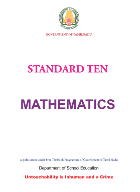
equal to
not equal to
less than
less than or equal to
greater than
greater than or equal to
equivalent to
union
intersection
universal set
belongs to
does not belongs to
⊂ proper subsets of
⊆ subset of or is contained in
⊄ not a proper subset of
⊈ not a subset of or is not contained in
(or)complement of A
∅(or){ } empty set or null set or void set
number of elements in the set A
power set of
∑ summation
similarly
symmetric difference
natural numbers
whole numbers
integers
real numbers
△ triangle
angle
perpendicular to
parallel to
⟹ implies
∴ therefore
∵ since(or)because
|| absolute value
≃ approximately equal to
|(or): such that
≡(or)≃ congruent
≡ identically equal to
π pi
± plus or minus
CHAPTER |
TITLE |
PAGE NO. |
MONTH |
1 |
Relations and functions |
1-35 |
|
1.1 |
Introduction |
1 |
June |
1.2 |
Ordered pair |
2 |
|
1.3 |
Cartesian Product |
2 |
|
1.4 |
Relations |
6 |
|
1.5 |
Functions |
10 |
|
1.6 |
Representation of Functions |
15 |
|
1.7 |
Types of Functions |
17 |
|
1.8 |
Special Cases of Functions |
22 |
|
1.9 |
Composition of Functions |
26 |
|
1.10 |
Identifying the Graphs of Linear, Quadratic, Cubic, and Reciprocal Functions |
29 |
|
2 |
Numbers and sequences |
36-84 |
|
2.1 |
Introduction |
37 |
June
|
2.2 |
Euclid’s Division Lemma |
37 |
|
2.3 |
Euclid’s Division Algorithm |
39 |
|
2.4 |
Fundamental Theorem of Arithmetic |
43 |
|
2.5 |
Modular Arithmetic |
46 |
|
2.6 |
Sequences |
52 |
|
2.7 |
Arithmetic Progression |
55 |
July |
2.8 |
Series |
62 |
|
2.9 |
Geometric progression |
67 |
|
2.10 |
Sum to n terms of a Geometric Progression |
73 |
|
2.11 |
Special series |
76 |
|
3 |
Algebra |
85-160 |
|
3.1 |
Introduction |
85 |
July |
3.2 |
Simultaneous Linear Equations in Three variables |
87 |
|
3.3 |
GCD and LCM of polynomials |
93 |
|
3.4 |
Rational Expressions |
98 |
August |
3.5 |
Square Root of Polynomials |
103 |
|
3.6 |
Quadratic Equations |
106 |
|
3.7 |
Graph of Variations |
123 |
September |
3.8 |
Quadratic Graphs |
130 |
October |
3.9 |
Matrices |
137 |
|
4 |
Geometry |
161-202 |
|
4.1 |
Introduction |
161 |
July |
4.2 |
Similarity |
162 |
|
4.3 |
Thales Theorem and Angle Bisector Theorem |
171 |
August |
4.4 |
Pythagoras Theorem |
183 |
October |
4.5 |
Circles and Tangents |
188 |
|
4.6 |
Concurrency Theorems |
195 |
|
5 |
Coordinate Geometry |
203-238 |
|
5.1 |
Introduction |
203 |
August |
5.2 |
Area of a triangle |
205 |
|
5.3 |
Area of a quadrilateral |
207 |
|
5.4 |
Inclination of a line |
212 |
|
5.5 |
Straight line |
221 |
|
5.6 |
General form of a straight line |
230 |
|
6 |
Trigonometry |
239-268 |
|
6.1 |
Introduction |
239 |
September |
6.2 |
Trigonometric identities |
242 |
|
6.3 |
Heights and Distances |
250 |
November |
7 |
Mensuration |
269-300 |
|
7.1 |
Introduction |
269 |
November |
7.2 |
Surface Area |
270 |
|
7.3 |
Volume |
282 |
|
7.4 |
Volume and surface Area of Combined Solids |
290 |
|
7.5 |
Conversion of Solids from one shape to another with no change in Volume |
295 |
|
8 |
Statistics and Probability |
301-333 |
|
8.1 |
Introduction |
301 |
December |
8.2 |
Measures of Dispersion |
303 |
|
8.3 |
Coefficient of Variation |
314 |
|
8.4 |
Probability |
316 |
|
8.5 |
Algebra of Events |
323 |
|
8.6 |
Addition Theorem of Probability |
325 |
|
|
Answers |
334-342 |
|
|
Mathematical terms |
343-344 |
|
Evaluation
“Mathematicians do not study objects, but relations between objects Content to them is irrelevant: they are interested in form only”–Henri Poincare.
Gottfried Wilhelm Leibniz (also known as von Leibniz) was a prominent German mathematician, philosopher, physicist and inventor. He wrote extensively on 26 topics covering wide range of subjects among which were Geology, Medicine, Biology, Epidemiology, Paleontology, Psychology, Engineering, Philology, Sociology, Ethics, History, Politics, Law and Music Theory.
In a manuscript Leibniz used the word "function" to mean any quantity varying from point to point of a curve. Leibniz provided the foundations of Formal Logic and Boolean Algebra, which are fundamental for modern day computers. For all his remarkable discoveries and contributions in various fields, Leibniz is hailed as"The Father of Applied Sciences".
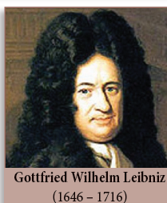
To understand the graphs of linear, quadratic, cubic and reciprocal functions.
The notion of sets provides the stimulus for learning higher concepts in mathematics. A set is a collection of well-defined objects. This means that a set is merely a collection of something which we may recognize. In this chapter, we try to extend the concept of sets in two forms called Relations and Functions. For doing this, we need to first know about Cartesian products that can be defined between two non-empty sets.
It is quite interesting to note that most of the day-to-day situations can be represented mathematically either through a relation or a function. For example, the distance travelled by a vehicle in given time can be represented as a function. The price of a commodity can be expressed as a function in terms of its demand. The area of polygons and volume of common objects like circle, right circular cone, right circular cylinder, sphere can be expressed as a function with one or more variables. In class nineth, we had studied the concept of sets. We have also seen how to form new sets from the given sets by taking union, inter section and complementation. Now we are about to study a new set called "Cartesian product" for the given sets A and B.
Observe the seating plan in an auditorium (Figure .1.1). To help orderly occupation of seats, tokens with numbers such as1 5 7 16 3 4 1012etcetera are issued. The person who gets 410 will go to row 4 and occupy the 10th seat. Thus, the first number denotes the row and the second number, the seat. Which seat will the visitor with token 5 9 occupy? Can he go to 9 throw and take the 5th seat? Do 9 5 and 59 refer to the same location? No, certainly! What can you say about the tokens 2 3, 6 3 and 10 3?
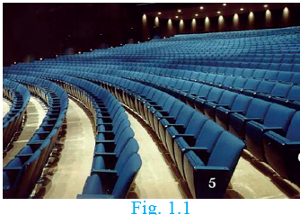
This is one example where a pair of numbers, written in a particular order, precisely indicates a location. Such a number pair is called an ordered pair of numbers. This notion is skillfully used to mathematize the concept of a "Relation".
Let us consider the following two sets.
A is the set of 3 vegetables and B is the set of 4 fruits. That is,
Set Aequaltocarrot, brinjal, ladies’ finger and set B equal to apple, orange, grapes, strawberry
What are the possible ways of choosing a vegetable with a fruit? (Figure .1.2)
Vegetables(A) |
Fruits(B) |
Carrot(c) |
Apple(a) |
Brinjal(b) |
Orange(o) |
Ladies finger (l) |
Grapes(g) |
Strawberry(s) |
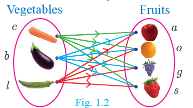
We can select them in 12 distinct pairs as given below. c a, c o, c g, c s, b a, b o, b g, b s, l a, l o, l g, l s.
This collection represents the Cartesian product of the set of vegetables and set of fruits.
Definition
If A and B are two non – empty sets, then the set of all ordered pairs a b such thatA,b belongs to B is called the Cartesian Product of A and B, and is denoted by A cross B
Thus,A cross B equal to set of a b such that a belongs to set A b belongs to set B. Also Note that A cross empty set equal to empty set
Note
A cross B is the set of all possible ordered pairs between the elements of A and B such that the first coordinate is an element of and the second coordinate is an element of B
Let set Aequal to with in bracket 123and set Bequaltoab. Write A cross B and B cross A?
Set A cross B equal to 1 2 3 cross a b equal to set 1 a, 1 b, 2 a, 2 b, 3 a, 3 b (as shown in Figure .l.3)
Set B cross A equal to a b cross 1 2 3 equal to set a 1, a 2, a 3, b 1, b 2, b 3 (as shown in Figure .1.3)
When will A cross B be equal to B cross A?
Note
In general, A cross B is not equal to B cross A, but n of A cross B, equal to n of B cross A cross B equal to empty setand only if A equal to empty set or B equal to empty set
If n ofA equal p and n of B equal to q than n of A cross B equal to p q
Recall of standard infinite sets
Natural Numbers set N equal to with in brqacket 1 2 3 4 and so on Whole Number set W equal to with in bracket 0 1 2 3 and so on
Integers set (Z) equal to with in bracket and so on minus 2 minus 1 zero 1 2 Rational Numbers Q equal to set p by q such that p q belongs to z, q is not equal to zero
Real Numbers equal to Q U Q, where Q is the set of all irrational numbers.
For example, let A be the set of numbers in the interval [3, 5] and B be the set of numbers in the interval [2, 3]. Then the Cartesian product A cross Bcorrespondsto the rectangular region shown in the Figure .1.4. It consists of all points x y with in the region.
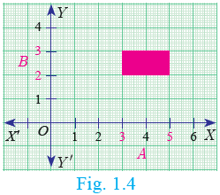
1.For any two non – empty sets A and B, A crossBis called as dash.
2.If n of A cross B equal to 20and n of A equal to 5 then n of B is dash .
3.If set A equal to minus 1 1 and set B equal to minus 1 1 then geometrically describe the set of points of A crossB.
4.If A, B are the line segments given by the intervals minus 4, 3and minus 2, 3 respectively, represent the Cartesian product of A and B
The set of all points in the cartesian plane can be viewed as the set of all ordered pairsx ywherex yare real numbers. In fact, R cross R is the set of all points which we call as the Cartesian plane.
Let set A equal to x such that x belongs to Natural number N, x is less than or equal to 4, set of B equal to y such that y belongs to Natural number N, y is less than 3
RepresentA cross Band B cross A in a graph sheet. Can you find the difference between A cross B and B cross A?
If A equal to the set of 1 3 5 and B equal to the set of 2 3 then
Number 1Find A cross B and B cross A.
(ii)Is A cross B equal to B cross A? If not, why?
3Show that n of A cross B equal to n of B cross A equal ton of A cross n of B
Solution
Given that A equal to the set of 1 3 5 and B is equal to the set of 2 3
Number 1A cross B equal to the set of 1 3 5 cross 2 3 equal to the set of 1 2, 1 3, 3 2, 3 3, 5 2, 5 3 and so on equation 1
B cross A equal to the set of 2 3 cross 1 3 5 equal to the set of 2 1, 2 3, 2 5, 3 1, 3 3, 3 5
equation 2
(ii)From (1) and (2) we conclude that A cross B is not equal to B cross A as 1 2 is not equal to 2 1 and 1 3 is not equal to 3 1, etc
(iii)N of A equal to 3, n of B is equal to 2
From (1) and (2) we observe that, n of A cross B is equal to n of B cross A equal to 6
We see that n of A cross n of B equal to 3 cross 2 equal to 6 and n of B cross n of A equal to 2 cross 3 equal to 6
Hence, n of A cross B equal to n of B cross A equal to n of A cross n of B equal to 6.
Thus, n of A cross B equal to n of B cross A equal to n of A cross n of B
If A cross B equal to the set of 3 2, 3 4, 5 2, 5 4, then find A and B
Solution
A cross B equal to the set of 3 2, 3 4, 5 2, 5 4,
We have A equal to set of all first coordinates of elements of A cross B. Therefore A equal to the set of 3 5
B equal to theset of all second coordinates of elements of A cross B.ThereforeB equal to the set of 2 4.Thus A equal to the set of 3 5 and B equal to the set of 2 4.
Example1.3
Let A equal to the set of x belongs to N such that 1 less than x less than4, B equal to the set of x belongs to W such that 0 x less than 2 and C is equal to the set of x belongs to N such that x less than 3.
Then verify that
Number 1A cross with in bracket B union C equal to with in bracket A cross B union with in bracket A cross C
(ii) A cross with bracket B intersection C equal to A cross B inter section A cross C
Solution
A equal to the set of x belongs to N such that 1 less than x less than 4 equal to the set of 2 3, B equal to the set of x belongs to W such that zero less than or equal to x less than 2 equal to the set of o 1, C equal to the set of x belongs to N such that x less than 3 equal to the set of 1 2
Number 1A cross with in bracket B union C is equal to with in bracket A cross B Union with in bracket A cross C B union C is equal to the set of 0 1 Union of the set of 1 2 equal to the set of 0 1 2
A cross with in bracket B union C equal to the set of 2 3 cross the set of 0 1 2 equal to the set of 2 0, 2 1, 2 2, 3 0, 3 1,3 2 equation(1)
A cross B equal to the set of 2 3 cross the set of 0 1 set of 2 0, 2 1, 3 0, 3 1.
With in bracket A cross B union with in bracket a cross c equal to the set of 2 0, 2 1, 3 0, 3 1, Union of the set of 2 1, 2 2, 3 1, 3 2
Equal to the set of 2 0, 2 1, 2 2, 3 0,3 1, 3 2 equation 2
From (1) and (2), A cross with in bracket B Union ‘c equal to within bracket A cross B Union 0f with in bracket A cross C is verified.
Number 1 A cross with in bracket B inter section C equal to within bracket A cross B inter section with in bracket A cross C
B inter section C equal to the set of 0 1 inter section the set of 1 2 equal to the set of 1
A cross with in bracket B inter section C equal to the set of 2 3 cross the set of 1 equal to the set of with in bracket 2 1, with in bracket 3 1 equation 3
A cross B equal to the set of 2 3 cross with in bracket 0 1 equal to the set of with in bracket 2 0, 2 1, 3 0, 3 1
A cross C equal to the set of 2 3 cross the set of 1 2 equal to the set of with in bracket 2 1, 2 2, 3 1, 3 2
within bracket A cross B inter section with in bracket A cross C equal to the set of with in bracket 2 0, 2 1, 3 0, 3 1 inter section the set of with in bracket 2 1, 2 2, 3 1, 3 2 equal to 2 1, 3 1 equation (4)
From (3) and (4), A cross with in bracket B inter section C equal to within bracket A cross B inter section of with in bracket A cross C is verified.
Note
The above two verified properties are called distributive property of cartesian product over union and intersection respectively. In fact, for any three sets A, B, C we have
Number 1 A cross with in bracket B union C equal to withinbracket A cross B Union of with in bracket A cross C
(ii)A cross with in bracket B Inter section C equal to withinbracket A cross B Inter section with in bracket A cross C
If A, B, Carethreenon-empty sets then the Cartesian product of three sets is the set of all possible ordered triplets given by
A cross B cross C equal to the set of with in bracket a b c for all a belongs to A, b belongs to B, c belongs to C
Let A cross the set of 0 1, B is equal to the set of 0 1, C is equal to the set of 0 1
A cross B equal to the set of 0 1 cross the set of 0 1 equal to the set of with in bracket 0 0, 0 1, 1 0, 1 1
Representing A cross B in thexy –plane we get a picture shown in Figure .1.5.
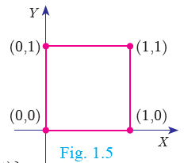
with in bracket A cross B into C equal to the set of with in bracket 0 0, 0 1, 1 0, 1 1 cross the set of O1
equal to the set of with in bracket 0 0 0, 0 0 1, 0 1 0, 0 1 1, 1 0 0, 1 0 1, 1 1 0, 1 1 1
Representing A cross B cross C in thexyz space we get a picture as shown in below
Figure1.6.
Thus, A cross B represent vertices of a square in two dimensions and A cross B cross C represent vertices of a cube in three dimensions.
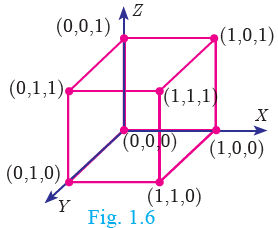
Note
In general, cartesian product of two non-empty sets provides a shape in two dimensions and Cartesian product of three non-empty sets provide an object in three dimensions.
1. Find A cross B, A cross A and B cross A
1.A equal to the set of with in bracket 2 minus 2 in to 3 and B is equal to the set of with in bracket 1 minus 4
2.A equal to B equal to the set of p, q
3.A equal to the set of mn; B equal to empty set
2. Let A is equal to the set of 1 2 3 and B is equal to the set of x such that x is a prime number less than 10}. Find A cross B and B cross A.
3. If B cross A equal to the set of with in bracket minus 2, 3 minus 2, 4 with in bracket 0 3, 0 4, 3 3, 3 4 find A and B.
4. If A equal to the set of 5 6, B is equal to the set of 4,5,6 c equal to 5, 6,7 B= {4,5, 6}, C= {5,6,7}, Show that A cross A equal to within bracket B cross B inter section with in bracket C cross C.
5. Given A equal to the set of 1, 2, 3 B equal to 2, 3, 5 C equal to 3,4 and D equal to the set of 1, 3, 5
check if
within bracket A inter section C cross with in bracket B inter section D equal to within bracket A cross B inter section with in bracket C cross D is true?
6. LetA equal to the set of x belongs to W such that x less than 2, B equal to the set of x belongs to N such that 1 less than x less than or equal to 4 and C equal to the set of 3, 5. Verifythat
(1) A cross with in bracket B Union of C that is equal to within bracket A cross B Union with in bracket A cross C
(ii) A cross with in bracket B inter section equal to within bracket A cross B inter section with in bracket A cross C
(iii)with in bracket A Union B cross C equal to within bracket A cross C Union of with in bracket B cross C
7. Let A equal to These to of all-natural numbers less than 8, B = The set of all prime numbers less than 8, C equal to the set of even prime number. Verify that
1.withinbracket A inter section B cross C equal to within bracket A cross C inter section with in bracket B cross C
2.A cross with in bracket B minus C that is equal to within bracket A cross B minus with in bracket A cross C
Many day-to-day occurrences involve two objects that are connected with each other by some rule of correspondence. We say that the two objects are related under the specified rule. How shall we represent it? Here are some examples,
Relationship |
Expressing using the symbol R |
Representation as ordered pair |
New Delhi is the capital of India |
New Delhi RIndia |
(New Delhi, India) |
Line AB is perpendicular to line XY |
line AB R line XY |
(line AB, line XY) |
Minus 1 is greater than minus5 |
Minus 1 Rminus 5 |
(minus 1, minus 5) |
l is a line of symmetry for triangle PQR |
L R triangle P Q R |
within bracket l, triangle P Q R |
How are New Delhi and India related? We may expect the response, “New Delhi is the capital of India”.
But there are several ways in which “New Delhi’ and ‘India’ are related. Here are some possible answers.
So, when we wish to specify a particular relation, providing only one ordered pair (New Delhi, India) it may not be practically helpful. If we ask the relation in the following set of ordered pairs, {(New Delhi, India), (Washington, USA), (Beijing, China), (London, U.K.), (Kathmandu, Nepal)} then specifying the relation is easy.
Let A equal to the set of 1, 2, 3, 4 and B equal to the set of a, b, c.
1.Which of the following are relations from A to B?
One the set of with in bracket 1,b 1,c 3,a 4,b
Two the set of with in bracket 1,a b,4 c,3
Three the set of with in bracket 1,a a,1 2,b b,2
2.Which of the following are relations from B to A?
One the set of with in bracket c,ac,b c,1
Two the set of with in bracket c,a c,2 c,3 c,4
Three the set of with in bracket a,4 b,3 c,2
Students in a class |
S one |
S two |
S three |
S four |
S five |
S six |
S seven |
S eight |
S nine |
S ten |
Heights (in feet) |
4.5 |
5.2 |
5 |
4.5 |
5 |
5.1 |
5.2 |
5 |
4.7 |
4.9 |
Let us define a relation between heights of corresponding students. (Figure .1.7)
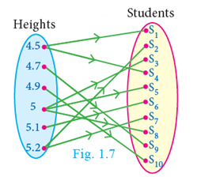
Set R equal to the set of heights, students
R equal to the set of with in bracket 4 point 5 S1, 4 point 5 S 4, 4 point 7 S 9, 4 point 9 S 10, 5 S 3, 5 S 5, 5 S 8, 5 point 1 S 6, 5 point two S 2, 5 point 2 S 7
Definition
Let A and B be any two non – empty sets. A ‘relation’ R fromAtoBisasubset of A cross B satisfying some specified conditions. If x belongs to A is related to Y belongs to Bthrough R,then we write it as x Relation y. x Relation y if and only if x, y belongs to R. The domain of the relation R with in bracket x belongs to A such that x R Y, for some Y belongs to B The co-domain of the relation R is B
The range of the relation R the set of y belongs to B such that x R y, for some x belongs to AFrom these definitions, we note that domain of R subset of A, co-domain of R equal to B and range of R subset of B.
Let A equal to the set of 1 2 3 4 5 and B equal to the set of mathi, arul, john
A relation R betweenthe above sets A and B can berepresentedby a arrow diagram below (Figure.1.8).
Then, domain of R equal to the set of 1 2 3 4 range of R equal to the set of mathi, arul, john equal to co-domain of R.
Note that domain of R isa proper subset of A.
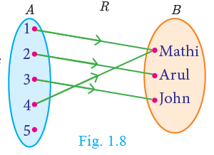
Let A and B be the set of lines in x y plane such that A consists of lines parallel to X axis. For x belongs to A, Y belongs to B , let R be a relation from A to B defined byxRy if X is perpendicular to . Find the elements of B using a graph sheet.
Let A equal to the set of 1 3 5 7 and B equal to the set of 4 8.If R is a relation defined by “is less than" from
A to B, then 1 R 4 (':1 is less than 4). Similarly, it is observed that 1R8, 3R4, 3R8, 5R8, 7R8
Equivalently R equal to the set of with in bracket 1 4, 1 8, 3 4, 3 8, 5 8, 7 8
Note
In the above illustration A cross B equal to the set of 1 4, 1 8, 3 4, 3 8, 5 4, 5 8, 7 4, 7 8 R equal to the set of with in bracket 1 4, 1 8, 3 4, 3 8, 5 8, 7 8 We see that R is a subset of A cross B
In a particular area of a town, let us consider ten families A, B, C, D, E, F, G, H, I and J with two children. Among these, families B, F, I have two girls; D, G, J have one boy and one girl; the remaining have two boys. Let us define a relation R by x R y, where xdenote the number of boys and y denote the family with number of boys. Represent this situation as a relation through ordered pairs and arrow diagram.
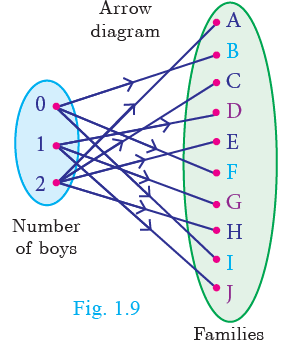
Since the domain of the relation R is concerned about the number of boys, and we are considering families with two children, the domain of Rwillconsistof three elements given by {0, 1, 2}, where 0, 1, 2 represent the number of boys say no, one, two boys respectively. We note that families with two girls are the ones with no boys. Hence the relation R is given by R equal to the set of with in bracket 0 B, 0 F, 0 I, 1 D, 1 G, 1 J, 2 A, 2 c, 2 E, 2 H This relation is shown in an arrow diagram (Figure ure.1.9)
Let A equal to the set of 3 4 7 8 and B is equal to the set of 1 7 10. Which of the following sets are relations from A to B?
1.R1 equal to the set of with in bracket 3 7, 4 7, 7 10,
2.R2 equal to the set of with in bracket 3 1, 4 12
3.R3 equal to the set of with in bracket 3 7, 4 10, 7 7, 7 8, 8 11, 8 7, 8 10 the set of with in bracket 3 1, 3 7, 3 10, 4 1, 4 7, 4 10, 7 1, 7 7, 7 10, 8 1, 8 7, 8 10
Solution
A cross B equal to the set of with in bracket 3 1, 3 7, 3 10, 4 1, 4 7, 4 10, 7 1, 7 7, 7 10, 8 1, 8 7, 8 10
1.We note that, R1 subset of A cross B.Thus,R1 is a relation from A to B.
2.Here, (4, 12) does not belongs to R2, but (4, 12) does not belongs to A cross B. So, R2 is not a relation from A to B.
3.Here, 7, 8 belongs to R3, but (7, 8) does not belongs to A cross B. So, R3 is not a relation from A to B.
Note
3. A relation may be represented algebraically either by the roster method or by the set builder method.
4. An arrow diagram is a visual representation of a relation.
The arrow diagram shows (Figure .l.10) a relationship between the sets P and Q. Write the relation in
1.Set builder form
2.Roster form
3.What is the domain and range of R?
Solution
Number 1 Set builder form of R equal to the set of with in bracket x y such that y equal to x minus 2, x belongs to P, y belongs to Q
(ii)Roster form R equal to the set of with in bracket 5 3, 6 4, 7 5
(iii)Domain of R equal to the set of 5 6 7 and range of R equal to the set of 3 4 5
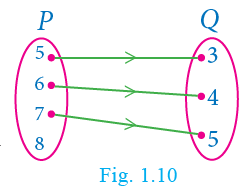
'Null relation'
Let us consider the following example. Suppose A equal to the set of minus 3, minus 2, minus 1 and B equal to the set of 1 2 3 4. A relation from A to B is
Defined as a minus b equal to 8 that is there is no pair a, b such thata minus b equal to 8. ThusRcontainnoelementandso R equal to empty set.
A relation which contains no element is called a"Null relation".
If n of A equal to p, n of B equal to q,then the total number of relations that exist from A to B is 2 power p q
1.Let A equal to the set of 1 2 3 7 and B equal to the set of 3 0, minus 1, 7,which of the following are relation from A to B?
1.R1 equal to the set of with in bracket 2 1, 7 1
2.R2 equal to the set of with in bracket minus 1, 1
3.R3 equal to the set of with in bracket 2 minus 1, 7 7, 1 3
4.R4 equal to the set of with in bracket 7 minus 1, 0 3, 3 3, 0 7
2. Let A equal to the set of 1 2 3 4 and so on 45 and R bethe relation defined as "is square of a number "on A. Write R as a subset of A cross A. Also, find the domain and range of R.
3. A Relation R isgivenbythe set x y by y equal to x plus 3, x belongs to the set of 0 1 2 3 4 5.Determine its domain and range.
4. Represent each of the given relations by(a) an arrow diagram, (b) a graph and (c)a set-in roster form, wherever possible.
1.The set of with in bracket x y such that x equal to 2y, x belongs to the set of 2 3 4 5, y belongs to 1 2 3 4
2.The set of with in bracket x y such that y equal to x plus 3, x y are natural numbers less than 10
5. A company has four categories of employees given by Assistants (A), Clerks (C), Managers(M) and an Executive Officer(E). The company provide Rupees ten thousand , Rupeestwenty five thousand, Rupeesfifty thousand and Rupees.1 lack as salaries to the people who work in the categories A, C, M and E respectively. If A1, A2, A3, A4and A 5were Assistants; C1, C2, C3, C4 were Clerks; M1, M2, M3 were managers and E1, E2 were Executive officers and if the relation R is defined by x R y the salary given to person express the relation R through an ordered pair and an arrow, where x is diagram.
Among several relations that exist between two non-empty sets, some special relations are important for further exploration. Such relations are called “Functions”.
A company has 5 employees in different categories. If we consider their salary distribution for a month as shown
By arrow diagram in Figure .1.11, we see that there is only one salary associated for every employee of the company.
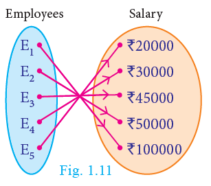
Here are various real-life situations illustrating some special relations:
1.Consider the set A of all your classmates; corresponding to each student, there is only one age.
2.You go to a shop to buy a book. If you take out a book, there is only one price corresponding to it; it does not have two prices corresponding to it. (of course, many books may have the same price).
3.You are aware of Boyle's law. Corresponding to a given value of pressure P,thereIs only one value of volume V.
4.In Economics, the quantity demanded can be expressed as Q equal to 360 minus 4 P, where P is the price of the commodity. We see that for each value of P,there is only one value of Q. Thus the quantity demanded Q depend on the price P of the commodity.
5.We often come across certain relations, in which, for each element of a set A, there is only one corresponding element of a set B. Such relations are called functions. We usually use the symbol f to denote a functional relation.
Definition
A relation f between two non-empty sets X and Y is called a function from X to Yif, for each x belongs to X there exists only one y belongs to Y such thatwith in bracket x y belongs to f.
That is, f equal to the set of with in bracket x y such that for all x belongs to X, y belongs to Y.
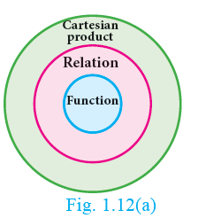
A function f from X to Y is written as Function X to Y
Comparing the definitions of relation and function, we see that every function is a relation. Thus, functions are subsets of relations and relations are subsets of Cartesian product. (Figure1.12(a)
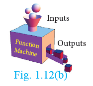
A functioncan be thought as a mechanism (or device) (Figure ure. 1.12(b), which gives aunique output f of x to every input x.
A function is also called as a mapping or transformation.
Note
If Function X to Y is a function then
1.every element in the domain of f has an image.
2. the image is unique.
1.Let f of x equal to 1 by x plus 1 if x equal to minus 1 then f of minus 1 is not defined. Hence
f is defined for all real numbers except at x equal to minus 1. So, domainoffis R minus of minus 1.
2.Let f of x equal to 1 by x square minus 5 x plus 6;if x equal to 2, 3 then f of 2 and f of 3 are not defined. Hence f is defined for all real numbersexcept at x equal to 2, 3. So, domain of f of R equal to minus the set of 2 3
1.Relations are subsets ofdash Functions are subsets of
2.True or False: All the elements of a relation should have images.
3.True or False: All the elements of a function should have images.
4.True or False: If R A toBis a relation then the domain of R equal to A.
5. If f N to N is defined as f of x equal to x square the image of 1 and 2 are dashand dash
6.What is the difference between relation and function?
7.Let A and B be two nonemptyfinite sets. Then which one among the following two collection is large?
Number 1 The number of relations between A and B.
(ii)The number of functions between A and B
Representation by Arrow diagram
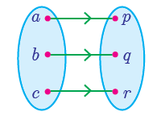 This represents a function. Each input corresponds to a single output. Figure uare.1.13(a) |
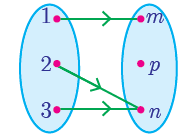 This represents a function. Each input corresponds to a single output. Figure uare.1.13(b) |
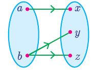 This is not a function. One of the input b is associated with two outputs. Figure uare .1.13 (c) |
Functions play very important role in the understanding of higher ideas in mathematics. They are basic
tools to convert from one form to another form. In this sense, functions are widely applied in Engineering
Sciences.
Note
The range of a function is a subset of its co-domain
Let X equal to the set of 1 2 3 4 and Y equal to 2 4 6 8 10 and R equal to 1 2, 2 4, 3 6, 4 8 Show that R is a function and find Its domain, co-domain and range?
Solution
Pictorial representation of R is given in Figure ure .1.14. From the diagram, we see that for each x belongs to X, there exists only one y belongs to Y. Thusallelementsin X have only one image in Y. Therefore, R is a function. Domain X equal to the set of 1 2 3 4; Co-domain Y equal to
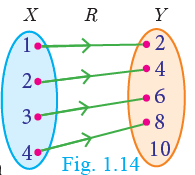
the set of 2 4 6 8 10; Range of f equal to the set of 2 4 6 8.
A relation f X to Yis defined by f of x equal to x square minus 2 where, x equal to the set of minus 2, minus 1, 0, 3 and Y equal to R.
Number 1 List the elements of f
(ii)Is f a function?
Solution
F of x equal to x square minus 2where X equal to the set of minus 2, minus 1, 0, 3
f of minus 2 equal to minus 2 square minus 2 equal to 2;
f of minus 1 equal to minus 1 whole square minus 2 equal to minus 1
f of 0 equal to zero square minus 2 equal to minus 2 2;
f of 3 equal to 3 square 2 minus 2 equal to 7 2
therefore f equal to the set of with in bracket minus 2 2,minus 1 minus 1, zero minus 2, 3 7
We note that each element in the domain of f has a unique image. Therefore, f is a function.
Thinking Corner
Is the relation representing the association between planets and their respective moons a function?
If X equal to that of minus 5 1 3 4 andY equal to the set of a b cY equal to {a, b, c}, then which of the following relations are functions from X to Y
1.R1 equal to the set of with in bracket minus 5 a, 1 a, 3 b
2.R2 equal to the set of with in bracket minus 5 b, 1 b, 3 a, 4 c
3.R3 equal to the set of with in bracket minus 5 a, 1 a, 3 b, 4 c, 1 b
Solution
1.R1 equal to the set of with in bracket minus 5 a, 1 a, 3 b We may represent the relation R1 in an arrow diagram (Figure l.15(a)). R1is not a function as 4 belongs to X does not have an image in Y
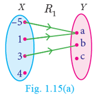
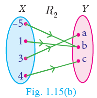
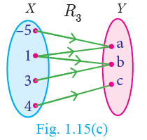
Given f of x equal to 2x minus x square ,
Find
1.F of 1
2.F of x plus 1
3.F of x plus f of 1
Solution
1.X equal to 1,
we get f of 1 equal to 2 of 1 minus 1 whole square equal to 2 minus 1 equal to 1
2.X equal to x plus 1
we get f of x plus 1 equal to 2 of x plus 1 minus x plus 1 whole square equal to 2 x plus 2 minus with in bracket x sqr plus 2x plus 1 equal to minus x square plus 1
f of x plus f of 1 equal to within bracket 2x minus x square plus 1 equal to minus x square plus 2x plus 1
[Note that f of x plus f of 1 not equal to f of x plus 1. In general f of a plus b is not equal to f of a plus f of b
1.Let f equal to the set of with in bracket x y such that x y belongs to N and y equal to 2x and be a relation on N. Find the domain, co-domain and range. Is this Relation a function?
2.Let X equal to 3 4 6 8. Determine whether the relation R equal to within bracket x, f of x such that x belongs to X, f of x equal to x square plus 1 is a function from X to N ?
3.Given the functionfunction x to x square minus 5x plus 6, evaluate
1.f of minus 1 2.f of 2a 3.f of 2 4.f of x minus 1
4.A graph representing the function f of x is given in Figure .l.16 it is clear that f of 9 equal to two
1. Find the following values of the function
a F of 0 b F of 7 c F of 2 d F of 10
2. For what value of x is f of x equal to 1?
3. Describe the following
a. Domain
b.Range.
4. What is the image of 6 under f?
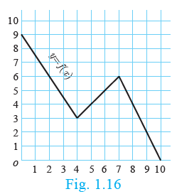
5.Let f of x equal to 2x plus 5. If x not equal to 0 then find f of x plus 2 minus f of 2 by x
6.A function fis defined by f of x equal to 2x minus 3
1.Find f of 0 plus f of 1 by 2
2.find x such that f of x equal to 0
4.find x such that f of x equal to x. .
5.find x such that f of x equal to f of 1 minus x
7.An open box is to be made from a square piece of material, 24 cm on a side, by cutting equal square s from the corners and turning up the sides as shown (Figure .1.17). Express the volume V of the box as a function of x.
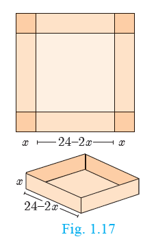
8. A function f is defined by f of x equal to 3 minus 2x.Find x such that f of x square equal to with in bracket f of x whole square
9. A plane is flying at a speed of 500 km per hour. Express the distance 'd' travelled by the plane as function of time t in hours.
10. The data in the adjacent table depicts the length of a person forehand and their correspondingheight. Based on this data, a student finds arelationship between the height y and the fore hand length x as y equal to ax plus b where a,b are constants.
Length x of forehand (in cm) |
Height y (in inches) |
35 |
56 |
45 |
65 |
50 |
69.5 |
55 |
74 |
1.Check if this relation is a function.
2.Find a and b.
3.Find the height of a person whose forehand length is 40 cm.
4.Find the length of forehand of a person if the height is 53.3 inches.
A function may be represented by
(a) a set of ordered pairs (b) a table form
(c) an arrow diagram(d) a graphical form
Let function A to B be a function
a Set of ordered pairs
The set of with in bracket x y such that y equal to f of x, x belongs to A of all ordered pairs represent a function.
b Table form
The values ofand the values of the irrespective images under f can be given in the form of a table.
c Arrow diagram
An arrow diagram indicates the elements of the domain of f and the irrespective images by means of arrows.
d Graph
The ordered pairs in the collection f equal to with in bracket x y such that y equal to f of x , x belongs to A are plotted as points in the - plane. The graph of f is the totality of all such points.
Every function can be represented by a curve in a graph. But not every curve drawn in a graph will represent a function.
The following test will help us in determining whether a given curve is a function or not.
A curve drawn in a graph represents a function, if every vertical line intersects the curve atonly one point.
Using vertical line test, determine which of the following curves (Figure .1.18(a), 1.18(b), 1.18 (c), 1.18 (d)) represent a function?
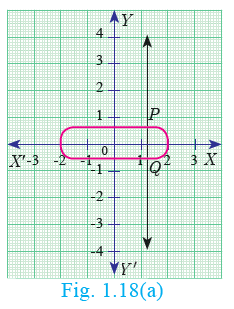 |
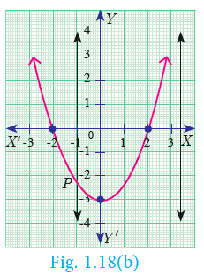 |
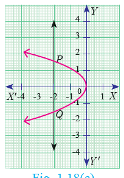 |
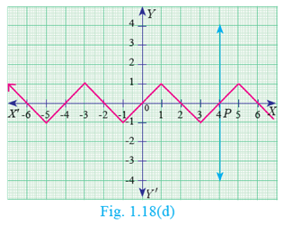
Solution The curves in Figure .1.18 (a) and Figure .1.18(c) do not represent a function as the vertical lines meet the curves in two points P and Q.
The curves in Figure .1.18(b)and Figure.1.18(d) represent a function as the vertical lines meet the curve in at most one point.
Note
Any equation represented in a graph is usually called a curve.
Let A equal to the set of 1 2 3 4 and B equal to 2 5 8 11 14 be two sets. Let function A to B be a function given by
F of x equal to 3x minus 1,Representthisfunctio
1.by arrow diagram
2.in a table form
3.as a set of ordered pairs
4.in a graphical form
Solution
A equal to the set of 1 2 3 4; B equal to the set of 2 5 8 11 14; f of x equal to 3 x minus 1
F of 1 equal to 3 of 1 minus 1 equal to 3 minus 1 equal to 2 ; f of 2 equal to 3 of 2 minus 1 equal to 6 minus 1 equal to 5
F of 3 equal to 3 of 3 minus 1 equal to 9 minus 1 equal to 8; f of 4 equal to 4 of 3 minus 1 equal to 12 minus 1 equal to 11
1.Arrow diagram
Let us represent the function function A to B by an arrow diagram(Figure.1.19).
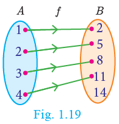
2.Table form
The given function f can be represented in a tabular form as given below
X |
1 |
2 |
3 |
4 |
f of x |
2 |
5 |
8 |
11 |
3. Set of ordered pairs
The function f can be represented as a set of ordered pair as
f equal to the set of with in bracket 1 2, 2 5, 3 8, 4 11
4.Graphical form
In the adjacent XY plane the points with in bracket 1 2, 2 5, 3 8, 4 11 are plotted (Figure.1.20).
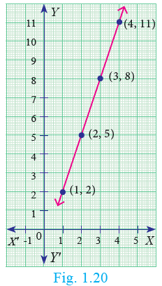
In this section, we will discuss the following types of functions with suitable examples.
1.Onetoone
2.many toone
3.onto
4.into
Let us assume that we have a cell phone with proper working condition. If you make a usual call to your friend, then you can make only one call at a time (Figure.1.21).
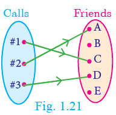
If we treat making calls as a function, then it will be one-one.
A function function A to B is called one to one function if distinct elements of have distinct images in B.
A one to one function is also called an injection.
Equivalently,
If for all a1 a2 belongs to A, f of a1 equal to f of a2 implies a1 equal to a2, then f is called one to one function
A equal to the set of 1 2 3 4 and B equal to the set of a b c d e
1Let f equal to the set of with in bracket 1 a, 2 b, 3 d, 4 c. In Figure. 1.22, for different elements in A, there are different images in B. Hence f is a oneone function.
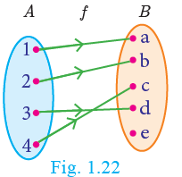
2.Let g equal to the set of with in bracket 1 b, 2 b, 3 c, 4 e g is a function from A to B such that g of 1 equal to g of 2 equal to b, but 1 not equal to 2. Thus, two distinct elements 1 and 2in the first set A have same image bthesecondset in B (Figure. l.23). Hence, is not a oneone function.
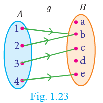
In a theatre complex, three films F1 F2 F3 is shown. Seven persons (P1 to P7) arrive at the theatre and buy tickets as shown (Figure .1.24).
If the selection of films is considered as a relation, then this is a function which is many to one, since more than one person may choose to watch the same film.
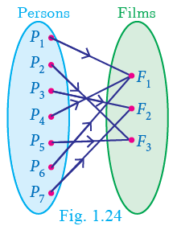
A function function A to B is called many-one function if two or more elements of A have same image in B.
In other words, a function function A to B is called many-one if f it is not one to one.
Let A equal to the 1 2 3 4 and B equal to the set of a b c, f equal to the set of with in bracket 1 a, 2 a, 3 b, 4 c Thenf is a function from A to B in which different elements 1 and 2 of have the same image in B. Hence f is a many one function.
In a mobile phone assume that there are 3 persons in the contact. If every person in the contact receives a call, then the function representing making calls will be onto. (Figure .1.25)
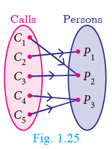
A function function A to B Is said to be onto function if the range of f is equal to the co-domain of f
In other words, every element in the co-domain B has a pre-image in the domain A. An onto function is also called a surjection.
Note:
If function A to B is an onto functionthen, the range of f equal to B.
Let A equal to the set of x y z, b equal to the set of l m n
Range of f equal to l m n equal to B (Figure . 1.26)
Hence f is an onto function.
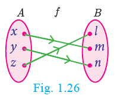
In a home appliance showroom, the products television, air conditioner, washing machine and water heater were provided with 20 percentage discount as new year sale offer. If the selection of the above products by the three customers C 1 C 2 C 3 is considered as a function, then the following diagram (Figure .1.27) will represent an into function.
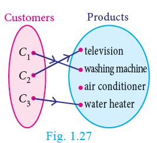
During winter season customers usually do not prefer buying air conditioner. Here air conditioner is not chosen by any customer. This is an example of into function.
A function function A to B is called an into function if there exists at least one element in B which is not the image of any element of A.
That is the range of f is a proper subset of the co-domain of f
In other words, a function function A to B Is called ‘into' if it is not 'onto'.
Let A equal to 1 2 3 and B equal to the set of w x y z, f equal to 1 w, 2 z, 3 x Here, range off equal to the set of w x z proper subsets of B (Figure .1.28)
Therefore f is a into function. Note that y belongs to B is not an image of any element in A.
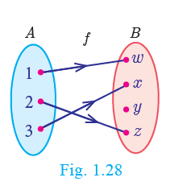
Consider the circle where each letter of the English alphabet is changed from inner portion to a letter in the outer portion. Thus A to D, B to E, C to E, C to F, and so on Z to C. We call this circle as ‘Ciphercircle’. (Figure .1.29).
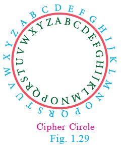
In this way if we try to change the word ‘HELLO’ then it will become ‘KHOOR’. Now using the same circle if we substitute for each outer letter the corresponding inner letter, we will get back the word ‘HELLO’. This process of converting from one form to another form and receiving back the required information is called bijection. This process is widely used in the study of secret codes called cryptography.
If a function function A to B is both one-one and onto, then f is called a bijection from A to B.
One to one and onto function (Bijection) |
|
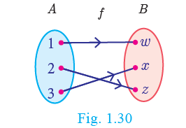 |
Distinct elements of A have distinct images in B and every element in B has a Pre-image in A. |
One to one |
Many to One |
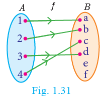 |
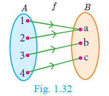 |
Distinct elements of A have distinct images in B. |
Two or more elements of A have sane usage in B. |
Note
A oneone and onto function is also called a oneone correspondence.
Can there be a one-to-many function?
Onto |
Into |
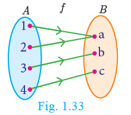 |
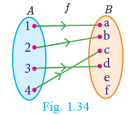 |
Range of f=co-domain (Every element in B has a pre-image in A) |
Range of f is a proper subset of co-domain (There exists at least one element in B which is not the image of any element of A) |
To determine whether the given function is one-one or not the following test may help us.
Previously we have seen the vertical line test. Now let us see the horizontal line test. "A function represented in a graph is one-one, if every horizontal line intersects the curve in at most one point".
Using horizontal line testFigure .1.35 a, 1.35 b, 1.35 c, determine which of the following functions are one-one.
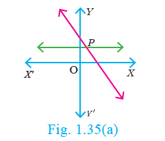
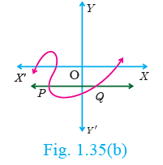
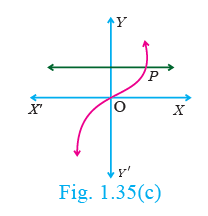
Solution
The curves in Figure .l.35 a and Figure . l.35 c represent a one one function as the horizontal lines meet the curves in only one point P.
The curve in Figure .1.35 b does not represent a oneone function, since the horizontal line intersects the curve at two points P and Q
Let A equal to the set of 1 2 3, B equal to 4 5 6 7 and f equal to the set of with in bracket 1 4, 2 5, 3 6 be a function from A to B. Show that f Is oneone but not on to function.
Solution
A equal to the set of 1 2 3, B equal to 4 5 6 7; f equal to the set of with in bracket 1 4, 2 5, 3 6
Then f is a function from A to B and for different elements in A, there are different images in B. Hence f is one-one function. Note that the element 7 in the co-domain does not have any pre-image in the domain. Hence fis not onto (Figure .1.36).
Therefore f is one-one but not an onto function.
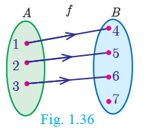
If A equal to the set of minus 2, minus 1, 0, 1, 2 and function A to B is an onto function defined by
F of x equal to x square plus x plus 1 then find B.
Solution Given
A equal to the set of minus 2, minus 1, zero, 1, 2 and
f of x equal to x square plus x plus 1.
f of minus 2 equal to minus 2 square plus minus 2 plus 1 equal to3;
f of minus 1 equal to minus 1 whole square plus with in bracket minus 1 plus 1 equal to 1
f of 0 equal to zero square plus zero plus 1 equal to 1;
f of 1 equal to 1 square plus 1 plus 1 equal to 3
f of 2 equal to 2 whole square plus 2 plus 1 equal to 7f
therefore B equal to the set of 1 3 7.
Let fbe a function N to N be defined by f of x equal to 3 x plus 2, x belongs to N
1.Find the images of 1,2,3
2.Find the pre images of 29,53
3.Identify the type of function
Solution
The function function N to Nis defined by f of x equal to 3 x equal to 3 x plus 2
1.If X equal to 1, f of 1 equal to 3 with in bracket 1 plus 2 equal to 5
If X equal to 2, f of 2 equal to 3 of 2 plus 2 equal to 8
If X equal to 3, f of 3 equal to 3 of 3 plus 2 equal to 11
The images of 1, 2, 3 are 5, 8, 11 respectively.
2.If x is the pre-image of 29, then f of x equal to 29.Hence 3 of x plus 2 equal to 29
3 x equal to 27 implies x equal to 9.
Similarly, if x is the pre-image of 53, then f of x equal to 53. Hence 3x plus 2 equal to 53
3x equal to 51 equal to implies x equal to 17
Thus, the pre-images of 29 and 53 are 9 and 17 respectively.
3.Since different elements of N have different images in the co-domain, the function f is one-one function.
The codomain of f is N.
But the range of f equal to the set of 5 8 11 14 17 and so on is a proper subset of N.
Therefore f is not an onto function. That is, fis an into function.
Thus, fis oneone and into function.
Forensic scientists can determine the height (in cm) of a person based on the length of the thigh bone. They usually do so using the function h of b equal to 2. 47 b plus 54 point one zero where b is the length of the thigh bone.
1.Verify the function h is oneto one or not.
2.Also find the height of a person if the length of his thigh bone is 50cm.
3.Find the length of the thigh bone if the height of a person is 147 point nine six cm.
Solution
1 To check if h is one-one, we assume that h of b1 equal to h of b2.
Then we get, 2 point four seven b1 plus 54 point one zero.
2 point four seven b2 plus 54 point one zero
2 point four seven b1 equal to 2 point four seven b 2
Implies b1 equal to b2
Thus, h of b1 equal to h of b2 implies b1 equal to b2.So, the function h is one one.
2. If the length of the thighbone b equal to 50, then the height is h of 50 equal to with in bracket 2 point four seven in to 50 plus 54 point one zero equal to 177 point six cm.
3. If the height of a person is 147 point nine six,cm, then h of b equal to 147 point nine six and so the length of the thigh bone is given by 2 point four seven b plus 54 point one equal to 147 point nine six
Implies 2 point four seven b equal to 147 point nine six minus 54 point one zero equal to 93 point eight six
B equal to 93 point eight six divided by 2 point four seven equal to 38
Therefore, the length of the thigh bone is 38 cm.
Check whether the following curves represent a function. In the case of a function, check whether it is one-one? (Hint: Use the vertical and the horizontal line tests)
![Activity 3:Curve 1:In XOY plane, a function joined with 4 semi circle on X axis. The vertical line Y axis intersect at only one point on function. Curve 2:In XY plane, a function of straight line intersecting the horizontal line X axis and vertical line Y axis. Curve 3:In XY plane, a function curve line drawn from second quarter to fourth quarter through origin 0. Curve 4:In XY plane, a parabola is drawn from second quarter to third quarter intersecting at origin 0. Curve 5:In XY plane, a concentric circles function drawn starting from the origin. A function intersect on X & Y axis at many points. Curve 6:In XY plane, the shape of function is English alphabetical letter V on X axis where function intersect only at origin 0.](images/image-56.png)
There are some special cases of a function which will be very useful. We discuss some of them below
1.Constant function
2.Identity function
3.Real-valued function
1.Constant function
A function function A to B is called a constant function if the range of f contains only one element. That is, f of x equal to c, for all x belongs to A and for some fixed c belongs to B.
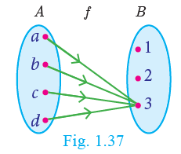
From Figure .1.37, A equal to the set of a b c d, B equal to 1 2 3 and f equal to the set of with in bracket a 3, b 3, c 3, d 3. Therefor f of x equal to 3 for all x belongs to A,
Range of f equal to the set of 3, f is a constant function.
2.Identity function
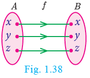
Let A be an on-empty set. Then the functionfunction A to A defined by f of x equal to x for all x belongs to A is called an identity function on A and is denoted by I A
If A equal to the set of a b c then f equal to IA equal to the set of with in bracket a a, b b, c cisanidentity function on A.
Is an identity function one to one function?
1.Real valued function
A function A to B is called a real valued function if the range of f is a subset of these to f all real numbers R. That is, f of a subset of R, for all a belongs to A.
State True or False.
1.All oneone functions are onto functions.
2.There will be no oneone function from A to B when n of A equal to 4, n of B equal to 3.
3.All onto functions are one-one functions.
4.There will be noon to function from A to B when n of A equal to 4, n of B equal to 5.
5.If f is a bijection from A to B, then n of A equal to n of B.
6.If n of A equal to n of B, then fis a bijection from A to B.
7.All constant functions are bijections.
Let fbe a function from R to R defined by f of x equal to 3x minus 5. Find the values of a and b given that with in bracket a 4 and with in bracket 1 b belong to f
Solution
f of x equal to3x minus 5 can be written as f equal to the set of with in bracket x 3x minus 5 such that x belongs to R
with in bracket a 4 means the image of a is 4 that is f of a equal to 43a minus 5 equal to 4 implies a equal to 3
with in bracket 1 b means the image of 1 is b. that is f of 1 equal to b3 with in bracket 1 minus 5 equal to b implies b equal to minus 2
If the function R to R is defined by f of X equal to 2x plus 7, x less than minus 2, x square minus 2, minus 2 less than or equal to x less than 3, 3x minus 2, x greater than or equal to 3 then find the values of
1. f of 4
2. f of minus 2
3. f of 4 plus 2f of 1
4. f of 1 minus 3f of 4 divided by f of minus 3
Solution
The function fis defined by three values in intervals Roman number 1, Roman number 2, Roman number 3 as shown by the side
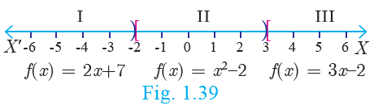
For a given value of x equal to a, find out the interval at which the point a is located, there after find f of ausing the value defined in that interval.
1. First, we see that, x equal to 4 lie in the third interval. Therefore f of x equal to 3x minus 2; f of 4 equal to 3 of 4 minus 2 equal to 10Equation 1
2. X equal to minus 2 lies in the second interval. Therefore f of x equal to x square minus 2; f of minus 2 equal to within bracket minus 2 whole square minus 2 equal to 2
3. From equation 1, f of 4 equal to 10 To find f of 1 first we see that x equal to 1 lies in the second interval. f of x equal to x square minus 2 implies f of 1 equal to 1 square minus 2 equal to minus 1 f of 4 plus f of 1 equal to 10 plus 2 of minus 2 equal to 8
4. We know that f of 1 equal to minus 1 and f of 4 equal to 10
For finding f of minus 3, we see that x equal to minus 3, lies in the first interval.
F of x equal to 2x plus 7; thus, f of minus 3 equal to 2 of minus 3 plus 7 equal to 1
Hence, f of 1 minus 3 f of 4 divided by f of minus 3 equal to minus 1 minus 3 of 10 divided by 1 equal to minus 31
1. Determine whether the graph given below represent functions. Give reason for your answers concerning each graph.
![Graph 1: In XY plane, a curve drawn from First quarter to second quarter, second quarter to third quarter to fourth quarter. The curve intercept vertical line Y axis at two points. Graph 2: In XY plane the curve line drawn from first quarter to fourth quarter through origin. The curve intercept Y axis at only one point. Graph 3: In XY plane, the curve forms ‘S’ shape that is, the curve from 1st quarter to third quarter through second quarter end at fourth quarter. Graph 4: In XY plane, a diagonal line drawn from first quarter to third quarter through origin.](images/image-60.png)
2 Let function A to B be a function defined by f of x equal to x by 2 minus 1 where A equal to the set of 2 4 6 10 12, B equal to the set of 0 1 2 4 5 9. Represent f by set of ordered pairs
a) a table
b) an arrow diagram
c) a graph
3. Represent the function 1 equal to the set of with in bracket 1 2, 2 2, 3 2, 4 3, 5 4 through
a) an arrow diagram
1.a table form
2.a graph
4 Show that the function N to N defined by f of x equal to 2x minus 1 is one-one but not onto.
5 Show that the function N to N defined by f of m equal to m square plus m plus 3 isone one function.
6 Let A equal to the set of 1 2 3 4 and B equal to N.Let function A to B be defined by f of x equal to x cube then,
a) find the range of f
b) identify the type of function
7 In each of the following cases state whether the function is bijective or not. Justify your answer.
1. function R to R defined by f of x equal to 2x plus 1
2. function R to T defined by f of x equal to 3 minus 4x square
8. Let A equal to the set of minus 1, 1 and B equal to the set of 0, 2.Ifthefunction function A to B defined by f of x equal to ax plus b is an onto function? Find a and b.
9. If thefunctionfisdefinedby f of s equal to x plus 2semicolan x greater than 1, 2semicolanminus one less than or equal to one , x minus one semicolon minus three less than x less than minus one find the values of f of x equal to f of x equal to
1. f of 3
2. f of 0
3. f of minus 1 point 5
4. f of 2 plus f of minus 2
10. A function function minus 5 9 to R is defined as follows:
f of x equal to the set of 6x plus 1; minus 5 less than or equal to x less than 2
The set of 5 x square minus 1; 2 less than or equal to x less than 6
The set of 3x minus 4; 6 less than or equal to x less than or equal to 9
a.f of minus 3 plus f of 2
b.f of 7 minus f of 1
c.2f of 4 plus f of 8
a.2f of minus 2 minus f of 6 divided by f of 4 plus f of minus 2
11. The distance an object travels under the influence of gravity in time seconds is given by S of t equal to 1 by 2 gt2 plus a t plus b where, (g is the acceleration due to gravity), a, b are constants. Verify whether the function s of t is one-one or not.
12. The function ‘t’ which maps temperature in Celsius C into temperature in Fahrenheit F is defined by f of C equal to F where f equal to 9 by 5 C plus 32. Find,
1.t of 0
2.t of 28
3. t of minus 10
4.the value of C when t of C equal to 212
5.the temperature when the Celsius value is equal to the Fahrenheit value.
When a car driver depresses the accelerator pedal, it controls the flow of fuel which in turn influences the speed of the car. Likewise, the composition of two functions is a kind of 'Chain reaction', where the functions act upon one after another (Figure .l.40).
We can explain this further with the concept that a function is a 'process'. If f and gare two functions then the composition g of f of x(Figure .1.41) is formed in two steps.
1.Feed an input (say x) to f;
2.Feed the output f of x to g to get gof f of x and call it g f of x.
Consider the set A of all students, who appeared in class X of Board Examination. Each student
appearing in the Board Examination is assigned a roll number. In order to have confidentiality,
the Board arranges to deface the roll number of each student and assigns a code number to each roll number.
Let be the set of all students appearing for the board exam. B subset of N be the set all roll numbers and C sub set of N be the set of all code numbers (Figure .1.41). This gives rise to two functions
f A to B and g B to C given by b equal to f of a be the roll number assigned to student a c equal to g of b be the code number assigned to roll number b, where a belongs to A, b belongs to B and c belongs to C.
We can write c equal to g of b equal to g of f of a.
Thus, by the combination of these two functions, each student is eventually attached ac ode number. This idea leads to the following definition.
Definition
Let function A to B and g B to C be two functions (Figure .l.42). Then the composition of f and gdenotedby g o f is defined as the function g o f of x equal to g of f of x for all x belongs to A.
Find f composite g and g composite f when f of x equal to 2x plus 1 and g of x equal to x square minus 2
Solution
f of x equal to 2x plus 1, g of x equal to x square minus 2
f composite g of x equal to f of g of x equal to f of x square minus 2 equal to 2 into x square minus 2 plus one equal to two x square minus three
g composite f of x equal to g of f of x equal too g of 2 x plus one equal to two x plus one the whole square minus two equal to 4 x square plus 4 x minus one
Thus f composite g equal to 2x square minus 3, g composite f equal to 4x square plus 4x minus 1. . From the above, we see that
f composite gis not equal to g composite f
If f of x equal to x power m and g of x equal to x power n and g of x equal to power n does f o g equal to g o f
Note
Generally, f composite g is not equal to g composite f for any two functions f and g. So, composition of functions is not commutative.
Represent the function f of x equal to root 2x square minus 5x plus 3 as a composition of two functions.
Solution
f2 of x equal to 2x square minus 5x plus 3 and f1 of x equal to root x
f of x equal to root 2x square plus 5x plus 3 equal to root f2 of x equal to f1 of f2 of x equal to f1 f2 of x
If f of x equal to 3x minus 2, g of x equal to 2x plus k and if f composite g composite f then find the value of k.
Solution
F of x equal to 3x minus 2, g of x equal to 2x plus k
F composite g of x equal to f of g of x equal to f of 2x plus k equal to 3 of 2x plus k minus 2 equal to 6x plus 3k minus 2
F composite g of x equal to 6x plus 3 k minus 2. .
g composite f of x equal to g of 3x minus 2 equal to 2 of 3x minus 2 plus k
Given that f composite g equal to g composite f
Therefore 6x plus 3k minus 2 equal to 6x minus 4 plus k
6x minus 6x plus 3k minus k equal to minus 4 plus 2 implies k equal to minus 1
The Composition g o f of x exists only when range of isa subset of domain of g of.
Find k if f composite f of f k equal to 5 where f of k equal to 2k minus 1.
Solution
f composite f of k equal to f of f of k equal to 2 of 2k minus 1 minus 1 equal to 4k minus 30
f compositef of k equal to 4k minus 3
But f o f of k equal to 5
Therefore 4k minus 3 equal to 5 implies k equal to 2
Let A B C D be four sets and let function A to B, g B to C and h C to D be three functions (Figure . 1.43). Using Composite functions f composite g and g composite h, we get two new functions like f composite of composite h and f composite g composite h
We observed that the composition of functions is not commutative. The natural question is about the associativity of the operation.
Note
Composition of three functions is always associative. That is, f of bracket g of h is equal to bracket of o of g of h gcompositeh equal to with in bracket f composite g compositeh
If f of x equal to 2x plus 3, g of x equal to 1 minus 2x and h of x equal to 3x. Prove thatf composite of g composite h equal to withinbracket fcomposite g compositeh
Solution
f of xequal to 2x plus 3, g of x equal to 1 minus 2x, h of x equal to 3x
Now, with in bracket f composite g with in bracket x equal to f of g of x equal to f of 1 minus 2x equal to 2 of 1 minus 2x plus 3 equal to 5 minus 4x
Then, with in bracket f composite g oh of x equal to f composite g of h of x equal to f composite g of 3x equal to 5 minus 4 of 3x equal to 5 minus 12x (Equation 1)
with in bracket g o h of x equal to g of h of x equal to g of 3x equal to 1 minus 2 of 3x equal to 1 minus 6x
Implies to f o of g o h of x equal to f of 1 minus 6x equal to 2 of 1 minus 6x plus 3 equal to 5 minus 12x Equation 2
From Equation 1 and Equation 2, we get with in bracket f o g oh equal to f o of g o h Example 1.24
Find x if g f f of the set of x equal to f g g of x, given f of x equal to 3x plus 1 and g of x equal to x plus 3.
Solution
g f f the set of x equal to f of f the set of x this means “g of fof f of x”
equal to g of f of 3x plus 1 equal to g of 3 of 3x plus l plus 1 equal to g of 9x plus 4
g of 9x plus 4 equal to with in bracket 9x plus 4 plus 3 equal to 9x plus 7
g g of x plus equal to f of g set of g of x this means of g of g of x
Equal to f of g of x plus 3 equal to f of x plus 3 plus 3 equal to f of x plus 6
f of x plus 6 equal to 3 of x plus 6 plus 1 equal to 3x plus 19
These two quantities being equal, we get 9x plus 7 equal to 3x plus 19. Solving this equation we obtain x equal to 2.
State your answer for the following questions by selecting the correct option.
1.Composition of functions is commutative
a)Always true
b)Never true
c)Sometimes true
2.Composition of functions is associative
a)Always true
b)Never true
c)Sometimes true
Given that h of x equal to f composite g of x fill in the table for h of x
X |
f of x |
1 |
2 |
2 |
3 |
3 |
1 |
4 |
4 |
x |
g of x |
1 |
2 |
2 |
4 |
3 |
3 |
4 |
1 |
X |
h of x |
1 |
3 |
2 |
- |
3 |
- |
4 |
- |
How to find
h of 1 ? h of x equal to f o g of x
h of 1 equal to f compositeg of 1
Equal to f of 2 equal to 3
Therefore h of I equal to 3
Graphs provide visualization of curves and functions. Hence, graphs help a lot in understanding the concepts in a much efficient way.
In this section, we will be discussing about the identification of some of the functions through their graphs. In particular, we discuss graphs of Linear, Quadratic, Cubic and Reciprocal functions.
A function R to R defined by f of x equal to mx plus c, m not equal to 0 is called a linear function. Geometrically this represents a straight line in the graph.
Some Specific Linear Functions and their graphs are given below.
Table 3x4
Serial Number |
Function |
Domain and Definition |
Graph |
1 |
The Identity function |
Function R to R defined by f of x equal to x |
|
2 |
Additive inverse function |
Function R to R defined by f of x equal to minus x |
Function R to with in bracket 0, infinity defined by f of x equal to modulus x modulus the set of x, x greater than or equal to 0, minus x, x less than 0
Note
Modulus function is not a linear function, but it is composed of two linear functions x and -x.
Linear functions are always one-one functions and has applications in Cryptography as well as in several branches of Science and Technology.
A function R to R defined by f of x equal to ax square plus bx plus bx plus c, with in bracket a not equal to 0 is called a quadratic function.
Some specific quadratic functions and their graphs
Function, Domain, Range and Definition |
Graph |
Function R to R defined by f of x equal to x square , x belongs to R. f of x belongs to with in bracket o, inifinity. |
|
Function R to R defined by f of x equal to minus x square , x belongs to R. f of x belongs to with in bracket minus infinity, 0 |
|
The equations of motion of a particle travelling under the influence of gravity is a quadratic function of time. These functions are not one-one. (Why?)
A functionR to R defined by f of x equal to ax cube plus bx square plus cx plus d, with in bracket a not equal to 0 is called acubic function.
The graph of f of x equal to x cube is shown in Figure . l.48.
A function R minus the set of R minus the set of 0 to R defined by f of x equal to 1 by x is called a reciprocal function (Figure .1.49).
A function R to R defined by f of x equal to C, for all x belongs to R is called a constant function (Figure .1.50).
1. Is a constant function a linear function?
2. Is quadratic function a one-one function?
3. Is cubic function a one-one function?
4. Is the reciprocal function a bijection?
5. If function A to Bis a constant function, then the range of f will have dash elements.
1.Using the functions f and given below, find fcompositeg and g composite f. Check whether f o g equal to g o f.
Number 1 f of x equal to x minus 6, g of x equal to x square
(ii)f of x equal to 2 by x , g of x equal to 2 x square minus 1 ,
(iii)f of x equal to x plus 6 by 3 g of x equal to three minus x
(iv) f of x equal to 3 plus x, g of x equal to x minus 4
v)f of x equal to 4 x square minus 1, g of x equal to 1 plus x
2..Find the value of k, such that f o g equal to g o f
Number 1f of x equal to ex plus 2, g of x equal to 6x minus k
(ii)f of x equal to 2x minus k, g of x equal to 4x plus 5
3.If f of x equal to 2x minus 1, g of x equal to x plus 1 by 2 show that f o g equal to g o f equal to x
4.If f of x equal to x square minus 1, g of x equal to x minus 2 find a, if g o g of a equal to 1.
5.Let A B C subset of N and a function A to Bbe defined by f of x equal to 2x plus 1 and g B to C be defined by g of x equal to x square. Find the range of f o g and g o f.
6.Let f of x equal to x square minus 1. Find Number 1 f composite f (ii)f composite f composite f
7.If function R to R and g R to Rare defined by f of x equal to x5 and g of x equal to x4 then check if f, g are one-one and f composite g is one-one?
8.Consider the functions f of x, g of x, h of x as given below. Show that f composite g of composite h equal to f composite of g composite h ineach case.
Number 1f of x equal to x minus 1, g of x equal to 3x plus 1 and h of x equal to x square
(ii)f of x equal to x square , g of x equal to 2x and h of x equal to x plus4
(iii)f of x equal to x minus 4, g of x equal to x square and h of x equal to 3x minus 5
9.Let f of equal to the set of with in bracket minus 1 3, 0 minus 1, 2 minus 9 be a linear function from Z into. Find f of x.
10.In electrical circuit theory, a circuit C of t is called a linear circuit If it satisfies the superposition. Principle given by C of at1 plus bt2 equal to aC of t1 plus bC of t2. where a b constant. Show that the circuit C of t equal to 3t is linear.
Multiple choice questions
1.If n of A cross B equal to 6 and A equal to the set of 1 3 then n of B is
A)1 B)2 C)3 D)6
2.A equal to the set of a b p, B equal to the set of 2 3, C equal to the set of p q r s then n of Union C cross B is
A)8 b)20 C) 12 D)16
3.If A equal to the set of 1 2, B equal to the set of 1 2 3 4, C equal to the set of 5 6 and D equal to the set of 5 6 7 8 then state which of the following Statement is true
A) A cross C is proper subset of B cross D B)B cross D is proper subset of A cross C
C)A cross B is proper subset of A cross D D)D cross A is proper subset of B cross A
4.If there are 1024 relations from a set A equal to the set of 1 2 3 4 5 to a set B, then the number of
elements in B is
A) 3 b)2 C)4 D)8
5.The range of the relation R equal to the set of with in bracket x, x square such that x is a prime
number less than 13 is
A)The set of 2 3 5 7 B)The set of 2 3 5 7 11 C)The set of 4 9 25 49 121 D) The set of 1 4 9 25 49 121
6.If the ordered pairs a plus 2, 4 and 5, 2a plus b are equal, then a b is
A) 2, minus 2 B)5, 1 C)2, 3 D)3, minus 2
7.Let n of A equal to m and n of B equal to n then the total number of non-empty relations that can be defined from A to B is
A) M power n B)n power m C) 2 power mn minus 1 D)2 power mn
8.If the set of with in bracket a 8, 6 b represents an identity function, then the value ofandare respectively
A) (8,6) B)(8,8) C)(6,8) D)(6,6)
9.Let A equal to the set of 1 2 3 4 and B equal to the set of 4 8 9 10. A function f A to B given by f equal to the set of with in bracket 1 4, 2 8, 3 9, 4 10 is a
A)Many –one function B)Identity function C) One-to-one function D)Into function
10.If f of x equal to 2x square and g of x equal to 1 by 3x then f composite is
A)3 by 2x square B)2 by 3x square C)2 by 9x square z D)1 by 6x square
11.If function A to B is a bijective function and if n of B equal to 7, then n of A isequalto
A)7 B)49 C)1 D)14
12.Let f and gbe two functions given by f equal to the set of with in bracket 0 1, 2 0, 3 minus4, 4 2, 5 7 g equal to the set of with in bracket 0 2, 1 0, 2 4, minus 4 2, 7 0 thenthe range of f composite g is
A)The set of 0 2 3 4 5 open brase 0, 2, 3, 4, 5 close brace B)The set of minus 4 1 0 2 7
C)The set of 1 2 3 4 5 D)The set of 0 1 2
13.Let f of x equal to root 1 plus x square then
A)f of xy equal to f of x into f of y B)f of xy greater than or equal to f of x in to f of y
C) f of xy less than or equal to f of x in to f of y D)None of these
14.If g equal to the set of with in bracket 1 1, 2 3, 3 5, 4 7 is a function given by g of x equal to g of x equal to alpha x plus beetathen the values of alpha and beetaare
A)Minus 1, 2 B)2, minus 1 C)Minus 1, minus 2 D)1, 2
15.f of x equal to x plus 1 whole cube minus x minus 1 whole cube represents a function which is
A) Linear B)Cubic C)reciprocal D)quadratic
1.If the ordered pairs x square minus 3x, y square plus 4 y and minus 2, 5 are equal, then find x and y.
2.The Cartesian product A cross A has 9 elements among which minus 1, 0 and 0, 1 are found. Find the set A and the remaining elements of A cross A.
3.Given that f of x equal to the set of root x minus 1 x less than 0, 4x greater than or equal to 0 find
Number 1 F of 0 (ii) 1 of 3 (iii) f of a plus 1 in terms of . (Given that a greater than or equal to 0
4.Let A equal to the set of 9 10 11 12 13 14 15 16 17 and let function A to Nbe defined by f of n equal to thehighestprime Factor of n belongs to A. Write f as a set of ordered pairs and find the range of f
5.Find the domain of the function f of x equal to root of 1 plus with in the root of 1 minus with in the root of a minus x square .
6.If f lf x equal to x square , g of x equal to 3x and h of x equal to x minus 2, Provethat f composite g of composite h equal to f composite of g composite h.
7.Let A equal to the set of 1 2, B equal to 1 2 3 4, C equal to the set of 5 6 and D equal to 5 6 7 8.Verifywhether A cross C is a subset of B cross D
8.If f of x equal to x minus 1 by x plus 1, x not equal to minus 1 show that f of f of x equal to minus 1 by x, Provided x not equal to 0
9.The functions f and gare defined by f of x equal to 6x plus 8; g of x equal to x minus 2 by 3
Number 1 Calculate the value of gg of 1 by 2 (ii)Write an expression for gf of x in its simplest form.
10.Write the domain of the following real functions
Number 1f of x equal to 2x plus 1 by x minus 9 (ii)P of x equal to minus 5 by 4x square plus 1
(iii) g of x equal to root x minus 2 (iv)X equal to x plus 6
Number 1an arrow diagram
(ii)a tabular form
(iii)a set of ordered pairs
(iv)a graphical form
Number 1One-one function
(ii)Onto function
(iii)Many-one function
(iv)Into function
I know numbers are beautiful, if they aren’t beautiful, nothing is”- Paul Erdos
Srinivasa Ramanujan was an Indian mathematical genius who was born in Erode in a poor family. He was a child prodigy and made calculations at lightning speed. He produced thousands of precious formulae, jotting them on his three notebooks which are now preserved at the University of Madras. With the help of several notable men, he became the first research scholar in the mathematics department of University of Madras. Subsequently, he went to England and collaborated with G.H. Hardy for five years from 1914 to 1919.
He possessed great interest in observing the pattern of numbers and produced several new results in Analytic Number Theory. His mathematical ability was compared to Euler and Jacobi, the two great mathematicians of the past Era. Ramanujan wrote thirty important research papers and wrote seven research papers in collaboration with G.H. Hardy. He has produced 3972 formulas and theorems in very short span of 32 years lifetime. He was awarded B.A. degree for research in 1916 by Cambridge University which is equivalent to modern day Ph.D. Degree. For his contributions to number theory, he was made Fellow of Royal Society (F.R.S.) in 1918.
His works continue to delight mathematicians worldwide even today. Many surprising connections are made in the last few years of work made by Ramanujan nearly a century ago.
The study of numbers has fascinated humans since several thousands of years. The discovery of Lebombo and Ishango bones which existed around 25000 years ago has confirmed the fact that humans made counting process for meeting various day to day needs. By making notches in the bones, they carried out counting efficiently. Most consider that these bones were used as lunar calendar for knowing the phases of moon thereby understanding the seasons. Thus, the bones were considered to be the ancient tools for counting. We have come a long way since this primitive counting method existed.
It is very true that the patterns exhibited by numbers have fascinated almost all professional mathematicians’ right from the time of Pythagoras to current time. We will be discussing significant concepts provided by Euclid and continue our journey of studying Modular Arithmetic and knowing about Sequences and Finite Series. These ideas are most fundamental to your progress in mathematics for upcoming classes. It is time for us to begin our journey to understand the most fascinating part of mathematics, namely, the study of numbers.
Euclid, one of the most important mathematicians wrote an important book named “Elements” in 13 volumes. The first six volumes were devoted to Geometry and for this reason, Euclid is called the “Father of Geometry”. But in the next few volumes, he made fundamental contributions to understand the properties of numbers. One among them is the “Euclid’s Division Lemma”. This is a simplified version of the long division process that you were performing for division of numbers in earlier classes.
Let us now discuss Euclid’s Lemma and its application through an Algorithm termed as “Euclid’s Division Algorithm”.
Lemma is an auxiliary result used for proving an important theorem. It is usually considered as a mini theorem.
Let a and b be any two positive integers. Then, there exist unique integers q and r such thata equal to b q plus r zero less than or equal to r less than b
Note
We have 34 cakes. Each box can hold 5 cakes only. How many boxes we need to pack and how many cakes are unpacked?
Solution We see that 6 boxes are required to pack 30 cakes with 4 cakes left over. This distribution of cakes can be understood as follows:
34 |
Equal to |
5 |
In to |
6 |
Plus |
4 |
Total number of cakes |
Equal to |
Number of cakes in each box |
In to |
Number of boxes |
Plus |
Number of cakes left over |
↓ |
|
↓ |
|
↓ |
|
↓ |
(Dividend) A |
Equal to |
(Divisor) b |
In to |
(Quotient) q |
plus |
(Remainder) r |
Note
Euclid’s Division Lemma can be generalised to any two integers.
If a and b areb not equal to 0 any two integers then there exist unique integers q and r such thata equal to b q plus r where 0 is less than or equal to r less than modulusb
Find the quotient and remainder when a is divided by b in the following cases
1.a equal to minus 12 comma b equal to 5
2.a equal to 17 comma b equal to minus 3
3.a equal to minus 19 comma b equal to minus 4
Solutions
1.a equal to minus 12 comma b equal to 5
By Euclid’s division lemma
A equal to b q plus r comma where 0 is less than or equal to r less than modulus b
Minus 12 equal to 5 in to minus 3 plus 0 less than or equal to r less than modulus 5
Therefore, Quotient equal to minus 3 , Remainder r equal to 3
By Euclid’s division lemma
a equal to b q plus r where 0 is less than or equal to r less than modulus b
in to minus 3 into minus 5 plus 2 comma 0 is less than or equal to r less than modulus minus 3
Therefore, Quotient q equal to minus, Remainder r equal 2
ii) a equal to 17 b equal to minus 3
By Euclids division lemma
A equal to b q plus r where 0 less than or equal to r l ess than modulas b
17 equal to minus 3 into minus 5 plus 2 comma 0 less than or equal to modulus minus 3
There fore , Quotient q equal to minus 5 reminder r equal to 3
iii)A equal to minus 19 b equal to minus 4
By Euclid’s division lemma
a equal to b q plus r where 0 less than or equal to r less than modulus b
Minus 19 equal to minus 4 in to 5 plus 1 comma 0 is less than or equal to r less than modulus minus 4
Therefore, Quotient q equal to 5 , Remainder r equal to 1.
When a positive integer is divided by 3
1.What are the possible remainders?
2.In which form can it be written?
Find q and r for the following pairs of integers a and b satisfying a equal to b q plus r
1.A equal to 13 b equal to
2.A equal to 18 comma b equal to 4
3. equal to 21 comma b equal to minus 4
4.a equal to minus 32 comma b equal to minus 12
5.a equal to minus 31, b equal to 7
Show that the square of an odd integer is of the form 4q plus 1, for some integer q.
Solution Let x be any odd integer. Since any odd integer is one more than an even integer, we have x equal to 2 k plus 1 for some integers k
X square equal to 2 k plus 1 whole square
Equal to 4 k square plus 4 k plus 1
Equal to 4 k into k plus 1 plus 1
Equal to 4 q plus 1 where q equal to k in to k plus 1 is some integer.
In the previous section, we have studied about Euclid’s division lemma and its applications. We now study the concept Euclid’s Division Algorithm. The word ‘algorithm’ comes from the name of 9th century Persian Mathematician Al-khwarizmi. An algorithm means a series of methodical step-by-step procedure of calculating successively on the results of earlier steps till the desired answer is obtained.
Euclid’s division algorithm provides an easier way to compute the Highest Common Factor (HCF) of two given positive integers. Let us now prove the following theorem.
If a and b are positive integers such thata equal to b q plus, then every common divisor of a and b is a common divisor of b and r and vice-versa.
To find Highest Common Factor of two positive integers a and b, where a greater than b
Step1: Using Euclid’s division lemmaa equal to to b q plus r comma 0 less than or equal to r less than b. where q is the quotient, r is the remainder. If r equal to 0 then b is the Highest Common Factor of a and b.
Step 2: Otherwise applying Euclid’s division lemma divide b by r to get b equal to r q 1 plus r 1 zero less than or equal to r 1 less than r
Step 3: If r 1 equal to zero then r is the Highest common factor of a and b.
Step 4: Otherwise using Euclid’s division lemma, repeat the process until we get the
remainder zero. In that case, the corresponding divisor is the HCF of a and b.
Note
1.Euclid’s division algorithm is a repeated application of division lemma until we get remainder as dash
2.The HCF of two equal positive integers k, k is dash
Using the above Algorithm, let us find HCF of two given positive integers. Leta equal to 273 and b equal to 119 be the two given positive integers such that a greater than b
We start dividing 273 by 119 using Euclid’s division lemma.
we get, 273 equal to 119 in to 2 plus 35 Equation 1
The remainder is 35 not equal to zero
Therefore, applying Euclid’s Division Algorithm to the divisor 119 and remainder 35.
we get, 119 equal to 35 in to 3 plus 14 Equation 2
The remainder is 14 is not equal to zero
Applying Euclid’s Division Algorithm to the divisor 35 and remainder 14.
we get, 35 equal to 14 in to 2 plus 7 Equation 3
The remainder is 7 not equal to zero.
Applying Euclid’s Division Algorithm to the divisor 14 and remainder 7.
we get, 14 equal to 7 in to 2 plus zero Equation 4
The remainder at this stage equal to 0.
The divisor at this stage equal to 7.
Therefore, Highest Common Factor of 273, 119 equal to 7.
If the Highest Common Factor of 210 and 55 is expressible in the form 55 x minus 325
Solution Using Euclid’s Division Algorithm, let us find the HCF of given numbers
210 equal to 55 in to 3 plus 45
55 equal to 45 in to 1 plus ten
45 equal to 10 in to 4 plus 5
10 equal to in to 2 plus zero
The remainder is zero.
So, the last divisor 5 is the Highest Common Factor (HCF) of 210 and 55.
HCF is expressible in the form 55 x minus 325 equal to 5
Implies 55 x equal to 330
x equal to 6
Find the greatest number that will divide 445 and 572 leaving remainders 4 and 5 respectively.
Solution Since the remainders are 4, 5 respectively the required number is the HCF of the number 445 minus 4 equal to 441 572 minus 5 equal to 567
Hence, we will determine the HCF of 441 and 567. Using Euclid’s Division Algorithm,
we have,
567 equal to 441 in to 1 plus 126
441 equal to 126 in to 3 plus 63
126 equal to 63 in to 2 plus zero
Therefore, HCF of 441,567 equal to 63 and so the required number is 63.
This activity helps you to find HCF of two positive numbers. We first observe the following instructions.
1 Construct a rectangle whose length and breadth are the given numbers.
2Try to fill the rectangle using small squares.
3 Try with 1 cross 1 square semicolon Try with 2 cross 2 square semicolon Try with3 cross 3 square and so on.
4 The side of the largest square that can fill the whole rectangle without any gap will be HCF of the given numbers.
5 Find the HCF of
a) 12,20
b) 16,24
c) 11,9
If a and b are two positive integers with a greater than b then G.C.D of a and b is equal to GCD of a minus b comma b
This is another activity to determine HCF of two given positive integers.
1 From the given numbers, subtract the smaller from the larger number.
2 From the remaining numbers, subtract smaller from the larger.
3 Repeat the subtraction process by subtracting smaller from the larger.
4 Stop the process when the numbers become equal.
5 The number representing equal numbers obtained in step
Using this Activity, find the HCF of
1 90,15
2 80,25
3 40,16
4 23,12
5 93,13
Highest Common Factor of three numbers
We can apply Euclid’s Division Algorithm twice to find the Highest Common Factor (HCF) of three positive integers using the following procedure.
Let a, b, c be the given positive integers.
1 Find HCF of a,b. Call it as d
d equal to a comma b
2 Find HCF of d and c.
This will be the HCF of the three given numbers a, b, c
Find the HCF of 396, 504, 636.
Solution To find HCF of three given numbers, first we have to find HCF of the first two numbers.
To find HCF of 396 and 504
Using Euclid’s division algorithm, we get 504 equal to 396 in to 1 plus 108
The remainder is 108 not equal to zero
Again, applying Euclid’s division algorithm 396 equal to 108 in to 3 plus 72
The remainder is 72 not equal to zero
Again, applying Euclid’s division algorithm 108 equal to 72 in to 3 plus 36
The remainder is 36 not equal to zero
Again, applying Euclid’s division algorithm 72 equal to 36 in to 2 plus zero
Here the remainder is zero. Therefore, HCF of 396 comma 504 equal to 36
To find the HCF of 636 and 36.
Using Euclid’s division algorithm, we get 636 equal to 36 in to 17 plus 24
The remainder is 24 not equal to zero
Again, applying Euclid’s division algorithm 36 equal to 24 in to 1 plus 12
The remainder is 12 not equal to zero
Again, applying Euclid’s division algorithm 24 equal to 12 in to 2 plus zero
Here the remainder is zero. Therefore, HCF of 636 comma 36 equal to 12
Therefore, Highest Common Factor of 396, 504 and 636 is 12.
Two positive integers are said to be relatively prime or co prime if their Highest Common Factor is 1.
1.Find all positive integers, when divided by 3 leaves remainder 2.
2.A man has 532 flowerpots. He wants to arrange them in rows such that each row contains 21 flowerpots. Find the number of completed rows and how many flowerpots are left over.
3.Prove that the product of two consecutive positive integers is divisible by 2.
4.When the positive integers a, b and c are divided by 13, the respective remainders are 9,7 and 10. Show that a plus b plus c is divisible by 13.
5.Prove that square of any integer leaves the remainder either 0 or 1 when divided by 4.
6.Use Euclid’s Division Algorithm to find the Highest Common Factor (HCF) of
1. 340 and 412
2. 867 and 255
3. 10224 and 9648
4. 84, 90 and 120
7.Find the largest number which divides 1230 and 1926 leaving remainder 12 in each case.
8.If d is the Highest Common Factor of 32 and 60, find x and y satisfying d equal to 32 x plus 60 y
9.A positive integer when divided by 88 gives the remainder 61. What will be the remainder when the same number is divided by 11?
10.Prove that two consecutive positive integers are always coprime.
Let us consider the following conversation between a teacher and students.
Teacher: Factorise the number 240.
Malar: 24 into 10
Raghu: 8 into 30
Iniya:12 into 20
Kumar: 15 into 16
Malar: Whose answer is correct Sir?
Teacher: All the answers are correct.
Raghu: How sir?
Teacher: Split each of the factors into product of prime numbers.
Malar:2 in to 2 in to 2 in to 3 in to 2 in to 5
Raghu:2 in to 2 in to 2 in to 2 in to 3 in to 5
Iniya: 2 in to 2 in to 3 in to 2 in to 2 in to 5
Kumar: 3 in to 5 in to 2 in to 2 in to 2 in to 2
Teacher: Good! Now, count the number of Two’s comma three’s and five’s
Malar: I got four Two’s, one 3 and one 5.
Raghu: I got four Two’s, one 3 and one 5.
Iniya: I also got the same numbers too.
Kumar: Me too sir.
Malar: All of us got four two’s, one 3 and one 5. This is very surprising to us.
Teacher: Yes, it should be. Once any number is factorized up to a product of prime numbers, everyone should get the same collection of prime numbers.
This concept leads us to the following important theorem.
Every positive integer (except the number 1) can be represented in exactly one way apart from rearrangement as a product of one or more primes.
The fundamental theorem asserts that every composite number can be decomposed as a product of prime numbers and that the decomposition is unique. In the sense that there is one and only way to express the decomposition as product of primes.
In general, we conclude that given a composite number N, we decompose it uniquely in the form N equal to p1 power q1 in to p2 power q2 in to p3 power q3 in to etcetera p n q power where p1 comma p2 comma p3 comma etcetera P n are primes and q1 comma q2 comma q3 etcetera are natural numbers.
First, we try to factorize N into its factors. If all the factors are themselves primes, then we can stop. Otherwise, we try to further split the factors which are not prime. Continue the process till we get only prime numbers.
Is 1 a prime number?
1. Every natural number except dash can be expressed as dash
2. In how many ways a composite number can be written as product of power of primes?
3. The number of divisors of any prime number is dash
For example, if we try to factorize 32760, we get
32760 equal to 2 in to 2 in to 2 in to 3 in to 3 in to 5 in to 7 in to 13
Equal to 2 power 2 in to 3 power 2 in to 5 power 1 into 7 power 1 into 13 power 1
Thus, in whatever way we try to factorize 32760, we should finally get three 2’s, two 3’s, one 5, one 7 and one 13. The fact that “Every composite number can be written uniquely as the product of power of primes” is called Fundamental Theorem of Arithmetic.
The fundamental theorem about natural numbers except 1, that we have stated above has several applications, both in Mathematics and in other fields. The theorem is vastly important in Mathematics, since it highlights the fact that prime numbers are the ‘Building Blocks’ for all the positive integers. Thus, prime numbers can be compared to atoms making up a molecule.
1.If a prime number p divides a bthen either p divides a or p divides b, that is p divides at least one of them.
2.If a composite number n divides ab, then n neither divide a nor b. For example, 6 divides 4 in to 3 but 6 neither divide 4 nor 3.
In the given factorisation, find the numbers m and n.
Solution Value of the first box from bottom equal to 5 in to 2 equal to 10
Value of n equal to 5 in to 10 equal to 50
Value of the second box from bottom equal to 3 in to 50 equal to 150
Value of m equal to 2 in to 150 equal to 300
Thus, the required numbers are m equal to 300 comma n equal to 50
Can the number 6 power n comma n being a natural number end with the digit 5? Give reason for your answer.
Solution Since 6 power n equal to 2 in to 3 whole power n equal to 2 power n in to 3 power n, 2 is a factor of 6 power n So, 6 power n is always even. But any number whose last digit is 5 is always odd. Hence, 6 power ncannot end with the digit 5.
1.Letm divides n. Then GCD and LCM of m, n are dash and dash
2.The HCF of numbers of the form 2 power m and 3 power n is dash
Is 7 in to 5 in to 3 in to 2 plus 3 a composite number? Justify your answer.
Solution Yes, the given number is a composite number, because 7 in to 5 in to 3 in to 2 plus 3 equal to 3 in to whole bracket 7 in to 5 in to 2 plus 1 equal to 3 in to 71
Since the given number can be factorized in terms of two primes, it is a composite number.
‘a’ and ‘b’ are two positive integers such that a power b in to b power a equal to 800 find a and b
Solution The number 800 can be factorized as 800 equal to 2 in to 2 in to 2 in to 2 in to 2 in to 5 in to 5 equal to 2 power 5 in to 5 power 2
Hence, a power b in to b power a equal to 2 power 5 in to 5 power 2
This implies thata equal to 2 and b equal to 5 or a equal to 5 and b equal to 2
Can you think of positive integers a, b such that, a power b equal to b power a ?
Can you find the 4-digit pin number p q r s of an ATM card such that p power 2 in to q power 1 in to r power 4 in to s power 3 equal to 3,15,000?
1.For what values of natural number n, 4 power n can end with the digit 6?
2.If m, n are natural numbers, for what values of m, does 2 power n in to 5 power m ends in 5?
3.Find the HCF of 252525 and 363636.
4.If 13824 equal to 2 power ain to 3 power b then find a and b.
5.If p1 power x1 plus p2 power x2 plus p3 power x3 plus p4 power x4 equal to 1134000 where p1 comma p2 comma p3 comma p4 are primes in ascending order and x1 comma x2 comma x3 comma x4 are integers, find the value of p1 comma p2 comma p3 comma p4 and x1 comma x2 comma x3 comma x4
1.Find the LCM and HCF of 408 and 170 by applying the fundamental theorem of arithmetic.
2.Find the greatest number consisting of 6 digits which is exactly divisible by 24,15,36?
3.What is the smallest number that when divided by three numbers such as 35, 56 and 91 leaves remainder 7 in each case?
4.Find the least number that is divisible by the first ten natural numbers.
In a clock, we use the numbers 1 to 12 to represent the time period of 24 hours. How is it possible to represent the 24 hours of a day in a 12 number format? We use 1, 2, 3, 4, 5, 6, 7, 8, 9, 10, 11, 12 and after 12, we use 1 instead of 13 and 2 instead of 14 and so on. That is after 12 we again start from 1, 2, 3, and so on. In this system the numbers wrap around 1 to 12. This type of wrapping around after hitting some value is called Modular Arithmetic.
In Mathematics, modular arithmetic is a system of arithmetic for integers where numbers wrap around a certain value. Unlike normal arithmetic, Modular Arithmetic process cyclically. The ideas of Modular arithmetic was developed by great German mathematician Carl Friedrich Gauss, who is hailed as the “Prince of mathematicians”.
Examples
1.The day and night change repeatedly.
2.The days of a week occur cyclically from Sunday to Saturday.
3.The life cycle of a plant.
4.The seasons of a year change cyclically. (Summer, Autumn, Winter, Spring)
5.The railway and aero plane timings also work cyclically. The railway time starts at zero hour zero minutes and continue. After reaching 23 hours 59 minutes, the next minute will become zero hour zero minutes instead of 24 hour zero minutes.
Two integers a and b are congruence modulo n if they differ by an integer multiple of n. That a minus b equal to k n for some integer k. This can also be written as a congruent b mod n
Here the number n is called modulus. In other words, (mod n) means is divisible by n.
For example, 61 congruent 5 mod 7 because 61 minus 5 equal to 56 is divisible by 7.
When a positive integer is divided by n, then the possible remainders are 0, 1, 2, and so on till n minus 1.
Thus, when we work with modulo n, we replace all the numbers by their remainders upon division by n, given by 0,1,2,3, so on till n minus 1
Two illustrations are provided to understand modulo concept more clearly.
To find 8 mod 4
With a modulus of 4 (since the possible remainders are 0, 1, 2, 3) we make a diagram like a clock with numbers 0,1,2,3. We start at 0 and go through 8 numbers in a clockwise sequence 1, 2, 3, 0, 1, 2, 3, 0. After doing so cyclically, we end at 0.
Therefore,8 congruent 0 mod 4
To find minus 5mod 3
With a modulus of 3 (since the possible remainders are 0, 1, 2) we make a diagram like a clock with numbers 0, 1, 2.
We start at 0 and go through 5 numbers in anti-clockwise sequence 2, 1, 0, 2, 1. After doing so cyclically, we end at 1.
Therefore, minus 5 congruent 1 mod 3
Let m and n be integers, where m is positive. Then by Euclid’s division lemma, we can write n equal to m q plus r where zero less than or equal to r less than m and q is an integer. Instead of writing equal to mq plus r we can use the congruence notation in the following way.
We say that n is congruent to r modulo m, if n equal to m q plus r for some integer q.
n equal to m q plus r
n minus r equal to m q
n minus r congruent zero mod m
n congruent r mod m
Thus, the equation n equal to m q plus r through Euclid’s Division lemma can also be written as n congruent r mod m
1.Two integers a and b are congruent modulo n if dash
2.The set of all positive integers which leave remainder 5 when divided by 7 are dash
Two integers a and b are congruent modulo m, written as a congruent b modulo mif they leave the same remainder when divided by m .
Thinking Corner How many integers exist which leave a remainder of 2 when divided by 3?
Similar to basic arithmetic operations like addition, subtraction and multiplication performed on numbers we can think of performing same operations in modulo arithmetic. The following theorem provides the information of doing this.
a, b, c and d are integers and m is a positive integer such that if a congruent b mod m a ≡ b (mod m) and c congruent d mod mthen
1 a plus c congruent b plus d mod m
2 a minus c congruent b minus d mod m
3a cross c congruent b cross d mod m
If 17 congruent 4 mod 13 and 42 congruent 3 mod 13 then from theorem 5,
1 17 plus 42 congruent 4 plus 3 mod 3
ongruent 7 mod 13
2 17 minus 42 congruent 4 minus 3 mod 13
Minus 25 congruent 1 mod 13
3 17 in to 42 congruent 4 in to 3 mod 13
714 congruent 12 mod
If a congruent b mod mthen
1) a c congruent b c mod m
2) a plus or minus c congruent b plus or minus mod for any integer c
1.The positive values of k such that k minus 3 congruent 5 mod 11 are dash
2. if 59 congruent 3 mod 7 comma 46 congruent 4 mod 7 than 105 congruent dash mod 7
13 Congruent dash mod 7 comma 413 congruent dash mod 7 368 congruent dash mod 7
3.The remainder when 7 into 13 into 23 in to 29 in to 31 is divided by 6 is dash
Find the remainders when 70004 and 778 is divided by 7.
Solution Since 70000 is divisible by 7
70000 congruent 0 mod 7
70000 plus 4 congruent zero plus 4 mod 7
70004 congruent 4 mod 7
Therefore, the remainder when 70004 is divided by 7 is 4.
777 is divisible by 7
777 congruent zero mod 7
777 plus 1 congruent zero plus 1 mod 7
778 congruent 1 mod 7
Therefore, the remainder when 778 is divided by 7 is 1.
Determine the value of d such that 15 congruent 3 mod d
Solution 15 congruent 3 mod d means 15 minus 3 equal to equal to k d for some integer k
12 equal to k d,
Implies d divides 12
The divisors of 12 are 1,2,3,4,6,12. But d should be larger than 3 and so the possible values for d are 4,6,12.
Find the least positive value of x such that
1) 67 plus x congruent 1 mod 4
2) 98 congruent of x plus 4 mod 5
Solution
1) 67 plus x congruent 1 mod 4
67 plus x minus 1 equal to 4 n, for some integer n
66 plus x equal to 4 n
66 plus x is a multiple of 4.
Therefore, the least positive value of x must be 2, since 68 is the nearest multiple of 4 more than 66.
2) 98 congruent of x plus 4 mod 5
98 minus x plus 4 equal 5 n, for some integer n.
94 minus x equal to 5n
94 minus x is a multiple of 5.
Therefore, the least positive value of x must be 4
Since 94 minus 4 equal to 90 is the nearest multiple of 5 less than 94.
Note
While solving congruent equations, we get infinitely many solutions compared to finite number of solutions in solving a polynomial equation in Algebra.
Solve 8x congruent a mod 11
Solution 8x congruent 1 mod 11 can be written as 8x minus 1 equal to 11 k, for some integer k.
X equal to 11 k plus 1 whole divided by 8
When we put k = 5, 13, 21, 29, and so on then11 k plus 1 is divisible by 8.
x equal to 11 into 5 plus 1 whole divided by 8 equal to 7
x equal to 11 into 13 plus 1 whole divided by 8 equal to 18
Therefore the solutions are 7,18,29,40, and so on
Compute x, such that 10 power 4 congruent x mod 19
Solution 10 square equal to 100 congruent 5 mod 19
10power 4 equal to 10 square whole square congruent 5 square mod 19
10 power 4 congruent 25 mod 19
10 power 4 congruent 6 mod 19 because 25 congruent 6 mod 19
Therefore x equal to 6.
Find the number of integer solutions of 3x congruent 1 mod 15.
Solution 3x congruent 1 mod 15 can be written as
3x minus 1 equal to 15k for some integer k
3x equal to 15 k plus 1
X equal to 15 k plus 1 whole divided by 3
X equal to 5k plus 1 divided by 3
5k is an integer, 5k plus 1 by 3 cannot be an integer.
So, there is no integer solution.
A man starts his journey from Chennai to Delhi by train. He starts at 22 hours 30 minutes on Wednesday. If it takes 32 hours of travelling time and assuming that the train is not late, when will he reach Delhi?
Solution Starting time 22 hours 30 minutes, Travelling time 32 hours. Here we use modulo 24.
The reaching time is 22 hours 30 minutes plus 32 mod 24 congruent 54 hours 30 minutes mod 24 congruent 6 hours 30 minutes mod 24 because 32 equal to 1 into 24 plus 8 Thursday Friday
Thus, he will reach Delhi on Friday at 6 hours 30 minutes.
Kala and Vani are friends. Kala says, “Today is my birthday” and she asks Vani, “When will you celebrate your birthday?” Vani replies, “Today is Monday and I celebrated my birthday 75 days ago”. Find the day when Vani celebrated her birthday.
Solution Let us associate the numbers 0, 1, 2, 3, 4, 5, 6 to represent the weekdays from Sunday to Saturday respectively. Vani says today is Monday. So, the number for Monday is 1. Since Vani’s birthday was 75 days ago, we have to subtract 75 from 1 and take the modulo 7, since a week contain 7 days.
Minus 74 mod 7 congruent minus 4 mod 7 congruent 7 minus 4 mod 7 congruent 3 mod 7
Because 74 minus 3 equal to minus 77 is divisible by 7
Thus, 1 minus 75 congruent 3 mod 7
The day for the number 3 is Wednesday.
Therefore, Vani’s birthday must be on Wednesday.
1.Find the least positive value of x such that
5.5x congruent 4 mod 6
1.If x is congruent to 13 modulo 17 then 7x minus 3 is congruent to which number modulo 17?
2.Solve 5x congruent 4 mod 6
3.Solve 3x minus 2 congruent 0 mod 11
4.What is the time 100 hours after 7 a.m.?
5.What is the time 15 hours before 11 p.m.?
6.Today is Tuesday. My uncle will come after 45 days. In which day my uncle will be coming?
7.Prove that 2 power n plus 6 into 9 power n always divisible by 7 for any positive integer n.
8.Find the remainder when 2 power 81 is divided by 17.
9.The duration of flight travel from Chennai to London through British Airlines is approximately 11 hours. The airplane begins its journey on Sunday at 23 hours 30 minutes. If the time at Chennai is four and 1 by 2hours ahead to that of London’s time, then find the time at London, when will the flight lands at London Airport.
Consider the following pictures. There is some pattern or arrangement in these pictures. In the first picture, the first row contains one apple, the second row contains two apples and in the third row there are three apples etc... The number of apples in each of the rows are 1, 2, 3, and so on
In the second picture each step have 0 point 5 feet height. The total height of the steps from the base are 0 point 5 feet, 1 feet, 1 point 5 feet, In the third picture one square , 3 square s, 5 square s, These numbers belong to category called “Sequences”.
Definition
A real valued sequence is a function defined on the set of natural numbers and taking real values.
Each element in the sequence is called a term of the sequence. The element in the first position is called the first term of the sequence. The element in the second position is called second term of the sequence and so on.
If the n thterm is denoted by an, then a1 is the first term, a2 is the second term, and so on. A sequence can be written as a1, a2, a3 and so on till an.
1.1,3,5,7, and so on is a sequence with general terman equal to 2n minus 1. When we put n equal to 1,2, 3, and so on, we get a1 equal to 1, a2 equal to3, a3 equal to 5, a4 equal to 7.
2.1 by 2, 1 by 3, 1 by 4, 1 by 5 and so on is a sequence with general term1 by n plus 1. When we putn equal to 1 2 3 and so on we get a1 equal to 1 by 2, a2 equal to 1 by 3, a3 equal to 1 by 4, a4 equal to 1 by 5 and so on.
If the number of elements in a sequence is finite, then it is called a Finite sequence. If the number of elements in a sequence is infinite, then it is called an Infinite sequence.
A sequence can be considered as a function defined on the set of natural numbers . In particular, a sequence is a function f, N to N, where R is the set of all real numbers.
If the sequence is of the forma1, a2, a3 and so on. Then we can associate the function to the sequence a1, a2, a3 by f of k equal to ak, k equal to 1 2 3
1.Fill in the blanks for the following sequences
Number 17,13,19, dash
(ii)2, dash 10, 17, 26, so on
(iii)1000, 100, 10, 1, dash so on
1.A sequence is a function defined on the set of dash
2.The nth term of the sequence 0,2,6,12, 20, so on can be expressed as dash
3Say True or False
Number 1All sequences are functions
(ii)All functions are sequences.
Find the next three terms of the sequences
1) 1 by 2, 1 by 6, 1 by 10, 1 by 14 and so on.
2) 5, 2, minus 1, 4
3) 1, 0 point 1, 0 point 1
Solution
1.Sequence 1
In the above sequence the numerators are same, and the denominator is increased by 4. So, the next three terms are a5 equal to 1 by 14 plus 4 equal to 1 by 18
a 6 equal to 1 by 18 plus 4 equal to 1 by 22
a 7 equal to 1 by 22 plus 4 equal to 1 by 26
Note Though all the sequences are functions, not all the functions are sequences.
2.Sequence 2
Here each term is decreased by 3. So, the next three terms are minus 7, minus 10, minus 13.
3.Sequence 3
Here each term is divided by 10. Hence, the next three terms are
a 4 equal to zero point zero 1 by 10 equal to zero point zero zero one
a 5 equal to zero point zero zero one by 10 equal to zero point zero zerozero one
a6 equal to zero point zero zerozero one by 10 equal to zero point zero zerozerozero one
Find the general term for the following sequences
1) 3, 6, 9, and so on
2) 1 by 2, 2 by 3, 3 by 4 and so on
3) 5, minus 25, 125 and so on
Solution
1) 3, 6, 9, and so on
Here the terms are multiples of 3. So, the general term is
an equal to 3n
2) 1 by 2, 2 by 3, 3 by 4 and so, on
a1 equal to 1 by 2; a2 equal to 2 by 3; a3 equal to 3 by 4
We see that the numerator of nth term is n, and the denominator is one more than the numerator. Hence, an equal to n by n plus 1, n belongs to N
3) 5, minus 25, 125 and so on
The terms of the sequence have plus and minus sign alternatively and also, they are in powers of 5.
So, the general term an equal to with in bracket minus 1 whole power n plus 1 five power n, n belongs to N
The general term of a sequence is defined as an equal to n of n plus 3; n belongs N is odd, n power 2 plus 1; n belongs to N is even
Find the eleventh and eighteenth terms.
Solution To find a 11, since 11 is odd, we putn equal to 11 in an equal to n of n plus 3
Thus, the eleventh term a 11 equal to with in bracket 3 equal to 154.
To find a 18, since 18 is even, we put n equal to 18 in an equal to n power 2 plus 1 Thus, the eighteenth term a 18 equal to 18 power 2 plus 1 325.
Find the first five terms of the following sequence.
a1 equal to 1, a2 equal to 1, an equal to an minus 1 by an minus 2 plus 3; n greater than or equal to 3, n belongs to N
Solution The first two terms of this sequence are given by a1 equal to 1, a2 equal to 1. The third term a3 depends on the first and second terms.
a1 equal to a3 minus 1 by a3 minus 2 plus 3 equal to a2 by a1 plus 3 equal to 1 by 1 plus 3 equal to 1 by 4
Similarly, the fourth term a4 depends upon a2 and a3.
a4 equal to a4 minus 1 by a4 minus 2 plus 3 equal to a3 by a2 plus 3 equal to 1 by 4 divided by 1 plus 3 equal to 1 by 4 divided by 4 equal to 1 by 4 into 1 by 4 equal to 1 by 16
In the same way, the fifth term a5 can be calculated as
a5 equal to a5 minus 1 divided by a5 minus 2 plus 3 equal to a4 by a3 plus 3 equal to 1 by 16 divided by 1 by 4 plus 3 equal 1 by 16 into 4 by 13 equal to 1 by 52
Therefore, the first five terms of the sequence are 1, 1, 1 by 4, 1 by 16 and 1 by 52
1.Find the next three terms of the following sequence.
Number1 8 , 24, 72, and so on
(ii)5,1 minus 3, and so on.
(iii)1 by 4, 2 by 9, 3 by 16 and so on
2.Find the first four terms of the sequences whose nth terms are given by
Number 1 an equal to n3 minus 2
(ii)an equal to with in bracket minus 1 whole power of n plus 1, n of n plus 1
(iii) an equal to 2n power 2 minus 6
3.Find the nth term of the following sequences
Number 1 2, 5, 10, 17, and so on
ii) 0, 1 by 2, 2 by 3 and so on
iii) 3, 8, 13, 18 and so on
4.Find the indicated terms of the sequences whose nth terms are given by
Number 1 a n equal to 5n divided to n plus 2, a 6 and a 13
ii) a n equal to minus with in bracket n power 2 minus 4; a 4 and a 11
5.Finda 8 and a 15 whose nthterm is a n equal to set of n power 2 minus 1 divided n plus 3; n is even n belongs to N, n power 2 divided by 2n plus 1; n is odd n belongs to N
6.If a1 equal to 1, a2 equal to 1 and a n equal to 2a n minus 1 plus a n minus 2 n greater than or equal to 3, n belongs to N then find the first six terms of the sequence.
Let us begin with the following two illustrations.
Make the following figure ures using match sticks
Number 1 How many match sticks are required for each figure ure? 3, 5, 7 and 9.
(ii) Can we find the difference between the successive numbers? 5 minus 3 equal to 7 minus 5 equal to 9 minus 7 equal to 2
Therefore, the difference between successive numbers is always 2
A man got a job whose initial monthly salary is fixed at Rupees 10,000 with an annual increment of Rupees 2000. His salary during first, secondand third years will be Rupees 10000, Rupees 12000 and Rupees 14000 respectively.
If we now calculate the difference of the salaries for the successive years, we get 12000 minus 10000 equal to 2000; 14000 minus 12000 equal to 2000.
Thus, the difference between the successive numbers (salaries) is always 2000.
Did you observe the common property behind these two illustrations? In these two examples, the difference between successive terms always remains constant. Moreover, each term is obtained by adding a fixed number (2 and 2000 in illustrations 1 and 2 presented above) to the preceding term except the first term. This fixed number which is a constant for the differences between successive terms is called the “common difference”.
Definition
Let a and d be real numbers. Then the numbers of the form a comma a plus d comma a plus 2 d comma a plus 4 d and so on, is said to form Arithmetic Progression denoted by A.P. The number ‘a’ is called the first term and d is called the common difference.
Simply, an Arithmetic Progression is a sequence whose successive terms differ by a constant number. Thus, for example, the set of even positive integers 2, 4, 6, 8, 10, 12, is an A.P. whose first term is a equal to 2 and common difference is also d equal to 2 since4 minus 2 equal to 2, 6 minus 2 equal to 2, 8 minus 6 equal to 2, Most of common real−life situations often produce numbers in A.P.
Note
1 The terms of an A.P. can be written as
t1 equal to a equal to a plus with in bracket 1 minus 1 d,
t2 equal to a plus d equal to a plus with in bracket 2 minus 1 d,
t3 equal to a plus 2 d equal to a plus with in bracket 3 minus 1 d,
t4 equal to a plus 3d equal to a plus with in bracket 4 minus 1 d,
In general, the n thterm denoted by t n can be written as t n equal to a plus with in bracket n minus 1 d
In an AP, nth term is, t n equal to a plus with in bracket n minus 1 d, here, a is the first term, d is the common difference.
2.In general, to find the common difference of an A.P. we should subtract first term from the second term, second from the third and so on.
For example, t 1 equal to a t 2 equal to a plus d
Therefore t 2 minus t 1 equal to with in bracket a plus d minus a equal to d
Similarly, t 2 equal to a plus d comma t 3 equal to a plus 2 d
Therefore t 3 minus t 2 equal to with in bracket a plus 2 d minus with in bracket a plus d equal to d
In general, d equal to t 2 minus t 1 equal to t 3 minus t 2 equal to t 4 minus t 3 equal to so on
d equal to t n minus t n minus 1 comma for n equal to 2 3 4 so on
1.The difference between any two consecutive terms of an A.P. is dash
2.If a and d are the first term and common difference of an A.P. then the 8th term is dash
3.If t n is the n thterm of an A.P., thent 2n minus t n is dash
Let us try to find the common differences of the following A.P.’s
number 1 1, 4, 7, 10 and so on
d equal to 4 minus 1 equal to 7 minus 4 equal to 10 minus 7 equal to etcetera equal to 3
(ii) 6, 2, minus 2, minus 6, and so on
D equal to 2 minus 6 equal to minus 2 minus 2 equal to minus 6 minus with in bracket minus 2 etcetera equal to minus 4
The common difference of an A.P. can be positive, negative or zero.
Iftnis the nth term of an A.P. then the value of t n plus 1 minus t n minus 1 isdash
Check whether the following sequences are in A.P. or not?
Number 1 xplus2, 2x plus 3, 3x plus 4,
(ii)2, 4, 8, 16
(iii)3 root 2, 5 root 2, 7 root 2, 9 root 2
Solution To check that the given sequence is in A.P., it is enough to check if the differences between the consecutive terms are equal or not.
1.t 2 minus t 1 equal to with in bracket 2 x plus 3 with in bracket x plus 2 equal to x plus 1
t 3 minus t 2 equal to with in bracket 3 x plus 4 with in bracket 2x plus 3 equal to x plus 1
t 2 minus t 1 equal to t 3 minus t 2
Thus, the differences between consecutive terms are equal.
Hence the sequence x plus 2, 2x plus 3, 3x plus 4 so on is in A.P.
2.t 2 minus t 1 equal to 4 minus 2 equal to 2
t 3 minus t 2 equal to 8 minus 4 equal to 4
t 2 minus t 1 not equal to t 3 minus t 2
Thus, the differences between consecutive terms are not equal. Hence the terms of the sequence 2, 4, 8, 16, so on are not in A.P.
3.t2 minus t 1 equal to 5 root 2 minus 3 root 2 equal to 2 root 2
t 3 minus t 2 equal to 7 root 2 minus 5 root 2 equal to 2 root 2
t 4 minus t 3 equal to 9 root 2 minus 7 root 2 equal to 2 root 2
Thus, the differences between consecutive terms are equal. Hence the terms of the sequence 3 root 2, 5 root 2, 7 root 2, 9 root 2,so on are in A.P.
Write an A.P. whose first term is 20 and common difference is 8.
Solution First term equal to a equal to 20; common difference equal to d equal to 8
Arithmetic Progression is a, a plus d, a plus 2d, a plus 3d, so on
In this case, we get 20, 20 plus 8, 20 plus 2 of 8, 20 plus 3 of 8, so on
So, the required A.P. is 20, 28, 36, 44, and so on
Note
An Arithmetic progression having a common difference of zero is called a constant arithmetic progression.
Activity 4
There are five boxes here. You have to pick one number from each box and form five Arithmetic Progressions.
Find the 15th, 24thand nthterm (general term) of an A.P. given by 3, 15, 27, 39, and so on
Solution We have, first term equal toaequal to 3 and common difference equal to d equal to 15 minus 3 equal to 12.
We know that nth term (general term) of an A.P. with first term a and common difference d is given by t n equal to a plus of n minus 1 d
t 15 equal to a plus of 15 minus 1 d equal to a plus 14 d equal to 3 plus 14 of 12 equal to 171 (Here aequal to 3 and d equal to 12)
t 24 equal to a plus of 24 minus 1 d equal to a plus 23 d equal to 3 plus 23 of 12 equal to 279
The nth (general term) term is given by t n equal to a plus of n minus 1 d
Thus, t n equal to 3 plus of n minus 1 of 12
t n equal to 12 n minus 9
Note
In a finite A.P. whose first term is a and last term l, then the number of terms in the A.P. is given by I equal to a plus of n minus 1 of d implies to n equal to with in bracket I in b d plus 1
Find the number of terms in the A.P. 3, 6, 9, 12 and so on till 111.
Solution
First term aequal to 3; common difference d equal to 6 minus 3 equal to 3; last term I equal to 111
We know that n equal to with in bracket I minus a divided by d plus 1
N equal to 111 minus 3 whole divided 3 plus 1 equal to 37
Thus the A.P. contain 37 terms.
1. The common difference of a constant A.P. is dash 2. If a and l are first and last terms of an A.P. then the number of terms is dash.
Determine the general term of an A.P. whose 7thterm is minus 1 and 16thterm is 17.
Solution Let the A.P. be t 1, t 2, t 3, t 4, and so on
It is given that t 7 equal to minus 1 and t 16 equal to 17
a plus 7 minus 1 into d equal to minus 1 and a plus 16 minus 1 into d equal to 17
a plus 6 d equal to minus 1 Equation 1
a plus 15 d equal to 17 Equation 2
Subtracting Equation 1 from Equation 2, we get 9 d equal to 8 implies to d equal to 2 Putting d equal to 2 in equation 1, we get a plus 12 equal to minus 1 Therefore a equal to minus 13
Hence, general term t n equal to a of n minus 1 into d
Equal to minus 13 plus n minus 1 into 2 equal to 2n minus 15
If lth, mth and nth terms of an A.P. are x, y, z respectively, then show that
1) x of m minus n plus y of n minus I plus z of I minus m equal to 0
2) x minus y into n plus y minus z into I plus z minus x into m equal to zero
Solution
Number 1 Let a be the first term and d be the common difference. It is given that
t 1 equal to x comma t m equal to y comma t n equal to Z Using the general term formula
a plus I minus 1 into d equal to x Equation 1
a plus m minus 1 into d equal to y Equation 2
a plus n minus 1 into d z Equation 3
We have, s of m minus n plus y of n minus I plus z of I minus m
Equal to a into whole bracket m minus n plus n minus I plus I minus m plus d into whole bracket m minus n into I minus 1 plus n minus I into m minus 1 plus I minus m into n minus 1
Equal to a into zero plus d into whole bracket I into m minus I into n minus m plus n plus m into n minus I into m minus n plus I plus I into n minus m into n minus I plus m
Equal to a of 0 plus d of 0 equal to zero
(ii)On subtracting equation 2 from equation 1, equation 3 from equation 2 and equation 1 from equation 3, we get
x minus y equal to l minus into d
y minus z equal to m minus n into d
z minus x equal to n minus I into d
x minus y into n plus y minus z into I plus z minus x into m equal to
equal to whole bracket I minus m into n plus m minus n into I plus n minus I into m into d
equal to whole bracket I into n minus m into n plus I into m minus n into I plus n into m minus I into m into d equal to zero
Note
In an Arithmetic Progression
In an A.P., sum of four consecutive terms is 28 and their sum of their square s is 276. Find the four numbers.
Solution Let us take the four terms in the form a minus 3d comma a minus d comma a plus d and a plus 3d.
Since, sum of the four terms is 28,
a minus 3d plus a minus d plus a plus d plus a plus 3 d equal to 28
4 a equal to 28 implies to a equal to 7
Similarly, since sum of their square s is 276,
a minus 3 d whole square plus a minus d whole square plus a plus d whole square plus a plus 3 d whole square equal to 276
a square minus 6 a d plus 9 d square plus a square minus 2 a d plus d square plus a square plus 6 a d plus 9 d square equal to 276
4 a square plus 20 d square equal to 276 implies to 4 into 7 whole square plus 20 d square equal to 276
d square equal to 4 implies to d equal to plus or minus root 4 then d equal to plus or minus 2
If d equal to 2 then the four numbers are 7 minus 3 of 2 comma 7 minus 2 comma 7 plus 3 of 2 That is the four numbers are 1, 5, 9 and 13.
If a equal to 7 comma d equal to minus 2 then the four numbers are 13, 9, 5 and 1
Therefore, the four consecutive terms of the A.P. are 1, 5, 9 and 13.
If a, b, c are in A.P. thena equal to a comma b equal to a plus d comma c equal to a plus 2 d soa plus c equal to 2 a plus 2 d equal to 2 of a plus b equal to 2 into b
Thus, 2b equal to a plus c
Similarly, if 2b equal to a plus c then b minus a equal to c minus b so a, b, c are in A.P.
Thus, three non-zero numbers a, b, c are in A.P. if and only if 2 b equal to a plus c.
A mother divides Rupees 207 into three parts such that the amount are in A.P. and gives it to her three children. The product of the two least amounts that the children had Rupees 4623. Find the amount received by each child.
Solution Let the amount received by the three children be in the form of A.P. is given by
a minus d comma a comma a plus d. Since, sum of the amount is Rupees 207, we have
a minus d plus a plus d equal to 207
3 a equal to 207 implies to a equal to 69
It is given that product of the two least amounts is 4623.
a minus d into a equal to 4623
69 minus d into 69 equal to 4623
Therefore, amount given by the mother to her three children are Rupees 69 minus 2 comma Rupees 69 comma Rupees 69 plus 2. That is, Rupees 67 comma Rupees 69 and Rupees 71.
Progress Check 1.
1.If every term of an A.P. is multiplied by 3, then the common difference of the new A.P. is dash
2.Three numbers a, b and c will be in A.P. if and only if the dash
1.Check whether the following sequences are in A.P.
1.a minus 3, a minus 5, a minus 7 and so on
3.9, 13, 17, 21, 25, and so on
4.Minus 1 by 3, zero, 1 by 3, 2 by 3 and so on
5.1, minus 1,1, minus 1,1,minus1, and so on
2. First term and common difference d are given below. Find the corresponding A.P.
1.a equal to 5, d equal to 6
2.a equal to 7, d equal to minus 5
3.a equal to 3 by 4, d equal to 1 by 2
3 Find the first term and common difference of the Arithmetic Progressions whose n terms are given below
Number 1 t n equal to minus 3 plus 2
(ii)t n equal to 4 minus 7
4.Find the 19th term of an A.P. minus 11, minus 15, minus 19, and so on
5.Which term of an A.P. 16, 11, 6, 1, and so on is minus 54 ?
6.Find the middle term(s) of an A.P. 9, 15, 21, 27, up to 183.
7.If nine times ninth term is equal to the fifteen times fifteenth term, show that six times twenty fourth term is zero.
8.If 3 plus k, 18 minus k, 5 k plus 1 are in A.P. then find k.
9.Find x, y and z, given that the numbers x, 10, y, 24, z are in A.P.
10.In a theatre, there are 20 seats in the front row and 30 rows were allotted. Each successive row contains two additional seats than its front row. How many seats are there in the last row?
11.The sum of three consecutive terms that are in A.P. is 27 and their product is 288. Find the three terms.
12.The ratio of 6th and 8th term of an A.P. is 7 ratio 9. Find the ratio of 9th term to 13th term.
13.In a winter season let us take the temperature of Ooty from Monday to Friday to be in A.P. The sum of temperatures from Monday to Wednesday is 0° C and the sum of the temperatures from Wednesday to Friday is 18 degree C. Find the temperature on each of the five days.
14.Priya earned Rupees 15,000 in the first month. Thereafter her salary increased by Rupees 1500 per year. Her expenses are Rupees 13,000 during the first year and the expenses increases by Rupees 900 per year. How long will it take for her to save Rupees 20,000 per month.
The sum of the terms of a sequence is called series. Let a 1, a 2, a 3, a 4 and so on till a n be the sequence of real numbers. Then the real number a 1 plus a 2 plus a 3 plus and so on is defined as the series of real numbers.
If a series has finite number of terms, then it is called a Finite series. If a series has infinite number of terms, then it is called an Infinite series. Let us focus our attention only on studying finite series.
A series whose terms are in Arithmetic progression is called Arithmetic series.
Let a, a plus d, a plus 2d, a plus 3d, so onbe the Arithmetic Progression.
The sum of firstnterms of a Arithmetic Progression denoted byS n is given by, S n equal to a plus a plus d plus a plus 2d plus and so on plus a plus of n minus 1 into d 1 Equation
Rewriting the above in reverse order
S n equal to a plus n minus 1 into d plus a plus n minus w into d plus and so on plus a plus d plus a Equation 2
Adding (1) and (2) we get,
2 S n equal to whole bracket a plus a plus n minus 1 into d plus whole bracket a plus d plus a plus n minus 2 into d plus and so on plus whole bracket a plus n minus 2 into d plus a plus d plus whole bracket a plus n minus 1 into d plus a
Equal to whole bracket 2 a plus n minus 1 into d plus whole bracket 2 a plus n minus 1 into d and so on plus whole bracket 2 a plus n minus 1 into d n terms
2 S n equal to n into whole bracket 2 a plus n minus 1 into d implies to S n equal to n by 2 whole bracket 2 a plus n minus 1 in to d
Note If the first term a, and the last term l (nth term) are given then
S n equal to n by 2 whole bracket 2a plus n minus 1 into d equal to n by 2 whole bracket a plus n minus 1 into d. I equal to a plus n minus 1 into d
S n equal to n by 2 with in bracket a plus I
1.The sum of terms of a sequence is called dash.
2.If a series have finite number of terms, then it is called dash.
3.A series whose terms are in dash is called Arithmetic series.
4.If the first and last terms of an A.P. are given, then the formula to find the sum is dash.
Find the sum of first 15 terms of the A. P. 8, 7 1 by 4, 6 1 by 2, 5 3 by 4 , and so on
Solution Here the first term aequal 8, common difference d equal to 7 1 by 4 minus 8 equal to minus 3 by 4,
Sum of first n terms of an A.P. S n equal to n by 2 with in bracket 2 a plus n minus 1 into d S 15 equal to 15 by 2 whole bracket 2 into 8 plus 15 minus 1 into minus 3 by 4
S 15 equal to 15 by 2 whole bracket 16 minus 21 by 2 equal to 165 by 4
Find the sum of 0 point 4 zero plus zero point 4 3 plus zero point 4 6 plus and so on plus 1.
Solution Here the value of n is not given. But the last term is given. From this, we can find the value of n.
Given, a equal to zero point 4 zero and I equal to 1 we find d equal to zero point 4 3 minus zero point 4 zero equal to zero point zero 3.
Therefore, n equal to with in bracket I minus a divided by d plus 1
Equal to with in bracket 1 minus zero point 4 zero divided by zero point zero 3 plus 1 equal to 21
Sum of first n terms of an A.P. S n equal to n by 2 with in bracket a plus I, n equal to 21 Therefore, S 21 equal to 21 by 2 with in bracket zero point 4 zero plus 1 equal to 14 point 7
So, the sum of 21 terms of the given series is 14.7.
How many terms of the series 1 plus 5 plus 9 plus and so on must be taken so that their sum is 190?
Solution Here we have to find the value of n, such that S n equal to 190.
First term a equal to 1, common difference d equal to 5 minus 1 equal to 4
Sum of firstnterms of an A.P.
S n equal to n by 2 whole bracket 2 a plus n minus 1 into d equal to 190
n by 2 whole bracket 2 into 1 plus n minus 1 into 4 equal to 190
n whole bracket 4 n minus 2 equal to 380
2 n square minus n minus 190 equal to zero
n minus 10 into 2n plus 19 equal to zero
But n equal to 10 as n equal to minus 19 by 2 is impossible. Therefore, n equal to 10.
The value of n must be positive. Why?
State True or False. Justify it.
1.The nthterm of any A.P. is of the form p n plus q where p and q are some constants.
2.The sum to nthterm of any A.P. is of the form p n square plus q n plus r plus where p q r are some constants.
The 13th term of an A.P. is 3 and the sum of first 13 terms is 234. Find the common difference and the sum of first 21 terms.
Solution Given, the 13th term = 3 so, t 13 equal to a plus 12 d equal to 3 Equation 1
Sum of first 13 terms equal to 234 implies to S 13 equal to 13 by 2 with in bracket 2 a plus 12 d equal to 234
2 a plus 12 d equal to 36 Equation 2
Therefore, common difference is minus 5 by 2.
Sum of first 21 terms S 21 equal to 21 by 2 whole bracket 2 into 33 plus 21 minus 1 into whole bracket minus 5 by 2 equal to 21 by 2 into 66 minus 50 equal to 168.
In an A.P. the sum of first n terms is 5 n square by 2 plus 3 n by 2. Find the 17th term.
Solution The 17th term can be obtained by subtracting the sum of first 16 terms from the sum of first 17 terms
S 17 equal to 5 into 17 square by 2 plus 3 into 17 by 2 equal to 1445 by 2 plus 51 by 2 equal to 748
S 16 equal to 5 into 16 square by 2 plus 3 into 16 by 2 equal to 1280 by 2 plus 48 by 2 equal to 664
Now, t 17 equal to S 17 minus S 16 equal to 748 minus 664 equal to 84
Example 2.36
Find the sum of all natural numbers between 300 and 600 which are divisible by 7.
Solution
The natural numbers between 300 and 600 which are divisible by 7 are 301, 308, 315, and so on, 595.
The sum of all natural numbers between 300 and 600 is 301 plus 308 plus 315 plus and so on plus 595.
The terms of the above series are in A.P.
First terma equal to 301; common difference d equal to 7; Lastterm l equal to 595.
n equal to l minus a by d plus 1 equal to whole bracket 595 minus 301 by 7 plus 1 equal to 43
S n equal to n by 2 a plus l, we have S 43 equal to 43 by 2 301 plus 595 equal to 19264.
A mosaic is designed in the shape of an equilateral triangle, 12 feet on each side. Each tile in the mosaic is in the shape of an equilateral triangle of 12-inch side. The tiles are alternate in colour as shown in the figure ure. Find the number of tiles of each colour and total number of tiles in the mosaic.
Solution Since the mosaic is in the shape of an equilateral triangle of 12 feet, and the tile is in the shape of an equilateral triangle of 12 inch (1 feet), there will be 12 rows in the mosaic.
From the figure ure, it is clear that number of white tiles in each row are 1, 2, 3, 4, and so on, 12 which clearly forms an Arithmetic Progression.
Similarly, the number of blue tiles in each row are 0, 1, 2, 3, and so on, 11 which is also an Arithmetic Progression.
Number of white tiles equal to 1 plus 2 plus 3 plus and so on plus 12 equal to 12 by 2 1 plus 12 equal to 78
Number of blue tiles equal to zero plus 1 plus 2 plus 3 plus and so on plus 11 equal to zero plus 1 plus 2 plus 3 plus and so on plus 11 equal to 12 by 2 whole bracket zero plus 11 equal to 66
The total number of tiles in the mosaic equal to 78 plus 66 equal to 144
The houses of a street are numbered from 1 to 49. Senthil’s house is numbered such that the sum of numbers of the houses prior to Senthil’s house is equal to the sum of numbers of the houses following Senthil’s house. Find Senthil’s house number?
Solution
Let Senthil’s house number be x.
It is given that 1 plus 2 plus 3 plus and so on plus x minus 1 equal to x plus 1 plus x plus 2 plus and so on plus 49
1 plus 2 plus 3 plus and so on plus x minus 1 equal to whole bracket 1 plus 2 plus e plus and so on plus 49 minus whole bracket 1 plus 2 plus 3 plus and so on plus x
x minus 1 by 2 whole bracket 1 plus with in in bracket x minus 1 equal to 49 by 2 whole bracket 1 plus 49 minus x by 2 with in bracket 1 plus x
x of x minus 1 by 2 equal to 49 into to by x minus x of x plus 1 by 2
xsquare minus x equal to 2450 minus x square minus x implies to x square equal to 1225 implies to x equal to 35
Therefore, Senthil’s house number is 35.
The sum of first n, 2n and 3n terms of an A.P. are S 1 S 2 and S 3 respectively. Prove that S 3 equal to 3 of S2 minus S 1
Solution If S 1 S 2 and S 3 are sum of first n, s2 n and 3 n terms of an A.P. respectively then
S 1 equal to n by 2 whole bracket 2 a plus n minus 1 d, S 2 equal to 2n by 2 whole bracket 2 a plus 2n minus 1 into d, S 4 equal to 3 n by 2 whole bracket 2 a plus 3n minus 1 into d
Consider, S2 minus S 1 equal to 2n by 2 whole bracket 2 a plus 2 n minus 1 into d minus n by 2 whole bracket 2a plus n minus 1 into d – = –
Equal to n by 2 whole bracket 4 a plus 2 of 2n minus 1 into d,- minus whole bracket 2 a plus n minus 1 into d
S 2 minus S 1 equal to n by 2 into whole bracket 2a plus 3n minus 1 into d
3 of S 2 minus S1 equal to 3n by 2 whole bracket 2 a plus 3n minus 1 into d
3 of S 2 minus S1 equal to S3
1.What is the sum of first n odd natural numbers?
2.What is the sum of first n even natural numbers?
1.Find the sum of the following
Number 1 3, 7, 11, up to 40 terms.
(ii)102, 97, 92, up to 27 terms.
(iii)6 plus 13 plus 20 plus up to plus 97
2.How many consecutive odd integers beginning with 5 will sum to 480?
3.Find the sum of first 28 terms of an A.P. whose nth term is 4n minus 3.
4.The sum of first n terms of a certain series is given as 2 n square minus 3n. . Show that the series is an A.P.
5.The 104thterm and 4thterm of an A.P. are 125 and 0. Find the sum of first 35 terms.
6.Find the sum of all odd positive integers less than 450.
7.Find the sum of all natural numbers between 602 and 902 which are not divisible by 4.
8.Raghu wish to buy a laptop. He can buy it by paying Rupees 40,000 cash or by giving it in 10 instalments as Rupees 4800 in the first month, Rupees 4750 in the second month, Rupees 4700 in the third month and so on. If he pays the money in this fashion, find
Number 1 total amount paid in 10 instalments.
(ii) how much extra amount that he has to pay than the cost?
9.A man repays a loan of Rupees 65,000 by paying Rupees 400 in the first month and then increasing the payment by Rupees 300 every month. How long will it take for him to clear the loan?
10.A brick staircase has a total of 30 steps. The bottom step requires 100 bricks. Each successive step requires two bricks less than the previous step.
Number 1How many bricks are required for the topmost step?
(ii)How many bricks are required to build the staircase?
11. If S 1, S 2, S 3 and so on S m are the sums of n terms of m A.P.’s whose first terms are 1, 2, 3, upto m and whose common differences are 1, 3, 5 and so on with in bracket 2m minus 1 respectively, then show that S 1 plus S 2 plus S 3 plus and so on plus S m equal to 1 by 2 m n into m n plus 1
12. Find the sum whole bracket a minus b by a plus b plus 3a minus 2 b by a plus b plus 5 a minus 3 b by a plus b plus and so on 12 terms
In the diagram given in Figure .2.13, triangle DEF is formed by joining the mid points of the sides AB, BC and CA of triangle ABC. Then the size of the triangle. Triangle DEF is exactly one-fourth of the size of triangle ABC. Similarly D GHI is also one-fourth of triangle DEF and so on. In general, the successive areas are one-fourth of the previous areas.
The area of these triangles are
Triangle ABC, 1 by 4 triangle ABC, 1 by 4 into 1 by 4 triangle ABC,and so on
That is, triangleABC, 1 by 4 triangle ABC, 1 by 16 triangle ABC,and so on
In this case, we see that beginning with triangle ABC, we see that the successive triangles are formed whose areas are precisely one-fourth the area of the previous triangle. So, each term is obtained by multiplying 1 by 4 to the previous term.
As another case, let us consider that a viral disease is spreading in a way such that at any stage two new persons get affected from an affected person. At first stage, one person is affected, at second stage two persons are affected and is spreading to four persons and so on. Then, number of persons affected at each stage are 1, 2, 4, 8, and so on where except the first term, each term is precisely twice the previous term.
From the above examples, it is clear that each term is got by multiplying a fixed number to the preceding number.
This idea leads us to the concept of Geometric Progression.
Definition
A Geometric Progression is a sequence in which each term is obtained by multiplying a fixed non-zero number to the preceding term except the first term. The fixed number is called common ratio. The common ratio is usually denoted by r
Let and r not equal 0 be real numbers. Then the numbers of the form a, a r, a r square , upto a r power of n minus 2 is called a Geometric Progression. The number ‘a’ is called the first term and number ‘r’ is called the common ratio.
We note that beginning with first term a, each term is obtained by multiplied with the common ratio ‘r’ to give a r, a r square , a r cube and so on.
We try to find a formula for nth term or general term of Geometric Progression (G.P.) whose terms are in the common ratio.
A, a r, a r square , upto a r power n minus 2 where a is the first term and ‘r’ is the common ratio. Let t n be the nth term of the G.P. Then
t 1 equal to a equal to a into r power 0 equal to a into r power 1 minus 1
t 2 equal to t 1 into r equal to a into r equal to a into r power 2 minus 1
t 3 equal to t 2 into r equal to a r into r equal to a r power 2 equal to a r power 3 minus 1
So on till,
t n equal to t n minus 1 into r equal to a r power n minus 2 into r equal to a r power n minus 2 plus 1 equal to a r power n minus 1
Thus, the general term or nth term of a G.P. is t n equal to a r power n minus 1
Note
If we consider the ratio of successive terms of the G.P. then we have
t 2 by t 1 equal to a r by a equal to r comma t 3 by t 2 equal to a r square by a r equal to r comma t 4 by t 3 equal to a r power 3 by a r power 2 equal to r comma t 5 by t 4 equal to a r power 4 by a r power 3 equal to r so on.
Thus, the ratio between any two consecutive terms of the Geometric Progression is always constant and that constant is the common ratio of the given Progression.
1.A G.P. is obtained by multiplying dash to the preceding term.
2.The ratio between any two consecutive terms of the G.P. is dash and it is called dash.
3.Fill in the blanks if the following are in G.P.
Number 1 1 by 8, 3 by 4, 9 by 2 dash
(ii)7, 7 by 2 ,dash
(iii)dash, 2 root 2, 4, and so on
Which of the following sequences form a Geometric Progression?
Number 1 7, 14, 21, 28
(ii)1 by 2, 12, 4
(iii)5, 25, 50, 75,
Solution To check if a given sequence form a G.P. we have to see if the ratio between successive terms are equal.
Number 1 7, 14, 21, 28, and so on
t 2 by t 1 equal to 14 by 7 equal to 2
t 3 by t 2 equal to 21 by 14 equal to 3 by 2
t 4 by t 3 equal to 28 by 21 equal to 4 by 3
Since the ratios between successive terms are not equal, the sequence 7, 14, 21, 28, is not a Geometric Progression.
(ii)1 by 2, 1, 2, 4 un so on
t 2 by t 1 equal to 1 divided by 1 by 2 equal to 2
t 3 by t 2 equal to 2 by 1 equal to 2
t 4 by t 3 equal to 4 by 2 equal to 2
Here the ratios between successive terms are equal. Therefore, the sequence 1 by 2, 1, 2, 4 and so on is a Geometric Progression with common ratio r equal to 2.
(iii)5, 25, 50, 75 un so on
t 2 by t 1 equal to 25 by 5 equal to 5
t 3 by t 2 equal to 50 by 25 equal to 2
t 4 by t 3 equal to 75 by 50 equal to 3 by 2
Since the ratios between successive terms are not equal, the sequence 5, 25, 50, 75 un so on is not a Geometric Progression.
Is the sequence 2 comma 2 square comma 2 power 2 square comma 2 power 2 power 2 square etcetera is a G.P.?
Find the geometric progression whose first term and common ratios are given by
Number 1a equal to minus 7 comma r equal to 6
(ii)a equal to 256 comma r equal to zero point 5
Solution
Number 1The general form of Geometric progression is a comma a r comma a r square and so on
a equal to minus 7 a r equal to minus 7 into 6 equal to minus 42 a r square equal to minus 7 into 62 equal to minus 252
Therefore, the required Geometric Progression is minus 7, minus 42, minus 252, and so on
(ii) The general form of Geometric progression is a comma a r comma a r square
A equal to 256 a r equal to 256 into zero point 5 equal to 128, a r square equal to 256 into zero point 5 into 2 equal to 64
Therefore, the required Geometric progression is 256, 128, 64, and so on
1.If first term equal to a, common ratio equal to r, then find the value of t 9 and t 27.
2.In a G.P. if t 1 equal to 1 by 5 and t 2 equal to 1 by 25 equal then the common ratio is dash.
Find the 8th term of the G.P. 9, 3, 1
Solution To find the 8th term we have to use the nthterm formula t n equal to a r power n minus 1
First term a equal to 9, Common ratio r equal to t 2 by t 1 equal to 3 by 9 equal to 1 by 3
t 8 equal to 9 into 1 by 3 power 8 minus 1 equal to 9 into 1 by 3 power 7 equal to 1 by 243
Therefore the 8th term of the G.P. is 1 by 243.
Example 2.43
In a Geometric progression, the 4th term is 8 by 9 and the 7th term is 64 by 243. Find the Geometric Progression.
Solution 4th term, t 4 equal to 8 by 9 implies to a r power 3 equal to 8 by 9 Equation1
7th term, t 7 equal to 64 by 243 implies to a r power 6 equal to 64 by 243 Equation 2
Dividing Equation 2 by Equation 1 we get, a r power 6 by a r power 3 equal to 64 by 243 divided by 8 by 9
r power 3 equal to 8 by 27 implies to r equal to 2 by 3
Substituting the value of r in Equation 1, we get a into 2 by 3 power 3 equal to 8 by 9 implies to a equal to 3
Therefore, the Geometric Progression is a comma a r comma a r square comma etcetera that is, 3, 2, 4 by 3 and so on
Note
The product of three consecutive terms of a Geometric Progression is 343 and their sum is 91 by 3. Find the three terms.
Solution Since the product of 3 consecutive terms is given. we can take them as a by r comma a comma a r.
Product of the terms equal to 343
a by r into a into a r equal to 343
a power 3 equal to 7 power 3 implies to a equal to 7
Sum of the terms equal to 91 by 3
Hence a of 1 by r plus 1 plus r equal to 91 by 3 implies to 7 of 1 plus r plus r square by r equal to 91 by 3
3 plus 3 r plus 3 r square equal to 13 r implies to 3 r square minus 10 r plus 3 equal to 0
3 r minus 1 into r minus 3 equal to 0 implies to r equal to 3 or r equal to 1 by 3
If a equal to 7, r equal to 3 then the three terms are, 7 by 3 into 7 comma 21.
Ifa equal to 7, r equal to 1 by 3 then the three terms are 21 comma 7 comma 7 by 3
If a, b, c are in G.P. then b equal to a r comma c equal to a r square . So a c equal to a into a r square equal to a r whole power 2 equal to b power 2. Thusb square equal to a c
Similarly, if b square equal to a c, then b by a equal to c by b. So a, b, c are in G.P.
Thus, three non-zero numbers a, b, c are in G.P. if and only if b square equal to ac.
1.Split 64 into three parts such that the numbers are in G.P.
2. If a, b, c, etcetera are in G.P. then 2 a 2 b 2 cetceteraare in dash
3.If 3 comma x comma 6 point seven five are in G.P. then x is dash
Three non-zero numbers a, b, c are in G.P. if and only if dash.
The present value of a machine is Rupees fourty thousand and its value depreciates each year by 10 percentage. Find the estimated value of the machine in the 6th year.
Solution The value of the machine at present is Rupees fourty thousand. Since it is depreciated at the rate of 10 percentage after one year the value of the machine is 90 percentage of the initial value.
That is the value of the machine at the end of the first year is 40000 into 90 by 100
After two years, the value of the machine is 90 perc entage of the value in the first year.
Value of the machine at the end of the 2nd year is 40000 into 90 by 100 whole square
Continuing this way, the value of the machine depreciates in the following way as
40000 comma 40000 into 90 by 100 comma 40000 into 90 by 100 whole square comma and so on
This sequence is in the form of G.P. with first term 40,000 and common ratio 90 by 100.
For finding the value of the machine at the end of 5th year (i.e., in 6th year), we need to find the sixth term of this G.P.
Thus, n equal to 6 comma a equal to 40000 comma r equal to 90 by 100.
Using t n equal to a r power n minus 1, we have, t 6 equal to 40000 into 90 by 100 power 6 minus 1 equal to 40000 into 90 by 100 power 5
t 6 equal to 40000 into 9 by 10 into 9 by 10 into 9 by 10 into 9 by 10 into 9 by 10 into equal to 23619 point six.
Therefore, the value of the machine in 6thyear equal to Rupees 23619 point six zero
1.Which of the following sequences are in G.P.?
Number 1 3, 9, 27, 81, and so on
(ii)4, 44, 444, 4444 and so on
(iii)0.5, 0.05, 0.005 and so on
(iv)1 by 3, 1 by 6, 1 by 12 and so, on
Number 5 1, minus 5, 25, minus125 and so on
Number 6 120, 60, 30, 18 and so on
Number 7 16, 4, 1, 1 by 4, and so on
2.Write the first three terms of the G.P. whose first term and the common ratio are given below.
Number 1 a equal to 6, r equal to 3
(ii) a equal to root 2, r equal to root 2
(iii)a equal to 1000, r equal to 2 by 5
3.In a G.P. 729, 243, 81, and so on find t 7.
4.Find x so that x plus 6 comma x plus 12 and x plus 15 are consecutive terms of a Geometric Progression.
5.Find the number of terms in the following G.P.
Number 1 4, 8, 16, up to 8192?
(ii)1 by 3 , 1 by 9, 1 by 27 up to 1 by 2187
6.In a G.P. the 9th term is 32805 and 6thterm is 1215. Find the 12thterm.
7.Find the 10th term of a G.P. whose 8thterm is 768 and the common ratio is 2.
8.If a, b, c are in A.P. then show that 3 power a, 3 power b, 3 power 3 are in G.P.
9.In a G.P. the product of three consecutive terms is 27 and the sum of the product of two terms taken at a time is 57 by 2. Find the three terms.
10.A man joined a company as Assistant Manager. The company gave him a starting salary of Rupees sixty thousand and agreed to increase his salary 5 percentage annually. What will be his salary after 5 years?
11.Sivamani is attending an interview for a job and the company gave two offers to him.
Offer A: Rupees twenty thousand to start with followed by a guaranteed annual increase of 6 percentage for the first 5 years.
Offer B: Rupees twenty two thousand to start with followed by a guaranteed annual increase of 3 percentage for the first 5 years.
What is his salary in the 4th year with respect to the offers A and B?
12.If a, b, c are three consecutive terms of an A.P. and x, y, z are three consecutive terms of a G.P. then prove that x power b minus c into y power c minus a into z power a minus b equal to 1.
A series whose terms are in Geometric progression is called Geometric series.
Let a, a r, a r square up to a r n minus 1 be the Geometric Progression.
The sum of first n terms of the Geometric progression is
S n equal to a plus a r plus a r square plus upto plus a r n minus 1 Equation 1
Multiplying both sides by r, we get r S n equal to a r plus a r square plus a r cube plus and so on plus a r power n minus 1 plus a r power n Equation 2
On Subtracting Equation 2 and Equation 1
r S n minus S n equal to a r power n minus a
S n of r minus 1 equal to a of r power n minus 1
Thus, the sum to n terms is S n equal to a of r power n minus 1 by r minus 1 comma r not equal to 1
The above formula for sum of first n terms of a G.P. is not applicable when r equal to 1
If r equal to 1 then
S n equal to a plus a plus a plus etcetera plus a equal to n a
1.A series whose terms are in Geometric progression is called dash.
2.When r equal to 1, the formula for finding sum to n terms of a G.P. is dash.
3.When r not equal to 1, the formula for finding sum to n terms of a G.P. is dash.
The sum of infinite terms of a G.P. is given by S infinitive equal to a plus a r plus a r square plus a r cube etcetera a by 1 minus r, minus 1less than r less than 1
Find the sum of 8 terms of the G.P. 1,minus3, 9, minus 27 etcetera
Solutions Here, the first term a equal to 1, common ratio r equal to minus 3 by 1 equal to minus 3 less than 1 Here, n equal to 8.
Sum to n terms of a G.P. is S n equal to a of r power n minus 1 by r minus 1 comma r not equal to 1
Hence, S 8 equal to 1 of minus 3 power 8 minus 1 by minus 3 minus 1 equal to 6561 minus 1 by minus 4 equal to minus 1640
Find the first term of a G.P. in which S 6 equal to 4095 and r equal to 4.
Solution Common ratio equal to 4 greater than 1, Sum of first 6 terms S 6 equal to 4095
Hence, S 6 equal to a of r power n minus 1 by r minus 1 equal to 4095
R equal to 4, a of 4 power 6 minus 1 by 4 minus 1 equal to 4095 implies to a into 4095 by 3 equal to 4095
First term a equal to 3.
How many terms of the series 1 plus 4 plus 16 plus and so on make the sum 1365?
Solution
Let n be the number of terms to be added to get the sum 1365
a equal to 1 comma r equal 4 by 1 equal to 4 greater than 1
S n equal to 1365 implies to a of r power n minus 1 by r minus 1 equal to 1365
1 into f 4 power n minus 1 by 4 minus 1 equal to 1365 so, 4 power n minus 1 equal to 4095
4 power n equal to 4096 implies to 4 power n equal to 4 power 6
n equal to 6
1.Sum to infinite number of terms of a G.P. is dash.
2.For what values of r, does the formula for infinite G.P. valid?
Find the sum 3 plus 1 plus 1 by 3 plus etcetera infinity
Solution Here a equal to 3 r equal to t 2 by t 1 equal to 1 by 3
Sum of infinite terms S infinity equal to a by 1 minus r equal to 3 by 1 minus 1 by 3 equal to 9 by 2
Find the rational form of the number zero point six sixsixsix etcetera
Solution
We can express the number zero point six sixsixsixetceteraas follows
zero point six sixsixsix etcetera equal to zero point 6 plus zero point zero six plus 0 point zero zero six plus 0 point zero zerozero six plus and so on
We now see that numbers 0 point 6, 0 point zero six, 0 point zero zero six form a G.P. whose first terma equal to 0 point six and common ratio r equal to zero point zero six by zero point six equal to zero point one.Alsominus 1 less than r equal to zero point 1 less than 1
Using the infinite G.P. formula, we have
0 point six sixsixsix etcetera equal to 0 point six plus 0 point zero six plus 0 point zero zero six plus 0 point zero zerozero six plus etcetera equal to 0 point 6 by 1 inus 0 point 1 equal to 0 point six by 0 point nine equal to 2 by 3
Thus, the rational number equivalent of 0 point six sixsixsixis 2 by 3
The sides of a given square is 10 cm. The mid points of its sides are joined to form a new square . Again, the mid points of the sides of this new square are joined to form another square . This process is continued indefinitely. Find the sum of the areas and the sum of the perimeters of the square s formed through this process.
Find the sum to n terms of the series and so on
Solution The series is neither Arithmetic nor Geometric series. So, it can be split into two series and then find the sum.
5 plus 55 plus 555 plus etcetera n terms equal to 5 into 1 plus 11 plus 111 plus etcetera n terms
Equal to 5 by 9 into 9 plus 99 plus 999 plus etcetera n terms
equal to 5 by 9 in to 10 minus 1 plus 100 minus 1 plus 1000 minus 1 plus etcetera n terms
equal to 5 by 9 into 10 plus 100 plus 1000 plus etcetera n terms minus n
equal to 5 by 9 into 10 of 10 power n minus 1 by 10 minus 1 minus n equal to 50 into 10 power n minus 1 by 81 minus 5n by 9
1.Is the series 3 plus 33 plus 333 plus and so on a Geometric series?
2.The value of r, such that 1 plus r plus r square plus r cube and so on equal to 3 by 4 is dash
Find the least positive integer n such that 1 plus 6 plus 62 plus etcetera plus 6 power n greater than 5000
Solution We have to find the least number of terms for which the sum must be greater than 5000.
That is, to find the least value of n. such that S n greater than 5000
We have, S n equal to a into r power n minus 1 by r minus 1 equal to 1 into 6 power n minus 1 by 6 minus 1 equal to 6 power n minus 1 by 5
S n greater than 5000 implies to 6 power n minus 1 by 5 greater than 5000
6 power n minus 1 greater than 25000 implies to 6 power n greater than 25001
6 power 5 equal to 7776 and 6 power 6 equal to 46656
The least positive value of n is 6 such that 1 plus 6 plus 62 plus etcetera plus 6 power n greater than 5000
A person saved money every year, 1 by 2as much as he could in the previous year. If he had totally saved Rupees 7875 in 6 years then how much did he save in the first year?
Solution Total amount saved in 6 years is S 6 equal to 7875
Since he saved 1 by 2as much money as every year he saved in the previous year,
We have r equal to 1 by 2 less than 1
a with in bracket 1 minus r power n by 1 minus r equal to a with in bracket 1 minus 1 by 2 whole power 6 divided by 1 minus 1 by 2 equal to 7875
a with in bracket 1 minus 1 by 64 divided by 1 by 2 equal to 7875 implies to a into 63 by 32 equal to 7875
a equal to 7875 into 32 by 63
a equal to 4000
The amount saved in the first year is Rupees 4000.
1.Find the sum of first n terms of the G.P.
Number 1 5comma minus 3 comma 9 by 5 comma 27 by 25 and so on
(ii)256 comma 64 comma 16 comma and so on
2.Find the sum of first six terms of the G.P. 5 comma 15 comma 45 comma and so on
3.Find the first term of the G.P. whose common ratio 5 and whose sum to first 6 terms is 46872.
4. Find the sum to infinity of
Number 19 plus 3 plus 1 plus and so on
(ii)21 plus 14 plus 28 by 3 plus and so on
5.If the first term of an infinite G.P. is 8 and its sum to infinity is 32 by 3 then find the common ratio.
6.Find the sum to n terms of the series
Number 1 0 point 4 plus 0 point four four plus 0 point four fourfour plus etcetera n terms
(ii) 3 plus 33 plus 333 plus etcetera n terms
7.Find the sum of the Geometric series 3 plus 6 plus 12 plus etcetera plus 1536
8.Kumar writes a letter to four of his friends. He asks each one of them to copy the letter and mail to four different persons with the instruction that they continue the process similarly. Assuming that the process is unaltered, and it costs Rupees 2 to mail one letter, find the amount spent on postage when 8th set of letters is mailed.
9.Find the rational form of the numberzero point 123 whole bar
10.If S n equal to x plus y plus x square plus xy plus y square plus x cube plus x square y plus x y square plus y cube plus upto n terms then prove that with in bracket x minus y S n equal to whole bracket x square into x poer n minus 1 by x minus a minus y square into y power n minus 1 by y minus 1
There are some series whose sum can be expressed by explicit formulae. Such series are called special series.
Here we study some common special series like
Number 1 Sum of first ‘n’ natural numbers
(ii)Sum of first ‘n’ odd natural numbers.
(iii)Sum of square s of first ‘n’ natural numbers.
(iv)Sum of cubes of first ‘n’ natural numbers.
We can derive the formula for sum of any powers of first n natural numbers using the expression with in bracket x plus 1 power k minus x power k plus 1. That is to find 1 power k plus 2 power k plus 3 power k plus etcetera plus n power k we can use the expression with in bracket x plus 1 power k plus 1 minus x power k plus 1
To find plus 2 plus e plus etcetera plus n let us consider the identity with in bracket x plus 1 whole square minus x square equal to 2 x plus 1
Where x equal to 1 2 3 etcetera n minus 1 comma n
x equal to 1 implies to 2 square minus 1 square equal to 2 of 1 plus 1
x equal to 2 implies to 3 square ujare minus 2 square equal to 2 of 2 plus 1
x equal to 3 implies to 4 square minus 3 square equal to 2 of 3 plus 1
Goes on till.
x equal to n minus 1 implies to n square minus n minus 1 whole square equal to 2 into n minus 1 plus 1
x equal to n comma n plus 1 whole square minus n square equal to 2 into n plus 1
Adding all these equations and cancelling the terms on the Left-Hand side, we get,
N plus 1 whole square minus 1 square equal to 2 with in bracket 1 plus 2 plus 3 plus etcetera plus n plus n
N square plus 2 n equal to 2 with in bracket 1 plus 2 plus 3 plus etcetera plus n plus n
2 with in bracket 1 plus 2 plus 3 plus etcetera plus n equal to n square plus n equal to n of n plus 1
1 plus 2 plus 3 plus etcetera plus n equal to n of n plus 1 by 2
1 plus 3 plus 5 plus etcetera plus 2n minus 1
It is an A.P. witha equal to 1 comma d equal to 2 and l equal to 2n minus 1
S n equal to n by 2 with in bracket a plus l
Equal to n by 2 with in bracket 1 plus 2 n minus 1
S n equal to n by 2 into 2n equal to n square
To find 1 square plus 2 square plus 3 square plus etcetera plus n square let us consider the identity x plus 1 whole cube minus x cube equal to 3 x square plus 3 x plus 1
Where x equal to 1 2 3 etcetera minus 1 comma n
x equal to 1 implies to 2 cube minus 1 cube equal to 3 of 1 square plus 3 of 1 plus 1
x equal to 2 implies to 3 cube minus 2 cube equal to 3 of 2 square plus 3 of 2 plus 1
x equal to 3 implies to 4 cube minus 3 cube equal to 3 of 3 square plus 3 of 3 plus 1
Goes on till.
x equal to n minus 1 implies to n cube minus n minus 1 whole cube equal to 3 into n minus 1 whole square plus 3 into n minus 1 plus 1
x equal to n implies to n plus 1 whole cube minus n cube equal to 3 n square plus 3 n plus 1
Adding all these equations and cancelling the terms on the Left-Hand side, we get,
n plus 1 whole cube minus 1 cube equal to 3 with in bracket 1 square plus 2 square plus 3 square plus etcetera n square plus 3 with in bracket 1 plus 2 plus 3 plus etcetera plus n
n cube plus 3 n square plus 3 n equal to 3 with in bracket 1 square plus 2 square plus 3 square plus etcetera n square plus 3 n into n plus 1 by 2 plus n
3 with in bracket 1 square plus 2 square plus 3 square plus etcetera plus n square equal to n cube plus 3 n square plus 2 n minus 3 n into n plus 1 by 2 equal to 2 n cube plus 6 n square plus 4 n minus 3 n square minus 3 n by 2
3 with in bracket 1 square plus 2 square plus 3 square plus etcetera plus n square equal to 2n cube plus 3 n square plus n by 2 equal to n with in bracket 2 n square plus 3 n plus 1 by 2 equal to n into n plus 1 into 2 n plus 1 by 2
1 square plus 2 square plus 3 square plus etcetera plus n square equal to n into n plus 1 into 2 n plus 1 by 6
To find13 plus 23 plus 33 plus etcetera plus n 3, let us consider the identity x plus 1 into 4 minus x power 4 equal to 4 x cube plus 6 x square 4 x plus 1
Where x equal to 1 2 3 etcetera n minus 1 comma n
x equal to 1 implies to 2 power 4 minus 1 power 4 equal to 4 into 1 cube plus 6 into 1 square plus 4 into a plus 1
x equal to 2 implies to 3 power 4 minus 2 power 4 equal to 4 into 2 cube plus 6 into 2 square uare plus 4 into 2 plus 1
x equal to 3 implies to 4 power 4 minus 3 power 4 equal to 4 into 3 cube plus 6 into3 square plus 4 into 3 plus 1
Goes on till.
x equal to n minus 1 implies to n power 4 minus with in bracket n minus 1 whole power 4 equal to 4 with in bracket n minus 1 whole power 3 plus 6 with in bracket n minus 1 whole square plus 4 with in bracket n minus 1 plus 1
x equal to n implies to with in bracket n plus 1 whole power 4 minus n power 4 equal to 4 n power 3 plus 6 n square plus 4 n plus 1
Adding all these equations and cancelling the terms on the Left-Hand side, we get,
n plus 1 whole power 4 minus 1 power 4 equal to 4 with in bracket 1 cube plus 2 cube plus 3 cube plus etcetera plus n cube plus 6 with in bracket 1 square plus 2 square plus 3 square plus etcetera n square plus 4 with in bracket 1 plus 2 plus e plus etcetera plus n plus n
n power 4 plus 4 n cube plus 6 n square plus 4 n equal to 4 with in bracket 1 cube plus 2 cube plus 3 cube plus etcetera plus n cube plus 6 into n of n plus 1 2n plus 1 by 6 plus 4 into n of n plus 1 by 2 plus n
4 with in bracket 1 cube plus 2 cube plus 3 cube plus etcetera plus n cube equal to n power 4 plus 4 n power 3 plus 6 n square plus 4 n minus 2 n cube minus n square minus 2 n square minus n minus 2 n square minus 2 n minus n
4 with in bracket 1 cube plus 2 cube plus 3 cube etcetera plus n cube equal to n power 4 plus 2 n cube plus n square equal to n square with in bracket n square plus 2 n plus 1 equal to n square with in bracket n plus 1 whole square
1 cube plus 2 cube plus 3 cube plus etcetera plus n cube equal to n cube equal to with in bracket n of n plus 1 by 2 whole square
Ideal Friendship
Consider the numbers 220 and 284.
Sum of the divisors of 220 (excluding 220) equal to 1 plus 2 plus 4 plus 5 plus 10 plus 11 plus 20 plus 22 plus 44 plus 55 plus 110 equal to 284 Sum of the divisors of 284 (excluding 284) equal to 1 plus 2 plus 4 plus 71 plus 142 equal to 220
Thus, sum of divisors of one number excluding itself is the other. Such pair of numbers is called Amicable Numbers or Friendly Numbers
220 and 284 are least pair of Amicable Numbers. They were discovered by Pythagoras. We now know more than 12 million amicable pair of Numbers.
Thus, two copies of 1 plus 2 plus 3 plus 4 provide a rectangle of size 4 cross 5.
We can write in numbers, what we did with pictures. Let us write,
with in bracket 4 plus 3 plus 2 plus 1 plus with in bracket 1 plus 2 plus 3 plus 4 equal to 4 cross 5
2 with in bracket 1 plus 2 plus 3 plus 4 equal to 4 cross 5
Therefore,1 plus 2 plus 3 plus 4 equal to 4 into 5 by 2 equal to 10
In a similar, fashion, try to find the sum of first 5 natural numbers. Can you relate these answers to any of the known formula?
1.The sum of first n natural numbers are also called Triangular Numbers because they form triangle shapes.
2.The sum of square s of first n natural numbers are also called Square Pyramidal Numbers because they form pyramid shapes with square base.
1.How many square s are there in a standard chess board?
2.How many rectangles are there in a standard chess board?
Here is a summary of list of some useful summation formulae which we discussed. These formulae are used in solving summation problems with finite terms.
Sigma limit k equal to 1 to n k equal to 1 plus 2 plus 3 plus etcetera plus n equal to n into n plus 1 by 2
Sigma limit k equal to 1 to n with in bracket 2 k minus 1 equal to 1 plus 2 plus 3 plus etcetera plus within bracket 2 n minus 1 equal to n square
Sigma limit k equal to 1 to n k square equal to 1 square plus 2 square plus 3 square plus etcetera plus n square equal to n into n plus 1 into 2 n plus 1 by 6
Sigma limit k equal to 1 to n k cube equal to 1 cube plus 2 cube plus 3 cube plus etcetera plus n cube equal to n into n plus 1 by 2 whole square
Find the value of
Number 1 1 plus 2 plus 3 plus etcetera plus 50
(ii)16 plus 17 plus 18 plus etcetera plus 75
Solution
Number 1 1 plus 2 plus 3 plus etcetera plus 50
Using, 1 plus 2 plus 3 etcetera plus n equal to n into n plus 1 by 2
1 plus 2 plus 3 plus etcetera plus 50 equal to 50 into 50plus 1 by 2 equal to 1275
16 plus 17 plus 18 plus etcetera plus 75 equal to within bracket 1 plus 2 plus 3 plus etcetera plus 75 minus within bracket 1 plus 2 plus 3 plus etcetera plus 15
Equal to 75 into 75 plus 1 by 2 minus 15 into 15 plus 1 by 2
Equal to 2850 minus 120 equal to 2730
1. The sum of cubes of first n natural numbers is dash of the first n natural numbers.
2. The average of first 100 natural numbers is dash.
Find the sum of
Number 1 1 plus 3 plus 5 plus etcetera tp 40 terms
(ii)2 plus 4 plus 6 plus etcetera plus 80
(iii)1 plus 3 plus 5 plus etcetera plus 55
Solution
Number 1 1 plus 3 plus 5 plus etcetera 40 terms equal to 40square equal to 1600
(ii)2 plus 4 plus 6 plus etcetera plus 80 equal to 2 with in bracket 1 plus 2 plus 3 plus etcetera plus 40 equal to 2 into 40 into 40 plus 1 by 2 equal to 1640
(iii) 1 plus 3 plus 5 plus etcetera plus 55
Here the number of terms is not given. Now we have to find the number of terms using the formula, n equal to l minus a by d plus 1 equal to n equal to 55 minus 1 by 2 plus 1 equal to 28
Therefore, 1 plus 3 plus 5 plus etcetera plus 55 equal to 28 square equal to 784
Find the sum of
Number 1 1 square plus 2 square plus etcetera plus 19 square
(ii)5 square plus 10 square plus 15 square plus etcetera plus 105 square
(iii)15 square plus 16 square plus 17 square plus etcetera plus 28 square
Solution
Number 1 1 square plus 2 square plus etcetera plus 19 square equal to 19 into 19 plus 1 into with in bracket 2 into 19 plus 1 by 6 equal to 19 into 20 into 39 by 6 equal to 2470
(ii)5 square plus 10 square plus 15 square plus etcetera plus 105 square equal to 5 square with in bracket 1 square plus 2 square plus 3 square plus etcetera plus 21 square
Equal to 25 into 21 into with in bracket 21 plus 1 with in bracket 2 into 21 plus 1 by 6
Equal to 25 into 21 into 22 into 43 by 6 equal to 82775
(iii)15 square plus 16 square plus 17 square plus etcetera plus 28 square equal to with in bracket 1 square plus 2 square plus 3 square plus etcetera 28 square minus within bracket 1 square plus 2 square plus 3 square plus etcetera 14 square
Equal to 28 into 29 into 57 by 6 minus 14 into 15 into 29 by 6 equal to 7714 minus 1015 equal to 6699
Find the sum of
Number 1 1 cube plus 2 cube plus 3 cube plus etcetera plus 16 cube
(ii)9 cube plus 10 cube plus etcetera plus 21 cube
Solution
Number 1 1 cube plus 2 cube plus 3 cube plus etcetera plus 16 cube equal to within bracket 16 into 16 plus 1 by 2 whole square equal to 136 square equal to 18496
(ii) 9 cube plus 10 cube plus etcetera plus 21 cube equal to with in bracket 1 cube plus 2 cube plus 3 cube plus etcetera plus 21cube minus with in bracket 1 cube plus 2 cube plus 3 cube plus etcetera plus 8 cube
Equal to with in bracket 21 into with in bracket 21 plus 1 by 2 whole square minus with in bracket 8 into with in bracket 8 plus 1 by 2 whole square equal to 231 square minus 36 square equal to 52065
Example 2.58
If 1 plus 2 plus 3 plus etcetera plus n equal to 666 then find n.
Solution Since, 1 plus 2 plus 3 plus etcetera plus n equal to n of n plus 1 by 2 we have n of n plus 1 by 2 equal to 666
n square plus n minus 1332 equal to 0 implies to with in bracket n plus 37 into n minus 36 equal to 0
So, n equal to minus 37 or n equal to 36 But n not equal to minus 37 (n is a natural number) Hence n equal to 36
Say True or False. Justify them.
1.The sum of first n odd natural numbers is always an odd number.
2.The sum of consecutive even numbers is always an even number.
3.The difference between the sum of square s of first n natural numbers and the sum of first n natural numbers is always divisible by 2.
4.The sum of cubes of the first n natural numbers is always a square number.
1.Find the sum of the following series
Number 1 1 plus 2 plus 3 plus etcetera plus 60
(ii)3 plus 6 plus 9 plus etcetera plus 96
(iii)51 plus 52 plus 53 plus etcetera plus 92
(iv)1 plus 4 plus 9 plus 16 plus etcetera plus 225
Number 5 60 square plus 7 square plus 8 square plus etcetera plus 21 square
Number 6 103 plus 113 plus 123 plus etcetera plus 203
Number 71 plus 3 plus 5 plus etcetera plus 71
2.If 1 plus 2 plus 3 plus etcetera plus k equal to 325 then find 1 cube plus 2 cube plus 3 cube plus etcetera plus k 3
3.If 1 cube plus 2 cube plus 3 cube plus etcetera plus k 3 equal to 44100 then find 1 plus 2 plus 3 plus etcetera plus k
4.How many terms of the series 1 cube plus 2 cube plus 3 cube plus and so on should be taken to get the sum 14400?
5.The sum of the cubes of the first n natural numbers is 2025, then find the value of n.
6.Rekha has 15 square colour papers of sizes 10-centimeter, 11-centimeter, 12-centimeter, up to 24-centimeter. How much area can be decorated with these colour papers?
7.Find the sum of the series within bracket 2 cube minus 1 cube plus 4 cube minus 3 cube plus 6 cube minus 5 cube plus to
Number 1 n terms
(ii)8 terms
Multiple choice questions
1.Euclid’s division lemma states that for positive integers a and b, there exist unique integers q and r such thata equal to bq plus r where r must satisfy.
(A)1 less than r less than b
(B)0 less than r less than
(C)0 less than or equal to r less than b
(D)0 less than r less than or equal to b
2.Using Euclid’s division lemma, if the cube of any positive integer is divided by 9 then the possible remainders are
(A)0, 1, 8
(B)1, 4, 8
(C)0, 1, 3
(D)1, 3, 5
3.If the HCF of 65 and 117 is expressible in the form of 65 m minus 117, then the value of m is
(A)4
(B)2
(C)1
(D)3
4.The sum of the exponents of the prime factors in the prime factorization of 1729 is
(A)1
(B)2
(C)3
(D)4
5.The least number that is divisible by all the numbers from 1 to 10 (both inclusive) is
(A)2025
(B)5220
(C)5025
(D)2520
6.7 power 4k congruent dash mod 100
(A)1
(B)2
(C)3
(D)4
7.Given F 1 equla to 1 , F 2 equal to 3 and F n equal to F n minus 1 plus F n minus 2 then F 5 is , and then is
(A)3
(B)5
(C)8
(D)11
8.The first term of an arithmetic progression is unity, and the common difference is 4. Which of the following will be a term of this A.P.
(A)4551
(B)10091
(C)7881
(D)13531
9.If 6 times of 6th term of an A.P. is equal to 7 times the 7th term, then the 13thterm of the A.P. is
(A)0
(B)6
(C)7
(D)13
10.An A.P. consists of 31 terms. If its 16th term is m, then the sum of all the terms of this A.P. is
(A)16 m
(B)62 m
(C)31 m
(D)31 by 2 m
11.In an A.P., the first term is 1 and the common difference is 4. How many terms of the A.P. must be taken for their sum to be equal to 120?
(A)6
(B)7
(C)8
(D)9
12.If A equal to 2 power 65 and B equal to 2 power 64 plus 2 power 63 plus 2 power 62 plus etcetera plus 2 power 0 which of the following is true?
(A)B is 2 power 64 more than A
(B)A and B are equal
(C)B is larger than A by 1
(D)A is larger than B by 1
13.The next term of the sequence 3 by 16 comma 1 by 8, 1 by 12 comma 1 by 18 etcetera is
(A)1 by 24
(B)1 by 27
(C)2 by 3
(D)1 by 81
14.If the sequence t 1 comma t 2 comma t 3 and so on are in A.P. then the sequence t 6 comma t 12 comma t 18 comma and so on is
(A)Geometric Progression
(B)an Arithmetic Progression
(C)neither an Arithmetic Progression nor a Geometric Progression
(D)a constant sequence
15.The value of with in bracket 1 cube plus 2 cube plus 3 cube plus etcetera plus 15 cube minus with in bracket 1 plus 2 plus 3 plus etcetera plus 15 is
(A)14400
(B)14200
(C)14280
(D)14520
1.Prove that n power 2 minus n divisible by 2 for every positive integer n.
2.A milk man has 175 litres of cow’s milk and 105 litres of buffalow’s milk. He wishes to sell the milk by filling the two types of milk in cans of equal capacity. Calculate the following
Number 1Capacity of a can
(ii)Number of cans of cow’s milk
(iii)Number of cans of buffa low’s milk.
3.When the positive integers a, b and c are divided by 13 the respective remainders are 9, 7 and 10. Find the remainder when a plus 2 b plus 3 c is divided by 13.
4.Show that 107 is of the form 4q plus 3 for any integer q.
5.If with in bracket m plus 1 thterm of an A.P. is twice the n plus 1 thterm, then prove that with in bracket 3m plus 1 th term is twice the with in bracket m plus n plus n plus thterm.
6.Find the 12thterm from the last term of the A. P minus 2 comma minus 4 comma minus 6 comma etcetera minus 100
7.Two A.P.’s have the same common difference. The first term of one A.P. is 2 and that of the other is 7. Show that the difference between their 10thterms is the same as the difference between their 21stterms, which is the same as the difference between any two corresponding terms.
8.A man saved Rupees 16500 in ten years. In each year after the first he saved Rupees 100 more than he did in the preceding year. How much did he save in the first year?
9.Find the G.P. in which the 2ndterm is root 6 and the 6th term is 9 root 6
10.The value of a motorcycle depreciates at the rate of 15 percentage per year. What will be the value of the motorcycle 3 year hence, which is now purchased for Rupees 45,000?
If a and b are two positive integers, then there exist unique integers q and r such that a equal to bq plus r comma 0 less than or equal to r less than modulus b
Every composite number can be expressed as a product of primes and this factorization is unique except for the order in which the prime factors occur.
Number 1Arithmetic Progression is a comma a plus d comma a plus 2 d comma a plus 3 d comma till nthterm is given by t n equal to a plus within bracket n minus 1 into d
(ii)Sum to first n terms of an A.P. isS n equal to n by 2 with in bracket 2 a plus with in bracket n minus 1 into d
(iii)If the last term l (nth term) is given, then S n equal to n by 2 with in bracket a plus l
Number 1 Geometric Progression is a comma a r comma a r square comma etcetera a r power n minus 1. N thterm is given by t n equal to a r power n minus 1
(ii)Sum to first n terms of an G.P. is S n equal to a into r power n minus 1 by r minus 1 if comma r not equal to 1
(iii)Suppose r equal to 1 then S n equal to n a
(iv)Sum to infinite terms of a G.P. a a plus a r plus a r square plus and so on isS infinity equal to a by 1 minus r comma where minus 1 less than r less than 1
Number 1The sum of first n natural numbers 1 plus 2 plus 3 plus etcetera plus n equal to n of n plus 1 by 2
(ii)The sum of square s of first n natural numbers 1 square plus 2 square plus 3 square plus etcetera plus n square equal to n of n plus 1 into 2n plus 1 by 6
(iii)The sum of cubes of first n natural numbers 1 cube plus 2 cube plus 3 cube etcetera plus n cube equal to with in bracket n of n plus 1 by 2 whole square
(iv)The sum of first n odd natural numbers 1 plus 3 plus 5 plus etcetera plus with in bracket 2 n minus 1 equal to n square
Chapter 3 ALGEBRA
“A person who can, within a year, solve x square minus 92 y square equal to 1 is a mathematician” - Brahmagupta
Niccolo Fontana Tartaglia was an Italian mathematician, engineer, surveyor and bookkeeper from then Republic of Venice (now Italy). He published many books, including the first Italian translations of Archimedes and Euclid, and an acclaimed compilation of mathematics. Tartaglia was the first to apply mathematics to the investigation of the paths of cannonballs; his work was later validated by Galileo’s studies on falling bodies.
Tartaglia along with Cardano were credited for finding methods to solve any third-degree polynomials called cubic equations. He also provided a nice formula for calculating volume of any tetrahedron using distance between pairs of its four vertices.
Algebra can be thought of as the next level of study of numbers. If we need to determine anything subject to certain specific conditions, then we need Algebra. In that sense, the study of Algebra is considered as “Science of determining unknowns”. During third century AD(CE) Diophantus of Alexandria wrote a monumental book titled “Arithmetica” in thirteen volumes of which only six has survived. This book is the first source where the conditions of the problems are stated as equations and they are eventually solved. Diophantus realized that for many real-life situation problems, the variables considered are usually positive integers.
The term “Algebra” has evolved as a misspelling of the word ‘al-jabr’ from one of the important work titled Al-Kitāb al-mukhtaşarfīhisāb al-jabrwa’l-muqābala (“The Compendious Book on Calculation by Completion and Balancing”) written by Persian Mathematician Al-Khwarizmi of 9th Century AD(CE) Since Al-Khwarizmi’s Al-Jabr book provided the most appropriate methods of solving equations, he is hailed as “Father of Algebra”.
In the earlier classes, we had studied several important concepts in Algebra. In this class, we will continue our journey to understand other important concepts which will be of much help in solving problems of greater scope. Real understanding of these ideas will benefit much in learning higher mathematics in future classes.
Simultaneous Linear Equations in Two Variables
Let us recall solving a pair of linear equations in two variables.
Definition
Any first-degree equation containing two variables x and y is called a linear equation in two variables. The general form of linear equation in two variables x and y is axplus by plus c equal to zero, where at least one of a, b is non-zero and a, b, c are real numbers. Note that linear equations are first degree equations in the given variables.
The father’s age is six times his son’s age. Six years hence the age of father will be four times his son’s age. Find the present ages (in years) of the son and father.
Solution Let the present age of father be x years and the present age of son be y years
Given,x equal to 6 y Equation 1
x plus y equal to 4 into y plus 6 Equation 2
Substituting Equation 1 in Equation 2,6 y plus 6 equal to 4 into y plus 6
6 into y plus 6 equal to 4 into y plus 24 implies y equal to 9
Therefore, son’s age equal to 9 years and father’s age equal to 54 years.
Solve2 into x minus 3 into y equal to 6 comma x plus y equal to 1
Solution2 into x minus 3 into y equal to 6 Equation 1
x plus y equal to 1 Equation 2
Multiple Equation 1 by1 implies 2 into x plus 3 into y equal to 6
Multiple Equation 2 by 2Implies 2 into x plus two into y equal to 2
On Subtracting Equation 1 and 2
minus 5 into y equal to 4 implies y equal to minus 4 by 5
substitutingy equal to minus 4 by 5 in Equation 2,
x minus 4 by 5 equal to 1 weget,x equal to 9 by 5
Therefore,x equal to 9 by 5 comma y equal to minus 4 by 5
s
Right from the primitive needs of calculating amount spent for various items in a supermarket, finding ages of people under specific conditions, finding path of an object when it is thrown upwards at an angle, Algebra plays a vital role in our daily life.
Any point in the space can be determined uniquely by knowing its latitude, longitude and altitude. Hence to locate the position of an object at a particular place situated on the Earth, three satellites are positioned to arrive three equations. Among these three equations, we get two linear equations and one quadratic (second degree) equation. Hence, we can solve for the variables latitude, longitude and altitude to uniquely fix the position of any object at a given point of time. This is the basis of Global Positioning System (GPS). Hence the concept of linear equations in three variables is used in GPS systems.
In earlier classes, we have learnt different methods of solving Simultaneous Linear Equations in two variables. Here we shall learn to solve the system of linear equations in three variables namely, x, y and z. The general form of a linear equation in three variables x, y and z is axplus by plusczplus d equal to zero where a, b, c, d are real numbers, and atleast one of a, b, c is non-zero.
Note
A linear equation in two variables of the forma into x plus b into y plus c equal to zero, represents a straight line.
|
A linear equation in three variables of the forma into x plus b into y plus c into z plus d equal to zero represents a plane. |
A system of linear equations in three variables x, y, z has the general form
a one x plus b one y plus c one z plus d one equal to zero
a two x plus b two y plus c two z plus d two equal to zero
a three x plus b three y plus c three plus z plus d three equal to zero
Each equation in the system represents a plane in three dimensional space and solution of the system of equations is precisely the point of intersection of the three planes defined by the three linear equations of the system. The system may have only one solution, infinitely many solutions or no solution depending on how the planes intersect one another.
The figure ures presented below illustrate each of these possibilities
![In the figure 3.4 Depending on the intersection of the planes we will obtain a solution. There are three images. The first image represents a system of three planes. If these three planes intersect only once then the system has only one solution. In the figure 3.4 second image represents a system of three planes. If these three planes intersect more than once then the system has infinitely many solutions. In the figure 3.4 third image represents a system of three planes. If these three planes doesn’t intersect each other then the system has no solution.](images/image-109.png)
Step 1: By taking any two equations from the given three, first multiply by some suitable non-zero constant to make the co-efficient of one variable (either x or y or z) numerically equal.
Step 2: Eliminate one of the variables whose co-efficient are numerically equal from the equations.
Step 3: Eliminate the same variable from another pair.
Step 4: Now we have two equations in two variables.
Step 5: Solve them using any method studied in earlier classes.
Step 6: The remaining variable is then found by substituting in any one of the given equations.
Solve the following system of linear equations in three variables
3 into x minus 2 into y plus z equal to 2 comma 2 into x plus three y minus z equal to 5 comma x plus y plus z equal to 6
Solution3 into x minus 2 into y plus z equal to 2 Equation 1
2 into x plus 3 into y minus z equal to 5 Equation 2
x plus y plus z equal to 6 Equation 3
Adding Equation 1 and Equation 2,
3 into x minus 2 into y plus z equal to 2 plus 2 into x plus 3 into y minus z equal to 5 equal to 5 into x plus y equal to 7Equation 4 is 5 into x plus y equal to 7
Adding Equation 2 and Equation 3
2 into x plus 3 into y minus z equal to 5 plus x plus y plus z equal to 6 equal to 3 into x plus 4 into y equal to 11 Equation 5
Multiply Equation 4 by value 4 and Subtract the Equation 4 and 5
20 into x plus 4 into y equal to 28 minus 3 into x plus 4 into y equal to 11 equal to 17 into x equal to 17
Implies x equal to 1
Substitutingx equal to 1 in Equation 4,5 plus y equal to 7 implies y equal to 2
Substitutingx equal to 1 comma y equal to 2 in Equation 3, 1 plus 2 plus z equal to 6 we get z equal to 3
Therefore, x equal to 1 comma y equal to 2 comma z equal to 3
In an interschool athletic meet, with total of 24 individual prices, securing a total of 56 points, a first place secures 5 points, a second place secures 3 points, and a third place secures 1 point. Having as many third-place finishers as first and second place finishers, find how many athletes finished in each place.
Solution Let the number of number 1, II and III place finishers be x, y and z respectively.
Total number of events equal to 24; Total number of points equal to 56.
Hence, the linear equations in three variables are
x plus y plus z equal to 24 Equation 1
5 into x plus 3 into y plus z equal to 56 Equation 2
x plus y equal to z Equation 3
Substituting Equation 3 in Equation 1 we get, z plus z equal to 24 implies z equal to 12
Therefore, Equation 3 will be,x plus y equal to 12
Multiply the Equation 3 by value 3 and subtract Equation 2 and 3.
5 into x plus 3 into y equal to 44 Equation 2
minus 3 into x plus 3 into y equal to 36Equation 3 multiplied by value 3
On subtracting both we get,
2 into x equal to 8
x equal to 4
Substitutingx equal to 4 comma z equal to 12 in Equation 3
we get,y equal to 12 minus 4 equal to 8
Therefore, Number of first place finishers is 4
Number of second place finishers is 8
Number of third place finishers is 12.
Solvex plus 2 into y minus z equal to 5 semicolon x minus y plus z equal to minus 2n semicolon minus 5 into x minus 4 into y plus z equal to minus 11
Solution
x plus 2 into y minus z equal to 5 Equation 1
x minus y plus z equal to minus 2 Equation 2
minus 5 into x minus 4 into y plus z equal to minus 11Equation 3
Adding Equation 1x plus 2 into y minus z equal to 5 and Equation 2
x minus y plus z equal to minus 2 we get,
2 into x plus y equal to 3 Equation 4
Subtracting Equation 2x minus y plus z equal to minus 2 and 3 equation minus 5 into x minus 4 into y plus z equal to minus 11
We get,
6 into x plus 3 into y equal to 9
On Dividing the result by 3, we get2 into x plus y equal to 3 Equation 5
Subtracting Equation 4
2 into x plus y equal to 3and Equation 5
2 into x plus y equal to 3 we get,zero equal to zero
Here we arrive at an identity zero equal to zero.
Hence the system has an infinite number of solutions.
Solve 3 into x plus 3 into y minus 3 into z equal to 1 comma minus 2 into x minus 2 into y plus 2 into z equal to 1 comma minus x minus y plus z equal to 2.
Solution
3 x plus y minus 3 z equal to 1 Equation 1
minus 2 x minus y plus 2 z equal to 1Equation 2
minus x minus y plus z equal to 2 Equation 3
On adding Equation13x plus y minus 3z equal to 1 and
Equation 2 minus 2x minus y plus 2z equal to 1
We get Equation 4, x minus z equal to 2
Adding Equation 1 3 x plus y minus 3 z equal to 1 and Equation 3 minus x minus y plus z equal to 2
We get Equation 5, 2 x minus 2 z equal to 3
Multiply Equation 4,x minus z equal to 2 by 2 and subtract from Equation 5 2 x minus 2 z equal to 3. That is,
2x minus 2z equal to 3 minus 2x minus 2z equal to 4
We get, zero equal to 1
Here we arrive at a contradiction as zero not equal to minus 1
This means that the system is inconsistent and has no solution.
Solve x by 2 minus 1 equal to y by 6 plus 1 equal to z by 7 plus 2 semicolon y by 3 plus z by 2 equal to 13
Solution
Consideringx by 2 minus 1 equal to y by 6 plus 1
x by 2 minus y by 6 equal to 1 plus 1 implies 6x minus 2y by 12 equal to 2
we get 3x minus y equal to 12 Equation 1
Considering,x by 2 minus 1 equal to z by 7 plus 2
x by 2 minus z by 7 equal to 1 plus 2 implies 7x minus 2z by 14 equal to 3
we get, 7x minus 2z equal to 42 Equation 2
Also, fromy by 3 plus z by z equal to 13 implies 2y plus 3z by 6 equal to 13 implies 2y plus 3z equal to 78 Equation 3
Eliminating z from Equation 2 and Equation 3
Multiply Equation 27x minus 2z equal to 42 by 3 and Equation 3 2y plus 3z equal to 78 by 2
Subtract both Equation 2 and 3
21 x minus 6 z equal to 126 minus 4 y plus 6 z equal to 156
We get, 21 x plus 4 y equal to 282
Multiply equation 1 by 4 and subtract from the result21 x plus 4y equal to 282
That is,
21x plus 4y equal to 282 minus 12x minus 4y equal to 48
We get, 33x equal to 330 x equal to 10
Substitutingx equal to 10in Equation 130 minus y equal to 12 we get, y equal to 18
Substitutingx equal to 10 in Equation 2 70 minus 2z equal to 42 then z equal to 14
Therefore, x equal to 10 comma y equal to18 comma z equal to 14.
Solve: 1 by 2x plus 1 by 4y minus 1 by 3z equal to 1 by 4 semicolon 1 by x equal to 1 by 3y semicolon 1 by x minus 1 by 5y plus 4 by z equal to 2 into 2 by 15
Solution
Let1 by x equal to p comma 1 by y equal to q comma 1 by z equal to r
The given equations are written as
p by 2 plus q by 4 minus r by 3 equal to 1 by 4
p equal to q by 3
p minus q by 5 plus 4 into r equal to 2 into2 by 15 equal to 32 by 15
By simplifying we get,
6p plus 3q minus 4 into r equal to 3 Equation 1
3 into p equal to q Equation 2
Equation 3
Substituting Equation 2 in Equation 1 and Equation 3 we get,
15p minus 3q plus 60r equal to 32 Equation 3
6p plus 60r equal to 32 reduces to3p plus 30r equal to 16 Equation 4
Solving Equation 415p minus 4r equal to 3and equation 5 15p plus 150r equal to 80
We get,minus 154 r equal to minus 77
r equal to 1 by 2
Substituting r equal to 1 by 2 in Equation 4 we get, 15p minus 2 equal to 3 implies p equal to 1 by 3
From Equation 2, q equal to 3p we get q equal to 1
Therefore, x equal to 1 by p equal to 3 comma y equal to 1 by q equal to 1 comma z equal to 1 by r equal to 2 that isx equal to 3 comma y equal to 1 comma z equal to 2
The sum of thrice the first number, second number and twice the third number is 5. If thrice the second number is subtracted from the sum of first number and thrice the third, we get 2. If the third number is subtracted from the sum of twice the first, thrice the second, we get 1. Find the numbers.
Solution Let the three numbers be x, y, z
From the given data we get the following equations,
3x plus y plus 2z equal to 5 Equation 1
x plus 3z minus 3y equal to 2 Equation 2
2x plus 3y minus z equal to 1 Equation 3
Multiply Equation 2 by value 3 and Equation 1 by value 1 and subtract both, we get
3 x plus y plus 2 z equal to 5 minus3 x minus 9y plus 9z equal to 6
10y minus 7z equal to minus 1 Equation 4
Multiply Equation 1 by value 2 and Equation 3 by value 3 and subtract both. We get,
6x plus 2y plus 4z equal to 10 minus 6x plus 9y minus 3z equal to 3
minus 7y plus 7z equal to 7 Equation 5
Adding Equation 4 10y minus 7z equal to minus 1 and Equation5 minus 7y plus 7 z equal to 7 We get,
3y equal to 6 implies y equal to 2
Substituting y equal to 2 in Equation minus 14 plus 7z equal to 7 implies z equal to 3
Substituting y equal to 2 and z equal to3 in Equation 1
3x plus 2 plus 6 equal to 5 we get x equal to minus 1
Therefore, x equal to minus 1 comma y equal to 2 comma z equal to 3
1.The number of possible solutions when solving system of linear equations in three variables are dash.
2.If three planes are parallel, then the number of possible point(s) of intersection is/are dash.
1.For a system of linear equations in three variables the minimum number of equations required to get unique solution is dash.
2.A system with dash will reduce to identity.
3.A system with dash will provide absurd equation.
1.Solve the following system of linear equations in three variables
Number 1x plus y plus z equal to 5 comma 2x minus y plus z equal to 9 comma x minus 2y plus 3z equal to 16
(ii)I by x minus 2 by y plus 4 equal to 0 semicolon 1 by y minus 1 by z plus 1 equal to 0 semicolon 2 by z plus 3 by x equal to 14
(iii)x plus 20 equal to 3y by 2 plus 10 equal to 2z plus 5 equal to 110 minus within bracket y plus z
2.Discuss the nature of solutions of the following system of equations
Number 1x plus 2y minus z equal to 6 semicolon minus 3x minus 2y plus 5z equal to minus 12 semicolon x minus 2z equal to 3
(ii)2y plus z equal to 3 within bracket minus x plus 1 semicolon minus x plus 3y minus z equal to minus 4 semicolon 3x plus 2y plus z equal to minus 1 by 2
(iii)y plus z by 4 equal to z plus x by 3 equal to x plus y by 2 semicolon x plus y plus z equal to 27
3.Vani, her father and her grandfather have an average age of 53. One-1 by 2of her grandfather’s age plus one-third of her father’s age plus one fourth of Vani’s age is 65. Four years ago if Vani’s grandfather was four times as old as Vani then how old are they all now?
4.The sum of the digits of a three-digit number is 11. If the digits are reversed, the new number is 46 more than five times the former number. If the hundreds digit plus twice the tens digit is equal to the units digit, then find the original three digit number?
5. There are 12 pieces of five, ten and twenty rupee currencies whose total value is ₹105. When first 2 sorts are interchanged in their numbers its value will be increased by Rupees 20. Find the number of currencies in each sort.
In our previous class we have learnt how to find the GCD (HCF) of second degree and third degree expressions by the method of factorization. Now we shall learn how to find the GCD of the given polynomials by the method of long division.
As discussed in Chapter 2, (Numbers and Sequences) to find GCD of two positive integers using Euclidean Algorithm, similar techniques can be employed for two given polynomials also.
The following procedure gives a systematic way of finding Greatest Common Divisor of two given polynomials f of x and g of x
Step 1: First, divide f of x by g of x to obtainf of x equal to g of x into q of x plus r of x where q of xis the quotient andr of x is the remainder. Then,degree r of x less than degree g of x
Step 2: If the remainder r of x is non-zero, divide g of x by r of x to obtain g of x equal to r of x q1 of x plus r1 of x where r1 of x is the new remainder. Then degree with in bracket r1 of x less than degree r of x. If the remainder r 1 of x is zero, then r of x is the required GCD.
Step 3: If r1 of x is non-zero, then continue the process until we get zero as remainder. The divisor at this stage will be the required GCD.
We write GCD into within bracket f of x comma g of x to denote the GCD of the polynomials f of x comma g of x
If f of x and g of x are two polynomials of same degree, then the polynomial carrying the highest coefficient will be the dividend. In case, if both have the same coefficient then compare the next least degree’s coefficient and proceed with the division. |
1.When two polynomials of same degree has to be divided, dash should be considered to fix the dividend and divisor.
2.If r of x equal to zero when f of x is divided by g of x then g of x is called dash of the polynomials.
3.If f of x equal to g of x q of x plus r of xdash must be added to f of x to make f of x completely divisible by g of x
4.If f of x equal to g of x into q of x plus r of xdash must be subtracted to f of x to make f of x completely divisible by g of x
Find the GCD of the polynomialsx cube plus x square minus x plus 2 and 2x cube minus 5 x square plus 5x minus 3
Solution Let f of x equal to 2x cube minus 5x square plus 5x minus 3andg of x equal to x cube plus x square minus x plus 2
x cube plus x square minus x plus 2 divided by 2x cube minus 5 x square plus 5x minus 3
2x cube plus 2x square minus 2x plus 4 minus within bracket
minus 7x square plus 7 x minus 7
equal to minus 7 into x square minus x plus 1is remainder 2 is quotient
minus 7 into x square minus x plus 1 not equal to zeronote that minus 7 is not a divisor of g of x
Now dividing g of x equal to x cube plus x square minus x plus 2 by the new remainder x square minus x plus 1 (leaving the constant factor), we get
x square minus x plus 1 divided by x cube plus x square minus x plus 2
x cube minus x square plus x within bracket minus
2x square minus 2x plus 2
2x square minus 2x plus within bracket minus zero
Here, we get zero remainder.
Therefore, GCDwithin bracket 2x cube minus 5x square plus 5x minus 3 comma x cube plus x square minus x plus 2) equal to x square minus x plus 1
Find the GCD of6x cube minus 30 x square plus 60 x minus 48 and
3x cube minus 12x square plus 21 x minus 18
Solution Let,f of x equal to 6x cube minus 30x square plus 60 x minus 48 equal to 6 into within bracket x cube minus 5x square plus 10 x minus 8and
g of x equal to 3x cube minus 12x square plus 21x minus 18 equal to 3 into within bracket x cube minus 4x square plus 7x minus 6
Now, we shall find the GCD of x cube minus 5x square plus 10x minus 8 and x cube minus 4x square plus 7x minus 6
x cube minus 5x square plus 10 x minus 8 divided by x cube minus 4x square plus 7x minus 6
x cube minus 5x square plus 10x minus 8 within bracket minus
x square minus 3x plus 2 is remainder 1 is quotient
x square minus 3x plus 2 divided by x cube minus 5x plus 10 x minus 8
x cube minus 3x square plus 2x within bracket minus
minus 2x square plus 8x minus 8
minus 2 x square plus 6x minus 4 within bracket minus
2x minus 4 equal to 2 into x minus 2
x minus 1
x minus 2 divided by x square minus 3x plus 2
x square minus 2x within bracket minus
minus x plus 2
minus x plus 2 within bracket minus Remainder zero
Here, we get zero as remainder
GCD of leading coefficients 3 and 6 is 3.
Thus, GCDwithin bracket 6 x cube minus 30 x square plus 60 x minus 48 comma 3x cube minus 12 x square plus 21 x minus 18 equal to 3 into x minus 2
The Least Common Multiple of two or more algebraic expressions is the expression of highest degree (or power) such that the expressions exactly divide it.
Consider the following simple expressionsa cube b square comma a square b cube
For these expressions LCM equal to a cube into b square .
To find LCM by factorization method
Number 1Each expression is first resolved into its factors.
(ii)The highest power of the factors will be the LCM.
(iii)If the expressions have numerical coefficients, find their LCM.
(iv)The product of the LCM of factors and coefficient is the required LCM.
Find the LCM of the following
Number 1 8x power 4 y square comma 48 x square y power 4
(ii)5x minus 10 comma 5 x square minus 20
(iii)x power 4 minus 1 comma x square minus 2x plus 1
(iv)x cube minus 27 comma x minus 3 whole square comma x square minus 9
Solution
Number 1 8x power 4 y square comma 48 x square y power 4
First let us find the LCM of the numerical coefficients.
That is, LCM (8 , 48) equal to 2 into 2 into 2 into 6 equal 48
Then find the LCM of the terms involving variables.
That is, LCM with in bracket x power 4 y square comma x square y power 4 equal to x power 4 y power 4
Finally find the LCM of the given expression.
We conclude that the LCM of the given expression is the product of the LCM of the numerical coefficient and the LCM of the terms with variables.
Therefore, LCMwithin bracket 8 comma 48 equal to 2 into 2 into 2 into 6 equal to 48
(ii)5x minus 10 comma 5x square minus 20
5x minus 10 equal to 5 into x minus 2
5x square minus 20 equal to 5 into x square minus 4 equal to 5 into x plus2 into x minus
2
Therefore, LCM bracket 5x minus 10 comma 5x square minus 20 equal to 5 into x plus 2 into x minus 2
(iii)x power 4 minus 1 comma x square minus 2x plus 1
x power 4 minus 1 equal to x square whole square minus 1 equal to x square plus 1 into x minus 1
x square minus 2x plus 1 equal to x minus 1 the whole square
Therefore, LCM with in bracket x power 4 minus 1 comma x square minus 2x plus 1 equal to x square plus 1 into x plus 1 into x minus 1 the whole square
Number 4 x cube minus 27 comma x minus 3 comma x square minus 9
x cube minus 27 equal to x minus 3 into x square plus 3 x plus 9 semicolon x minus 3 the whole square equal to x minus 3 whole square semicolon x square minus 9 equal to x plus 3 into x minus 3
Therefore, LCM with in bracket x cube minus 27 comma x minus 3 the whole square comma x square minus 9 equal to x minus 3 the whole square into x plus 3 into x square plus 3x plus 9
Complete the factor tree for the given polynomials f of x and g of x. Hence find their GCD and LCM.

GCD f of x and f of x equal to dash LCM with in bracket f of x and g of x equal to dash
1.Find the GCD of the given polynomials
Number 1x power 4 plus 3x cube minus x minus 3 comma x cube plus x square minus 5x plus 3
(ii)x power 4 minus 1 comma x cube minus 11 x square plus x minus 11
(iii)3x power 4 plus 6x cube minus 12 x square minus 24 x comma 4 x power 4 plus 14 x cube plus 8x square minus 8 x
(iv)3x cube plus 3x square plus 3x plus 3 comma 6x cube plus 12x square plus 6x plus 12
2.Find the LCM of the given expressions.
Number 1 4x square y comma 8 x cube 3 y square
(ii)9a cube b square comma 12 a square b square c
(iii)16 m comma 12m square n square 8n square
(iv)p square minus 3p plus 2 comma p square minus 4
Number 52x square minus 5x minus 3 comma 4x square minus 36
Number 6 2x square minus 3xy whole square comma 4x minus 6y whole cube comma 8x cube minus 27 y cube
Let us consider two numbers 12 and 18.
We observe that,LCM 12 comma 18 equal to 36 comma GCD into 12 comma 18 equal to 6
Now, LCM into 12 comma 18 into GCD into 12 comma 18 equal to 36 into 6 equal to 216 equal to 12 into 18
Thus LCM into GCD is equal to the product of two given numbers.
Similarly, the product of two polynomials is the product of their LCM and GCD, that is,f of x into g of x equal to LCM within bracket f of x comma g of x into GCD with in bracket f of x comma g of x
Considerf of x equal to 12 into x square minus y square g of x equal to 8 into x cub minus y cube
Nowf of x equal to 12 into x square minus y square equal to 2 cube into 3 into x plus y into x minus y Equation 1
Andg of x equal to 8 into x cube minus y cube equal to 2 cube into xminus y into x square plus xy plus y square Equation 2
From Equation 1 and Equation 2 we get,
LCM within bracket f of x comma g of x equal to 2 square into 3 into x plus y into x minusy into x square plus xy plus y square
equal to 24 into x square minus y square x square plus xy plus y square
GCD within bracket f of x comma g of x equal to 22 into x minus y equal to 4 x minus y
LCM into GCD equal to 24 into 4 into x square minus y square into x square plus xy plus y square into x minus y
LCM into GCD equal to 96 into x cube minus y cube into x square minus y square Equation 3
product off of x and g of x equal to 12 into x square minus y square into 8 into x cube minus y cube
equal to 96 x square minus y square into x cube minus y cube Equation 4
From Equation 3 and Equation 4 we obtainLCM into GCD equal to f of x into g of x
Isf of x into g of x into r of x equal to LCM within bracket f of x comma g of x comma r of x into GCD within bracket f of x comma g of x comma r of x
1. Find the LCM and GCD for the following and verify thatf of x into g of x equal to LCM into GCD
Number 121 x square y comma 35 xy square
(ii)x cube minus 1 x plus 1 comma x cube plus 1
(iii)x square y plus x y square comma x square plus xy
Find the LCM of each pair of the following polynomials
Number 1a square plus 4a minus 12 comma a square minus 5a plus 6 GCD a minus 2 whose GCD is a minus 2
(ii)x power 4 minus 27 a cube x comma x minus 3a whole square GCD x minus 3a
3.Find the GCD of each pair of the following polynomials
Number 112 into x power 4 minus x cube comma 8 into x power 4 minus 3 x cube plus 2x square whose LCM is 24 x cube into x minus 1 into x minus 2
4.x cube plus y cube comma x power 4 plus x square y square plus y square whose LCM is x cube plus y cube into x square plus xy plus y square
5.Given the LCM and GCD of the two polynomials p of x and q of x find the unknown polynomial in the following table
S.No. |
LCM |
GCD |
p(x) |
q(x) |
number 1 |
a cube minus a square plus 11 a plus 70 |
a minus 7 |
a square minus 12 a plus 35 |
|
(ii) |
x power 4 minus y power 4 into x power 4 plus x square y square plus y power 4 |
x square minus y square |
|
x power 4minus y power 4 into x sq uare plus y square |
Definition: An expression is called a rational expression if it can be written in the form p of x by q of x wherep of x and q of x are polynomials and q of x not equal to 0. A rational expression is the ratio of two polynomials.
The following are examples of rational expressions.
9 by x comma 2y plus 1 by y square minus 4y plus 9 comma z cube plus 5 by z minus 4 comma a by a plus 10
The rational expressions are applied for describing distance-time, modeling multitask problems, to combine workers or machines to complete a job schedule and much more.
A rational expressionp of x by q of xis said to be in its lowest form ifGCD into p of x comma q of x equal to 1
To reduce a rational expression to its lowest form, follow the given steps
Number 1 Factorize the numerator and the denominator
(ii)If there are common factors in the numerator and denominator, cancel them.
(iii)The resulting expression will be a rational expression in its lowest form.
Reduce the rational expressions to its lowest form
Number 1x minus 3 by x square minus 9
(ii)x square minus 16 by x square plus 8x plus 16
Solution
Number 1x minus 3 by x square minus 9 equal to x minus 3 by x plus 3 into x minus 3 equal to 1 by x plus 3
(ii)x square minus 16 by x square plus 8x plus 16 equal to within bracket x plus 4 into x minus 4 by x plus 4 whole square equal to x minus 4 divided by x plus 4

A value that makes a rational expressionp of x by q of x (in its lowest form) undefined is called an Excluded value.
To find excluded value for a given rational expression in its lowest form, sayp of x by q of x
consider the denominatorq of x equal to 0
For example, the rational expression5 by x minus 10 is undefined when x equal to 10. So, 10 is called an excluded value for5 by x minus 10
Example 3.14 Find the excluded values of the following expressions (if any)
Number 1 x plus 10 by 8x
(ii)7p plus 2 by 8p square plus 13p plus 5
(iii)x by x square plus one
Solution
Number 1x plus 10 by 8x
The expressionx plus 10 by 8x is undefined when8x equal to 0 x equal to 0 Hence the excluded value is 0.
(ii)7p plus two by 8p square plus 13 p plus 5
The expression 7p plus 2 by 8p square plus 13p plus 5 is undefined when 8p square plus 13p plus 5 equal to 0 that is, 8p plus 5 into p plus 1 equal to 0
p equal to -5 by 8 comma p equal to minus 1. The excluded values are
minus 5 by 8 minus 1 and minus 1.
(iii)x by x square plus 1
Herex square greater than or equal to 0for all x. Therefore, x square plus 1 greater than or equal to 0 plus 1 equal to 1.Hence,x square plus 1 not equal to 0 for any x. Therefore, there can be no real excluded values for the given rational expressionx by x square plus 1
1. Arex square minus 1 and tan x equal to sin x by cos x rational expressions?
2. The number of excluded values of x cube plus x square minus 10 x plus 8 by x power 4 plus 8 x square minus 9 is dash.
1.Reduce each of the following rational expressions to its lowest form.
Number 1x square minus 1 by x square plus x
(ii)x square minus 11 x plus 18 by x square minus 4x plus 4
(iii)9 x square plus 81 x by x cube plus 8 x square minus 9 x
(iv)p square minus 3p minus 40 by 2p cube minus 24 p square plus 64 p
2Find the excluded values, if any of the following expressions.
Number 1y by y square plus 25
(ii)t by t square mins 5t plus 6
(iii)x square plus 6x plus 8 by x square plus x minus 2
(iv)x cube minus 27 by x cube plus x square minus 6x
We have studied the concepts of addition, subtraction, multiplication and division of rational numbers in previous classes. Now let us generalize the above for rational expressions.
Multiplication of Rational Expressions
If p of x by q of x andr of x by s of x are two rational expressions whereq of x comma s of x not equal to 0
their product isp of x by q of x into r of x by s of x equal to p of x into r of x by q of x into s of x
In other words, the product of two rational expression is the product of their numerators divided by the product of their denominators and the resulting expression is then reduced to its lowest form.
If p of x by q of x andr of x by s of x are two rational expressions, where then, q of x comma s of x not equal to zero then,
p of x by q of x into root r of x by s of x equal to p of x by q of x into s of x by r of x equal to p of x into s of x by q of x into r of x
Thus, division of one rational expression by other is equivalent to the product of first and reciprocal of the second expression. If the resulting expression is not in its lowest form, then reduce to its lowest form.
Find the unknown expression in the following figure ures.


Number 1Multiplyx cube by 9y square by27 y by x power 5
Multiplyx power 4 into b square by x minus 1 by x square minus 1 by a power 4 into b cube
Solution
Number 1x cube by 9y square into 27 y by x power 5 equal to 3 by x square y
Number 1x power 4 into b square by x minus 1 into x square minus 1 by a power 4 into b cube equal to power 4 into b square by x minus 1 into x plus 1 into x minus 1 by a power 4 into b cube equal to x power 4 into x plus 1 by a power 4 into b
Find
Number1 14 x power 4 by y into root 7x by 3 y power 4
Number 1x square minus 16 by x plus 4 divided by x minus 4 by x plus 4
(ii)16 x square uare minus 2x minus 3 by 3x square uare minus 2x minus 1 divided by 8 x square plus 11x plus 3 by 3x square minus 11 x minus 4
Solution
Number 1 14 x power 4 by y divided by 7x by 3y power 4 equal to 14 x power 4 by y into 3y power 4 by 7x equal to 6x cube y cube
(ii) x square minus 16 by x plus 4 divided by x minus 4 by x plus 4 equal to x plus 4 into x minus 4 by x plus 4 into with in bracket x plus 4 by x minus 4 equal to x plus 4
(iii) 16 x square minus 2x minus 3 by 3x square minus 2x minus 1 divided by 8 x square plus 11 x plus 3 by 3x square minus 11x minus 4 equal to 16 square minus 2x minus 3 by 3x square minus 2 x minus 1 into 3x square minus 11 x minus 4 by 8x square minus 11 x plus 3
equal to 8x plus 3 into 2x minus 1 by 3x plus 1 into x minus 1 into 3x plus 1 into x minus 4 by 8x plus 3 into x plus 1
equal to 2x minus 1 into x minus 4 by x minus 1 into x plus 1 equal to 2 x square minus 9 x plus 4 by x square minus 1
1.Simplify
Number 14 x square y by 2 (z)square into 6xz cube by 20 y power 4
(ii)p square minus 10p plus 21 by p minus 7 into p square plus p minus 12 by 9 minus 3 the whole square
(iii)5t cube by 4t minus 8 into 6t minus 12 by 10 t
2.Simplify
Number 1x plus 4 by 3x plus 4y into 9 x square minus 16 y square by 2x square plus 3x minus 20
(ii)x cube minus y cube by 3x square plus 9xy plus 6y square into x square plus 2xy plus y square by x square minus y square
3.Simplify
Number 12a square uare plus 5a plus 3 by 2a square uare plus 7a plus 6 divided by a square uare plus 6 a plus 5 by minus 5a square uare minus 35a minus 50
(ii)b square uare plus 3b minus 28 by b square uare plus 4b plus 4 divided by b square uare minus 49 by b square uare minus 5b minus 14
Number 1 x plus 2 by 4y divided by x square uare minus x minus 6 by 12 y square uare
(ii) 12t square uare minus 22t plus 8 by 3t divided by 3t square uare plus 2t minus 8 by 2t square uare plus 4t
4.Ifx equal to a square uare plus 3a minus 4 by 3a square uare minus 3 and y equal to a square uare plus 2a minus 8 by 2a square uare minus 2a minus 4 find the value ofx square uare y power minus 2
If a polynomialp of x equal to x square uare minus 5x minus 14 is divided by another polynomial q of x we getx minus 7 by x plus 2 , find q of x
Number 1The length of a rectangular garden is the sum of a number and its reciprocal. The breadth is the difference of the square uare of the same number and its reciprocal. Find the length, breadth and the ratio of the length to the breadth of the rectangle.

(ii)Find the ratio of the perimeter to the area of the given triangle.

Addition and Subtraction of Rational Expressions
Addition and Subtraction of Rational Expressions with Like Denominators
Number 1Add or subtract the numerators
(ii)Write the sum or difference of the numerators found in step number 1 over the common denominator.
(iii)Reduce the resulting rational expression into its lowest form.
Find x square plus 20xplus 36 by x square uare minus 3x minus 28 minus x square plus 12x plus 4 by x square minus 3x minus 28
Solution
x square plus 20x plus 36 by x square minus 3x minus 28 minus x square plus 12x plus 4 by x square minus 3x minus 28 equal to x square plus 20 x plus 36 minus x square plus 12x plus 4 by x square minus 3x minus 28
equal to 8x plus 32 by x square minus 3x minus 28 equal to 8 x plus 4 by x minus 7 into x plus 4 equal to 8 by x minus 7
Addition and Subtraction of Rational Expressions with unlike Denominators
Number 1 Determine the Least Common Multiple of the denominator.
(ii)Rewrite each fraction as an equivalent fraction with the LCM obtained in step number 1. This is done by multiplying both the numerators and denominator of each expression by any factors needed to obtain the LCM.
(iii)Follow the same steps given for doing addition or subtraction of the rational expression with like denominators.
1. Write an expression that represents the perimeter of the figure ure and simplify.
|
2. Find the base of the given parallelogram whose perimeter is
|
Simplify
1 by x square minus 5x plus 6 plus 1 by x square minus 3x plus 2 minus 1 by x square minus 8x plus 15
Solution
1 by x square minus 5x plus 6 plus 1 by x square minus 3x plus 2 minus 1 by x square minus 8x plus 15
equal to 1 by x minus 2 into x minus 3 plus 1 by x minus 2 into x minus 1 minus 1 by x minus 5 into x minus 3
equal to x minus 1 into x minus 5 plus x minus 3 into x minus 5 minus x minus 1 into x minus 2 by x minus 1 into x minus 2 into x minus 3 into x minus 5
equal to x square minus 6x plus 5 plus x square minus 8x plus 15 minus x square minus 3x plus 2 by x minus 1 into x minus 2 into x minus 3 into x minus 5
equal to x square minus 11x plus 18 by x minus 1 into x minus 2 into x minus 3 into x minus 5 equal to x minus 9 into x minus 2 by x minus 1 into x minus 2 into x minus 3 into x minus 5
equal to x minus 9 by xminus 1 into x minus 3 into x minus 5
Say True or False
1.The sum of two rational expressions is always a rational expression.
2.The product of two rational expressions is always a rational expression.
1.Simplify
Number 1 x into x minus 1 by x minus 2 plus x into 1 minus x by x minus 2
(ii)x plus 2 by x plus 3 plus x minus 1 by x minus 2
(iii)x cube plus x minus y plus y cube by y minus x
2.Simplify
Number 1 2x plus 1 into x minus 2 by x minus 4 minus 2x square minus 5x plus 2 by x minus 4
(ii)4x by x square uare minus 1 minus x plus 1 by x minus 1
3.Subtract 1 by x square plus 2 from2x cube plus x square plus 3 by x square plus 2 the whole square
4.Which rational expression should be subtracted fromx square plus 6x plus 8 by x cube plus 8 to get 3 by x cube minus 2x plus 4 IfA equal to 2x plus 1 by 2x minus 1 comma B equal to 2x minus 1 by 2x plus 1 find 1 by A minus B minus 2B minus A square uare minus B Square
If A equal to x by x Plus 1 comma b equal to 1 by x plus 1 prove thatA plus B the whole Square plus A minus B the whole square by A divided by B equal to 2 into x square plus 1 by x into x plus 1 the whole square
5.Pari needs 4 hours to complete a work. His friend Yuvan needs 6 hours to complete the same work. How long will it take to complete if they work together?
6.Iniya bought 50 kg of fruits consisting of apples and bananas. She paid twice as much per kg for the apple as she did for the banana. If Iniya bought Rupees 1800 worth of apples and Rupees 600 worth bananas, then how many kgs of each fruit did she buy?
The square uare root of a given positive real number is another number which when multiplied with itself is the given number.
Similarly, the square root of a given expression pof x is another expression q of x which when multiplied by itself gives p of x, that is, q of x. q of x equal to p of x
So, modulus q of x equal to root of p of x is the absolute value ofmodulus q of x
The following two methods are used to find the square uare root of a given expression
number 1 Factorization method
(ii)Division method
1. Is x square uare plus 4 x plus 4 and so on is a perfect square uare?
2. What is the value of x in 3 root of x equal to 9
3. The square uare root of 361 x power 4 y square uare is dash.
4. root of a square uare x square uare plus 2 a b x plus b square uare equal to dash.
5. If a polynomial is a perfect square uare, then, its factors will be repeated dash number of times (odd / even).
Find the square uare root of the following expressions
Number 1 256 into x minus a the whole power 8 into x minus b power 4 x minus c whole power 16 into x minus d whole power 20
ii) 144 a power 8 b power 12 c power 16 by 81 f power 12 g power 4 h power 14
Solution
Number 1 root of 256 into x minus a power 8 into x minus b power 4 into x minus c power 16 into x minus d power 20 equal to 16 modulus x minus a power 4 into x minus square uare into x minus c power 8 into x minus d power 10
iii) root of 144 a power 8 b power 12 c power 16 by 81f power 12 g power 4 h power 14 equal to 4 by 3 modulus a power 4 b power 6 c power 8 by f power 6 g power 2 h power 7
Find the square root of the following expressions
Number 1 16 x square plus 9 y square uare minus 2xy plus 24x minus 18y plus 9
ii) 6x square plus x minus 1 into 3x square plus 2x minus 1 into 2x square plus 3x plus 1
equal to root 3x minus 1 into 2x plus 1 into 3x minus 1 into x plus 1 into 2x plus 1 into x plus 1 equal to 3x minus 1 into 2x plus 1 into x plus 1
iii) root 15 x square plus within bracket root 3 plus root 10 into x plus root 2 into root 5x square plus within bracket 2 root 5 plus 1 into x plus 2 into root 3 x square plus within bracket root 2 plus 2 into root3 into x plus 2 into root 2
Solution
Number 1 16 x square plus 9 y square minus 24 xy plus 24x minus 18y plus 9
equal to root 4x square plus within bracket minus 3y square plus 3 square plus 2 into 4 x into minus 3y plus 2 into minus 3y into 3 plus 2 into 4x into 3
equal to root 4x minus 3y plus 3 whole square equal to modulus 4x minus 3y plus 3
ii) root of 6x cube plus x minus 1 into 3x square plus 2x minus 1 into 2x square plus 3x plus 1
equal to 3x minus 1 into 2x plus 1 into 3x minus 1 into x plus 1 into 2x plus 1 into x plus 1
iii) First let us factorize the polynomials
root of 15x square plus root of 3 plus root of 10x plus root of 2 equal to root of 15 x square plus root of 3 plus root of 10x plus root of 2
equal to root of 3x into root of 5x plus 1 plus root of 2 into root of 5x plus 1
equal to root of 5x plus 1 into root of 3x plus root of 2
equal to root of 5 x into x plus to plus 1 into x plus to equal to root of 5x plus 1 into x plus 2
root of 3x square plus root of 2 plus 2 root of 3 x plus 2 into root of 2 equal to root of 3 x square plus root of 2x plus 2 root of 3x plus 2 root of 2
equal to x into root of 3x plus root of 2 plus 2 root of 3x plus root of 2 equal to x plus 2 into root 3x plus root 2
Therefore,
root of root 15x square plus root of 3 plus root of 10 into x plus root of 2 into root 5 x square plus 2 into root 5 plus 1 into x plus 2into root3 x square plus root 2 plus 2 root 3 into x plus 2 root 2
equal to root 5x plus 1 into root 3x plus root 2 into root 5x plus 1 into x plus 2 into root3x plus root 2 into x plus 2 equal to modulus root5x plus 1 into root3x plus root into x plus 2
1.Find the square uare root of the following rational expressions.
Number 1 400 x power 4 y power 12 z power 16 by 100x power 8 y power 4 z power 4
(ii)7x square plus 2 root 14 x plus 2 by x square minus 1 by 2 x plus 1 by 16
(iii)121 into a plus b power 8 into x plus y power 8 into b minus c power 8 by 81 into b minus c power 4 into a minus b power 12 into b minus cpower4
2.Find the square uare root of the following
Number 1 4x square plus 20 x plus 25
(ii)9x square minus 24xy plus 30xz minus 40 yz plus 25z square plus 16y square
(iii)4x square minus 9x plus 2 into 7x square minus 13x minus 2 into 28x square minus 3x minus 1
(iv)2x square plus 17 by 6 into x plus 1 into 3 by 2 x square plus 4x plus 2 into 4 by 3 x square plus by 3 into x plus 2
The long division method in finding the square uare root of a polynomial is useful when the degree of the polynomial is higher.
Find the square root of 64 x power 4 minus 16x cube plus 17 x square minus 2x plus 1
Solution
8x square divided by 64 x power 4 minus 16x power3 plus 17 x square minus 2x plus 1
64 x power 4 within bracket minus
16x square minus x divided by minus 16 x cube plus 17 x square
minus 16 x cube plus x square within bracket minus
16x square minus 2x plus 1 divided by 16x square minus 2x plus 1 within bracket minus
zero
Therefore, root of 64 x power 4 minus 16 x cube plus 17 x square minus2x plus 1 equal to modulus 8x square minus x plus 1
Note
Before proceeding to find the square uare root of a polynomial, one has to ensure that the degrees of the variables are in descending or ascending order.
If9x power 4 plus 12x cube plus 28 x square uare plus ax plus b is a perfect square, find the values of a and b.
Solution
3x square divided by 9x power 4 plus 12x cube plus 28 x square plus ax plus b
9x power 4 within bracket minus
6x square plus 2x divided by 12x cube plus 28x square
12x cube plus 28 x square
12x cube plus 4x square uare within bracket minus
6x square plus 4x plus 4 divided by 24x square plus ax plus b
24 x square plus 16x plus 16 within bracket minus zero
Because the given polynomial is a perfect square a minus 16 equal to 0 comma b minus 16 equal to zero
Therefore a equal to 16 comma b equal to 16
1.Find the square root of the following polynomials by division method
Number 1x power 4 minus 12x cube plus 42 x square minus 36 x plus 9
ii) 37 x square minus 28x cube plus 4x power 4 plus 42 x plus 9
iii) 16 x power 4 plus 8x square plus 1
iv) 121 x power 4 minus 198 x cube minus 183 x square plus 216x plus 144
2.Find the values of a and b if the following polynomials are perfect square
Number 14x power 4 minus 12x cube plus 37 x square uare plus b x plus a
ii) ax power 4 plus b x cube plus 361 x square uare plus 220x plus 100
3.Find the values of m and n if the following polynomials are perfect square uares
Number 1 36 x power 4 minus 60 x cube plus 61x square uare minus mx plus n
iii) x power 4 minus 8x cube plus mx square uare plus nx plus 16
Arab mathematician Abraham bar Hiyya Ha-Nasi, often known by the Latin name Savasorda, is famed for his book ‘Liber Embadorum’ published in 1145 AD(CE) which is the first book published in Europe to give the complete solution of a quadratic equation.
For a period of more than three thousand years beginning from early civilizations to current times, humanity knew how to solve a general quadratic equation in terms of its co-efficient by using four arithmetical operations and extraction of roots. This process is called “Solving by Radicals”. Huge amount of research has been carried to this day in solving various types of equations.
An expression of degree n in variable x isa 0 x power n plus a1 x power n minus 1 plus a2 x power n minus 2 plus and so on plus a n minus 1 x plus a n where a0 not equal to 0and a1 comma a2 uptoanare real numbers. Ao comma a1 comma a2 comma uptoan are called coefficients of the expression.
In particular an expression of degree 2 is called a Quadratic Expression which is expressed as p of x equal to ax square uare plus bx plus c comma a is not equal to 0 and a comma b comma c
and a, b, c are real numbers.
Let p of x be a polynomial. x equal to a is called zero of p of x if p of a equal to zero
For example, if p of x equal to x square uare minus 2x min us 8 then p of minus 2 equal to 4 plus 4minus 8 equal to 0 and p of 4 equal to 16 minus 8 minus 8 equal to zero
Therefore minus 2 and 4 are zeros of the polynomialp of x equal to x square uare minus 2x minus 8
Letax square plus bx plus c comma a not equal to zero be a quadratic equation. The values of x such that the expressionax square plus bx plus c becomes zero are called roots of the quadratic equation a x plus b x plus c equal to zero
We have,a x square uare plus b x plus c
a into x square plus b by a into x plus c by a equal to 0
x square plus b by a into x plus c by a equal to 0 since a not equal to 0
x square plus b by 2a into 2x plus b by a whole square uare minus b by 2a whole square plus c by a equal to 0
x square uare plus 2x into b by a plus b by 2a whole square uare equal to b square by 4a square minus c by a
x plus b by 2a whole square equal to b square minus 4 ac by 4a square
x plus b by 2a equal to plus or minus root b square minus 4 ac by 2a
x equal to minus b plus or minus root of b square minus 4 ac by 2a
x equal to minus b plus root of b square minus 4 ac by 2a
Therefore, the roots areminus b plus root of b square minus 4 ac by 2a and minus b minus root of b square minus 4ac by 2a

If alpha and beta are roots of a quadratic equation,ax square plus b x plus c then
alpha equal to minus b plus root of b square minus 4 ac by 2a and beta equal to minus b minus root of b square minus 4ac by 2a
Alpha Also,alpha plus beta equal to minus b plus root of b square minus 4ac minus b minus root of b square minus 4ac by 2a equal to minus b by a
Andalpha into beta equal to minus b plus root of b square minus 4 a c by 2a into minus b minus root of b square minus 4a c by 2a equal to c by a
Since,x minus alpha andx minus beta are factor ofax square plus b x plus c equal to 0
We havex minus alpha into x minus beta equal to 0
Hence, x square minus alpha plus beta into x plus alpha beta equal to 0
That is, x square minus sum of roots into x plus product of roots equal to 0 is the general form of the quadratic equation when the roots are given.
a x square plus b x plus c equal to 0 can equivalently be expressed asx square plus b by a into x plus c by a equal to 0 since a not equal to 0.
Consider a rectangular garden in front of a house, whose dimensions are2k plus 6
metre and k metre. A smaller rectangular portion of the garden of dimensions k metre and 3 metres is leveled. Find the area of the garden, not leveled.

Find the zeroes of the quadratic expression x square pus 8 x plus 12.
Solution
Letp of x equal to x square plus 8x plus 12 equal to x plus 2 into x plus 6
p of minus 2 equal to 4 minus 16 plus 12 equal to 0
p of minus 6 equal to 36 minus 48 plus 12 equal to 0
Therefore minus 2 and minus 6 are zeros of p of x equal to x square plus 8x plus 12
Write down the quadratic equation in general form for which sum, and product of the roots are given below.
Number 1 9 comma14
ii) minus 7 by 2 comma 5 by 2
iii) minus 3 by 5 comma minus 1 by 2
Solution
Number 1 General form of the quadratic equation when the roots are given is x square minus sum of the roots into x plus product of the roots equal to 0 x square minus 9x plus 14 equal to 0
(ii)x square minus 7 by 2 x plus 5 by 2 equal to 0 implies 2x square plus 7x plus 5 equal to 0
(iii)x square minus 3 by 5 into x plus within bracket minus 1 by 2 equal to 0 implies 10x square plus 6x minus 5 by 10 equal to 0
Therefore,10 x 2 plus 6x minus 5 equal to 0
Find the sum and product of the roots for each of the following quadratic equations:
Number 1 x square plus 8x minus 65 equal to 0
ii) 2x square plus 5x plus 7 equal to o
iii) kx square minus k square x minus 2k cube equal to 0x square plus 8x minus 65 equal to 0
Solution
Let a and b be the roots of the given quadratic equation
Number 1a equal to 1 comma b equal to 8 comma c equal to minus 65
alpha plus beta equal to minus b by a equal to minus 8 and alpha beta equal to c by a equal to minus 65
alpha plus beta equal to minus 8 semicolon alpha beta equal to minus 65
ii) 2x square plus 5x plus 7 equal to 0
a equal to 2 comma b equal to 5 comma c equal to 7
alpha plus beta equal to minus b by a equal to minus 5 by 2 and alpha beta equal to c by a equal to 7 by 2
alpha plus beta equal to minus 5 by 2 semicolon alpha beta equal to 7 by 2
iii) kx square minus k square minus 2k cube equal to 0
a equal to k comma b equal to minus k square comma c equal to minus 2k cube
alpha plus beta equal to minus b by a equal to minus into minus k square by k equal to k and alpha beta equal to c by a equal to minus 2k cube by k equal to minus 2k square
1.Determine the quadratic equations, whose sum and product of roots are
Number 1 minus 9 comma 20
ii) 5 by 3 comma 4
iii) minus 3 by 2 comma minus 1
iv) minus into 2 minus athe whole square comma a plus 5 whole square
2.Find the sum and product of the roots for each of the following quadratic equations
i) x square plus 3x minus 28 equal to 0
ii) x square plus 3x equal to 0
iii) 3 plus 1 by a equal to 10 by a square
iv) 3y square minus y minus 4 equal to 0
We have already learnt how to solve linear equations in one, two and three variable(s). Recall that the values of the variables which satisfies a given equation are called its solution(s). In this section, we are going to study three methods of solving quadratic equation, namely factorization method, completing the square method and using formula.
Solving a quadratic equation by factorization method.
We follow the steps provided below to solve a quadratic equation through factorization method.
Step 1: Write the equation in general form a x square plus b x plus c equal to 0
Step 2: By splitting the middle term, factorize the given equation.
Step 3: After factorizing, the given quadratic equation can be written as product of two linear factors.
Step 4: Equate each linear factor to zero and solve for x.
These values of x gives the roots of the equation.
Solve2x square minus 2 root of 6x plus 3 equal to 0
Solution2x square minus 2 root of 6x plus 3 equal to 2x square minus root of 6x minus root of 6x plus 3 by splitting the middle term
5equal to root 2 x into root x minus root 3 minus root 3 into root 2x minus root 3 equal to root of x minus root 3 into root x minus root 3
Now, equating the factors to zero we get,
root 2 x minus root 3 into root x minus root 3 equal to 0
root 2 x minus root 3 whole square equal to zero
root 2x minus root 3 equal to 0
Therefore, the solution isx equal to root 3 by root 2
Solve 2m square plus 19 m plus 30 equal to 0
Solution2m square plus 19m plus 30 equal to 2m square plus 4m plus 15m plus 30 equal to 2m into m plus 2 plus 15 into m plus 2
equal to m plus 2 into 2m plus 15
Equating the factors to zero we get,
m plus 2 into 2m plus 15 equal to 0
m plus 2 equal to 0 implies m equal to minus 2 or 2m plus 15 equal to 0 we get, equal to minus 15 by 2
Therefore, the roots are minus 2 comma minus 15 by 2
Some equations which are not quadratic can be solved by reducing them to quadratic equations by suitable substitutions. Such examples are illustrated below.
Solvex power 4 minus 13x square plus 42 equal to 0
Solution Letx square equal to aThen,x square whole square minus 13 x square plus 13 x square plus 42 equal to a square minus 13 a plus 42 equal to a minus 7 into a minus 6
Given,a minus 7 into a minus 6 equal to 0 we get, a equal to 7 or 6
Since a equal to x square comma x square equal to 7 then,x equal to plus or minus root of 7 or x square equal to 6 we get x equal to plus or minus root 6
Therefore, the roots are x equal to plus or minus root 7 comma plus or minus root 6
Solvex by x minus 1 plus x minus 1 by x equal to 2 into 1 by 2
Solution Lety equal to x by x minus 1 then 1 by y equal to x minus 1 by x
Therefore, x by x minus 1 plus x minus 1 by x equal to 2into 1 by 2 becomesy plus 1 by y equal to 5 by 2
2y square minus 5y plus 2 equal to 0 theny equal to 1 by 2 comma 2
x by x minus 1 equal to 1 by 2 we get, 2x equal to x minus 1 implies x equal to minus 1
x by x minus 1 equal to 1 by 2 we get, x equal to 2x minus 2 implies x equal to 2
Therefore, the roots are x equal to minus 1 comma 2
1.Solve the following quadratic equations by factorization method
Number 1 4x square minus 7x minus 2 equal to 0
ii) 3 into p square minus 6 equal to p into p plus 5
iii) root a into a minus 7 equal to 3 into root 2
iv) root 2 into x square plus 7 x plus 5 root 2 equal to 0
v) 2 x square minus x plus I by 8 equal to 0
The number of volleyball games that must be scheduled in a league with n teams is given byG of n equal to n square minus n by 2 where each team plays with every other team exactly once. A league schedules 15 games. How many teams are in the league?
In deriving the formula for the roots of a quadratic equation we used completing the square s method. The same technique can be applied in solving any given quadratic equation through the following steps.
Step 1: Write the quadratic equation in general forma x square plus b b x plus c equal to 0
Step 2: Divide both sides of the equation by the coefficient of x square if it is not 1.
Step 3: Shift the constant term to the right-hand side.
Step 4: Add the square of one-1 by 2of the coefficient of x to both sides.
Step 5: Write the left-hand side as a square and simplify the right-hand side.
Step 6: Take the square root on both sides and solve for x.
Solvex square minus 3x minus 2 equal to 0
Solution x square minus 3x minus 2 equal to 0
x square minus 3x equal to 2
(Shifting the Constant to RHS)
x square minus 3x plus 3 by 2 whole 2 equal to 2 plus 3 by 2 whole square add modulus 1 by 2 (co efficient of x whole square to both sides)
x minus 3 by 2 whole square equal to 17 by 4 (Writing the LHS as complete square )
x minus 3 by 2 equal to plus or minus root of 17 by 2 (Taking the square root on both sides)
x equal to 3 by 2 plus root of 17 by 2 or x equal to 3 by 2 minus root 17 by 2
x equal to 3 plus root of 17 by 2 comma 3 minus root 17 by 2
Solve 2x square minus x minus 1 equal to 0
Solution 2x square minus x minus 1 equal to 0
x square minus x by 2 minus 1 by 2 equal to 0 (2 make co-efficient of x2 as 1)
x square minus x by 2 equal to 1 by 2
x square minus x by 2 plus 1 by 4 whole square equal to 1 by 2 plus 1 by 4 whole square
x minus 1 by 4 whole square equal to 9 by 16 equal to 3 by 4 whole square
x minus 1 by 4 equal plus or minus 3 by 4 implies x equal to 1 comma minus 1 by 2
The formula for finding roots of a quadratic equation a x square plus b x plus c equal to 0
(derivation given in section 3.6.2) isx equal to minus b plus or minus root of b square minus 4 ac by 2 a
The formula for finding roots of a quadratic equation was known to Ancient Babylonians, though not in a form as we derived. They found the roots by creating the steps as a verse, which is a common practice at their times. Babylonians used quadratic equations for deciding to choose the dimensions of their land for agriculture.
Solve x square plus 2x minus 2 equal to 0 by formula method
Solution Comparex square plus 2x minus 2 equal to 0 a x square uare plus bx plus c equal to 0
with the standard form a x square plus b x plus c equal to 0
a equal to 1 comma b equal to 2 comma c equal to minus 2
x equal to minus b plus or minus root of b square minus 4 ac by 2 a
substituting the values of a, b and c in the formula we get,
x equal to minus plus or minus root 2 square minus 4 into 1 into minus 2 by 2 into 1 equal to minus 2 plus or minus root 12 by 2 equal to minus 1 plus or minus root 3
Therefore,x equal to minus 1 plus root 3 comma minus 1 minus root 3
Solve 2x square minus 3x minus 3 equal to 0 by formula method.
Solution Compare 2x square minus 3x minus 3 equal to 0 with the standard formax square plus b x plus c equal to 0
a equal to 2 comma b equal to minus 3 comma c equal to minus 3
x equal to minus b plus or minus root b square minus 4 a c by 2a
substituting the values of a, b and c in the formula we get,
x equal to minus into minus 3 plus or minus root of minus 3 square minus 4 into 2 minus 3by 2 into 2 equal to 3 plus or minus root 33 by 4
Therefore, x equal to 3 plus or minus root 33 by 4 comma 3 minus root 33 by 4
Solve3p square plus 2 root 5 p minus 5 equal to 0 by formula method.
Solution
Compare 3p square plus 2 root 5 p minus 5 equal to 0with the Standard form ax square plus bx plus c equal to 0
a equal to 3 comma b equal to 2 root 5 comma c equal to minus 5
p equal to minus b plus or minus root b square minus 4 a c by 2a
substituting the values of a, b and c in the formula we get,
p equal to minus 2root 5 plus or minus root 2 root 5square minus 4 into 3 into minus 5 by 2 into 3 equal to minus 2 root 5 plus or minus root 80 by 6 equal to minus root 5 plus or minus 2 root 5 by 3
Therefore, x equal to root 5 by 3 comma minus root 5
Solve pq x square minus p plus q whole square x plus p plus q whole square equal to 0
Solution Compare the coefficients of the given equation with the standard form a x square plus b x plus c equal to zero
a equal to p q comma b equal to minus p plus q whole square comma c equal to p plus q whole square
substituting the values of a, b and c in the formula we get,
x equal to minus into minus p plus q whole square plus or minus root of minus p plus q square whole square minus 4 into p q into p plus q whole square by 2 p q
equal to p plus q whole square plus or minus root of p plus q power 4 minus 4 into p q into p plus q whole square by 2 p q
equal to p plus q whole square plus or minus root p plus q whole square into p plus q whole square minus 4 p q by 2 p q
equal to p plus q whole square plus or minus root p plus q whole square into p square plus q square plus 2 p q minus 4 p q by 2 p q
equal to p plus q whole square plus or minus root p plus q whole square into p minus q whole square by 2p q
equal to p plus q whole square plus or minus p plus q into p minus q equal to p plus q into within bracket p plus q plus or minus p minus q by 2 p q
Therefore,x equal to p plus q by 2 p q into 2 p comma p plus q by 2 p q into 2 q we get x equal to p plus q by q comma p plus q by p
Activity 3
Serve the fishes (Equations) with its appropriate food (roots). Identify a fish which cannot be served?

1.Solve the following quadratic equations by completing the square method
Number 1 9 x square minus 12x plus 4 equal to 0
ii) 5x plus 7 by x minus 1 equal to 3x plus 2
2.Solve the following quadratic equations by formula method
Number 1 2 x square minus 5x plus 2 equal to 0
ii) root 2 f square minus 6 f plus 3 root 2 equal to 0
iii) 3 y square minus 20 y minus 23 equal to 0
iv) 36 y square minus 12 a y plus a square minus b square equal to 0
A ball rolls down a slope and travels a distanced equal to t square minus 0 point seven five
3. feet in t seconds. Find the time when the distance travelled by the ball is 11 point two five feet.
Steps to solve a problem
Step 1: Convert the word problem to a quadratic equation form
Step 2: Solve the quadratic equation obtained in any one of the above three methods.
Step 3: Relate the mathematical solution obtained to the statement asked in the question.
The product of Kumaran’s age (in years) two years ago and his age four years from now is one more than twice his present age. What is his present age?
Solution Let the present age of Kumaran be x years.
Two years ago, his age equal to x minus 2 years.
Four years from now, his age = ) years.
Given, x minus 2 into x plus 4 equal to 1 plus 2 x
x square plus 2x minus 8 equal to 1 plus 2x implies x minus 3 into x plus 3 equal to 0 then, x equal to plus or minus 3
Therefore, x equal to 3 (Rejecting 3 as age cannot be negative)
Kamran’s present age is 3 years.
A ladder 17 feet long is leaning against a wall. If the ladder, vertical wall and the floor from the bottom of the wall to the ladder form a right triangle, find the height of the wall where the top of the ladder meets if the distance between bottom of the wall to bottom of the ladder is 7 feet less than the height of the wall?

Solution Let the height of the wall A B equal to x feet
As per the given data BC equal to x minus 7 feet
In the right triangle ABC, AC equal to 17 , BC equal to x minus 7 feet
By Pythagoras theorem, AC square equal to AB square plus BC square
17 square equal to x square plus x minus 7 whole square semicolon 289 equal to x square plus x square minus 14 x plus 49
x square minus 7x minus 120 equal to 0
Hence, x minus 15 into x plus 8 equal to 0 then, x equal to 15 within bracket or minus 8
Therefore, height of the wallAB equal to 15 ft
(Rejecting minus 8 as height cannot be negative)
A flock of swans contained x squarte members. As the clouds gathered, 10x went to a lake and one-eighth of the members flew away to a garden. The remaining three pairs played about in the water. How many swans were there in total?
Solution As given there are x square swans.
As per the given datax square minus 10 x minus 1 by 8 x square equal to 6 we get,7x square minus 80 x minus 48 equal to 0
x equal to minus b plus or minus root b square minus 4 a c by 2a equal to 80 plus or minus root 6400 minus 4 into 7 into minus 48 by 14 equal to 80 plus or minus 88 by 14
Therefore,x equal to minus 4 by 7.
Herex equal to 12is not possible as the number of swans cannot be negative. Hence, x equal to 12. Therefore, total number of swans is x square equal to 144
A passenger train takes 1 hour more than an express train to travel a distance of 240 km from Chennai to Virudhachalam. The speed of passenger train is less than that of an express train by 20 km per hour. Find the average speed of both the trains.
Solution Let the average speed of passenger train be x km per hour.
Then the average speed of express train will bex plus 20 km per hour
Time taken by the passenger train to cover distance of 240 km equal to 240 by x hour
Time taken by express train to cover distance of 240 km equal to 240 by x plus 20 plus 1
Given,240 by x equal to 240 by x plus 20 plus 1
240 into with in bracket 1 by x minus 1 by x plus 20 equal to 1 implies 240 into within bracket x plus 20 minus x by x into x plus 20 equal to 1 we get, 4800 equal to x square plus 20x
x square plus 20x minus 4800 equal to 0 implies x plus 80 into x minus 60 equal to 0 we get, x equal to minus 80 or 60
Thereforex equal to 60 (Rejecting minus 80 as speed cannot be negative)
Average speed of the passenger train is60 km per hour
Average speed of the express train is 80 km per hour
If the difference between a number and its reciprocal is 24 by 5, find the number.
A garden measuring 12m by 16m is to have a pedestrian pathway that is ‘w’ meters wide installed all the way around so that it increases the total area to 285 m square . What is the width of the pathway?
1.A bus covers a distance of 90 km at a uniform speed. Had the speed been 15 km per hour more it would have taken 30 minutes less for the journey. Find the original speed of the bus.
2.A girl is twice as old as her sister. Five years hence, the product of their ages (in years) will be 375. Find their present ages.
3.A pole has to be erected at a point on the boundary of a circular ground of diameter 20 m in such a way that the difference of its distances from two diametrically opposite fixed gates P and Q on the boundary is 4 m. Is it possible to do so? If answer is yes at what distance from the two gates should the pole be erected?
4.From a group of 2 x square black bees, square root of 1 by 2of the group went to a tree. Again eight-ninth of the bees went to the same tree. The remaining two got caught up in a fragrant lotus. How many bees were there in total?
5.Music has been played in two opposite galleries with certain group of people. In the first gallery a group of 4 singers were singing and in the second gallery 9 singers were singing. The two galleries are separated by the distance of 70 m. Where should a person stand for hearing the same intensity of the singers voice? (Hint: The ratio of the sound intensity is equal to the square of the ratio of their corresponding distances).
6.There is a square field whose side is 10 meter. A square flower bed is prepared in its center leaving a gravel path all-round the flower bed. The total cost of laying the flower bed and gravelling the path at Rupees 3 and Rupees 4 per square meter respectively is Rupees 364. Find the width of the gravel path.
7.The hypotenuse of a right-angled triangle is 25 cm and its perimeter 56 centimeter. Find the length of the smallest side.
The roots of the quadratic equationax square plus bx plus c equal to 0 a not equal to 0
are found using the formulax equal to minus b plus or minus root b square minus 4 a c by 2a. Here, b square minus 4 a c called as the discriminant (which is denoted by ∆ ) of the quadratic equation, decides the nature of roots as follows
Values of Discriminant delta equal to b square minus 4 a c |
Nature of Roots |
delta greater than 0 |
Real and Unequal roots |
delta equal to 0 |
Real and Equal roots |
delta less than 0 |
No Real root |
Determine the nature of roots for the following quadratic equations
Number 1 x square minus x minus 20 equal to 0
(ii)9 x square minus 24 x plus 16 equal to 0
(iii)2x square minus 2x plus 9 equal to 0
Solution
Number 1 x square minus x minus 20 equal to 0
Here, a equal to 1 comma b equal to minus 1comma c equal to minus 20
Now, delta equal to b square minus 4 a c
delta equal to minus 1 square minus 4 into 1 into minus 20 equal to 81
Here, delta equal to 81 less than 0.So, the equation will have real and unequal roots
Number 1 9 x square minus 24 x plus 16 equal to 0
Here, a equal to 9 comma b equal to minus 24 comma c equal to 16
Now, delta equal to b square minus 4 a c equal to minus 24 square minus 4 into 9 into 16 equal to 0
Here, delta equal to 0. So, the equation will have real and equal roots.
Number 1 2x square minus 2 x plus 9 equal to 0
Here, a equal to 2 comma b equal to minus 2 comma c equal to 9
Now, delta equal to b square minus 4 a c equal to minus 2 square minus 4 into 2 into 9 equal to minus 68
Here, delta equal to minus 68 lessthan 0. So, the equation will have no real roots.
Number 1 Find the values of k, for which the quadratic equation kx square minus 8k plus 1 into x plus 81 equal to 0 has real and equal roots?
(ii)Find the values of ‘k’ such that quadratic equation k plus 9 into x square plus k plus 1 into x plus 1 equal to 0 has no real roots?
Solution
Number 1 Kx square minus 8k plus 1 into x plus 81 equal to 0
Since the equation has real and equal roots, delta equal to 0.
That is, b square minus 4 a c equal to 0
Here, a equal to k comma b equal to minus 8 k plus 4 comma c equal to 81
That is,minus 8 k plus 4 whole square minus 4 into k into 81 equal to zero
64k square plus 64k plus 16 minus 324k equal to 0
64 k square minus 260k plus 16 equal to 0
Dividing by 4 we get, 16 k minus 1 into k minus 4 equal to 0 implies k equal to 1 by 16 or k equal to 4
Number 1k plus 9 into x square plus k plus 1 into x plus 1 equal to 0
Since the equation has no real roots, delta less than 0
That is,b square minus 4 a c less than 0
Here, a equal to k plus 9 comma b equal to k plus 1 comma c equal to
That is,k plus 1 whole square minus 4 into k plus 9 into 1 less than 0
k plus 1 whole square minus 4 into k plus 9 into 1 less than 0
k square plus 2 k plus 1 minus 4 k minus 36 less than 0
k square minus 2k minus 35 less than 0
k plus 5 into k minus 7 less than 0
Therefore,minus 5 less than k less than 7 if alpha less than beta and if x minus alpha into x minus beta less than 0, alpha less than x less than beta
Prove that the equation x square into p square plus q square plus 2 into x pr plus qs plus r square plus s square equal to 0
has no real roots. Ifps equal to qr, then show that the roots are real and equal.
The given quadratic equation is, x square into p square plus q square plus 2 x into pr plus qs plus r square plus square equal to 0
Here,a equal to p square plus q square comma b equal to 2 into pq plus qs comma r square plus s square
Now, delta equal to b square minus 4 a c equal to 2 into pr plus qs whole square minus 4 into p square plus q square into r square plus s square
4 into p square into r square plus 2pqrs plus q square s square plus p square s square minus p square rsquare minuspsquare s square minus qsquare rsquare minus square s square
equal to 4 into minus p square s square plus 2 p q r s minus q square r square equal to minus 4 into ps minus qr square less than 0 Equation 1
since delta equal to b square minus 4 a c less than 0
If ps equal to qr then, delta equal to minus 4 into ps minusquare r whole sq uare equal to minus 4 into qr minus qr whole square equal to 0(Using Equation 1)
Thus,delta equal to if ps equal to qr and so the roots will be real and equal.
1.Determine the nature of the roots for the following quadratic equations
Number 1 15 x square plus 11 x plus 2 equal to 0
(ii)x square minus x minus 1 equal to 0
(iii)root 2t square minus 3 t plus 3 root 2 equal to 0
(iv)9 y square minus 6 root 2 y plus 2 equal to 0
Number 5 9 a square into b square into x square minus 24 a b c d x plus 16 c square d square equal to 0 comma a not equal to 0 comma not equal to 0
2.Find the value(s) of ‘k’ for which the roots of the following equations are real and equal.
Number 1 5k minus 6 whole square plus 2k xplus 1
(ii)K x square plus 6k plus 2 into x plus 16
3.If the roots ofa minus b into x square plus b minus c into x plus c minus a equal to 0
are real and equal, then prove that b, a, c are in arithmetic progression.
4.If a, b are real then show that the roots of the equation a minus b x square minus 6 into a plus b into x minus 9 into a minus b equal to 0are real and unequal.
5. If the roots of the equation c square minus ab into x square minus 2 into a square minus b c into x plus b square minus 4 c equal to 0are real and equal prove that either a equal to 0 within bracket or a cube plus b cube plus c cube equal to 3abc
Fill in the empty box in each of the given expression so that the resulting quadratic polynomial becomes a perfect square .
Number 1 X square plus 14 x plus emptybox
(ii)X square minus 24x plus emptybox
(iii)P square plus 2pq plus emptybox
Let a and b are the roots of the equation a x square plus bx plus c equal to 0then,
alpha equal to minus b plus root of b square minus 4 ac by 2a comma beta equal to minus b minus root of b square minus 4 a c by 2a
From 3.6.3, we get
alpha plus beta equal to minus b by a equal to minus coefficient of x by Coefficient of x square semicolon
alpha into beta equal to c by a equal to Constant term by coefficient of x square
Quadratic equation |
Roots of quadratic quation Alpha and beta |
co-efficients of x square comma x and constants |
Sum of Roots alpha into beta |
Product of roots alpha into beta |
minus b by a |
c by a
|
Conclusion |
4 x square minus 9x plus 2 equal to 0 |
|
|
|
|
|
|
|
x minus 4 by 5 whole square equal to 0 |
|
|
|
|
|
|
|
2x square minus 15x minus 27 equal to 0 |
|
|
|
|
|
|
|
If the difference between the roots of the equation x square minus 13x plus k equal to0
is 17 find k.
Solution x square minus 13x plus k equal to 0 here, a equal to 1 comma b equal to minus 13 comma c equal to k
Let, b alpha comma beta the roots of the equation. Then
alpha plus beta equal to minus b by a equal to minus into minus 13 by 1 equal to 13.Equation 1
alpha minus beta equal to 17Equation 2
On Adding Equation 1 and 2 we get,
2a equal to 30 implies a equal to 15
Therefore, 15 plus beta equal to 13 from equation 1 implies beta equal to minus 2
But alpha into beta equal c by a equal to k by 1 implies 15 into minus 2 equal to k we get k equal to minus 30
If the constant term ofax square plus bx plus cequal to 0 is zero, then the sum and product of roots are dash and dash
If alpha and beta are the roots of x square plus 7x plus 10 equal to 0find the values of
Number 1alpha minus beat
(ii)alpha square plus beta square
(iii)alpha cube minus beta cube
(iv)alpha power 4 plus beta power 4
Number 5 alpha by beta plus beta by alpha
Number 6 alpha square by beta plus beta square by a
Solution
x square plus 7x plus 10 equal to 0 here a equal to 1 comma b equal to 7 comma c equal to 10
If alpha and beta are roots of the equation then,
alpha plus beta equal to minus b by a equal to minus 7 by 1 semicolon alpha beta equal to c by a equal to 10 by 1 equal to 10
number 1 alpha minus beta root a plus beta square minus 4 into alpha into beta equal to root os minus 7 square minus 4 into 10 equal to root 9 equal 3
(ii)alpha square plus beta square equal to alpha plus beta square minus 2 alpha into beta equal to minus 7 square minus 2 into 10 equal to 29
(iii)alpha cube minus beta cube equal to plus 3 alpha into beta into minus alpha minus beta equal to 3 cube plus 3 into 10 into 3 equal to 117
(iV)alpha power 4 plus beta power 4 equal to alpha square plus beta square whole square minus 2 alpha square into beta square equal to 29 square minus 2 into 10 square equal to 641 from no 2 comma alpha square plus beta square equal to 29
Number 5 alpha by beta plus beta by alpha equal to alpha square plus beta square by alpha beta equal to alpha plus beat whole square minus 2 alpha beta by alpha into beta equal to 49 minus 20 by 10 equal to 20 by 10
Number 6 alpha square by beta plus beta square by alpha equal to alpha cube plus beta cube by alpha into beta equal to alpha plus beta whole cube minus 3 alpha into beta into alpha plus beta by alpha into beta
equal to minus 343 minus 10 into minus 7 by 10 equal to minus 343 plus 210 by 10 equal to minus 133 by 10
If alpha comma beta are the roots of the equation3x square plus 7x minus 2 equal to 0, find the values of
Number 1 alpha by beta plus beta by alpha
(ii) alpha square by beta plus square by alpha
Solution 3x square plus 7x minus 2 equal to0 here equal to 3 comma b equal to 7 comma c equal to minus 2
since, alpha comma beta are the roots of the equation
number 1alpha plus beta equal to minus b by a equal to minus 7 by 3 semicolon alpha beat equal to c by a equal to minus 2 by 3
alpha by beta plus beat by alpha equal to alpha square plus beta square by alpha into beta equal to alpha plus beta whole square minus 2 alpha beta by alpha into beta equal to minus 7 by 3 whole square minus 2 into minus 2 by 3 by minus 2 by 3 equal to minus 61 by 6
number 1alpha square by beta plus beta square by alpha equal to alpha cube plus beta cube by alpha into beta equal to alpha plus beta whole cube minus 3 alpha beta into alpha plus beta by alpha into beta equal to minus 7 by 3 whole square minus 2 into minus 2 by 3 by minus 2 by 3 equal to 469 by 18
If alpha comma betaare the roots of the equation 2x square minus x minus 1 equal to 0 then form the equation whose roots are
Number 1 1 by alpha comma 1 by beta
(ii)Alpha square beta comma beta square alpha
(iii)2 alpha plus beta comma 2 beta plus alpha
Solution
2x square minus x minus 1 equal to 0 here a equal to 2 comma b equal to minus 1 comma c equal to minus 1
alpha plus beta equal to minus b by a equal to minus into minus 1 by 2 semicolon alpha into beta equal to c by a equal to minus 1 by 2
number 1 Given roots are 1 by alpha comma 1 by beta
Sum of the roots 1 by alpha plus 1 by beta equal to alpha plus beta by alpha into beta equal to 1 by 2 by 1 by minus 2equal to minus 1
Product of the rootsequal to 1 by alpha into 1 by beta equal to 1 by alpha beta equal to 1 by minus 1 by 2 equal to minus 2
The required equation is x square minus sum of the roots into x plus product of the roots equalto 0
x square minus into minus 1 into x minus 2 equal to 0 implies x square plus x minius2 equal to 0
(ii)Given roots are alpha square beta comma beta square alpha
Sum of the rootsalpha square beta comma beta square alpha equal to alpha beta into alpha plus beta equal to minus 1 by 2 into 1 by 2 equal to minus 1 by 4
Product of the rootsalpha square beta into beta square alpha equal to alpha cube into beta cube equal to alpha beta whole cube equal to minus 1 by 2 whole cube equal to minus 1 by8
The required equation is x square minus sum of the roots into x plus products of the roots equal to 0
x square minus into minus 1 by 4 into x minus 1 by 8 equal to 0 implies 8x square plus 2x minus 1 equal to 0
number 1 2 alpha plus beta comma 2 beta plus alpha
Sum of the roots2 alpha plus beta comma 2 beta plus alpha equal to 3 into alpha plus beta equal to 3 into 1 by 2 equal to 3 by 2
Product of the roots equal to2 alpha plus beta into 2 beta plus alpha equal to 4 alpha beta plus 2 alpha square plus 2 beta square plus alpha beta
Equal to 5 alpha beta plus 2 into alpha square plus beta square equal to 5 alpha beta plus 2 into alpha plus beta whole square minus 2 alpha beta
Equal to 5 into minus 1 by 2 plus 2 into 1 by 4 minus 2 into minus 1 by 2 equal to 0
The required equation is x square minus sum of the roots into x plus product of the roots equal to 0
1.Write each of the following expression in terms of α + βand αβ.
Number 1 alpha by 3 beta plus beta by 3 alpha
(ii)1 by alpha square beta comma 1 by beta square alpha
(iii)3 alpha minus 1 into 3 beta minus 1
(iv)alpha plus 3 by beta plus beta plus 3 by alpha
2.The roots of the equation 2x square minus 7x plus 5 equal to 0 are alpha and beta. Without solving for the roots, find
Number 1 1 by alpha plus 1 by beta
(ii)alpha by beta plus beta by alpha
(iii)alpha plus 2 by beta plus 2 plus beta plus 2 by alpha plus 2
3.The roots of the equation x square plus 6x minus 4 equal to 0 are alpha comma beta Find the quadratic equation whose roots are
Number 1alpha square uare and beta sq uare
(ii)2 by alpha and 2 by beta
(iii)alpha sq uare beta and beta square alpha
4.If alpha comma beta are the roots of 7x square plus ax plus 2 equal to 0 and if beta minus alpha equal to minus 13 by 7. Find the values of a.
5.If one root of the equation 2 y square minus ay plus 64 equal to 0 is twice the other, then find the values of a.
6. If one root of the equation 3x square plus k x plus 81 equal to 0 (having real roots) is the square of the other, then find k.
Every day, Harini travels from her home, cycling at a uniform speed, to reach her school. You can state this mathematically by an equation d equal to rt, where d stands for distance travelled at any time t and r is the uniform rate of speed.
Suppose you want to find the distance covered by her at a speed of 20 km per hour when she has cycled for fifteen minutes.
r equal to 20 and t equal to 1 by 4how? and we find to be rt equal to 20 into 1 by 4 equal to 5 km.
Here, we say that d is a dependent variable and and are independent variables. As the distance d travelled upon the rate r and time used t.
Thus, an independent variable represents a quantity that is manipulated in a given situation whereas a dependent variable represents a quantity whose value depends on how the independent variable is manipulated.
Equations that describe the relationship between two variables in a sentence express the variation between those variables.
Consider the monthly income of Server Suresh who works in a hotel where he is paid ₹ 50 per hour.
There are two variables here. One is the monthly income and the other is the number of hours he works. Which among the two is the independent variable?
You know how to calculate the area of a circle when the length of its radius is given. If the area required is A and the length of radius is r, then the formula
a equal to pi r square gives the required result. Here, the area A depends upon the length r of radius; thus A is a dependent variable and r is the independent variable. But what can we say aboutpi ? It is a number that remains the same in all the situations. It is constant.
A constant is a quantity that assumes a fixed value throughout in a specific mathematical context.
When two things are in proportion, there is a relation between them, due to which, if the value of one of them changes, the value of the other also changes. We look into two types of variations here:
Number 1 Direct variation
(ii)Indirect variation.
When you go to the market, to buy more apples, you’ll have to spend more amount of money. If the cost of one kg of apples is Rupees 200, you pay as follows:
Weight (Kg) |
1 |
2 |
3 |
4 |
5 |
Cost Rupees |
200 |
400 |
600 |
800 |
1000 |
You find that1 by 200 equal to 2 by 400 equal to 3 by 600 equal to 4 by 800 equal to 5 by 1000 equal to and so on
This kind of proportionate variation is known as Direct variation. Here to find the cost, the weight is multiplied by the constant 200.
If we denote the variable weight as x and the variable cost as we can express this algebraically as y equal to 200x. The multiplying constant here is 200.
![Fig 3.8 The graph represents Direct Variation. In the graph draw X axis and Y axis. X axis represents weight in Kg. Y axis represents cost in rupees. The scale on X axis 1 cm = 1 Kg. The scale on Y axis 1 cm = Rupees 100.Origin is O. The Xaxis ranges from 1 Kg to 8 Kg with scale 1kg and Yaxis ranges from 100 rupees to 1000 rupees with the scale of 100 rupees. The first coordinates to plot is (1,200) in which X coordinate is 1 and Y coordinate is 200.Similarly the points (2,400), (3,600), (4,800) and (5,1000) are plotted on the graph. After plotting these points, join them to get the required straight line. The straight line is algebraically represented as Y=200X. Here the multiplying constant is 200. The straight line represents the proportionate variation and this type of variation is called Direct Variation. that is, if one variable increases the other variable also increases.](images/image-124.png)
If y by x equal to k where k is a positive number (a constant), then x and y are said to vary directly. Here, k is known as the constant of proportionality.
Mathematics in real life: This figure ure shows that doubling the force doubles the displacement. This is a consequence of what is known as Hooke’s law. It states F equal to k x
where F is the force needed to produce a displacement of x in the position of a spring. To double the displacement, you double the force on the spring; the constant of proportionality k depends on the stiffness of the spring. So, this is an example of a direct proportionality.
To identify direct variation is to look at the equation and determine if it is of the form y equal to k x, where k is the constant of proportionality. Thus, an equation like y equal to 5 x will always indicate direct proportion among variables.
What can you say if the variables x and y are related by the equation 3y minus 7x equal to 0? It also indicates direct variation. How? Think about it. In that case, what is the constant of proportionality?
The distance travelled and the time taken are proportional, but how do we know that?
Note that
Number 1 The graph is a straight line.
(ii)The line passes through the origin. When both of these features are present, we know that the two quantities on the graph must be directly proportional.
Do you see this in the graph?
Time (in minutes) |
4 |
8 |
12 |
16 |
Distance (in km) |
8 |
16 |
24 |
32 |
![Fig 3.9 The graph represents visualising direct variation. The graph explains the direct proportion of the distance travelled and the time taken. In the graph draw X axis and Y axis. X axis represents time in minutes. Y axis represents distance in kilometre. The scale on X axis 1 cm = 4 units. The scale on Y axis 1 cm = 4 units. Origin is O. Here we consider the values of X axis ranges from 4 minutes to 28 minutes with scale of 4 minutes. The values of Y axis ranges from 4 km to 40 km with scale of 4 km. The first point is (4,8) in which X coordinate is 4 and Y coordinate is 8. Plot the points on the graph. Similarly the points (8,16), (12,24) and (16,32) are plotted on the graph as X coordinate and Y coordinate. After plotting these points we have to join them to get the required straight lines. The straight line is algebraically represented as Y=2X. The straight line represents the proportionate variation and this type of variation is called Direct Variation. Here one variable doubles, the other also doubles. ie., if one variable increases the other variable also increases. Here it is easy to guess the constant of proportionality by the relation d = rt.](images/image-126.png)
If one variable doubles, the other also doubles. From this you can see the relation d equal to rt and it is easy to guess the constant of proportionality.
Varshika drew 6 circles with different sizes. Draw a graph for the relationship between the diameter and circumference of each circle as shown in the table and use it to find the circumference of a circle when its diameter is 6 cm.
Diameter (x) cm |
1 |
2 |
3 |
4 |
5 |
Circumference (y) cm |
3.1 |
6.2 |
9.3 |
12.4 |
15.5 |
Solution:
From the table, we found that as x increases, y also increases. Thus, the variation is a direct variation.
Let y equal to kx where k is a constant of proportionality.
From the given values, we have,
k equal to 3 point 1 by 1 equal to 6 point 2 by 2 equal to 9 oint 3 by 3 equal to 12 point 4 by 4 equal to un so want equal to 3 point 1
When you plot the points (1, 3.1) (2, 6.2) (3, 9.3), (4, 12.4), (5, 15.5), you find the relation y equal to 3 point 1 x forms a straight-line graph.
Clearly, from the graph, when diameter is 6 cm, its circumference is 18 point6 cm.
![Fig 3.10 The graph represents Direct Variation. From the graph we have to find the circumference of a circle when its diameter is 6 cm. In the graph draw X axis and Y axis. X axis represents diameter in centimetre. Y axis represents circumference in centimetre. The scale on X axis 1 centimetre= 1 unit. The scale on Y axis 1 centimetre= 1 unit. Origin is O. Here we consider the values of X axis ranges from 1 cm to 10 cm insteps of 1cm. The values of Y axis ranges from 1 cm to 20 cm insteps of 1 cm. The first point is (1,3.1) in which X coordinate is 1 and Y coordinate is 3.1. Plot the points on the graph. Similarly the points (2,6.2), (3,9.3), (4,12.4) and (5,15.5) are plotted on the graph as X coordinate and Y coordinate. After plotting these points we have to join them to get the required straight lines. The straight line is algebraically represented as Y=(3.1)X. The straight line represents the proportionate variation and this type of variation is called Direct Variation. To find the circumference, draw a line from the 6 cm diameter point of X axis to the straight line. Then extend the line up to Y axis. Where the line meets the Y axis is the circumference of a circle when its diameter is 6 cm. From the graph we can see, when diameter is 6 centimetre, its circumference is 18.6 centimetre.](images/image-127.png)
A bus is travelling at a uniform speed of 50 kilo metre per hour. Draw the distance-time graph and hence find
Number 1 the constant of variation
(ii)how far will it travel in one and 1 by two hour?
(iii)the time required to cover a distance of 300 km from the graph.
Solution
Let x be the time taken in minutes and y be the distance travelled in km.
Time taken x (in minutes) |
60 |
120 |
180 |
240 |
Distance y (in km) |
50 |
100 |
150 |
200 |
Number 1 Observe that as time increases, the distance travelled also increases. Therefore, the variation is a direct variation. It is of the form y equal to kx.
Constant of variation
k equal to y by x equal to 50 by 60 equal to 100 by 120 equal to 150 by 180 equal to 200 by 240 equal to 5 by 6
Hence, the relation may be given as
y equal to kx implies y equal to 5 by 6 x
ii)From the graph, y equal to 5x by 6 comma if x equal to 90
Then y equal to 5 by 6 into 90 equal to 75 km
The distance travelled for one and 1 by 2an hours (i.e.,) 90 minutes is 75 km.
Number 1 From the graph, y equal to 5x by 6, if y equal to 300
Thenx equal to 6y by 5 equal to 6 by 5 into 300 equal to 360 minutes (or) 6 hours.
The time taken to cover 300 kilometre is 360 minutes, that is 6 hours.
![Fig 3.11 The graph explains the direct proportion of the distance travelled and the time taken. In the graph draw X axis and Y axis. X axis represents time in minutes. Y axis represents distance in kilometre. The scale on X axis 1 cm = 30 minutes. The scale on Y axis 1 cm = 30 kilometres. Origin is O. Here we consider the values of X axis are 30 minutes to 390 minutes insteps of 30 minutes. The values of Y axis are 50 km to 450 km insteps of 50 km. The first point is (60,50) in which X coordinate is 60 and Y coordinate is 50. Plot the points on the graph. Similarly the points (120,100), (180,150) and (240,200) are plotted on the graph as X coordinate and Y coordinate. After plotting these points we have to join them to get the required straight line. The straight line is algebraically represented as Y=5X/6. (i) Observe that as time increases, the distance travelled also increases. Therefore, the variation is a direct variation. It is of the form y=kx. So the constant of variation = 5/6. (ii) We have to find the distance travelled for 1 ½ hours from the graph. Draw a line from the 90 minute point of X axis to the straight line. Then extend the line up to Y axis. Where the line meets the Y axis is the distance travelled for 1 ½ hours (ie.,) 90 minutes is 75 km. (iii) We have to find the time required to cover a distance of 300 km from the graph. Draw a line from the 300 km point of Y axis to the straight line. Then extend the line up to X axis. Where the line meets the X axis is the time taken to cover 300 km is 360 minutes, that is 6 hours.](images/image-128.png)
The distance between Chennai and Madurai is (nearly) 480 km. Think of a train that starts from Chennai and travels towards Madurai. As it increases speed more and more, the time taken for travel will decrease. In the following table speed v is given in km and time t is given in hours:
Speed (v) (km per hr) |
30 |
40 |
60 |
80 |
Time (t) (hours) |
16 |
12 |
8 |
6 |
From the table it is clear that if you travel at a slower speed, the time increases and if the train is faster, the time decreases. You find, 30 into 16 equal to 40 into 12 equal to 60 into 8 equal to 80 into 6, which tells that vt is a constant. Here vt equal 480. In such a case, we say the variables v and t are inversely proportional. Observe that the graph of equation like vt = 480 will not be a straight line. Inverse variation implies that as one variable increases, the other variable decreases.
Look at the adjacent graph. It is a graph of the equation xy equal to 8. We have taken only the [positive values of x, y.
The table of values is:
X |
1 |
2 |
4 |
8 |
y equal to 8 by x |
8 |
4 |
2 |
1 |
This is an illustration of inverse variation or indirect variation. The graph is a part of a curve called Rectangular Hyperbola.
![Fig 3.12 The graph explains visualising indirect variation. Draw X axis and Y axis that are taken as X’X and Y’Y. Origin is O. The scale on X axis 1 cm = 1 unit. The scale on Y axis 1 cm = 1 unit. Here we consider the values of X axis are 1 to 13 insteps of 1. The values of Y axis are 1 to 13 insteps of 1. The first point is (1,8) in which X coordinate is 1 and Y coordinate is 8. Plot the points on the graph. Similarly the points (2,4), (4,2) and (8,1) are plotted on the graph as X coordinate and Y coordinate. After plotting these points we have to join them to get a free hand smooth curve called rectangular Hyperbola. The curve rectangular Hyperbola is algebraically represented as XY=8. The curve rectangular Hyperbola represents inverse variation implies that as one variable increases, the other variable decreases. This is an illustration of inverse variation or indirect variation.](images/image-129.png)
A company initially started with 40 workers to complete the work by 150 days. Later, it decided to fasten up the work increasing the number of workers as shown below.
Number of workers(x) |
40 |
50 |
60 |
75 |
Number of days (y) |
150 |
120 |
100 |
80 |
Number 1 Graph the above data and identify the type of variation.
(ii)From the graph, find the number of days required to complete the work if the company decides to opt for 120 workers?
(iii)If the work has to be completed by 30 days, how many workers are required?
![In the graph draw X axis and Y axis. X axis represents number of workers and Y axis represents number of days. The scale on X axis 1 cm = 10 workers. The scale on Y axis 1 cm = 20 days. Origin is O. Here we consider the values of X axis are 10 to 120 insteps of 10. The values of Y axis are 20 to 240 insteps of 20. The first point is (40,150) in which X coordinate is 40 and Y coordinate is 150. Plot the points on the graph. Similarly the points (50,120), (60,100), and (75,80) are plotted on the graph as X coordinate and Y coordinate. After plotting these points we have to join them to get a free hand smooth curve called rectangular Hyperbola. The curve rectangular Hyperbola is algebraically represented as XY=6000.](images/image-130.png)
From the graph, we observe that as X increases, Y decreases. Thus, the variation is an inverse variation. Let y equal to K by x, then XY equal to KK less than 0 is called constant of variation. From the table k equal to 40 into 150 equal to 50 into 120 equal to 60 into 100 equal to 75 into 80 equal to 6000
Therefore XY equal to 6000 Plot the points (40,150),(50,120), (60,100) of (75,80) and join to get a free hand smooth curve (Rectangular Hyperbola)
(ii) From the graph, the required number of days to complete the work when the company decides to work with 120 workers is 50 days.
Also, from xy equal to 6000 if x equal to 120 then y equal to 6000 by 120 equal to 590
(iii) From the graph, if the work has to be completed by 30 days, the number of workers required is 200.
Also, from xy equal to 6000 ifequal to 30, then x equal to 6000 by 30 equal to 200
Nishanth is the winner in a Marathon race of 12 km distance. He ran at the uniform speed of 12 km/hr and reached the destination in 1 hour. He was followed by Aradhana, Ponmozhi, Jeyanth, Sathya and Swetha with their respective speed of 6 km/hr, 4 km per hr, 3 km per hr and 2 km per hr. and, they covered the distance in 2 hrs, 3 hrs, 4 hrs and 6 hours respectively.
Draw the speed-time graph and use it to find the time taken to Kaushik with his speed of 2.4 km/hr.
Solution: Let us form the table with the given details.
Speed x (km per hr) |
12 |
6 |
4 |
3 |
2 |
Time y (hours) |
1 |
2 |
3 |
4 |
6 |
From the table, we observe that as x decreases, y increases. Hence, the type is inverse variation.
Let y equal to k by x
implies xy equal to k comma k greater than 0 is called the constant of variation.
From the table k equal to 12 into 1 equal to 6 into 2 equal to unso want equal to 2 into6 equal to 12
Therefore, xy equal to 12
Plot the points (12,1), (6,2), (4,3), (3,4), (2,6) and join these points by a smooth curve (Rectangular Hyperbola).
From the graph, we observe that Kaushik takes 5 hrs with a speed of 2.4 km per hr.
![Fig 3.14 In the graph draw X axis and Y axis. X axis represents speed in kilometre per hour and Y axis represents time in hours. The scale on X axis 1 cm = 1 kilometre. The scale on Y axis 1 cm = 1 hour. Origin is O. Here we consider the values of X axis are 1 (km/hr) to 13 (km/hr) insteps of 1 (km/hr). The values of Y axis are 1 hour to 10 hours insteps of 1 hour. The first point is (12,1) in which X coordinate is 12 and Y coordinate is 1. Plot the points on the graph. Similarly the points (6,2), (4,3),(3,4) and (2,6) are plotted on the graph as X coordinate and Y coordinate. After plotting these points we have to join them to get a free hand smooth curve called rectangular Hyperbola. The curve rectangular Hyperbola is algebraically represented as XY=12. (i) From the graph, we observe that as X decreases, Y increases. Thus, the variation is an inverse variation. Let Y = K / X , then XY = K K is called constant of variation. From the graph 12 x 1 = 6 x 2 = 4 x 3 = 3 x 4 = 2 x 6 = 12 Therefore XY = 12 (ii) From a graph, draw a line from the 2.4th point of X axis to the curve. Then extend the line up to Y axis. Where the line meets the Y axis is the time taken to Kaushik with his speed of 2.4 km/hr. From the graph, we observe that kaushik takes 5 hrs with a speed of 2.4 km/hr](images/image-131.png)
Already we learned that the linear equation of straight line is y equal to mx plus c, where m is the slope of the straight line and c is the y – intercept. Also, the equation reduces to y equal to mx when the straight line passes through origin. As the graph of direct variation refer to straight line and its general form is y equal to mx we can conclude that ‘constant of proportionality’ is nothing but ‘slope’ of its straight line.
1.A garment shop announces a flat 50% discount on every purchase of items for their customers. Draw the graph for the relation between the Marked Price and the Discount. Hence find
Number 1 the marked price when a customer gets a discount of Rupees 3250 (from graph)
(ii)the discount when the marked price is Rupees 2500
(iii)Draw the graph of xy equal to 24 comma x comma y greater than 0 Using the graph find,
(iv)y when x equal to 3 and
Number 5 x when y equal to 6.
2.Graph the following linear function y equal to 1 by 2 s. Identify the constant of variation and verify it with the graph. Also
Number 1 find y when x equal to 9
(ii)find x when y equal to 7 point 5
3.The following table shows the data about the number of pipes and the time taken to till the same tank.
No. of pipe x |
2 |
3 |
6 |
9 |
Time Taken (in min) (y) |
45 |
30 |
15 |
10 |
Draw the graph for the above data and hence
1.find the time taken to fill the tank when five pipes are used
2.Find the number of pipes when the time is 9 minutes.
4.A school announces that for a certain competition, the cash price will be distributed for all the participants equally as show below
No. of participantsx |
2 |
4 |
6 |
8 |
10 |
Amount for each participant in Rupees (y) |
180 |
90 |
60 |
45 |
36 |
Number 1 Find the constant of variation.
(ii) Graph the above data and hence, find how much will each participant get if the number of participants are 12.
5.A two-wheeler parking zone near bus stand charges as below.
Time (in hours) (x) |
4 |
8 |
12 |
24 |
|
Amount Rupees (y) |
60 |
120 |
180 |
360 |
|
Check if the amount charged are in direct variation or in inverse variation to the parking time. Graph the data. Also
Number 1 find the amount to be paid when parking time is 6 hour
(ii)find the parking duration when the amount paid is Rupees 150.
The trajectory followed by an object (say, a ball) thrown upward at an angle gives a curve known as a parabola. Trajectory of water jets in a fountain or of a bouncing ball result in a parabolic path. A parabola represents a Quadratic function.
A quadratic function has the form f of x equal to ax square plus c comma where a b c are constants, and a not equal to 0
Many quadratic functions can be graphed easily by hand using the techniques of stretching or shrinking and shifting the parabola y equal to x square (We can easily sketch the curve y equal to x square by preparing a table of values and plotting the ordered pairs).
The “basic” parabola, , looks like this Figure .3.16.
![From the figure 3.16, we will see how to attain a parabola graph. The basic parabola equation Y = X2 . We have to assume values for X, which will give values for Y. Consider at least 3 negative values for X and also 3 positive values for X to get a parabola graph. The coefficient ‘a’ in the general equation is responsible for parabolas to open upward or downward and vary in width ( wider or skinner). By assuming values for X, we get the below points (-1,1), (1,1), (-2,4), (2,4), (-3,9) and (3,9) as the X and Y coordinates. While plotting these points on the graph we will get a parabola graph which will be in the same basic ‘U’ shape. In the graph, consider scale on X axis 1cm = 2 units and on Y axis 1 cm = 2 units.](images/image-133.png)
The coefficient a in the general equation is responsible for parabolas to open upward or downward and vary in “width” (“wider” or “skinnier”), but they all have the same basic "ꓴ"shape.
The greater the quadratic coefficient, the narrower is the parabola.
The lesser the quadratic coefficient, the wider is the parabola.
Graph y equal to x square is broader than graph y equal to 4x square |
Graph y equal to x square is narrower than graph y equal to 1 by 4 x square |
A parabola is symmetric with respect to a line called the axis of symmetry. The point of intersection of the parabola and the axis of symmetry is called the vertex of the parabola. The graph of any second-degree polynomial gives a curve called “parabola”.
Hint: For a quadratic equation, the axis is given by x equal to minus b by 2a and the vertex is given by minus b by 2a comma minus delta by 4a where delta equal to b square minus 4 a c is the discriminant of the quadratic equation ax square plus b x plus c equal to 0. Where a not equal to 0
We have already studied how to find the roots of any quadratic equation a x square plus b x plus c equal to 0 where a comma b comma c belongs to R and a not equal to 0 theoretically. In this section, we will learn how to solve a quadratic equation and obtain its roots graphically.
To obtain the roots of the quadratic equation ax square plus bx plus c equal to 0 graphically, we first draw the graph of y equal to a x square plus b x plus c.
The solutions of the quadratic equation are the x coordinates of the points of intersection of the curve with X axis.
To determine the nature of solutions of a quadratic equation, we can use the following procedure.
Number 1 If the graph of the given quadratic equation intersects the X axis at two distinct points, then the given equation has two real and unequal roots.
(ii)If the graph of the given quadratic equation touch the X axis at only one point, then the given equation has only one root which is same as saying two real and equal roots.
(iii)If the graph of the given equation does not intersect the X axis at any point, then the given equation has no real root.
Discuss the nature of solutions of the following quadratic equations.
Number 1 x square plus x minus 12 equal to 0
(ii)x square 8x minus 16 equal to 0
(iii)x square plus 2x plus 5 equal 0
Solution
Number 1 x square plus x minus 12 equal to 0
Step 1: Prepare the table of values for the equation y equal to x square plus x minus 12
x |
Minus 5 |
Minus 4 |
Minus 3 |
Minus 2 |
Minus 1 |
0 |
1 |
2 |
3 |
4 |
Y |
8 |
0 |
Minus 6 |
Minus 10 |
Minus 12 |
Minus 12 |
Minus 10 |
Minus 6 |
0 |
8 |
Step 2: Plot the points for the above ordered pairs (x, y) on the graph using suitable scale.
Step 3: Draw the parabola and mark the co-ordinates of the parabola which intersect the X axis.
Step 4: The roots of the equation are the x coordinates of the intersecting points (minus 4, 0) and (3,0) of the parabola with the X axis which are minus4 and 3 respectively.
Since there are two points of intersection with the X axis, the quadratic equationx square plus x minus 12 equal to 0 has real and unequal roots.
![In fig 3.19 we have to find the roots and nature of the roots of a quadratic equation X2+X-12=0 using the curve parabola. Assume values for X and get the values for Y. Consider 5 negative values and 5 positive values including 0 and obtain a table. For example X = 0 will give Y=02 + 0 -12 = -12 . ie., Y = -12 . So the coordinates will be (0,-12) . We will get the below table on assuming values to X. The values of X and Y coordinates are (0,-12),(-1,-12),(1,-10), (-2,-10),(2,-6),(-3,-6),(3,0),(-4,0),(4,8) and (-5,8) . Plot the X and Y coordinates values on the graph. Let us consider the scale on X axis 1 cm =1 unit and the scale on Y axis 1 cm = 2 units. Take note of the points where the parabola graph intersects the X axis, here it is (-4,0) and (3,0). So the solution of the quadratic equation is the coordinates of X of intersecting points of parabola which is -4 and 3. Since there are two points of intersection with the X axis, the quadratic equation X2+X-12=0 has real and unequal roots.](images/image-136.png)
Number 1 x2 – 8x + 16 = 0
Step 1: Prepare the table of values for the equation y = x2 – 8x + 16
x |
-1 |
0 |
1 |
2 |
3 |
4 |
5 |
6 |
7 |
8 |
y |
25 |
16 |
9 |
4 |
1 |
0 |
1 |
4 |
9 |
16 |
Step 2: Plot the points for the above ordered pairs (x, y) on the graph using suitable scale.
Step 3: Draw the parabola and mark the coordinates of the parabola which intersect with the X axis.
Step 4: The roots of the equation are the x coordinates of the intersecting points of the parabola with the X axis (4,0) which is 4.
Since there is only one point of intersection with X axis, the quadratic equation x square minus 8x plus 16 equal to 0 has real and equal roots.
![In fig 3.20 we have to find the roots and nature of the roots of a quadratic equation X2-8X+16=0 using the curve parabola. Assume values for X and get the values for Y. For this example we are considering a negative value and 9 positive values including zero to obtain a table. For example X=0 will give Y=02-8(0)+16=16 . ie., Y=16 . So the coordinates will be (0,16) . We will get the below table on assuming values to X. The values of X and Y coordinates are (0,16),(-1,25),(1,9),(2,4),(3,1),(4,0),(5,1),(6,4),(7,9) and (8,16). Plot the X and Y coordinates values on the graph. Let us consider the scale on X axis 1 cm =1 unit and the scale on Y axis 1 cm = 2 units. Take note of the points where the parabola graph intersects the X axis, here it is (4,0) . So the solution of the quadratic equation is the coordinates of X of intersecting points of parabola which is 4 . Since there is only one point of intersection with the X axis, the quadratic equation X2-8X+16=0 has real and equal roots.](images/image-137.png)
Number x square plus 2x plus 5 equal to 0
Let y equal to x square plus 2x plus 5 equal to 0
Step 1: Prepare a table of values for the equation y equal to x square plus 2x plus 5 equal to 0
x |
Minus 3 |
Minus 2 |
Minus 1 |
0 |
1 |
2 |
3 |
y |
8 |
5 |
4 |
5 |
8 |
15 |
20 |
Step 2: Plot the above ordered pairs (x, y) on the graph using suitable scale.
Step 3: Join the points by a free-hand smooth curve this smooth curve is the graph of y equal to x square plus 2x plus 5 equal to 0
Step 4: The solutions of the given quadratic equation are the x coordinates of the intersecting points of the parabola the X axis.
Here the parabola doesn’t intersect or touch the X axis.
So, we conclude that there is no real root for the given quadratic equation.
![In fig 3.21 we have to find the roots and nature of the roots of a quadratic equation X2+2X+5=0 using the curve parabola. Assume values for X and get the values for Y. For this example we are considering 3 negative values and 4 positive values including zero to obtain a table. For example X=0 will give Y=02+2(0)+5=5 . ie., Y=5 . So the coordinates will be (0,5) . We will get the below table on assuming values to X. The values of X and Y coordinates are (0,5),(-1,4),(-2,5),(-3,8),(1,8),(2,13) and (3,20) . Plot the X and Y coordinates values on the graph. Let us consider the scale on X axis 1 cm =1 unit and the scale on Y axis 1 cm = 2 units. Here the parabola doesn’t intersect the X axis. So there is no real root for the given quadratic equation.](images/image-138.png)
Connect the graphs to its respective number of points of intersection with X axis and to its corresponding nature of solutions which is given in the following.
We can determine roots of a quadratic equation graphically by choosing appropriate parabola and intersecting it with a desired straight line.
Number 1 If the straight line intersects the parabola at two distinct points, then the x coordinates of those points will be the roots of the given quadratic equation.
(ii)If the straight line just touch the parabola at only one point, then the x coordinate of the common point will be the single root of the quadratic equation.
(iii)If the straight line doesn’t intersect or touch the parabola then the quadratic equation will have no real roots.
Draw the graph of y equal to 2x square and hence solve 2 x square minus x minus 6 equal to 0
Solution
Step 1: Draw the graph of y equal to 2x square by preparing the table of values as below
x |
-2 |
-1 |
0 |
1 |
2 |
y |
8 |
2 |
0 |
2 |
8 |
Step 2: To solve 2x square minus x minus 6 equal to 0, subtract 2x square minus x minus 6 equal to 0 from y equal to 2 x square
y equal to 2 x square
0 equal to 2x square minus x minus 6 within bracket minus
y equal to x plus 6
The equation y equal to x plus 6 represents a straight line. Draw the graph of y equal to x plus 6 by forming table of values as below
x |
-2 |
-1 |
0 |
1 |
2 |
y |
4 |
5 |
6 |
7 |
8 |
Step 3: Mark the points of intersection of the curve y equal to 2x square and the line y equal to x plus 6. That is, minus 1 point 5 comma 4 point 5) and (2 comma 8)
Step 4: The x coordinates of the respective points forms the solution set {minus 1 point 5 comma 2} for 2 x square minus x minus 6 equal to 0
![In fig 3.22 we have to solve the equation 2Xsquare-X-6=0 by drawing a graph of Y=2Xsquare. We will draw a graph of Y=2Xsqaure by assuming values for X and get the values for Y. Consider 2 negative values and 3 positive values including zero to obtain a table. For example X=0 will give Y=2(0)2=0 . that is, Y=0 . So the coordinates will be (0,0) . We will get the below table on assuming values to X. The values of X and Y coordinates are (0,0), (-1,2),(-2,8),(1,2),(2,8) . Plot the X and Y coordinates values on the graph. Let us consider the scale on X axis 1 cm =1 unit and the scale on Y axis 1 cm = 1 unit. By plotting the co-ordinates of Y=2X2 , we will get a parabola. To solve 2Xsquare-X-6=0, subtract 2Xsquare-X-6=0 from Y=2Xsqauare which will give us a third equation Y=X+6 . Assume values for X on the third equation and obtain Y values. . For example X=0 will give Y=(0)+6=6 . that is., Y=6 . So the coordinates will be (0,6) .We will get the below table on assuming values to X. The values of X and Y coordinates are (0,6),(-1,5),(-2,4),(1,7) and (2,8) . By plotting the co-ordinates we will get a straight line. Mark the points of intersection of the curve Y=2Xsquare and the line Y=X+6. That is (-1.5,4.5) and (2,8) . Solution of the equation 2Xsquare-X-6=0 is X co-ordinates of intersecting points which is {-1.5,2} .](images/image-140.png)
Draw the graph of y equal to x square plus 4x plus 3 and hence find the roots of x square plus x plus 1 equal to 0
Solution
Step 1: Draw the graph of y equal to x square plus 4 x plus 3 by preparing the table of values as below
x |
-4 |
-3 |
-2 |
-1 |
0 |
1 |
2 |
y |
3 |
0 |
-1 |
0 |
3 |
8 |
15 |
Step 2: To solve x square plus x plus 1 equal to 0, subtract x square plus x plus 1 equal to 0 fromy equal to x square plus 4x plus 3
y equal to x square plus 4x plus 3 - Equation 1
0 equal to x square plus x plus 1 -Equation 2
On subtracting Equation 1 and Equation 2. We get,
y equal to 3x plus 2
The equation represents a straight line. Draw the graph of y equal to 3x plus 2 forming the table of values as below.
x |
-2 |
-1 |
0 |
1 |
2 |
y |
-4 |
-1 |
2 |
5 |
8 |
Step 3: Observe that the graph of y = equal to 3x plus 2 does not intersect or touch the graph of the parabola y equal to 3x plus 2
Thusx square uare plus x plus 1 equal to 0 has no real roots.
![fig 3.23 we have to solve the equation Xsquare+X+1=0 by drawing a graph of Xsquare+4X+3=0. We will draw a graph of Y=Xsquare+4X+3 by assuming values for X and get the values for Y. Consider 4 negative values and 3 positive values including zero to obtain a table. For example X=0 will give Y=(0)2+4(0)+3=3 . that is, Y=3 . So the coordinates will be (0,3) . We will get the below table on assuming values to X. The values of X and Y coordinates are (0,3),(-1,0),(-2,-1),(-3,0),(-4,3),(1,8),(2,15) . Plot the X and Y coordinates values on the graph. Let us consider the scale on X axis 1 cm =1 unit and the scale on Y axis 1 cm = 2 units. By plotting the co-ordinates of Y=Xsquare+4X+3, we will get a parabola. To solve Xsquare+X+1=0, subtract Xsquare+X+1=0 from Y=Xsquare+4X+3, which will give us a third equation Y=3X+2 . Assume values for X on the third equation and obtain Y values. . For example X=0 will give Y=3(0)+2=2 . that is., Y=2 . So the coordinates will be (0,2) . We will get the below table on assuming values to X. The values of X and Y coordinates are (0,6),(-1,-1),(-2,-4),(1,5),(2,8) . By plotting the co-ordinates we will get a straight line. Here the graph of Y=3X+2 doesn’t intersect the parabola Y=Xsquare+4X+3 . Thus Xsquare+X+1=0 has no real roots.](images/image-141.png)
Draw the graph of y equal to x square plus x minus 2 and hence solve x square plus x minus 2 equal to 0.
Solution
Step 1: Draw the graph of y equal to x square plus x minus 2 by preparing the table of values as below
x |
-3 |
-2 |
-1 |
0 |
1 |
2 |
y |
4 |
0 |
-2 |
-2 |
0 |
4 |
Step 2: To solvex square plus x minus 2 equal to 0 subtractx square plus x minus 2 equal to 0 fromy equal to x square plus x minus 2
that is,
y equal to x square plus x minus 2 -Equation 1
0 equal to x square plus x minus 2 -Equation 2
On subtraction Equation 1 and 2. We get,
y equal to 0
The equation y equal to 0 represents the X axis.
Step 3: Mark the point of intersection of the curve y equal to x square plus x minus 2
with the X axis. That is (minus 2 comma 0) and (1 comma 0)
Step 4: The x coordinates of the respective points form the solution set with in bracket minus 2 comma 1 for square plus x minus 2equal to 0
![Fig 3.24 we have to solve the equation Xsquare+X-2=0 by drawing a graph of Y=Xsquare+X-2. We will draw a graph of Y=Xsquare+X-2 by assuming values for X and get the values for Y. Consider 3 negative values and 3 positive values including zero to obtain a table. For example X=0 will give Y=(0)2+(0)-2=-2 . ie., Y=-2 . So the coordinates will be (0,-2) . We will get the below table on assuming values to X. The values of X and Y coordinates are (0,-2),(-1,-2),(-2,0),(-3,4),(1,0),(2,4) . Plot the X and Y coordinates values on the graph. Let us consider the scale on X axis 1 cm =1 unit and the scale on Y axis 1 cm = 1 unit. By plotting the co-ordinates of Y=Xsquare+X-2, we will get a parabola. To solve Xsquare+X-2=0, subtract X2+X-2=0 from Y= Xsquare+X-2=0, which will give us a third equation Y=0 that represents X axis. Mark the point of intersection of the curve Y=Xsquare+X-2 with X-axis. That is (-2,0) and (1,0) . Solution of the equation Xsquare+X-2=0 is X co-ordinates of intersecting points which is {-2,1} .](images/image-142.png)
Draw the graph of y equal to x square minus 4x plus 3 and use it to solve x square minus 6x plus 9 equal to 0
Solution
Step 1: Draw the graph of y equal to x square minus 4x plus 3 by preparing the table of values as below
x |
-2 |
-1 |
0 |
1 |
2 |
3 |
4 |
y |
15 |
8 |
3 |
0 |
-1 |
0 |
3 |
Step 2: To solve x square minus 6x plus 9 equal to 0, subtract x square minus 6x plus 9 equal to 0 from y equal to minus x square minus 4x plus 3
that is
y equal to x square minus 4x plus 3 0 equal to x square minus 6x plus 9. we get,
y equal to 2x minus 6
The equationy equal to 2x minus 6 represent a straight line. Draw the graph of y equal to 2x minus 6 forming the table of values as below.
x |
0 |
1 |
2 |
3 |
4 |
5 |
y |
-6 |
-4 |
-2 |
0 |
2 |
4 |
The line y equal to 2x minus 6 intersect y equal to x square minus 4x plus 3 only at one point.
Step 3: Mark the point of intersection of the curve y equal to x square minus 4x plus 3 and y equal to 2x minus 6 that is (3 0).
Therefore, the x coordinate 3 is the only solution for the equation x square minus 6 plus 9 equal to 0 .
![Fig 3.25 we have to solve the equation Xsquare-6X+9=0 by drawing a graph of Y=Xsquare-4X+3. We will draw a graph of Y=Xsquare-4X+3 by assuming values for X and get the values for Y. Consider 2 negative values and 5 positive values including zero to obtain a table. For example X=0 will give Y=(0)2-4(0)+3=3 . ie., Y=3 . So the coordinates will be (0,3) . We will get the below table on assuming values to X. The values of X and Y coordinates are (0,3),(-1,8),(-2,15),(1,0),(2,-1),(3,0),(4,3) . Plot the X and Y coordinates values on the graph. Let us consider the scale on X axis 1 cm =1 unit and the scale on Y axis 1 cm = 2 units. By plotting the co-ordinates of Y=Xsquare-4X+3, we will get a parabola. To solve X2-6X+9=0, subtract X2-6X+9=0 from Y=X2-4X+3, which will give us a third equation Y=2X-6 . Assume values for X on the third equation and obtain Y values. . For example X=0 will give Y=2(0)-6=-6 . ie., Y=-6 . So the coordinates will be (0,-6) . We will get the below table on assuming values to X. The values of X and Y coordinates are (0,-6),(1,-4),(2,-2),(3,0),(4,2),(5,4) . By plotting the co-ordinates we will get a straight line. Here the graph of Y=2X-6 intersect the parabola Y=Xsquare-4X+3 at only one point (3,0). Solution of the equation Xsquare-6X+9=0 is X co-ordinate of intersecting points which is 3.](images/image-143.png)
1.Graph the following quadratic equations and state their nature of solutions.
Number 1 x square minus 9x plus 20 equal to 0
(ii) x square minus 4x plus 4 equal to 0
(iii)x square plus x plus 7 equal to 0
(iv)x square minus 9 equal to 0
Number 5x square minus 6 x plus 9 equal to 0
Number 62x minus 3 into x plus 2 equal to 0
2.Draw the graph of y equal to x square minus 4 and hence solve x square minus x minus 12 equal to 0
3.Draw the graph ofy equal to x square plus x and hence solve x square plus 1 equal to 0
Draw the graph of y equal to x square plus 3x plus 2 and use it to solvex square plus 2x plus 1 equal to 0
4.Draw the graph of y equal to x square plus 3x minus 4 and hence use it to solvex square plus 3x minus 4 equal to 0
5.Draw the graph of y equal to x square minus 5x minus 6 and hence solve x square minus 5x minus 14 equal to 0
6.Draw the graph of y equal to 2 x square minus 3x minus 5 and hence solve 2x square minus 4x minus 6 equal to 0
7.Draw the graph of y equal to x minus 1 into x plus 3 and hence solvex square minus x minus 6 equal to 0
Let us consider the following information. Vanitha has 12 story books, 20 notebooks and 4 pencils. Radha has 27 story books, 17 notebooks and 6 pencils. Gokul has 7 story books, 11 notebooks and 4 pencils. Geetha has 10 story books, 12 notebooks and 5 pencils.
Details |
Story Books |
Notebooks |
Pencils |
Vanitha |
12 |
20 |
4 |
Radha |
27 |
17 |
6 |
Gokul |
7 |
11 |
4 |
Geetha |
10 |
12 |
5 |
Now we arrange this information in the tabular form as follows.
Information arranged in 4 rows Row 1, Row 2, Row 3, and Row 4. Each row contains 3 values. That is first column, second column and third column.
First row |
12 |
20 |
4 |
Second row |
27 |
17 |
6 |
Third row |
7 |
11 |
4 |
Fourth row |
10 |
12 |
5 |
First Column Second Column Third column
Here the items possessed by four people are aligned or positioned in a rectangular array containing four horizontal and three vertical arrangements. The horizontal arrangements are called “rows” and the vertical arrangements are called “columns”. The whole rectangular arrangement is called a “Matrix”. Generally, if we arrange things in a rectangular array, we call it as “Matrix”.
Applications of matrices are found in several scientific fields. In Physics, matrices are applied in the calculations of battery power outputs, resistor conversion of electrical energy into other forms of energy. In computer-based applications, matrices play a vital role in the projection of three-dimensional image into a two dimensional screen, creating a realistic seeming motions. In graphic software, Matrix Algebra is used to process linear transformations to render images. One of the most important usage of matrices are encryption of message codes. The encryption and decryption process are carried out using matrix multiplication and inverse operations. The concept of matrices is used in transmission of codes when the messages are lengthy. In Geology, matrices are used for taking seismic surveys. In Robotics, matrices are used to identify the robot movements.
A matrix is a rectangular array of elements. The horizontal arrangements are called rows and vertical arrangements are called columns.
For example, first row 4 8 0 second row 1 9 minus 2 is a matrix.
Usually capital letters such as A, B, C, X, Y, … etc., are used to represent the matrices and small letters such as a, b, c, l, m, n, a12, a13, ... to indicate the entries or elements of the matrices.
The following are some examples of matrices
Number 1First row 8 4 minus 1 second row 1 by 2 5 4 third row 9 0 1
(ii)First row 1 plus x, x cube sin x Second row cos x 2 tan x
(iii)First row 3 plus 1 root minus 1 Second row 1 point 5 8 9 Third row 1 by 3 13 minus 7 by 9
If a matrix A has m number of rows and n number of columns, then the order of the matrix A is (Number of rows) into (Number of columns) that is, m into n.We read m into n as m cross n or m by n. It may be noted that m into n is not a product of m and n.
General form of a matrix A with m rows and n columns (order m into n) can be written in the form A equal to
a 1 1 |
a 1 2 |
and so on |
a 1 j |
and so on |
a 1 n |
a 2 1 |
a 2 2 |
and so on |
a 2 j |
and so on |
a 2 n |
and so on |
and so on |
and so on |
and so on |
and so on |
and so on |
a m 1 |
a m 2 |
and so on |
a m j |
and so on |
a m n |
Where, a11, a12, and so on denote entries of the matrix. a11 is the element in first row, first column, a12 is the element in the first row, second column, and so on.
1.Find is the element in the second row and third column of the matrix first row 1 minus 2 3 first row 1 minus 2 3 second row 2 1 5
2.Find is the order of the matrix
sine theta |
Cos theta |
Tan theta |
3.Determine the entries denoted by a11, a22, a33, a44 from the matrix
2 |
1 |
3 |
4 |
5 |
9 |
Minus 4 |
Root 7 |
3 |
5 by 2 |
8 |
9 |
7 |
0 |
1 |
4 |
In general,a i j is the element in the ith row and jth column and is referred as (i,j)th element.
With this notation, we can express the matrix A aa equal to a I j into m cross n
WhereI equal to 1 comma 2 and so on till m and j equal to 1 comma 2 and so on till n.
The total number of entries in the matrix A equal to a I j into m cross n is mn.
When giving the order of a matrix, you should always mention the number of rows first, followed by the number of columns.
For example,
S.No. |
Matrices |
Elements of the matrix |
Order of the matrix |
1. |
sine theta minus cos theta cos theta sin theta
|
a11 equal to sine thetacomma a 12 equal to minus cos , a 21 equal to cos theta comma a 22 equal to sin theta |
2 cross 2 |
2. |
1 3 root 2 5 1 by 2 minus 4 |
a11 equal to 1 comma a12 equal to 13 a 21 equal to root comma a22 equal to 5 a 31 equal to 1 by 2comma a32 equal to minus 4 |
3 cross 2 |
Number 1Take calendar sheets of a particular month in a particular year.
(ii)Construct matrices from the dates of the calendar sheet.
(iii)Write down the number of possible matrices of orders2 cross 2 comma 3 cross 2 comma 2 cross 3 comma 3 cross 3comma 4 cross 3 etc.
(iv)Find the maximum possible order of a matrix that you can create from the given calendar sheet.
Number 5Mention the use of matrices to organize information from daily life situations.
In this section, we shall define certain types of matrices.
A matrix is said to be a row matrix if it has only one row and any number of columns. A row matrix is also called as a row vector.
For example, A equal to 8 9 4 3 comma B equal to minus root 3 by 2 into 1 root 3 are row matrices of order 1 cross 4 and 1 cross 3 respectively
In general, A equal to a11 a12 a13 and so on till a1n is a row matrix of order 1 cross n .
A matrix is said to be a column matrix if it has only one column and any number of rows. It is also called as a column vector.For example, A equal to sin x cos x comma b equal to root 5 7 and c equal to minus 3are column matrices of order3 cross 1 comma 2 cross 1 and 4 cross 1 respectively.
In general, A equal to a 11 a 21 a 31 and so on a m 1 is a column matrix of order M cross 1.
A matrix in which the number of rows is equal to the number of columns is called a square matrix. Thus, a matrix A equal to aij into m cross n will be a square matrix if m equal to n
For example,
1 |
3 |
4 |
5 |
2 cross 2
Minus 1 |
zero |
2 |
3 |
6 |
8 |
2 |
3 |
5 |
3 cross 3 are square matrices.
In general,
a 1 1 |
A 1 2 |
A 2 1 |
A 2 2 |
2 cross 2
B 1 1 |
B 1 2 |
B 1 3 |
B 2 1 |
B 2 2 |
B 2 3 |
B 3 1 |
B 3 2 |
B 3 3 |
are square matrices of orders 2 cross 2 and 3 cross 3 respectively.
A equal to a i j m cross n is a square matrix of order m.
Definition: In a square matrix, the elements of the form a 11, a 22, a33, and so on that is a i j are called leading diagonal elements. For example, in the matrix 1 3, 4 5 , 1 and 5 are leading diagonal elements.
A square matrix, all of whose elements, except those in the leading diagonal are zero is called a diagonal matrix.
That is, A square matrix A equal to a ij is said to be diagonal matrix if a i j equal to zero for i not equal to j. Note that some elements of the leading diagonal may be zero but not all.
For example,
8 |
0 |
0 |
0 |
Minus 3 |
0 |
0 |
0 |
11 |
1 |
0 |
0 |
0 |
1 |
0 |
0 |
0 |
0 |
are diagonal matrices.
A diagonal matrix in which all the leading diagonal elements are equal is called a scalar matrix
For example,
4 |
0 |
0 |
4 |
k |
0 |
0 |
0 |
k |
0 |
0 |
0 |
k |
5 |
0 |
0 |
0 |
5 |
0 |
0 |
0 |
5 |
In general, A equal to within bracket a i j m cross n is said to be a scalar matrix if
A I j equal to within bracket I not equal to j k when i equal to j where is constant.
A square matrix in which elements in the leading diagonal are all “1” and rest are all zero is called an identity matrix or unit matrix.
Thus, the square matrix A equal to a i j is an identity matrix if a i j equal to 1 when i equal to j 0 when i not equal to j
A unit matrix of order n is written as I n.
I 2 equal to 1 0 0 1 I 3 equal to 1 0 0 0 1 0 0 0 1 are identity matrices of order 2 and 3 respectively.
A matrix is said to be a zero matrix or null matrix if all its elements are zero.
For example, 0, 0 0 0 0, 000 000 000 are all zero matrices of order 1 cross 1, 2 cross 2 and 3 cross 3 but of different orders. We denote zero matrix of order n cross n by 0 n.
000 000 is a zero matrix of the order 2 cross 3.
The matrix which is obtained by interchanging the elements in rows and columns of the given matrix A is called transpose of A and is denoted by A power T.
For example,
(a) If A equal to
5 |
3 |
Minus 1 |
2 |
8 |
9 |
Minus 4 |
7 |
5 |
3 cross 3 then A power T equal to
5 |
2 |
Minus 4 |
3 |
8 |
7 |
Minus 1 |
9 |
5 |
3 cross 3
b) B equal to
1 |
5 |
8 |
9 |
4 |
3 |
3 cross 2 then B power T equal to
1 |
8 |
4 |
5 |
9 |
3 |
2 cross 3
If order of A is m crossn then order of A power T is cross m.
We note that A power T of power T equal to A
A square matrix in which all the entries above the leading diagonal are zero is called a lower triangular matrix.
If all the entries below the leading diagonal are zero, then it is called an upper triangular matrix.
Definition: A square matrix A equal to with in bracket a i j m cross n is called upper triangular matrix if a i j equal to zero fori greater than j and is called lower triangular matrix if a i j equal to zero i less than j
For example, A equal to
1 |
7 |
Minus 3 |
0 |
2 |
4 |
0 |
0 |
7 |
is an upper triangular matrix and B equal to
8 |
0 |
0 |
4 |
5 |
0 |
Minus 11 |
3 |
1 |
is a lower triangular matrix.
Two matrices A and B are said to be equal if and only if they have the same order and each element of matrix A is equal to the corresponding element of matrix B. That is, a i j equal to b i j for all i, j.
For example, if A equal to 5 1, 0 3
B equal to
1 square plus 2 square |
sin square theta plus cos square theta |
1 plus 3 by 2 minus 5 by 2 |
2 plus sec square theta minus tan square theta |
then we note that A and B have same order and a I j equal tob I jfor every i, j. Hence A and B are equal matrices.
1.The number of column(s) in a column matrix are dash.
2.The number of row(s) in a row matrix are dash.
3.The non-diagonal elements in any unit matrix are dash.
4.Does there exist a square matrix with 32 elements?
The negative of a matrix A m cross n denoted by minus A m cross n is the matrix formed by replacing each element in the matrix A m cross n with its additive inverse.
Additive inverse of an element k is minus k. That is, every element of minus A is the negative of the corresponding element of A.
For example, if A equal to
2 |
minus 4 |
9 |
5 |
Minus 3 |
minus 1 |
2 cross e then minus A equal to
Minus 2 |
4 |
Minus 9 |
Minus 5 |
3 |
1 |
2 cross 3
Consider the following information regarding the number of men and women workers in three factories I, II and III.
Factory |
Men |
Women |
number 1 |
23 |
18 |
II |
47 |
36 |
III |
15 |
16 |
Represent the above information in the form of a matrix. What does the entry in the second row and first column represent?
Solution The information is represented in the form of a 3 cross 2 matrix as follows
A equal to
23 |
18 |
47 |
36 |
15 |
16 |
The entry in the second row and first column represents that there are 47 men workers in factory II.
If a matrix has 16 elements, what are the possible orders it can have?
Solution We know that a matrix of order m cross n, has elements. Thus, to find all possible orders of a matrix with 16 elements, we will find all ordered pairs of natural numbers whose product is 16.
Such ordered pairs are (1,16), (16,1), (4,4), (8,2), (2,8)
Hence possible orders are 1 cross 16, 16 cross1 , 4 cross 4 , 2 cross 8 , 8 cross 2
No. |
Elements |
Possible orders |
Number of possible orders |
1. |
4 |
|
3 |
2. |
|
1 cross 9, 9 cross 1, 3 cross 3 |
|
3. |
20 |
|
|
4. |
8 |
|
4 |
5. |
1 |
|
|
6. |
100 |
|
|
7. |
|
1 cross 10, 10 cross 1, 2 cross 5, 5 cross 2 |
|
Do you find any relationship between number of elements (second column) and number of possible orders (fourth column)? If so, what is it?
Construct a 3 cross 3 matrix whose elements are a i jequal to I square j square
Solution The general 3 cross 3 matrix is given by A equal to
A 1 1 |
A 1 2 |
A 1 3 |
A 2 1 |
A 2 2 |
A 2 3 |
A 3 1 |
A 3 2 |
A 3 3 |
Equal to a i j equal to i square into j square
a11 equal to 1 square into 1 square equal to 1 into 1 equal to 1
a12 equal to 1square into 2 square equal to 1 into 4 equal to 4
a 1 3 equal to 1 square into3square equal to 1 into 9 equal to 9
a21 equal to 2 square into 1 square equal to 4 into 1 equal to 4
a 22 equal to 2 square into 2 square equal to 4 into 4 equal to
a23 equal to 2 square into 3 square equal to 4 into 9 equal to 36
a 31 equal to 3 square into 1 square equal to 9 into 1 equal to 9
a 32 equal to 3 square into 2 square equal to 9 into 4 equal to 36
a 33 equal to 3 square into 3 square equal to 9 into 9 equal to 81
Hence the required matrix is A equal to
1 |
4 |
9 |
4 |
16 |
36 |
9 |
36 |
81 |
Find the value of a, b, c, d from the equation
a minus b |
2a plusc |
2a minus b |
3c plus d |
Equal to
1 |
5 |
0 |
2 |
Solution The given matrices are equal. Thus, all corresponding elements are equal.
Therefore, a minus b equal to 1Equation 1
2a plus c equal to 5Equation 2
2a minus b equal to 0 Equation 3
3c plus d equal to 2 Equation 4
Using Equation 3 2a minus b equal to 0
2a equal to b Equation 5
Put 2a equal to b in equation (1),a minus 2a equal to 1 We get,a equal to minus 1
Puta equal to minus 1 in equation (5), 2 into minus 1 equal to b. We get, b equal to minus1
Puta equal to minus 1 in equation (2), 2 into minus 1 plus c equal to 5 We get,c equal to 7
Put c equal to 7 in equation (4), 3 into 7 plus d equal to 2 We get,d equal to minus 19
Therefore, a equal to 1 comma b equal to minus 2 comma c equal to minus 19
1.In the matrix A equal to
8 |
94 |
3 |
Minus 1 |
root 7 of root 3 by 2 |
5 |
1 |
43 |
0 |
write
number 1The number of elements
(ii)The order of the matrix
(iii)Write the elements a22, a23, a24, a34, a43, a44.
2.If a matrix has 18 elements, what are the possible orders it can have? What if it has 6 elements?
3.Construct a 3 cross 3 matrix whose elements are given by
Number 1A I j into modulus I minus 2j
(ii)a I j equal to I plus j whole cube by 3
4.If A equal to
5 |
4 |
3 |
1 |
Minus 7 |
9 |
3 |
8 |
2 |
then find the transpose of A.
5.If A equal to
Root 7 |
Minus 3 |
Minus root 5 |
2 |
Root 3 |
Minus 5 |
then find the transpose of minus A
6.IfA equal to
5 |
2 |
2 |
Minus root 17 |
0 point 7 |
5 by 2 |
8 |
3 |
1 |
then verify with in bracket A power T whole power T equal to A
7.Find the values of x, y and z from the following equations
Number 1
12 |
3 |
x |
5 |
Equal to
y |
Z |
3 |
5 |
X plus y |
2 |
5 plus z |
xy |
Equal to
6 |
2 |
5 |
8 |
y plus z
In this section, we shall discuss the addition and subtraction of matrices, multiplication of a matrix by a scalar and multiplication of matrices.
Two matrices can be added or subtracted if they have the same order. To add or subtract two matrices, simply add or subtract the corresponding elements.
For example,
a |
b |
c |
d |
e |
f |
Plus
g |
h |
i |
J |
k |
l |
Equal to
A plus g |
B plus h |
C plus i |
D plus j |
E plus k |
F plus l |
a |
b |
c |
d |
Minus
e |
f |
g |
h |
Equal to
A minus e |
B minus f |
C minus g |
D minus h |
If A equal to a i j comma B equal to b i j comma I equal to 1, 2 upto m comma j equal to 1, 2 and soon till n then C equal to A plus B is such that C equal to C i j where C i j equal to a i j plus b i j here C i j equal to a i j plus b i j for alli equal to 1, 2 upto m and j equal to 1 comma 2 upto n
If A
1 |
2 |
3 |
4 |
5 |
6 |
7 |
8 |
9 |
B equal to
1 |
7 |
0 |
1 |
3 |
1 |
2 |
4 |
0 |
Find A plus B
Solution A plus B equal to
A plus B equal to
1 |
2 |
3 |
4 |
5 |
6 |
7 |
8 |
9 |
Plus
1 |
7 |
0 |
1 |
3 |
1 |
2 |
4 |
0 |
Equal to
1 plus 1 |
2 plus 7 |
3 plus 0 |
4 plus 1 |
5 plus 3 |
6 plus 1 |
7 plus 2 |
8 plus 4 |
9 plus zero |
Equal to
2 |
9 |
3 |
5 |
8 |
7 |
9 |
12 |
9 |
Two examinations were conducted for three groups of students namely group 1, group 2, group 3 and their data on average of marks for the subjects Tamil, English, Science and Mathematics are given below in the form of matrices A and B. Find the total marks of both the examinations for all the three groups.
|
Tamil |
English |
Science |
Mathematics |
Group 1 A equal to Group 2 Group 3 |
22 50 53 |
|
|
23 30 40 |
|
Tamil |
English |
Science |
Mathematics |
Group 1 B equal to Group2 Group 3 |
20 18 81 |
|
|
40 80 18 |
Solution The total marks in both the examinations for all the three groups is the sum of the given matrices.
A plus B equal to
22 plus 20 |
15 plus 38 |
14 plus 15 |
23 plus 40 |
50 plus 18 |
62 plus 12 |
21 plus 17 |
30 plus 80 |
53 plus 81 |
80 plus 47 |
32 plus 52 |
40 plus 18 |
Equal to
42 |
53 |
29 |
63 |
68 |
74 |
38 |
110 |
134 |
127 |
84 |
58 |
If A equal to
1 |
3 |
Minus 2 |
5 |
Minus 4 |
6 |
Minus 3 |
2 |
9 |
B equal to
1 |
8 |
3 |
4 |
9 |
6 |
find A plus B
Solution It is not possible to add A and B because they have different orders.
We can multiply the elements of the given matrix A by a non-zero number k to obtain a new matrix kA whose elements are multiplied by k. The matrix kA is called scalar multiplication of A.
Thus if A equal to a i j m n then, K A equal to k a i j m cross n for all I equal to 1 2 etcetera m andfor all j equal to 1 comma 2 comma and so on n.
If A equal to
7 |
8 |
6 |
1 |
3 |
9 |
Minus 4 |
3 |
Minus 1 |
B equal to
4 |
11 |
Minus 3 |
Minus 1 |
2 |
4 |
7 |
5 |
0 |
then Find 2 A plus B
Solution Since A and B have same order 3 cross 3, 2A plus B is defined.
We have 2 A plus B equal to 2
2 A plus B equal to 2
7 |
8 |
6 |
1 |
3 |
9 |
Minus 4 |
3 |
Minus 1 |
Plus
4 |
11 |
Minus 3 |
Minus 1 |
2 |
4 |
7 |
5 |
0 |
Equal to
14 |
16 |
12 |
2 |
6 |
18 |
Minus 8 |
6 |
Minus 2 |
Plus to
4 |
11 |
Minus 3 |
Minus 1 |
2 |
4 |
7 |
5 |
0 |
Equal to
18 |
27 |
9 |
1 |
8 |
22 |
Minus 1 |
11 |
Minus 2 |
If A equal to
5 |
4 |
Minus 2 |
1 by 2 |
3 by 4 |
Root 2 |
1 |
9 |
4 |
B equal to
Minus 7 |
4 |
Minus 3 |
1 by 4 |
7 by 2 |
3 |
5 |
Minus 6 |
9 |
Find 4A minus 3B.
Solution Since A, B are of the same order 3 cross 3, subtraction of 4A and 3B is defined.
4 A minus 3 B equal to 4
5 |
4 |
Minus 2 |
1 by 2 |
3 by 4 |
Root 2 |
1 |
9 |
4 |
Minus 3
Minus 7 |
4 |
Minus 3 |
1 by 4 |
7 by 2 |
3 |
5 |
Minus 6 |
9 |
Equal to
20 |
16 |
Minus 8 |
2 |
3 |
4 root 2 |
4 |
36 |
16 |
Plus
21 |
Minus 12 |
9 |
Minus 3 by 4 |
Minus 21 by 2 |
Minus 9 |
Minus 15 |
18 |
Minus 27 |
Equal to
41 |
4 |
1 |
5 by 4 |
Minus 15 by 2 |
4 root minus 9 |
Minus 11 |
54 |
Minus 11 |
Let A, B, C be m cross n matrices and p and q be two non-zero scalars (numbers). Then we have the following properties.
Number 1 A plus B equal to B plus A [Commutative property of matrix addition]
(ii)A plus with in bracket B plus C equal to within bracket a plus B plus C [Associative property of matrix addition]
(iii)Pq into A equal to pinto qA[Associative property of scalar multiplication]
(iv)I A equal to A [Scalar Identity property where I is the unit matrix]
Number 5 p into A plus Bequal to pA plus Pb [Distributive property of scalar and two matrices]
Number 6 p plus q into A equal to pA plus Qa with in bracket P plus q into A equal to P A plus Q a [Distributive property of two scalars with a matrix]
The null matrix or zero matrix is the identity for matrix addition.
Let A be any matrix.
Then, A plus O equal to O plus A equal to A where O is the null matrix or zero matrix of same order as that of A.
If A be any given matrix, then A is the additive inverse of A.
In fact, we have A plus with in bracket minus A equal to within bracket minus A plus equal to O
Find the value of a, b, c, d from the following matrix equation.
d |
8 |
3b |
a |
Plus
3 |
a |
Minus 2 |
Minus 4 |
Equal to
2 |
2a |
B |
4c |
Plus
0 |
1 |
Minus 5 |
0 |
Solution
First, we add the two matrices on both left, right-hand sides to get
D plus 3 |
8 plus a |
3b minus 2 |
A minus 4 |
Equal to
2 |
2a plus 1 |
B minus 5 |
4c |
Equating the corresponding elements of the two matrices, we have
d plus 3 equal to 2 implies d equal to minus 1
8 plus a equal to 2a plus 1implies a equal to 7
3b minus 2 equal to b minus 5 implies b equal to minus 3 by 2
Substitutinga equal to 7 a minus 4 equal to 4c implies c equal to 3 by 4
Therefore, a equal to 7 comma b equal to minus 3 by 2 comma c equal to 3 by 4 comma d equal to minus 1
If A equal to
1 |
8 |
3 |
3 |
5 |
0 |
8 |
7 |
6 |
B equal to
8 |
Minus 6 |
Minus 4 |
2 |
11 |
Minus 3 |
0 |
1 |
5 |
C equal to
5 |
3 |
0 |
Minus 1 |
Minus 7 |
2 |
1 |
4 |
3 |
compute the following:
number 13A plus 2B minus c
(ii)1 by 2 A minus 3 by2 B
Solution
1 |
8 |
3 |
3 |
5 |
0 |
8 |
7 |
6 |
Plus 2
8 |
Minus 6 |
Minus 4 |
2 |
11 |
Minus 3 |
0 |
1 |
5 |
minus
5 |
3 |
0 |
Minus 1 |
Minus 7 |
2 |
1 |
4 |
3 |
Equal to
3 |
24 |
9 |
9 |
15 |
0 |
24 |
21 |
18 |
plus
16 |
Minus 12 |
Minus 8 |
4 |
22 |
Minus 6 |
0 |
2 |
10 |
Plus
Minus 5 |
Minus 3 |
0 |
1 |
7 |
Minus 2 |
Minus 1 |
Minus 4 |
Minus 3 |
Equal to
14 |
9 |
1 |
14 |
44 |
Minus 8 |
23 |
19 |
25 |
Equal to 1 by 2
1 |
8 |
3 |
3 |
5 |
0 |
8 |
7 |
6 |
Minus 3
8 |
Minus 6 |
Minus 4 |
2 |
11 |
Minus 3 |
0 |
1 |
5 |
Equal to 1 by 2
1 |
8 |
3 |
3 |
5 |
0 |
8 |
7 |
6 |
plus
Minus 24 |
18 |
12 |
Minus 6 |
Minus 33 |
9 |
0 |
Minus 3 |
Minus 15 |
Equal to 1 by2
Minus 23 |
26 |
15 |
Minus 3 |
Minus 28 |
9 |
8 |
4 |
Minus 9 |
Equal to
Minus 23 by 2 |
13 |
15 by 2 |
Minus 3 by 2 |
Minus 14 |
9 by 2 |
4 |
2 |
Minus 9 by 2 |
1.If A equal to
1 |
9 |
3 |
4 |
8 |
Minus 3 |
B equal to
5 |
7 |
3 |
3 |
1 |
0 |
then verify that
number 1 A plus B equal to B plus A
(ii)A plus within bracket minus A equal to within bracket minus A equal to 0
2.If A equal to
4 |
3 |
1 |
2 |
3 |
Minus 8 |
1 |
0 |
Minus 4 |
B equal to
2 |
3 |
4 |
1 |
9 |
2 |
Minus 7 |
1 |
Minus 1 |
And C equal to
8 |
3 |
4 |
1 |
Minus 2 |
3 |
2 |
4 |
Minus 1 |
then verify that A plus with in bracket B plus C equal to within bracket A plus B plus C.
3.Find X and Y if X plus Y equal to
7 |
0 |
3 |
5 |
And X minus Y equal to
3 |
0 |
0 |
4 |
4.If A equal to
0 |
4 |
9 |
8 |
3 |
7 |
B equal to
7 |
3 |
8 |
1 |
4 |
9 |
find the value of
number 1 B minus 5A
(ii)3A minus 9B
5.Find the values of x, y, z if
Number 1
X minus 3 |
3x minus z |
X plus y plus 7 |
X plus y plus z |
Equal to
1 |
0 |
1 |
6 |
ii) x y minus z Z plus 3 plus y 4 3 equal to 4 8 16
6.Find x and y if x
4 |
Minus 3 |
Plus Y
Minus 2 |
3 |
Equal to
4 |
6 |
7.Find the non-zero values of x satisfying the matrix equation x
2x |
2 |
3 |
x |
Plus 2
8 |
5x |
4 |
4x |
Equal to 2
X square plus 8 |
24 |
10 |
6x |
8.Solve for x comma y
X square |
Y square |
Plus 2
Minus 2x |
Minus y |
Equal to
5 |
8 |
To multiply two matrices, the number of columns in the first matrix must be equal to the number of rows in the second matrix. Consider the multiplications of 3 into 3 and 3 into 2 matrices. (Order of left-hand matrix) into (order of right-hand matrix) gives (order of product matrix).
That is,
3 into 3 (3 into 2) gives (3 into 2)
Matrices are multiplied by multiplying the elements in a row of the first matrix by the elements in a column of the second matrix and adding the results.
For example, product of matrices
a |
b |
c |
d |
e |
f |
Into
g |
h |
i |
k |
l |
m |
Equal to
Ag plus bk |
Ah plus bl |
Ai plus bm |
Cg plus dk |
Ch plus dl |
Ci plus dm |
Eg plus fk |
Eh plus fl |
Ei plus fm |
The product AB can be found if the number of columns of matrix A is equal to the number of rows of matrix B. If the order of matrix A is m into n and B is n into p then the order of AB is m into p.
(a)Matrix multiplication is not commutative in general
If A is of order m into n and B of the order n into p then AB is defined but BA is not defined. Even if AB and BA are both defined, it is not necessary that they are equal. In general AB not equal to BA.
(b)Matrix multiplication is distributive over matrix addition
Number 1If A, B, C are m inton , n into p and n into p matrices respectively then A with in bracket B plus C equal to AB plus AC (Right Distributive Property)
(ii)If A, B, C are m inton , m into n and n into p matrices respectively then with in bracket A plus B into C equal to AC plus BC (Left Distributive Property)
(C)Matrix multiplication is always associative
If A, B, C are m into n, n into p and p into q matrices respectively then with in bracket AB into C equal to A with in bracket BC
(d)Multiplication of a matrix by a unit matrix
If A is a square matrix of order n into n and I is the unit matrix of same order then AI equal to IA equal to A
Aequal to
1 |
Minus 1 |
Minus 1 |
1 |
Not equal to zero and B equal to
0 |
0 |
0 |
0 |
Not equal to zero
But AB equal to AB equal to
1 |
Minus 1 |
Minus 1 |
1 |
into
1 |
1 |
1 |
1 |
Equal to
1 minus 1 |
1 minus 1 |
Minus 1 plus 1 |
Minus 1 plus 1 |
Equal to
0 |
0 |
0 |
0 |
Equal to zero
Thus not equal to zero comma B not equal to zero but AB equal to zero
If A equal to
1 |
2 |
0 |
3 |
1 |
5 |
B equal to
8 |
3 |
1 |
2 |
4 |
1 |
5 |
3 |
1 |
Find AB,
Solution We observe that A is a 2 into 3 matrix and B is a 3 into 3 matrix, hence AB is defined, and it will be of the order 2 into 3.
Given A equal to
1 |
2 |
0 |
3 |
1 |
5 |
2 into 3 comma
B equal to
8 |
3 |
1 |
2 |
4 |
1 |
5 |
3 |
1 |
3 into 3
AB equal to
1 |
2 |
0 |
3 |
1 |
5 |
Into
8 |
3 |
1 |
2 |
4 |
1 |
5 |
3 |
1 |
Equal to
8 plus 4 plus 0 |
3 plus 8 plus 0 |
1 plus 2 plus 0 |
24 plus 2 plus 25 |
9 plus 4 plus 15 |
3 plus 1 plus 5 |
Equal to
12 |
11 |
3 |
51 |
28 |
9 |
If A equal to
2 |
1 |
1 |
3 |
B equal to
2 |
0 |
1 |
3 |
find AB and BA. Verify A B equal to BA ?
Solution We observe that A is a 2 into 2 matrix and B is a 2 into 2 matrix, hence AB is defined and it will be of the order 2 into2 .
AB equal to
2 |
1 |
1 |
3 |
Into
2 |
0 |
1 |
3 |
Equal to
4 plus 1 |
0 plus 3 |
2 plus 3 |
0 plus 9 |
Equal to
5 |
3 |
5 |
9 |
BA equal to
2 |
0 |
1 |
3 |
Into
2 |
1 |
1 |
3 |
Equal to
4 plus zero |
2 plus 0 |
2 plus 3 |
1 plus 9 |
Equal to
4 |
2 |
5 |
10 |
Therefore, AB not equal to BA
If A equal to
2 |
Minus 2 root 2 |
Root 2 |
2 |
And B equal to
2 |
2 root 2 |
Minus root 2 |
2 |
Show that A and B satisfy commutative property with respect to matrix multiplication.
Solution We have to show that AB equal to BA
LHS equal to AB equal to
2 |
Minus 2 root 2 |
Root 2 |
2 |
2 |
2 root 2 |
Minus root 2 |
2 |
Equal to
4 plus 4 |
4 root2 minus 4 root2 |
2 root 2 minus 2 root 2 |
4 plus plus |
Equal to
8 |
0 |
0 |
8 |
RHS Equal to BA equal to
2 |
2 root 2 |
Minus root 2 |
2 |
into
2 |
Minus 2 root 2 |
Root 2 |
2 |
Equal to
4 plus 4 |
Minus 4 root 2 plus 4 root 2 |
Minus 2 root 2 plus 2 root 2 |
4 plus 4 |
Equal to
8 |
0 |
0 |
8 |
Hence LHS equal to RHS that is AB equal to BA
However, if AB equal to BAthenA plus B whole square equal to A square plus 2 A B plus B square
Solve
2 |
1 |
1 |
2 |
Into
X |
y |
Equal to
4 |
5 |
Solution
2 |
1 |
1 |
2 |
2 into 2
into
x |
y |
2 into 1
equal to
4 |
5 |
By matrix multiplication
2x plus y |
x plus 2y |
Equal to
4 |
5 |
Rewriting 2 x plus y equal to 4 Equation 1
x plus 2 y equal to Equation 2
Multiply equation 2 by value 2 and subtract equation 2 from equation 1. That is,
2x plus y equal to 4 minus 2x plus 4y equal to 10
We get,
minus 3y equal to minus 6 implies y equal to
Substitutingy equal to 2 in equation 1,1 comma 2x plus 2 equal to 4 implies x equal to 1
Thereforex equal to 1 comma y equal to 2
IfA equal to minus into 1 minus 1 2 comma B equal to
1 |
Minus 1 |
2 |
1 |
1 |
3 |
and C equal to
1 |
2 |
2 |
Minus 1 |
show that AB into C equal to A into BC.
Solution LHS equal to AB into C
AB equal to 1 minus 1 2 1 into 3 into
1 |
Minus 1 |
2 |
1 |
1 |
3 |
3 into 2 equal to 1 minus 2 plus 2 minus 1 minus 1 plus 6 equal to 1 4
AB into C equal to 1 4 1 into 2 into
1 |
2 |
2 |
Minus 1 |
2 into 2 equal to 1 plus 8 2 minus 4 equal to 9 minus 2 Equation 1
Equal to AB into C
BC equal to
1 |
Minus 1 |
2 |
1 |
1 |
3 |
3 into
Into
1 |
2 |
2 |
Minus 1 |
2 into
Equal to
1 minus 2 |
2 plus 1 |
2 plus 2 |
4 minus 1 |
1 plus 6 |
2 minus 3 |
Equal to
Minus 1 |
3 |
4 |
3 |
7 |
Minus1 |
A into BC equal to 1 minus 1 2 1 into 3 into
Minus 1 |
3 |
4 |
3 |
7 |
Minus1 |
3 into 2
A into BC equal to minus 1 minus 4 plus 14 3 minus 3 minus 2 equal to 9 minus 2 Equation 2
From equation 1 and equation 2, AB into C equal to A into BC
If A equal to
1 |
1 |
Minus 1 |
3 |
B equal to
1 |
2 |
Minus 4 |
2 |
C equal to
Minus 7 |
6 |
3 |
2 |
verify that A into B plus C equal to AB plus AC
Solution LHS equal to A into B plus C
B plus C equal to
1 |
2 |
Minus 4 |
2 |
Plus
Minus 7 |
6 |
3 |
2 |
Equal to
Minus 6 |
8 |
Minus 1 |
4 |
– Equation 1
Therefore, – Equation 2
From equation 1 and equation 2, . Hence proved.
If andB = show that
Solution
= – Equation 1
=
=
-Equation 2
From equation 1 and equation 2,
Hence proved.
1.Find the order of the product matrix AB if
|
number 1 |
(ii) |
(iii) |
(iv) |
(v) |
Orders of A |
3 into 3 |
4 into 3 |
4 into 2 |
4 into 5 |
1 into 1 |
Orders of B |
3 into 3 |
3 into 2 |
2 into 2 |
5 into 1 |
1 into 3
|
2.If A is of order p into q and B is of order q into r what is the order of AB and BA?
3.A has ‘a’ rows and a plus 3 e ’ columns. B has ‘b’ rows and 17 minus b columns, and if both products AB and BA exist, find a, b?
4.If A equal to
2 |
5 |
4 |
3 |
B equal to
1 |
Minus 3 |
2 |
5 |
find AB, BA and verify
AB equal to BA?
1.Given thatA equal to
1 |
3 |
5 |
Minus 1 |
B equal to
1 |
minus 1 |
2 |
3 |
5 |
2 |
C equal to
1 |
3 |
2 |
Minus 4 |
1 |
3 |
verify thatA into B plus C equal to AB plus AC
2.Show that the matrices A equal to
1 |
2 |
3 |
1 |
B equal to
1 |
Minus 2 |
Minus 3 |
1 |
satisfy commutative property AB equal to BA
3.Let A equal to
1 |
2 |
1 |
3 |
B equal to
4 |
0 |
1 |
5 |
C equal to
2 |
0 |
1 |
3 |
4.Show that
Number 1 A into BC equal to AB into c
ii)A minus B into C equal to AC minus BC
iii) A minus B into t equal to A transpose minus B transpose
5.If A equal to
Cos theta |
0 |
0 |
Cos theta |
B equal to
Sin theta |
0 |
0 |
Sin theta |
then show thatA square plus b square equal to 1
6.If A equal to
Cos theta |
sin theta |
Minus sin theta |
Cos theta |
prove that AA power T equal to 1
7.Verify that A square equal to 1 when A equal to
5 |
Minus 4 |
6 |
Minus 5 |
8.If A equal to
a |
b |
c |
d |
And I equal to
1 |
0 |
0 |
1 |
show thatA square minus a plus d into A equal to bc minus ad I 2
9.If A equal to
5 |
2 |
9 |
1 |
2 |
8 |
B equal to
1 |
7 |
1 |
2 |
5 |
Minus 1 |
verify thatAB whole transpose equal to B transpose A transpose
10.If A equal to
3 |
1 |
Minus 1 |
2 |
show thatA square minus 5 A plus 7 I 2 equal to 0
Multiple choice questions
1.A system of three linear equations in three variables is inconsistent if their planes
a.intersect only at a point
b.intersect in a line
c.coincides with each other
d.do not intersect
2.The solution of the system x plus y minus 3z equal to minus 6 comma minus 7y plus 7z equal to 7 comma 3z equal to 9 is
a.x equal to 1 comma y equal to 2 comma z equal to 3
b.x equal to minus 1 comma y equal to 2 comma z equal to 3
c.x equal to minus 1 comma y equal to minus comma z equal to 3
d.x equal to 1 comma y equal to minus comma z equal to 3
3.Ifx minus 6 is the HCF of x square minus 2x minus 24andx square minus kx minus 6 then the value of k is
a.3
b.5
c.6
d.8
4.3y minus 3 by y divided by 7y minus 7 by 3y square is
a.9y by 7
b.9y cube by 21y minus 21
c.21y square minus 42y plus 21 by 3y cube
d.7 into y square minus 2y plus 1 by y square
5.y square plus 1 by y square is not equal to
a.y power 4 plus 1 byy square
b.y plus 1 by y whole square
c.y minus 1 by y whole square plus 2
d.y plus 1 by y whole square minus 2
6.x by x square minus 25 minus 8 by x square plus 6x plus 5gives
a.x square minus 7x plus 40 by x minus 5 into x plus 5
b.x square minus 7x plus 40 by x minus 5 into x plus 5 into x plus 1
c.x square minus 7x plus 40 by x square minus 25 into x plus 1
d.x square plus 10 by x square minus 25 into x plus 1
7.The square root of256 x power 8 into y power 4into z power 10 by 256 x power 6 into y power 6 into z power 6 is equal to
a.16 by 5 modulus x square z square by y square
b.16 modulus y square by x square into z power 4
c.16 by 5 modulus y by xz square
d.16 by 5 modulus xz square by y
8.Which of the following should be added to makex power 4 plus 64 a perfect square
a.4 x square
b.16 x square
c.8 x square
d.-minus 8 x square
9.The solution of 2x minus 1 square equal to 9 is equal to
a.Minus 1
b.2
b.Minus 1 comma 2
d.None of these
10.The values of a and b if4 x square minus 24 x cube plus 76x square plus ax plus bis a perfect square are
a.100 comma 120
b.10 comma 12
c.Minus 120 comma 100
d.12 comma 10
11.If the roots of the equationq square into x square plus p square x plus r square equal to 0are the square s of the roots of the equationqx square plus px plus r equal to 0, then q, p, r are in dash
a.A.P
b.G.P
c.Both A.P and G.P
d.none of these
12.Graph of a linear equation is a dash
a.straight line
b.circle
c.parabola
d.hyperbola
13.The number of points of intersection of the quadratic polynomialx square plus 4x plus 4 with the X axis is
a.0
b.1
c.0 or 1
d.2
14. For the given matrix A equal to
1 |
3 |
5 |
7 |
2 |
4 |
6 |
8 |
9 |
11 |
13 |
15 |
the order of the matrix A transport is
a.2 into 3
b.3 into 2
c.3 into 4
d.4 into 3
15.If A is a 2 into 3 matrix and B is a 3 into 4 matrix, how many columns does AB have
a.3
b.4
c.2
d.5
16.If number of columns and rows are not equal in a matrix then it is said to be a
a.diagonal matrix
b.rectangular matrix
c.square matrix
d.identity matrix
17.Transpose of a column matrix is
a.unit matrix
b.diagonal matrix
c.column matrix
d.row matrix
18.Find the matrix X if 2X plus
1 |
3 |
5 |
7 |
Equal to
5 |
7 |
9 |
5 |
a.minus 2 minus 2 2 minus 1
b.2 2 2 minus 1
c.1 2 2 2
d.2 1 2 2
19.Which of the following can be calculated from the given matrices A equal to 1 2
1 |
2 |
3 |
4 |
5 |
6 |
B equal to
1 |
2 |
3 |
4 |
5 |
6 |
7 |
8 |
9 |
Number 1 Asquare
(ii)Bsquare
(iii) AB
(iv)BA
a.number 1 and (ii) only
b.(ii) and (iii) only
c.(ii) and (iv) only
d.all of these
20.If A equal to
1 |
2 |
3 |
3 |
2 |
1 |
B equal to
1 |
0 |
2 |
Minus 1 |
0 |
2 |
And C equal to
0 |
1 |
Minus 2 |
5 |
Which of the following statements are correct?
Number1 AB plus C equal to
5 |
5 |
5 |
5 |
(ii)BC equal to 0 1 2 minus 1 minus 4 10
(iii)BA plus C equal to2 5 3 0
(iv)(AB into C equal to minus 8 20 minus 8 13
a)number 1 and (ii) only
b)(ii) and (iii) only
c)(iii) and (iv) only
d) all of these
1.Solve1 by 3 into x plus y7 minus 5 equal to y minus z equal to 2x minus 11 equal to9 minus x plus 2z
2.One hundred and fifty students are admitted to a school. They are distributed over three sections A, B and C. If 6 students are shifted from section A to section C, the sections will have equal number of students. If 4 times of students of section C exceeds the number of students of section A by the number of students in section B, find the number of students in the three sections.
3.In a three-digit number, when the tens and the hundreds digit are interchanged the new number is 54 more than three times the original number. If 198 is added to the number, the digits are reversed. The tens digit exceeds the hundreds digit by twice as that of the tens digit exceeds the unit digit. Find the original number.
4.Find the least common multiple ofxy into k square plus 1 plus k into x sq uare plus y sq uare xy into k square plus 1 plus k into x square minus y square
5.Find the GCD of the following by division algorithm2x power 4 plus 13 x cube plus 27 x square plus 23 x plus 7 comma x cube plus 3x square plus 3x plus 1 comma x square plus 2x plus 1
6.Reduce the given Rational expressions to its lowest form
Number 1x cube a minus 8 by x power 2a plus2x power a plus 4
(ii)x cube minus 25 x square plus 4x minus 10 bu minus 4 minus 10 x square
6.Simplify1 by p plus 1 by q plus r by 1 by p minus 1 by q plus r into 1 plus q square plus r square minus p square by 2qr
7.Arul, Madan and Ram working together can clean a store in 6 hours. Working alone, Madan takes twice as long to clean the store as Arul does. Ram needs three times as long as Arul does. How long would it take each if they are working alone?
8.Find the square root of 289 x power 4 minus 612 into cube plus 970 intosquare minus 684 into plus 361.
9.Solveroot y plus 1 plus root 2y minus 5 equal to 3
10.A boat takes 1 point 6 hours longer to go 36 kms up a river than down the river. If the speed of the water current is 4 km per hr, what is the speed of the boat in still water?
11.Is it possible to design a rectangular park of perimeter 320 m and area 4800 m2? If so, find its length and breadth.
12.At t minutes past 2 pm, the time needed to 3 pm is 3 minutes less than r square by 4. Find t.
13.The number of seats in a row is equal to the total number of rows in a hall. The total number of seats in the hall will increase by 375 if the number of rows is doubled and the number of seats in each row is reduced by 5. Find the number of rows in the hall at the beginning.
14.If alpha andbeta are the roots of the polynomial f of x equal x square uare minus 2 x plus 3, find the polynomial whose roots are
Number 1alpha plus 2 beta plus 2
(ii)alpha minus 1 by alpha plus 1 comma beta minus 1 by beta plus 1
15.If minus 4 is a root of the equationx sq uare plus px minus 4 equal to 0 and if the equationx square uare plus px plus q equal to 0has equal roots, find the values of p and q.
16.Two farmers Thilagan and Kausigan cultivates three varieties of grains namely rice, wheat and ragi. If the sale (inRupees ) of three varieties of grains by both the farmers in the month of April is given by the matrix.
April sale in Rupees
|
rice |
Wheat |
ragi |
|
A equal to |
|
|
|
Thilagan Kausigan |
and the May month sale (in Rupees) is exactly twice as that of the April month sale for each variety.
Number 1What is the average sales of the months April and May.
(ii) if the sales continue to increase in the same way in the successive months, what will be sales in the month of August?
17.If cos theta
Cos theta |
Sin theta |
Minus sin theta |
Cos theta |
Plus sin theta
X |
Minus cos theta |
Cos theta |
x |
Equal to I 2 find x.
18Given A equal to
p |
0 |
0 |
2 |
B equal to
0 |
Minus q |
1 |
0 |
C equal to
2 |
Minus 2 |
2 |
2 |
and if B A equal to C square , find p and q
19.Aequal
3 |
0 |
4 |
5 |
B equal to
6 |
3 |
8 |
5 |
C equal to
3 |
6 |
1 |
1 |
to find the matrix D, such that CD minus AB equal to zero
Number 1Unique solution
(ii)Infinitely many solutions
(iii)No solution
Sum of the roots alpha plus beta equal to minus b by a equal to minus co efficient of x by co efficient of x square
Product of the roots alpha into beta equal to c by a equal to constant term of x by
co efficient of x square
x square minus alpha plus beta x plus alpha into beta equal to 0
Number 1 When delta greater than 0 the roots are real and unequal.
ii) When delta equal to 0, the roots are real and equal.
iii) When delta less than 0, there are no real roots.
If a matrix A has m number of rows and n number of columns, then the order of the matrix A is (Number of rows) × (Number of columns) that is, m into n. We read m × n as m cross n or m by n. It may be noted that m × n is not a product of m and n.
Number 1 A matrix is said to be a row matrix if it has only one row and any number of columns. A row matrix is also called as a row vector.
(ii)A matrix is said to be a column matrix if it has only one column and any number of rows. It is also called as a column vector.
(iii)A matrix in which the number of rows is equal to the number of columns is called a square matrix.
(iv)A matrix is said to be a zero matrix or null matrix if all its elements are zero.
number 5 If A is a matrix, the matrix obtained by interchanging the rows and columns of A is called its transpose and is denoted by A power T .
number 6 A square matrix, all of whose elements, except those in the leading diagonal are zero is called a diagonal matrix.
Number 7A diagonal matrix in which all the leading diagonal elements are same is called a scalar matrix.
Number 8 A square matrix in which elements in the leading diagonal are all “1” and rest are all zero is called an identity matrix (or) unit matrix.
Number 9 A square matrix in which all the entries above the leading diagonal are zero is called a lower triangular matrix.
Number 10 If all the entries below the leading diagonal are zero, then it is called an upper triangular matrix.
Number 11 Two matrices A and B are said to be equal if and only if they have the same order and each element of matrix A is equal to the corresponding element of matrix B. That is, a i j equal to b i j for all I comma j.
Two matrices can be added or subtracted if they have the same order. To add or subtract two matrices, simply add or subtract the corresponding elements.
We can multiply the elements of the given matrix A by a non-zero number k to obtain a new matrix kA whose elements are multiplied by k. The matrix kA is called scalar multiplication of A.
Thus ifA equal to a ij m cross nthen, k A equal to ka ij m cross n for alli equal to 1 comma 2 comma upto m and for all j equal to 1 comma 2 comma upto n.
“The knowledge of which geometry aims is the knowledge of eternal” by Plato
Omar Khayyam was a Persian mathematician, astronomer and poet. As a poet, his classic work Rubaiyat attained world fame.
Khayyam’s work is an effort to unify Algebra and Geometry. Khayyam’s work can be considered the first systematic study and the first exact method of solving cubic equations. He accomplished this task using Geometry. His efforts in trying to generalize the principles of geometry provided by Euclid, inspired many European mathematicians to the eventual discovery of non-Euclidean Geometry. Khayyam was a perfect example of being a notable scientist and a great poet, an achievement which many do not possess.
The study of Geometry is concerned with knowing properties of various shapes and structures. Arithmetic and Geometry were considered to be the two oldest branches of mathematics. Greeks held Geometry in high esteem and used its properties to discuss various scientific principles which otherwise would have been impossible. Eratosthenes used the similarity of circle to determine the circumference of the Earth, distances of the moon and the sun from the Earth, to a remarkable accuracy. Apart from these achievements, similarity is used to find width or rivers, height of trees and much more.
In this chapter, we will be discussing the concepts mainly as continuation of previous classes and discuss most important concepts like similar triangles, Basic Proportionality Theorem, Angle Bisector theorem, the most prominent and widely acclaimed Pythagoras Theorem and much more. Ceva’s Theorem and Menelaus Theorems is introduced for the first time. These two new theorems generalize all concurrent theorems that we know. Overall, the study of Geometry will create interest in the deep understanding of object around us.
Geometry play vital role in the field of science, Engineering and Architecture. We see many Geometrical patterns in nature. We are familiar with triangles and many of their properties from earlier classes.
Two figure ures are said to be similar if every aspect of one figure ure is proportional to other figure ure.4.1,4.2 for example: The above house look the same but different in size. Both the mobile phones are the same, but they vary in their sizes. Therefore, mathematically we say that two objects are similar if they are of same shape but not necessarily, they need to have the same size. The ratio of the corresponding measurements of two similar object must be proportional.
Here is a box of geometrical shapes. Collect the similar object and list out.
In this chapter, we will be discussing specifically the use of similar triangles which is of utmost importance where if it is beyond our reach to physically measure the distance and height with simple measuring instruments. The concept of similarity is widely used in the fields of engineering, architecture and construction.
Here are few applications of similarity
Number 1 By analysing the shadows that make triangles, we can determine the actual height of the objects.
(ii) Used in aerial photography to determine the distance from sky to a particular location on the ground.
In class IX, we have studied congruent triangles. We can say that two geometrical figure ures are congruent, if they have same size and shape. But here we shall about geometrical figure ures which have same figure ures which have same shape but proportional sizes. These figure ures are called “similar”.
Congruency is a particular case of similarity. In both the cases, three angles of one triangle are equal to the three corresponding angles of the other triangle. But in congruent triangles, the corresponding sides are equal. While in similar triangles, the corresponding sides are proportional.
The triangles ABC and PQR are similar can be written as Triangle A B C Similar to Triangle P Q R
Congruent triangles |
Similar triangles |
TRIANGLE A B C Similarly to Triangle P Q R Angle A Equal to Angle P comma Angle B Equal to Angle Q comma Angle C equal to Angle R A B equal to PQ comma B C equal to Q R comma C A equal to R P A B by P Q equal to B C by Q R equal to C A by R P equal to 1 Same shape and same size.
|
Triangle A B C similar Triangle P Q R Angle A Equal to Angle P comma Angle B equal to Angle Q comma Angle C equal to Angle R A B Not equal to P Q comma B C not equal to Q R comma C A not equal to R P But A B by P Q equal to B C by Q R equal to C A by R P greater than 1 or Less than 1 Same shape but not same size. |
Number 1Are square and a rhombus similar or congruent. Discuss.
Number 2 Are a rectangle and a parallelogram similar. Discuss.
The following criteria are sufficient to prove that two triangles are similar.
If two angles of one triangle are respectively equal to two angles of another triangle, then the two triangles are similar, because the third angle in both triangles must be equal. Therefore, AA similarity criterion is same as the AAA similarity criterion.
So, if Angle A Equal to Angle P equal to 1 and angle B equal to angle Q equal to 2then Triangle A B C similar Triangle P Q R.
If one angle of a triangle is equal to one angle of another triangle and if the sides including them are proportional then the two triangles are similar.
Thus if Angle A equal to Angle P equal to 1
A B by P Q equal to A C by P R than triangle A B C similar to Triangle P Q R
If three sides of a triangle are proportional to the three corresponding sides of another triangle, then the two triangles are similar.
So if, A B by P Q equal to A C by P R equal to B C by Q R than Triangle A B C similar Triangle P Q R
Are any two right angled triangles similar? If so why?
Number 1 A perpendicular line drawn from the vertex of a right-angled triangle divides the triangle into two triangles similar to each other and also to original triangle.
Triangle A D B Similar Triangle B D C comma Triangle A B C similar Triangle A D B
comma Triangle A B C similar Triangle B D C
Number 2 If two triangles are similar, then the ratio of the corresponding sides are equal to the ratio of their corresponding altitudes. That is. If Triangle A B C similar Triangle P Q R then A B by P Q equal to B C by Q R equal to C A by R P equal to A D by P S equal to B E by Q T equal to C F by R U
Number 3 If two triangles are similar, then the ratio of the corresponding sides are equal to the ratio of the corresponding perimeters. Triangle A B C Similar to Triangle D E F then A B by D E equal to B C by E F equal to C A by F D equal to A B plus B C plus C A divided by D E plus E F plus F D
Number 4 The ratio of the area of two similar triangles are equal to the ratio of the square s of their corresponding sides. Area of Triangle A B C by area of Triangle P Q R equal to A B square by P Q Square equal to B C square by Q R square equal to A C square by P R square
Number 5 If two triangles have common vertex and their bases are on the same straight line, the ratio between their areas is equal to the ratio between the length of their bases. Here commaArea of Triangle A B D by Area of Triangle B D C equal to A D by D C
Definition 1
Two triangles are said to be similar if their corresponding sides are proportional.
Definition 2
The triangles are equiangular if the corresponding angles are equal.
Illustration
Two Triangles Triangle X Y Z and Triangle L M N are similar because the
corresponding angles are eqaual
Number 1 Angle X equal to angle L angle y equal to angle M comma Angle Z equal to Angle N( by angles)
(ii) X Y by L M equal to Y Z by MN equal to X Z by L N(by sides)
Here the vertices X comma Y comma Z correspond to the vertices L comma Mcomma N respectively. Thus in symbol Triangle X Y Z similarto Triangle L M N
Number 1 A pair of equiangular triangles are similar.
(ii)If two triangles are similar, then they are equiangular.
Show that Triangle P S T similar Triangle P Q R
Solution
Number 1 Triangle P S T and Triangle P Q R
P S by P Q equal to 2 by 2 plus 1 equal to 2 by 3 comma P T by P R equal to 4 by 4 plus 2 by equal to 2 by 3
Thus P S by P Q equal to P T by P R and Less than P is common
Therefore, by SAS similarity,
Triangle P S T similar Triangle P Q R
Number 2 In Triangle P S T and Triangle P Q R,
P S by P Q equal to 2 by 2 plus 3 equal to 2 by 5 comma P T by P R equal to 2 by 2 plus 3 equal to 2 by 5
Thus, P S by P Q equal to P T by P R and angle P is common
Therefore, by SAS similarity,
Triangle PST similar Triangle P Q R
Is Triangle A B C similar Triangle P Q R
Solution: In Triangle A B C and Triangle P Q R
P Q by A B equal to 3 by 6 equal to 1 by 2 comma Q R by B C equal to 4 by 10 equal to 2 by 5
Since 1 by 2 not equal to 2 by 5 comma P Q by A B not equal to Q R by B C
The corresponding sides are not proportional. Therefore △ABC is not similar to △PQR.
If we change exactly one of the four given lengths, then we can make these triangle similar.
Observe Figure ure and find angle P.
Solution:
In Triangle A B C and Triangle P R Q comma A B by R Q equal to 3 by 6 equal to 1 by 2
B C by Q P equal to 6 by 12 equal to 1 by 2 semicolon C A by P R equal to 3 root 3 by 6 root 3 equal to 1 by 2
Therefore, A B by R Q equal to B C by Q P equal to C A by P R
By SSS similarity, we have Triangle B A C similar to Triangle Q R P
Angle P equal to angle C (since the corresponding parts of similar trialngle)
Angle P equal to Angle C equal to 180 degree minus within bracket Angle A plus Angle B equal to 180 degree minus within bracket 90 degree plus 60 degree
Angle P equal to 180 degree minus 150 degree equal to 30 degree
A boy of height 90cm is walking away from the base of a lamp post at a speed of 1.2metre per second . if the lamppost is 3.6metre above the ground, find the length of his shadow cast after 4 seconds.
Solution
Given, speed equal to 1.2meter per second,
Time equal to 4 seconds
Distance equal to speed into time
equal to 1 point 2 into 4 equal to 4 point 8 m
Let xbe the length of the shadow after 4 seconds
Since, Triangle A B E similar Triangle C D E comma B E by D E equal to A B by C D given 4 point 8 plus x by x equal to 3 point 6 by 0 point 9 equal to 4 (since 90cm equal to 0.9m)
4 point 8 plus x equal to 4 into x gives 3 into x equal to 4 point 8 so comma x equal to 1 point 6 meter
The length of his shadow DE equal to 1 point 6 meter
In Figure ure Angle A equal to Angle C E Dprove thatTriangle C A B similar Triangle C E D Space x
Also find the value of x
Solution
In Triangle C A B and Triangle C E D comma Angle C comma
is common, Angle A equal to Angle C E D
Therefore, Triangle C A B similar Triangle C E D(by AA similarity)
Hence, C A by C E equal to A B by D E equal to C B by C D
A B by D E equal to C B by C D gives 9 by x equal to 10 plus 2 by 8 so comma x equal to 8 into 9 by 12 equal to 6 cm
In Figure ure 4.21 Q A and P B are perpendiculars to A B. If A O equal to 10 cm comma B O equal to 6cm and P B equal to 9 cm. Find A Q
Solution
In triangle A O Q and triangle BOPcomma Angle O A Q equal to Angle OBP Equal to 90 degree
Angle A O Q equal to Angle B O P Vertically opposite angles)
Triangle A O Q similar Triangle B O P
A O by B O equal to O Q by O P equal to A Q by B P
10 by 6 equal to A Q by 9 implies A Q equal to 10 into 9 by 6 equal to 15 cm
The perimeters of two similar triangle A B C and P Q R are respectively 36cm and 24 cm. if P Q equal to 10cm, find A B.
Solution
The ratio of the corresponding sides of similar triangles is same as the ratio of their perimeters.
Since Triangle ABC similar Triangle PQR,
A B by P Q equal to B C by Q R equal to A C by P R equal to 36 by 24
A B by P Q equal to 36 by 24 implies A B by 10 equal to 36 by 24
A B equal to 36 into 10 by 24 equal to 15 cm
Triangle A B C similar to Triangle D E F D C equal to 3 cm comma E F equal to 4 cm Triangle A B C equal to 54 cm square
If A B C is similar to Triangle D E F such that BC equal to 3 CM comma E F equal to 4 CM and area of Triangle A B C equal to 54 CM square Find the area of Triangle D E F.
Solution
Since the ratio of area of two similar triangle is equal to the ratio of the square s of any two corresponding sides, we have
Area of Triangle A B C by Area of Triangle D E F equal to B C square E F Square implies 54 by area of Triangle D E F equal to 3 square by 4 square
Area of Triangle D E F equal to 16 into 54 by 9 equal to 96 centimetresquare
Two poles of height ‘a’ metres and ‘b’ metres are ‘p’ metres apart. Prove that the height of the point of intersection of the lines joining the top of each pole to the foot of the opposite pole is given by a b by a plus b metres.
Solution
Let AB and CD be two poles of height ‘a’ metres and ‘b’ metres respectively such that the poles are ‘p’ metres apart. That is A C equal to p metres. Suppose the lines A D and B C meet at O, such that OL equal to h metres.
Let C L equal to x L A equal to y comma then x plus y equal to p
In Triangle A B C and Triangle L O C comma Angle C A B equal to Angle C L O [each equal to 90 degree]
Angle C equal to Angle C [C is common]
Triangle C A B similar Triangle C L O [By A A similarity]
C A by C L equal to A B by L O implies p by x equal to a by h
So, x equal to p into h by aEquation 1
In Triangle A L O and Triangle A C D we have
Angle A L O equal to Angle A C D [each equal to 90 degree]
Angle A equal to Angle A [A is common]
Triangle A L O similar to Triangle A C D(by A A similarity)
A L by A C equal to O L by D C implies y by p equal to h by b
We get, y equal to p into h by b -Equation 2
On Adding Equation 1 and Equation 2
x plus y equal to p into h by (a) plus p into h by b
p equal to p into h with in bracket 1 by a plus 1 by b since x plus y equal to p
1 equal to h within bracket a plus b by a b
Therefore, h equal to a into b by a plus b
Hence, the height of the intersection of the lines joining the top of each pole to the foot of the opposite pole is a into b by a plus b metres.
Number 1 All circles are dash (congruent/similar).
Number 2 All square s are dash (similar/congruent).
Number 3 Two triangles are similar, if their corresponding angles aredash and their corresponding sides are dash
Number 4 Answer true or false for below
A All similar triangles are congruentTrue or False.
B All congruent triangles are similar True or False.
Number 5 Given two different examples of pair of non-similar figure ures?
Let us try to construct a line segment of length √2.
Step1: Take a line segment of length 3 units. Call it as A B.
Step2: Take a point C on A B such that AC equal to 2, C B equal to1.
Step3: Draw a semi-circle with A B as diameter as shown in the diagram Figure .4 point 24
Step4: Take a point ‘P’ on the semi-circle such that C P is perpendicular to A B.
Step5: join P to A and B. We will get two right triangles A C P and B C P.
Step6: verify that the triangles A C P and B C P are similar.
Step7: Let CP equal to h be the common altitude. Using similarity, find h.
Step8: what do you get upon finding h?
Repeating the same process, can you construct a line segment of lengths root 3, root 5,root 8.
So far we have discussed the theoretical approach of similar triangles and their properties. Now we shall discuss the geometrical construction of a triangle similar to a given triangle whose sides are in a given ratio with the corresponding sides of the given triangle.
This construction includes two different cases. In one, the triangle to be constructed is smaller and in the other it is larger than the given triangle. So, we use the following term called “scale factor” which measures the ratio of the sides of the triangle to be constructed with the corresponding sides of the given triangle. Let us take the following examples involving the two cases:
Construct a triangle similar to a given triangle P Q R with its sides equal to 3 by 5 of the corresponding sides of the triangle P Q R (scale factor 3 by 5 less than 1)
Solution:
Given a triangle P Q R we are required to construct another triangle whose sides are 3 by 5 of the corresponding sides of the triangle P Q R.
Steps of construction
Number 1 Construct aTriangle P Q R with any measurement.
Number 2 Draw a ray Q X making an acute angle with Q R on the side opposite to vertex P.
Number 3 Locate 5(the greater of 3 and 5 in 3 by 5) points Q 1 comma Q2 comma Q3 comma Q4 and Q5 on Q into X so that Q into Q1 equal to Q1 into Q2 equal to Q2 into Q3 equal to Q3 into Q4 equal to Q4 into Q5
Number 4 Join Q5 R and draw a line through Q3 (the third point, 3 being smaller of 3 and 5 in 3 by 5) parallel to Q5 R to intersect Q R at R dash
Number 5 Draw line through R dash parallel to the RP to intersect QP at P dash.Then, Triangle P dash Q R dash is required triangle each of whose sides is three-fifths of the corresponding sides of Triangle P Q R.
Construct a triangle similar to a given triangle P Q R with its sides equal to 7 by 4 of the corresponding sides of the triangle P Q R (scale factor 7 by 4 grater than one)
Solution:
Given a triangle P Q R, we are required to construct another triangle whose sides are 7 by 4 of the corresponding sides of the triangle P Q R.
Steps of construction
Number 1 Construct a Triangle P Q R with any measurement.
Number 2 Draw a ray Q X making an actual angle with Q R on the side opposite to vertex P.
Number 3 Locate 7 points (the greater of 7 and 4 in 7 by 4 )Q1 comma Q2 comma Q3 comma Q4 comma Q5 comma Q6 and Q7 on Q X so that Q Q 1 equal to Q1 Q 2 equal to Q 2 Q 3 equal to Q 3 Q 4 equal to Q 4 Q 5 equal to Q5 Q 6 equal to Q 6 Q 7
Number 4 Join Q four(the 4th point, 4 being smaller of 4 and 7 in7 by 4) to R and draw a line through Q7 parallel to Q4 R intersecting the extended line segment Q R at R Dash
Number 5 Draw line through R dash parallel to the R P intersecting the extended line segment Q into P at P dash .
Then, Triangle P dash Q R dash is required triangle each of whose sides is seven-fourths of the corresponding sides of Triangle P Q R
Number 2 A girl looks the reflection of the top of the lamp post on the mirror which is 6.6 metresaway from the foot of the lamppost. The girl whose height is 1.25 metres is standing 2.5metres away from the mirror. Assuming the mirror is placed on the ground facing the sky and the girl, mirror and the lamppost are in a same line, find the height of the lamp post.
Number 3 A vertical stick of length 6metres casts a shadow 400 cm long on the ground and at the same time a tower casts a shadow 28metres long. Using similarity, find the height of the tower.
Number 4 Two triangles Q P R and Q S R, right angled at P and S respectively are drawn on the same base Q R and on the same side of Q R. If P R and S Q intersect at T, prove thatP T into T R equal to S T into T Q
Number 5 In the adjacent figure ure Triangle A B C is right angled at C and D E perpendicular A B. Prove that Triangle A B C similar Triangle A D E and hence find the lengths of A E and D E.
Number 6 In the adjacent figure ure, Triangle A C B similar to triangle A P Q. If B C equal to 8cm comma P Q equal to 4cm comma B A equal to 6.5cm and A P equal to 2.8cm, find C A and A Q.
Number 7 if figure ure O P R Q is square and Angle M L N equal to 90 degree. Prove that
number 1 Triangle L O P similar Triangle Q M O (ii)Triangle L O P similar Triangle R P N
(iii) Triangle Q M O Similar Triangle R P N (iv)Q R Square Equal to M Q into R N
Number 8 If Triangle A B C similar to Triangle D E F such that area of Triangle A B C is 9 centimeter square and the area of triangle D E F is 16 cm Square and B C equal to 2.1cm. Find the length of E F.
Number 9 Two vertical poles of heights 6meter and 3metre are erected above a horizontal ground A C. Find the value of y.
Number 10 Construct a triangle similar to a given triangle P Q R with its sides equal to 2 by 3 of the corresponding sides of the triangle P Q R (scale factor 2 by 3 less than 1).
Number 11 Construct a triangle similar to a given triangle L M N with its sides equal to 4 by 5of the corresponding sides of the triangle L M N (scale factor 4 by 5 less than1).
Number 12 Construct a triangle similar to a given triangle A B C with its sides equal to 6 by 5 of the corresponding sides of the triangle A B C (scale factor 6 by 5 greater than 1).
Number 13 Construct a triangle similar to a given triangle P Q R with its sides equal to 7 by 3 of the corresponding sides of the triangle P Q R (scale factor7 by 3 greater than1).
Thales, (640-540BC(BCE)) the most famous Greek mathematician and philosopher lived around seventh century BC(BCE). He possessed knowledge to the extent that he became the first of seven sages of Greece. Thales was the first man to announce that any idea that emerged should be tested scientifically and only then it can be accepted. In this aspect, he did great investigations in mathematics and astronomy and discovered many concepts. He was credited for providing first proof in mathematics, which today is called by the name “Basic Proportionality Theorem”. It is also called “Thales Theorem” named after its discoverer.
The discovery of the Thales theorem itself is a very interesting story. When Thales travelled to Egypt, he was challenged by Egyptians to determine the height of one of several magnificent Pyramids that they had constructed. Thales accepted the challenge and used similarity of triangles to determine the same successfully, another triumphant application of Geometry. Since X0 comma X1 and H0 are known, we can determine the height H1 of the Pyramid. Figure 4.27
To understand the basic proportionality theorem or Thales theorem, let us do the following activity.
Take any ruled paper and draw a triangle A B C with its base on one of the lines. Several parallel lines will cut the triangle A B C. Figure . 4.28
Select any one line among them and name the points where it meets the sides A B and A C as P and Q.
Can we find the ratio of A P by P B and A Q by Q C
By measuring A P comma P B comma A Q and Q C through a scale, verify whether the ratios are equal or not? Try for different parallel lines, say M N and RS.
Now find ratios A M by M B comma A N by N C and A R by R B comma A S by S C.
Check if they are equal? The conclusion will lead us to one of the most important theorem in Geometry, which we will discuss below.
A straight line drawn parallel to a side of triangle intersecting the other two sides, divides the sides in the same ratio.
Given: In Triangle A B C, D is a point on A B and E is a point on A C.
To prove: A D by D B equal to A C by A E
Construction: Draw a line D E parallel to B C[Figure . 4.29]
No. |
Statement |
Reason |
1. |
Angle A B C equal to Angle A D E equal to 1 |
Corresponding angles are equal because D E parallel to B C |
2. |
Angle A C B equal to Angle A E D equal to 2 |
Corresponding angles are equal because D E parallel to B C |
3. |
Angle D A E equal to Angle B A C equal to 3 |
Both triangles have a common angle |
4. |
Triangle A B C similar Triangle A D E |
By A AB by AD equal to AC by AE AA similarity |
A B by A D equal to A C by A E |
Corresponding sides are proportional |
|
A D plus D B by A D equal to A E plus E C by A E |
Split AB and AC using the points D and E |
|
1 plus D B by A D equal to 1 plus E C by A E |
On simplification |
|
D B by A D equal to E C by A E |
Cancelling 1 on both sides |
|
A D by D B equal to A E by E C |
Taking reciprocals Hence proved. |
If in Triangle A B C, a straight line D E parallel to B C, intersects A B at D and A C at E, then
Number 1 A B by A D equal to A C by A E (ii)A B by D B equal to A C by E C
Proof
In Triangle A B C comma D E parallel D CFigure 4.30
Therefore, A D by D E equal to A E by E C (by Basic proportionality theorem)
Number 1 taking reciprocals. We get DB by AD equal to EC by AE
Add 1 to be both in the sides D B by A D plus 1 equal to E C by A E plus 1
D B plus A D by A D equal to E C plus A E by A E so comma A B by A D equal to A C by A E
Numer 2 Add 1 to both the sides
AD by D B plus 1 equal to A E by EC plus 1
Therefore, A B by D B equal to A C by E C
Is the converse of basic proportionality Theorem also true? To examine let us do the following illustration.
Draw an angle XAY on your notebook as shown in Figure ure .4.31 and on ray AX, mark points
B one comma B two comma B three comma B four and B such that A into B one equal to B one into B two equal to B two into B three equal to B three into B four equal to one centimetre
Similarly on ray A Y, mark points C one comma C two comma C three comma C four and C A into C one equal to C one into C two equal to C two into C three equal to C three into C four Equal to C four into C equal to 2 Centimetre join B one into C one and B C
Observe that A into B one by B1 into B equal to A into C one by C one into c equal to 1 by 4 and B one into C one parallel BC
Similarly joining B 2 into C 2 comma B 3 into C 3 and B 5 into C 4 you see that
A into B two by B two into B equal to A into C two by C two into C equal to 2 by 3 and B two into C two parallel BC
A into B three by B three into B equal to A into C three by C three into C equal to 3 by 2 and B three into C three Parallel BC
A into B four by B four into B equal to A into C four by C Four into C equal to 4 by 1 and B four into C four parallel BC
From this we observe that if a line divides two sides of a triangle in the same ratio, then the line is parallel to the third side.
Therefore, we obtain the following theorem called converse of the Thales theorem.
If a straight line divides any two sides of a triangle in the same ratio, then the line must be parallel to the third side.
Given: In Triangle A B C comma A D by B D Equal to A E by E C
To prove: D E parallel to B C
Construction: if D E is not parallel to B C, draw D F parallel to B C
Number |
Statement |
Reason |
1. |
A D by D B equal to A E by E C -Equation 1 |
Given |
2. |
Triangle A B C comma D F parallel to B C |
Construction |
3. |
A D by D B equal to A F by F C Equation 2 |
Thales theorem |
4 |
A E by E C equal to A F by F C A E by E C plus 1 equal to A F by F C plus 1 A E plus E C by E C equal to A F plus F C by F C A C by E C equal to A C by F C |
From Equation 1 and Equation 2 Adding 1 to both sides |
E C equal to F C |
Cancelling AC on both sides |
|
Therefore, E equal to F |
Our assumption that DE is not parallel to BC is wrong. |
|
Thus D E Parallel to B C |
Hence proved |
The internal bisector of an angle of a triangle divides the opposite side internally in the ratio of the corresponding sides containing the angle.
Given: In Triangle A B C, A D is the internal bisector
To prove: A B by A C equal to B D by C D
Construction: Draw a line through C parallel to AB. Extend AD to meet line through C at E
No. |
Statement |
Reason |
1. |
Angle A E C equalt o Angle B A E equal to angle 1 Angle A B D equal to Angle E C D equal to Angle |
Two parallel lines cut by a transversal make alternate angles equal. |
2. |
Triangle A C E is isosceles A C equal to C E - Equation 1 |
In Triangle A C E comma angle C A E equal to Angle C E A |
3. |
Triangle A B D similar Triangle E C D A B by C E equal to B D by C D |
By A A similarity |
4. |
A B by A c equal to B D by C D
|
From Equation 1 A C equal to C E. Hence proved. |
Find A B, A C, B D, D C using a scale.
Find A B by A C equal to B D by D C check if they are equal? Figure . 4.34(b)
In the three cases, the internal bisector of an angle of a triangle divides the opposite side internally in the ratio of the corresponding sides containing the angle.
What do you conclude from this activity?
If a straight line through one vertex of a triangle divides the opposite side internally in the ratio of the other two sides, then the line bisects the angle internally at the vertex.
Given: A B C is a triangle. A D divides B C in the ratio of the sides containing the angles Angle A to meet BC at D. That is
A B by A C equal to B D by D C -Equation 1
To prove: A D bisects Angle A that is Angle 1 equal to angle 2
Construction: Draw C E Parallel to D A. Extend B A to meet at E.
Number. |
Statement |
Reason |
1. |
Let Angle B A D equal to Angle 1 and Angle DAC equal to Angle 2 |
Assumption |
2. |
Angle B A D equal to Angle A E C equal to 1 |
Since D A parallel to C E and A C is transversal, corresponding angles are equal |
3. |
Angle D A C equal to Angle A C E equal to Angle 2 |
Since D A C E and A C is transversal, Alternate angles are equal |
4. |
B A by A E equal to B D by D C -Equation 2 |
In Triangle B C E by Thales theorem |
5. |
A B by A C equal to B D by D C |
From Equation 1 |
6. |
A B by A C equal to B A by A E |
From Equation 1 and 2 |
7. |
A C equal to A E – Equation 3 |
Cancelling AB |
8. |
Angle 1 equal to Angle 2 |
Triangle ACE, is isosceles by Equation 3 |
9. |
A D bisects Angle A |
Since, Angle 1 equal to Angle B A D equal to angle 2 equal to Angle D A C. Hence proved |
In Triangle A B C comma D E parallel to B C comma A D Equal to x comma D B equal to x minus 2 comma A E equal to x plus 2 E C equal to x minus 1 then find the lengths of the sides A B and A C.
Solution: In Triangle A B C we have D E parallel to B C.
By Thales theorem, we have A D by D B equal to A E by E C
X by x minus 2 equal to x plus 2 by x minus 1 gives x into x minus 1 equal to x minus 2 into x plus 2
Hence, x square minus x equal to x square minus 4 so comma x equal to 4
When x equal to 4 comma A D equal to 4 comma D B equal to x minus 2 equal to 2 comma A E equal to x plus 2 equal to 6 comma E C equal to x minus 1 equal to 3
Hence, A B equal to A D plus D B equal to 4 plus 2 equal to 6 comma A C equal to A E plus E C Equal to 6 plus 3 equal to 9.
Therefore A B equal to 6 comma A C equal to 9
D and E are respectively the points on the sides A B and A C of a Triangle A B C
such that A B equal to 5 point 6 cm comma A D equal to 1 point 4 cm comma A C equal to 7 point 2 cm and A E equal to 1 point 8 cm D E parallel to B C
Solution:we have A B Equal to 5 point 6 cm comma A D equal to 1 point 4 cm comma A C equal to 7 point 2 cm and A E equal to 1 point 8 cm.
B D equal to A B minus A D equal to 5 point 6 minus 1 point 4 equal to 4 point 2 cm
And E C equal to A C minus A E equal to 7 point 2 minus 1 point 8 equal to 8 equal to 5 point 4 cm[figure .4.37]
A D by D B equal to 1 point 4 by four point 2 equal to 1 by 3 and A E by E C equal to 1 point 8 by 5 point 4 cm equal to 1 by 3
A D by D B equal to A E by E C
Therefore, by converse of Basic Proportionality Theorem, we have D E is parallel to B C.
In the figure .4.38, D E parallel to A C and D C parallel to A P. Prove that BE by EC equal to BC by CP.
Solution: in Triangle B P A, we have D C parallel to A P. By basic proportionality theorem,
We have B C by C P equal to B D by D A Equation-1
In Triangle B C A, we have DE parallel to A C. By basic proportionality theorem,
We have B E by E C equal to B D by D A Equation-2
From Equation 1and Equation 2 we get, B E by E C equal to B C by C P. Hence proved.
In the Figure ure.4.39, AD is the bisector of Angle A. if B D equal to 4cm, D C equal to 3cm and A B equal to 6cm, find A C.
Solution
In Triangle A B C comma A D Angle A comma A D is the bisector PF Angle A
By Angle bisector theorem
BD by DC equal to AB by AC
4 by 3 equal to 6 by A C gives 4 into A C Equal to 18 A C equal to 9 by 2 equal to 4 point 5 cm
In the figure . 4.40, A D is the bisector of Triangle B A C comma if A B equal to 10 cm comma A C equal to 14 cm and B C equal to 6 cm. find B D and D C.
Solution
Let B D equal to x cm then D C equal to 6 minus x cm
A D is the bisector of Angle A
By Angle Bisector Theorem
A B by A C equal to B D by D C
10 by 14 equal to x by 6 minus x gives 5 by 7 equal to x by 6 minus x
12 into x equal to 30 we get comma x equal to 30 by 12 equal to 2 point 5 cm
Therefore, B D equal to 2 point 5 cm D C equal to 6 minus x equal to 6 minus 2point 5 equal to 3 point 5 cm
Progress check
Number 1 A straight line drawn dash to a side of a triangle divides the other two sides proportionally.
Number 2 Basic proportionality theorem is also known as dash.
Number 3 let Triangle A B C be equilateral. If D is a point on B C and A D is the internal bisector of Angle A. using Angle Bisector theorem, B D by D C is dash.
Number 4The dash of an angle of a triangle divides the opposite side internally in the ratio of the corresponding sides containing the angle.
Number 5 if the median A D to the side B C of a Triangle A B C is also an angle bisector of Angle A then A B by A C is dash.
We have already learnt in previous class how to construct triangles when sides and angles are given.
In this section, let us construct a triangle when the following are given.
Number 1 the base, vertical angle and the median on the base
(ii)the base, vertical angle and the altitude on the base
(iii)the base, vertical angle and the point on the base where the bisector of the vertical angle meets the base.
First, we consider the following construction,
Construction of a segment of a circle on a given line segment containing an angle θ
Construction
Step1: Draw a line segment A B bar.
Step2: At A, take Angle B A E equal to theta draw AE.
Step3: Draw, AF perpendicular AE
Step4: Draw the perpendicular bisector of A B meeting A F at O.
Step5: with O as centre and O A as radius draw a circle A B H.
Step6: take any point C on the circle, by the alternate segments theorem, the major arc A C B is required segment of the circle containing the angle Theta. [figure .4.41]
Note
If C one comma C two are points on the circle, then all the triangles Triangle B A C one comma Triangle B A C two … are with same base and the same vertical angle.
Construction of a triangle when its base, the vertical angle and the median from the vertex of the base are given.
Construct a triangle P Q R in which P Q equal to 8 cm Angle R equal to 60 degree
and the median R G from R to P Q is 5.8cm. Find the length of the altitude from R to P Q.
Construction
Step1: Draw a line segment P Q equal to 8cm
Step2: At P, draw P E such that Angle Q P E equal to 60 degree
Step3: At P, draw P F such that Angle E P F equal to 90 degree
Step4: Draw the perpendicular bisector to P Q, which intersects P F at O and P Q at G.
Step5: with O as centre and O P as radius draw a circle.
Step6: From G mark arcs of radius 5.8 cm on the circle. Mark them as R and S.
Step7: Join PR and R Q. Then Triangle P Q R is the required triangle.
Step8: From R draw a line R N perpendicular to L Q. L Q meets R N at M.
Step9: The length of the altitude is R M equal to 3 point 8cm
Note
We can get another Triangle P Q S for the given measurements.
Construction of a triangle when its base, the vertical angle and the altitude from the vertex of the base are given.
Construct a triangle P Q R such that Q R equal to 5 cm comma Angle P equal to 30 degree and the altitude from P to Q R is of length 4.2cm.
Construction
Step1: Draw a line segment Q R equal to 5cm
Step2: At Q, draw Q E such that Angle RQE equal to 30 degree.
Step3: At Q, draw QF such that Angle EQF equal to 90 degree
Step4: Draw the perpendicular bisector X Y to R Q, which intersects F Q at O and Q R at G.
Step5: with O as centre and O Q as radius draw a circle.
Step6: From G mark arcs in the line XY at M, such that GM equal to 4 point 2cm.
Step7: Draw A B through M which is parallel to Q R.
Step8: A B meets the circle at P and S.
Step9: Join P R and R Q. Then Triangle P Q R is the required triangle.
Note
Triangle S Q R is another required triangle for the given measurements.
Construction of a triangle when its base, the vertical angle and the point on the base where the bisector of the vertical angle meets the base
Draw a triangle A B C of base B C equal to 8cm comma Angle A equal to 60 degree, and the bisector of angle A meets B C at D such that BD equal to 6cm.
Construction
Step1: Draw a line segment B C equal to 8 centimetre
Step2: At B, draw B E such that Angle C B E equal to 60 degree
Step3: At B, draw BF such that Angle E B F equal to 90 degree
Step4: Draw the perpendicular bisector to BC, which intersects B F at O and B C at G.
Step5: with O as centre and O B as radius draw a circle.
Step6: From G mark arcs of 6 cm on B C at D.
Step7: The perpendicular bisector intersects the circle at I. Join ID.
Step8: ID produced meets the circle at A. now join A B and A C. Then Triangle A B C is the required triangle.
number 1 In Triangle A B C comma D and E, D and E are points on the sides AB and AC respectively such that D E parallel to B C
number 1 if A D by D B equal to 3 by 4 and A C equal to 15 centimetre. Find A E
(ii) If A D equal to 8x minus 7 comma D B equal to 5x minus 3 comma A E equal to 4x minus 3 and E C equal to 3x minus 1 x, find the value of .
Number 2 A B C D is a trapezium in which A B parallel to D C and P, Q are P, Q are points on A D and B C respectively, such that P Q parallel to D C if PD equal to 18 centimeter B Q equal to 35 centimeter and Q C equal to 15 cm, find A D.
Number 3 In Triangle A B C, D and E are points on the sides A B and A C respectively. For each of the following cases show that D E parallel to B C if A B equal to 12 cm comma A D equal to 8cm comma A E equal to 12cm and A C equal to 18 cm
Number 4 In figure ure. if P Q parallel B C and P R parallel C D prove that
Number 1 A R by A D equal to A Q by A B (ii) Q B by A Q equal to D R by A R
Number 5 Rhombus P Q R B is inscribed in Triangle A B C such that Angle B is one of its angle. P, Q and R lie on A B, A C and B C respectively. If A B equal to 12 cm and BC equal to 6cm, find the sides P Q, R B of the rhombus.
Number 6 In trapezium A B C D, AB Parallel to D C, E and F are points on non-parallel sides A D and B C respectively, such that E F parallel to A B. Show that A E by E D equal to B F by F C
Number 7 In figure ure D E parallel to B C and C D parallel to E F. Prove that A D square equal to A B into A F
Number 8 Check whether A D is bisector of Angle A of Triangle A B C in each of the following
Number 1 A B equal to 5cm comma A C equal to 10 cm comma B D equal to 1 point 5 cm and C D equal to 3 point 5 cm
(ii)A B equal to 4 cm comma A C equal to 6cm comma B D equal to 1 point 6 cm and C D equal to
number 9 In figure ure Angle Q P R equal to 90 degreePS is its bisector. If S T perpendicular P Rprove that S T into P Q plus P R equal to P Q into P R
Number 10 A B C D is a quadrilateral in which AB equal to A D, the bisector of angle B A C and Angle C A D intersect the sides B C and C D at the points E and F respectively. Prove that EF Parallel to B D.
Number 11 construct a Triangle P Q R which the base P Q equal to 4 point 5cm, Angle R equal to 35 degree and the median from R to R G is 6cm.
Number 12 construct a Triangle P Q R which the Q R equal to 5cm, angle P Q R Angle P equal to 40 degree and the median P G from P to Q R is 4.4cm. find the length of the altitude from P to Q R.
Number 13 construct a Triangle PQR such that QR equal to 6 point 5cm Angle P equal to 60 degree and the altitude from P to Q R is of length 4 point 5cm.
Number 14 construct a Triangle A B C such that AB equal to 5 point 5 cm comma Angle C equal to 25 degree and the altitude from C to A B is 4cm.
Number 15 Draw a triangle A B C of the base B C equal to 5 point 6 cm, Angle A equal to 40 degree and the bisector of Angele A meets B C at D such that C D equal to 4cm.
Number 16 Draw Triangle P Q R such that P Q equal to 6 point 8 cm, vertical angle is 50 degree and the bisector of the vertical angle meets the base at D where P D equal to 5 point 2 cm.
Among all existing theorems in mathematics, Pythagoras theorem is considered to be the most important because it has maximum number of proofs. There are more than 350 ways of proving Pythagoras theorem through different methods. Each of these proofs was discovered by eminent mathematicians, scholars, engineers and math enthusiasts, including one by the 20th American president James Garfield. The book titled “The Pythagorean Proposition” written by Elisha Scott Loomis, published by the National Council of Teaching of Mathematics (NCTM) in America contains 367 proofs of Pythagoras theorem.
Three numbers with in bracket a comma b comma c
are said to form Pythagorean Triplet, if they form sides of a right triangle. Thuswith in bracket a comma b comma c
is a Pythagorean Triplet if and only if c square equal to a sq uare plus b square
Now we are in a position to study this most famous and important theorem not only in Geometry but in whole of mathematics.
Step 1: Take a chart paper, cut out a right angled triangle of measurement as given in triangle number 1.
Step 2: Take three more different colour chart papers and cut out three triangles such that the sides of triangle (ii) is three times of the triangle number 1, the sides of triangle (iii) is four times of the triangle number 1, the sides of triangle (iv) is five times of triangle number 1.
Step 3: Now keeping the common side length 12 place the triangle (ii) and (iii) over the triangle (iv) such that the sides of these two triangles [(ii) and (iii)] coincide with the triangle (iv).
Observe the hypotenuse side and write down the equation. What do you conclude?
Note
In a right-angled triangle, the side opposite to 90 degree (the right angle) is called the hypotenuse.
The other two sides are called legs of the right-angled triangle.
The hypotenuse will be the longest side of the triangle.
Statement
In a right-angle triangle, the square on the hypotenuse is equal to the sum of the square s on the other two sides.
Proof
Given: In Triangle A B C comma Angle A equal to 90 degree
To prove: A B square plus A C square equal to B C square
Construction: Draw A D perpendicular B C
Number. |
Statement |
Reason |
1. |
Compare Triangle A B C and Triangle D B A Angle B is common Angle B A C equal to Angle B D A equal to 90 degree Therefore Triangle A B C similar to triangle D B A A B by B D equal to BC by AB AB square equal to BC into B D Equation 1 |
Given Angle B A C equal to 90 degree and by construction Angle B D A equal to 90 degree By similarity |
2. |
Compare Triangle A B C and Triangle DAC Angle C is common Angle B A C equal to Angle A D C equal to 90 degree Therefore, Triangle A B C similar to Triangle D A C B C by A C equal to A C by D C A C square equal to B C into D C -Equation 2 |
Given Angle B A C equal to 90 degreeand by construction ADC equal to 90 degree By A A similarity |
Adding Equation 1 and Equation 2 we get
A B square plus A C square equal to B C into B D plus B C into D C
equal to BC into BD plus DC equal to BC into BC
A B square plus A C square equal to B C square Hence the theorem is proved.
In India, Pythagoras Theorem is also referred as “Baudhayana Theorem”.
Statement
If the square of the longest side of a triangle is equal to sums of square s of other two sides, then the triangle is a right angle triangle.
Can all the three sides of a right-angled triangle be odd numbers? Why?
Number 1 Take two consecutive odd numbers.
Number 2 Write the reciprocals of the above numbers and add them. You will get a number of the form p by q
Number 3 Add 2 to the denominator of p by q to get q plus 2.
Number 4 Now consider the numbers p comma q comma q plus 2
What relation you get between these three numbers? Try for three pairs of consecutive odd numbers and conclude your answer.
An insect 8m away initially form the foot of a lamp post which is 6 m tall, crawls towards it moving through a distance. If its distance from the top lamp post is equal to the distance it has moved, how far is the insect away from the foot of the lamp post?
Solution
Distance between the insect and the foot of the lamp post B D equal to 8mete
The height of the lamp post, A B equal to 6metre
After moving a distance of X metre, let the insect be at
Let, A C equal to C D equal to x Then B C equal to B D minus C D equal to 8 minus x
In Triangle A B C comma Angle B equal to 90 degree
A C square equal to A B square plus B C square gives x square equal to 6 square plus 8 minus x whole square
X square equal to 36 plus 64 minus 16 x plus x square
Then, BC equal to 8 minus x equal to 8minus 6 point 25 equal to 1 point 75metre
Therefore, the insect is 1 point 75 m away from the foot of the lamp post.
and Q are the mid-points of the sides C A and C B respectively of a Triangle A B C right angled at C. Prove that 4 into A Q square plus B P square equal to 5 A B square
Solution
Triangle A Q C is a right triangle at C comma A Q square equal to AC square plus QC square -Equation 1
Triangle B P C is a right triangle at C comma B P square equal to B C square equal to C P square
-Equation 2
Triangle A B C is a right triangle at C comma AB square equal to AC square plus B C square -Equation 3
From Equation 1 and Equation 2, A Q square plus B P Sq uare equal to A C sq uare plus Q C square plus B C square plus C P square
4 into A Q square plus B P square equal to 4 A C square plus 4 Q C square plus 4 B C square plus 4 C P square
Equal to 4 A C square plus 2 Q C whole square plus 4 B C square plus 2 C P whole square
Equal to 4 A C square plus B C square plus 4 B C square plus A C square (Since P and Q are mid points)
equal to 5 into A C square plus B C Square Equal to 4 into A Q square plus B C square (From equation 3)
4 into A Q square plus B P square equal to 5 A B square
What length of ladder is needed to reach a height of 7 ft along the wall when the base of the ladder is 4 ft from the wall? Round off your answer to the next tenth place.
Solution
Let be the length of the ladder. B C equal to 4 ft comma A C equal to 7 ft
By Pythagoras theorem we have, A B square equal to A C square plus B C square
x square equal to 7 square plus 4 square implies x square eqwual to 49 plus 16
x square equal to 65 Hence, x equal to root 65
The number root 65is between 8 and 8 point 1.
8 square equal to 64 less than 65 less than 65 point 61 equal to 8 point 1 whole square
Therefore, the length of the ladder is approximately 8 point 1ft.
An aero plane after take off from an airport and flies due north at a speed of 1000 kilometre per hr. At the same time, another aero plane takes off from the same airport and flies due west at a speed of 1200 kilometre per hr. How far apart will be the two planes after 1 into 1 by 2 hours?
Solution
Let the first aeroplane starts from 0 and goes upto A towards north, (Distance equal to Speed time)
Where O A equal to 1000 into 3 by 2 km equal to 1500 kilometre
Let the second aeroplane starts from 0 at the same time and goes upto B towards west,
Where O B equal to 1200 into 3 by 2 km equal to 1800 kilometre
The required distance to be found is B A
In right angled triangle A O B comma AB square equal to OA square plus OB square
A B square equal to 1500 whole square plus 1800 whole square equal to 100 square into 15 square plus 18 square
AB equal to 100 into 3 into root 61 equal to 300 root 61 kilometres
Number 1 dash is the longest side of the right-angled triangle.
Number 2 The first theorem in mathematics is dash .
Number 3 If the square of the longest side of a triangle is equal to sums of square s of other two sides, then the triangle is dash .
Number 4 State True or False. Justify them.
Number 1Pythagoras Theorem is applicable to all triangles.
(ii)One side of a right-angled triangle must always be a multiple of 4.
Number 1 A man goes 18 metre due east and then 24 m due north. Find the distance of his current position from the starting point?
Number 2 There are two paths that one can choose to go from Sarah’s house to James house. One way is to take C street, and the other way requires to take B street and then Astreet. How much shorter is the direct path along C street? (Using figure ure).
Number 3 To get from point A to point B you must avoid walking through a pond. You must walk 34 m south and 41 m east. To the nearest meter, how many meters would be saved if it were possible to make a way through the pond?
Number 4 In the rectangle w into x into y into z comma x into y plus y into z equal to 17 cm and x into z plus y into w equal to 26 cm calculate the length and breadth of the rectangle?
Number 5 The hypotenuse of a right triangle is 6 m more than twice of the shortest side. If the third side is 2 m less than the hypotenuse, find the sides of the triangle.
Number 6 5m long ladder is placed leaning towards a vertical wall such that it reaches the wall at a point 4 m high. If the foot of the ladder is moved 1 point 6 m towards the wall, then find the distance by which the top of the ladder would slide upwards on the wall.
Number 7 The perpendicular on the base Q R of a triangle PQR intersects Q R at S, such that Q S equal to 3 S R. Prove that 2 P Q square equal to 2 P Q R square plus Q R square
Number 8 In the adjacent figure ure, A B C is a right-angled triangle with right angle B and points D comma E trisect Prove that 8 into A E square equal to 3 A C square plus 5 A D square
In our day-to-day real-life situations, we have seen two lines intersect at a point or do not intersect in a plane. For example, two parallel lines in a railways track, do not intersect. Whereas grills I a window intersect.
Similarly, what happens when a curve and a line is given in a plane? The curve may be parabola, circle or any general curve.
Similarly, what happens when we consider intersection of a line and a circle?
We may get three situations as given in the following diagram
Figure ure1 |
Figure ure 2 |
Figure ure 3 |
|
|
|
Number 1 straight line P Q does not touch the circle. |
Number 1 straight line P Q touches the circle at a common point A. |
Number 1 straight line P Q intersects the circle at two points A and B. |
(ii)there is no common point between the straight line and circle. |
(ii)P Q is called the tangent to the circle at A. |
(ii)The line P Q is called a secant of the circle. |
(iii)Thus the number of points of intersection of a line and circle is zero. |
(iii)Thus the number of points of intersection of a line and circle is one. |
(iii)thus the number of points of intersection of a line and circle is two. |
Note
The line segment AB inscribed in the circle in Figure ure.4.52(c) is called chord of the circle. Thus a chord is sub-section of a secant.
The word “tangent” comes from the latin “tangere” which means “to touch” and was introduced by Danish mathematician, ’Thomas Fineko’ in1583.
If a line touches the given circle at only one point, then it is called tangent to the circle.
Number 1 when a cycle moves along a road, then the road becomes the tangent at each point when the wheels rolls on it.
(ii)when a stone is tied at one end of a string and is rotated from the other end, then the stone will describe a circle. If we suddenly stop the motion, the same will go in a direction tangential to the circular motion.
Numbe 1 A tangent at any point on a circle and the radius through the point are perpendicular to each other.
Number 2 (a)No tangent can be drawn from an interior point of the circle.
|
(b)only one tangent can be drawn at any point on a circle.
|
(c)two tangents can be drawn from any exterior point of a circle.
|
Number 3 The lengths of the two tangents drawn from an exterior point to a circle are equal,
Proof: By 1. OA perpendicular PA, OB perpendicular P B. Also, O A equal to O B equal to
radius, O P is common side. Angle A O P equal to Angle B O P.
Therefore, by SAS Rule Triangle O P A similar Triangle O B P. Hence P A equal to P B
Number 4 if two circles touch externally the distance between their centres is equal to the sum of their radii, that is O P equal to r1 plus r2
Proof: let two circles with centre at O and P touch other at Q.
Let O Q equal to r1 and P Q equal to r2 and let r1 greater r2.
The distance between their centres O P equal to d. it is clear from the figure . 4.57 that when the
circles touch externally O P equal to d equal to O Q plus P Q equal to r1 plus r2.
Number 5 if two circles touch internally, the distance between their centres is equal to the difference of their radii, that is OP equal to r1 minus r2
Proof: let two circles with centres at O and P touch each other each other at Q. let O Q equal to and P Q equal to r2 and let equal to r1 greater than r2
The distance between their centres OP equal to d. It is clear from the figure ure. 4.58 that when the
circles touch internally, O P equal to d equal to O Q minus P Q
OP equal to r1 minus r2
Number 6 the two direct common tangents drawn to the circles are equal in length, that is A B equal to C D.
Proof: The lengths of tangents drawn from P to the two circles are equal.
Therefore, P A equal to P C and PB equal to P D implies P A minus P B equal toP C minus P DAB equal to C D
Thinking corner
Number 1 can we draw two tangents parallel to each other on a circle?
Number 2 can we draw two tangents perpendicular to each other on a circle?
In the figure ure .4.60, the chord P Q divides the circle into two segments. The tangent A B is drawn such that it touches the circle at P.
The angle in the alternate segment for Angle Q P B into less than 1 is Angle Q S P into Less than 1and that for angle Q P A into less than Angle 2 Angle P T Q into less than 2
Statement
If a line touches a circle and from the point of contact a chord is drawn, the angles between the tangent and the chord are respectively equal to the angle in the corresponding alternate segments.
Proof
Given: A circle with centre at O, tangent A B touches the circle at P and P Q is a chord. S and T are two points on the circle in the opposite sides of chord P Q.
To prove:
No 1 Angle Q P B equal to Angle P S Q
No 2 Angle Q P A equal to Angle P T Q
Construction: Draw the diameter P O R. Draw Q R, Q S and P S.
Number |
Statement |
Reason |
1. |
Angle R P B equal to 90 degree Now, Angle RPQ plus Angle Q P B equal to 90 degree - Equation 1 |
Diameter R P is perpendicular to tangent A B. |
2. |
In Triangle R P Q angle P Q R equal to 90- Equation 2 |
Angle in a semicircle is 90r. |
3. |
angle Q R P plus Angle R P Q equal to 90 degree- Equation 3 |
In a right-angled triangle, sum of the two acute angle is 90r |
4. |
angle R P Q plus angle Q P B equal to angle Q R P plus Angle R P Qangle Q P B equal to Angle Q R P - Equation 4 |
From - Equation 1 and 2 |
5. |
Angle Q R P equal to Angle PSQUARE - Equation 5 |
Angles in the same segment are equal. |
6. |
Angle Q P B equal to angle P S Q - Equation 6 |
From - Equation 4 and 5; Hence number 1is proved. |
7. |
Angle Q P B plus Angle Q P A equal to 180 degree - Equation 7 |
Linear pair of angles |
8. |
Angle P S Q plus Angle P T Q equal to 180 degree - Equation 8 |
Sum of opposite angles of a cyclic quadrilateral is 180 r. |
9. |
Angle Q P B plus Angle Q P A equal to Angle P S Q plus Angle P T Q |
From - Equation 7 and 8. |
10. |
Angle Q P B plus Angle Q P A equal to Angle Q P B plus Angle PTQ |
Angle Q P B equal to Angle P S Q from - Equation 6 |
11. |
Angle Q P A equal to Angle P T Q |
Hence (ii) is proved. This completes the proof. |
Find the length of the tangent drawn from a point whose distance from the centre of a circle is 5cm and radius of the circle is 3cm.
Solution
Given OP equal to 5cm, radius r equal to 3cm
To find the length of tangent PT.
In right angled Triangle OTP.
O P sq uare equal to O T sq uare plus P T square
(By Pythagoras theorem)
5 square equal to 3 square plus PT square gives P T square equal to 25 minus 9 equal to 16
Length of the tangent P T equal to 4 cm
P Q is chord of length 8cm to a circle of radius 5cm. the tangents at P and Q intersect at a point T. find the length of the tangent T P.
Solution: let T R equal to y Since, O T is perpendicular bisector of P Q.
P R equal to Q R equal to 4cm. in Triangle O R P comma O P square equal to O R square plus P R square
O R square equal to O P square min us P R square
O R square equal to 5 square minus 4 square equal to 25 minus 16 equal to 9
OR equal to 3 cm
O T equal to O R plus R T equal to 3 plus y Equation 1
In triangle P R T comma T P square equal to P R square Equation 2
And triangle O P T we have, O T square equal to T P square plus O P square
OT square equal to TR square plus PR square plus OP square (Substitute for T P square from (2))
3 plus y whole square equal to y square plus 4 square plus 5 square (Substitute for O T from Equation 1)
9 plus 6y plus y square plus 16 plus 25
6y equal to 41 minus 9 we get y equal to 16 by 3
From Equation 2, T P square equal to T R square plus P R square
T P square equal to 16 by 3 whole square plus 4 square equal to 256 by 9 plus 16 equal to 400 by 9 comma T P equal to 20 by 30 cm
In figure ure.4.64, O is the centre of a circle. P Q is a chord, and the tangent P R at P makes an angle of 50 r with P Q. Find Angle P O Q.
Solution Angle O P Q equal to 90 degree minus 5o degree equal to 40 degree (angle between the radius and tangent is 90°)
O P equal to O Q (Radii of a circle are equal)
Angle O P Q equal to Angle O Q P equal to 40 degree(Triangle O P Q is isosceles)
Angle P O Q equal to 180 degree minus Angle O P Q minus Angle O P Q minus angle O Q P
angle P O Q equal to 180 degree minus 40 degree minus 40 degree equal to 100 degree
In figure .4.65, Triangle A B C is circumscribing a circle. Find the length of B C.
Solution:
A N equal to A M equal to 3 cm (Tangents drawn from same external point are equal)
BN equal to BL equal to 4cm
GL equal to GM equal to AG minus AM equal to 9minus 3 equal to 6cm
Given BC equal to BL plus CL equal to 4 plus 6 equal to 10 cm
If radii of two concentric circles are 4cm and 5cm then find the length of the chord of one circle which is a tangent to the other circle. [figure ure.4.66]
Solution:
OA equal to 4 cm comma OB equal to 5 cm comma semicolon also, O A perpendicular B C
O B square equal to O A square plus A B square
5 square equal to 4 square plus AB square gives A B square equal to 9
ThereforeA B equal to 3cm
B C equal to 2 A B hence B C equal to 2 into 3 equal to 6 cm
Now let us discuss how to draw
Number 1 a tangent to a circle using its centre
(ii) a tangent to a circle using alternate segment theorem
(iii)pair of tangents from an external point
Draw a circle of radius 3cm. Take a point P on this circle and draw a tangent at P.
Solution: Given, radius r equal to 3 cm
Construction
Step1: Draw a circle with centre at O of radius 3cm.
Step2: Take a point P on the circle. Join O P.
Step3: Draw perpendicular line to OP which passes through P.
Step4: TT dash is the required tangent.
Construct of a tangent to a circle (using alternate segment theorem)
Draw a circle of radius 4cm. At a point L on it draw a tangent to the circle using the alternate segment.
Solution
Given, radius equal to 4 cm
Construction
Step1: with O as the centre, draw a circle of radius 4cm.
Step2: Take a point L on the circle. Through L draw any chord LM.
Step3: Take a point N distinct from L and M on the circle, so that L, M and N are anti-clockwise direction. Join LN and NM.
Step4: Through L draw a tangent TT dash such that Angle T L M equal to Angle M N L.
Step5: TT dash is the required tangent.
Construction of pair of tangents to a circle from an external point P.
Draw a circle of diameter 6cm from a point P, which is 8cm away from its centre.
Draw the two tangents P A and P B to the circle and measure their lengths.
Solution
Given, diameter (d) equal to 6cm, we find radius r equal to 6 by 2 equal to 3 cm
Construction
Step1: with O as the centre, draw a circle of radius 3cm.
Step2: Draw a line O P of length 8cm.
Step3: Draw a perpendicular bisector of O P, which cuts O P at M.
Step4: with M as centre and M O as radius, draw a circle which cuts previous circle at A and B.
Step5: join AP and BP. AP and BP are the required tangents. Thus length of the tangents are PA equal to PB equal to 7.4 centimeter
Verification:
In the right-angle triangle OAP, P A square uare equal to O P sq uare minus O A square equal to 8 square minus 3 square equal to 64 minus 9 equal to 55.
P A equal to root 55 equal to 7 point 4 cm (approximately)
Definition
A cevian is a line segment that extends from one vertex of a triangle to the opposite side. In the diagram, AD is a cevian, from A.
The term cevian comes from the name of Italian engineer Giovanni Ceva, who proved a well-known theorem about cevians.
Statement
Let A B C be a triangle and let D, E, F be points on lines B C, C A, A B respectively. Then the cevians A D, B E, C F are concurrent if and only if BD by DC into CE by EA into AF by FB equal to 1 where the lengths are directed. This also works for the reciprocal of each of the ratios as the reciprocal of 1 is 1.
Giovanni Ceva (dec 7, 1647-june 15, 1734)
In 1686, ceva was designated as the professor of mathematics, university of mantua and worked there for the rest of the life. In 1678, he published an important theorem on synthetic geometry for a triangle called ceva’s theorem.
Ceva also rediscovered and published in the Journal Opuscula mathematica and Geometria motus in 1692. He applied these ideas in mechanics and hydraulics.
Note
The cevians do not necessarily lie within the triangle, although they do in the diagram.
Statement
A necessary and sufficient condition for points P, Q, R on the respective sides B C, C A, A B (or their extension) of a triangle A B C to be collinear is the B P by P C into C Q by Q A into A R by R B equal to minus 1 where all segments in the formula are directed segments.
Menelaus
Menelaus was a Greek mathematician who lived during the Roman empire in both Alexandria and Rome during first century (C E). His work was largely on the geometry of spheres.
Menelaus theorem was first discussed in his book, sphaerica and later mentioned by Ptolemy in his work Almagest.
Menelaus theorem proves that spheres are made up of spherical triangles.
Note
Menelaus theorem can also be given as B P into C Q into AR equal to minus P C into Q A into R B.
If BP is replaced by P B (or)C Q by Q C (or)A R by R A, or if any one of the six directed line segments BP, PC, CQ, QA, AR, RB is interchanged, then the product will be 1.
Show that in a triangle, the medians are concurrent.
Solution
Medians are line segments joining each vertex to the midpoint of the corresponding opposite sides.
Thus, medians are the cevians where D, E, F are midpoints of BC, CA and AB respectively.
Since D is a midpoint of BC, BD equal to DC so BD by DC equal to 1 Equation 1
Since, E is a midpoint of CA, CE equal to EA so CE by EA equal to 1 Equation 2
Since, F is a midpoint of AB, AF equal to FB soAF by FB equal to 1 Equation 3
Thus, multiplying Equation 1,2 and 3 we get,
B D by D C into C E by E A into A F by F B equal to 1 into 1 into 1 equal to 1
And so, ceva’s theorem is satisfied.
Hence the medians are concurrent.
Centroid is the point of concurrence of the median of a triangle.
Suppose AB, AC and BC have lengths 13, 14 and 15 respectively. If AF by FB equal to 2 by 5 and C E by E A equal to 5 by 8 Find B D and D C.
Solution
Given that A B equal to 13, AC equal to 14 and BC equal to 15.
Let B D equal to x and D C equal to y figure 4.73]
Using Ceva’s theorem, we have, B D by DC into C E by B A into A F by F B equal to 1
Equation 1
Substitute the values of A F by F B and C E by E A in Equation 1,
We have B D by D C into 5 by 8 into 2 by 5 equal to 1
x by y into 10 by 40 equal to 1 we get, x by y into 1 by 4 equal to 1Hence x equal to 4y Equation 2
B C equal to B D plus D C equal to 15 so, x plus y equal to 15 Equation 3
From Equation 2 using x equal to 4y in equation 3 we get, 4y plus y equal to 15 gives 5y equal to 15 then y equal to 3
Substitute y equal to 3 in equation 3 we get, x equal to 12. Hence B D equal to 12 comma D C equal to 3.
In a garden containing several trees, three particular trees P, Q, R are located in the following way, B P equal to 2m comma C Q equal to 3m comma R A equal to 10 m comma A Q equal to 5 cm comma R B equal to 2m, where A, B, C are points such that P lies on B C, Q lies on A C and R lies on A B. Check whether the trees P, Q, R lies on a same straight line.
Solution
By Meanlau’s the trees P, Q, R will be collinear (lie on same straight line). [figure 4.74]
If B P by P C into C Q by Q A into R A by R B equal to 1
Equation 1
Given B P equal to 2m comma C Q equal to 3 m comma R A equal to 10 m comma P C equal to 6m comma Q A equal to 5m and R B equal to 2m
Substituting these values in equation 1 we get, B P by P C into C Q by Q A into R A by R B equal to 2 by 6 into 3 by 5 into 10 by 2 equal to 60 by 60 equal to 1
Hence the trees P, Q, R lie on a same straight line.
Number 1 A straight line that touches a circle at a common point is called a dash.
Number 2 A chord is subsection of dash.
Number 3 The lengths of the two tangents drawn from dash point to a circle are equal.
Number 4 No tangent can be drawn from dash of the circle.
Number 5 dash is a cevian that divides the angle, into two equal halves.
Numbe 1 The length of the tangent to a circle from a point P, which is 25cm away from the centre is 24cm. what is the radius of the circle?
Number 2 triangle LMN is a right-angled triangle with Angle l equal to 90 degreeA circle is inscribed in it. The lengths of the sides containing the right angle are 6cm and 8cm. find the radius of the circle.
Number 3 A circle is inscribed in Triangle ABC having sides 8cm, 10cm and 12cm as shown in figure ure, find A D, B E and C F.
Number 4 PQ is a tangent drawn from a point P to a circle with centre O and QOR is a diameter of the circle such that Angle P O Q equal to 120 degree Find Angle O P Q
Number 5A tangent S T to a circle touches it at B. AB is a chord such that Angle ABT equal to 65degree. Find Angle A O B, where “O” is the centre of the circle.
Number 6 In figure ure, O is the centre of the circle with radius 5cm. T is a point such that OT equal to 13 cm and OT intersects the circle E, if AB is the tangents to the circle at E, find the length of AB.
Number 7in two concentric circles, a chord of length 16cm of larger circle becomes a tangent to the smaller circle whose radius is 6cm. find the radius of the larger circle.
Number 8Two circles with centres O and O dash of radii 3cm and 4cm, respectively intersect at two points P and Q, such that OP and O’P are tangents to the two circles. Find the length of the common chord PQ.
Number 9show that the angle bisectors of a triangle are concurrent.
Number 10An artist has created a triangular stained-glass window and how one strip of small length left before completing the window. She needs to figure ure out the length of left out portion based on the lengths of the other sides as shown in the figure ure.
Number 11Draw a tangent at any point R on the circle of radius 3.4cm and centre at P?
Number 12Draw a circle of radius 4.5cm. Take a point on the circle. Draw the tangent at that point using the alternate segment theorem.
Number 13Draw the two tangents from a point which is 10cm away from the centre of a circle of radius 5cm. Also, measure the lengths of the tangents.
Number 14Take a point which is 11cm away from the centre of radius 4cm and draw the two tangents to the circle from that point.
Number 15Draw the two tangents from a point which is 5cm away from the centre of a circle of diameter 6cm. also, measure the lengths of the tangents.
Number 16Draw a tangent to the circle from the point P having radius 3.6cm, and centre at O. point P is at a distance 7.2cm from the centre.
Multiple choice questions
Number 1 if in triangles ABC and EDF, A B by D E equal to B C by F D
then they will be similar, when
number 1 Angle b equal to Angle E (ii) Angle A equal to Angle D
(iii) Angle B equal to Angle D (iv) Angle A equal to Angle f
Number 2 In Triangle comma Angle L equal to 60 degree comma Angle M equal to 50 degree triangle L M N similar triangle PQR. If then the value of Angle R is
Number 1 40 degree (ii) 70 degree (iii) 30 degree (iv) 110 degree
Number 3 if Triangle A B C is an isosceles triangle with Angle C equal to 90 degree and AC equal to 5cm, then A B is
number 1 2 point 5cm (ii) 5cm (iii) 10cm (iv) 5 into root 2 cm
number 4 in a given figure ure ST parallel Q R, P S equal to 2cm and SQUARE equal to 3cm. then the ratio of the area of triangle P Q R to the area of triangle P S T is
number 1 25 is to 4 (ii) 25is to 7 (iii) 25is to 11 (iv) 25is to 13
Number 5 The perimeters of two similar triangleABC and triangle P Q R are 36cm and 24cm respectively. If PQ equal to 10cm, then the length of AB is
Number 1 6 into 2 by 3 cm Number 2 10root 6 by 3Number 3 66into 2 by3 cm Number 4 15cm
Number 6 If in triangle A B C, DE parallel to B C. AB equal to 3.6 cm, AC equal to 2.4cm and AD equal to 2.1cm then the length of AE is
Number 1 1.4cm (ii) 1.8cm (iii) 1.2cm (iv) 1.05cm
Number 7 In a Triangle A B C, AD is the bisector of Angle BAC. If AB equal to 8cm, BD equal to 6cm and DC equal to 3cm. The length of side AC is
Number 1 6cm (ii) 4cm (iii) 3cm(iv) 8cm
Numbe 8 In the adjacent figure ure Angle B A C equal to 90 degree and A D perpendicular B C then
Number 1 BD dot CD equal to B C square (ii) AB dot AC equal to B C square (iii) BD dot CD equal to A D square (iv)AB dot AC equal to A D square
Number 9 Two poles of height 6m and 11m stand vertically on a plane ground. If the distance between their feet is 12m, what is the distance between their tops?
Number 1 13m (ii) 14m (iii) 15m (iv) 12.8m
Number 10 In the given figure ure, P R equal to 26 cm comma Q R equal to 24 cm comma Angle P A Q equal to 90 degree comma P A equal to 6 cm and Q A equal to 8 cm Angle P Q R
Number 1 80 degree (ii) 85 degree (iii) 75 degree (iv) 90 degree
Number 11 A tangent is perpendicular to the radius at the
Number 1 Centre (ii) point of contact (iii) infinity (iv) chord
Number 12 How many tangents can be drawn to the circle from an exterior point?
Number 1 One (ii) Two (iii) Infinite (iv) zero
Number 13 The two tangents from an external points P to circle with centre at O are PA and PB. If Angle A P B equal to 70 degree then the value of Angle A O B is
Numbe 1 100 degree (ii) 110 degree (iii) 120 degree (iv) 130 degree
Number 14 In figure ure CP and CQ are tangents to a circle with centre at O. A R B is another tangent touching the circle at R. If CP equal to 11cm and BC equal to 7cm, then the length of BR is
Number 1 6cm (ii) 5cm (iii) 8cm (iv) 4cm
Number 15 In figure ure if PR is tangent to the circle at P and O is the centre of the circle, then Angle P O Q is
Number 1 120 degree (ii) 100 degree(iii) 110 degree (iv) 90 degree
Number 1 In the figure ure, if BD perpendicular A C and C E perpendicular A B, prove that
triangle A E C similar to triangle A D B
C A by A B equal to C E by D B
Number 2 In the given figure ure A B parallel C D parallel E F. If AB equal to 6cm, CD equal to x
comma, E F equal to 4 cm comma B D equal to 5 cm and D E equal to y cm find x and y
Number 3 O is any point inside a triangle A B C. The bisector of Angle A O B comma Angle B O C and Angle C O A meet the sides A B, B C and CA in point D, E and F respectively. Show that A D into B E into C F equal to D B into EC into F A
Number 4 In the figure ure, A B C is a triangle in which AB equal to A C. Points D and E are points on the side A B and AC respectively such that AD equal to A E. Show that the points B, C, E and D lie on a same circle.
Number 5 Two trains leave a railway station at the same time. The first train travels due west and the second train due north. The first train travels at a speed of 20 km per hour and the second train travels at 80 km per hour. After 2 hours. What is the distance between them?
Number 6 D is the midpoint of side BC and AE perpendicular BC. If B C equal o a comma A C equal to b comma A B equal to c comma E D equal to x comma A D equal to p and A E equal to h, prove that
NO 1 b sq uare equal to p square plus ax plus a square by 4
No 2 c square equal to p square minus ax plus a square by 4
No 3 b square plus c square equal to 2 p square plus a square b 2
Number 7 A man whose eye-level is 2m above the ground wishes to find the height of a tree. He places a mirror horizontally on the ground 20m from the tree and finds that if he stands at a point C which is 4m from the mirror B, he can see the reflection of the top of the tree. How height is the tree?
Numbe 8 An Emu which is 8 feet tall is standing at the foot of a pillar which is 30 feet high. It walks away from the pillar. The shadow of the Emu falls beyond Emu. What is the relation between the length of the shadow and the distance from the Emu to the pillar?
Number 9 Two circles intersect at A and B. From a point P on one of the circles lines PAC and PBD are drawn intersecting the second circle at C and D. Prove that CD is parallel to the tangent at P.
Number 10 Let ABC be a triangle and D, E, F are points on the respective sides AB, BC, AC (or their extensions). Let AD is to DB equal to 5 is to 3, BE is to EC equal to 3 is to 2 and AC equal to 21. Find the length of the line segment CF.
Chapter 5
“A line is breadth less length”- Euclid
Apollonius was born at Perga, in modern day Turkey. His greatest work was called “conics” which introduced curves like circle, parabola geometrically. He wrote six other books all related to the basics of modern day coordinate geometry.
His ideas were applied to study planetary theory and solve practical problems. He developed the sundial and contributed to other branches of science using his exceptional geometric skills. For this reason, Apollonius is hailed as “The Great Geometer”.
Learning outcome
To find area of a triangle formed by three given points.
To find area of a quadrilateral formed by four given points.
To find the slope of a straight line.
To determine equation of a straight line in various forms.
To find the equation of a line parallel to the line ax plus by plus c equal to 0.
To find the equation of a line perpendicular to the line ax plus by plus c equal to 0
Coordinate geometry, also called Analytical geometry is a branch of mathematics, in which curves in a plane are represented by algebraic equations. For example, the equation square plus y square equal to 1, describes a circle of unit radius in the plane. Thus, coordinate geometry can be seen as a branch of mathematics which interlink algebra and geometry, where algebraic equations are represented by geometric curves. This connection makes it possible to reformulate problems in geometry to problems in algebra and vice versa. Thus, in coordinate geometry, the algebraic equations have visual representations thereby making our understanding much deeper. For instance, the first degree equation in two variables ax plus by plus c equal to 0 represents a straight line in a plane. Overall, coordinate geometry is a tool understand concepts visually and created new branches of mathematics in modern times.
In the earlier classes, we initiated the study of coordinate geometry where we studied about coordinate axes, coordinate plane, plotting of points in a plane, distance between two points, section formulae, etc. All these concepts form the basics of coordinate geometry. Let us now recall some of the basic formulae.
Recall
Distance between two points A of x1 comma y 1 and B of x 2 comma y 2 are the end points of the given line.
The distance between these two points is d.
modules of A B equal to d equal to root of x 2 minus x 1 whole square plus y 2 minus y 1 whole square .
The mid-point M, of the line segment joining
A into x1 comma y 1 and B into x two, y twois x one plus x two by 2 comma y1 plus y2 by 2.
Section Formula
Let A of x1 comma y1 and B of x2 comma y2 be two distinct points such that point P of x comma y divides A B internally in the ratio m is to 1
Then the coordinates of P are given by m x two plus n x one by m plus n comma m y two plus n y one by m plus n
Let A of x one comma y one and B of x two comma y two be two distinct points such that point p x comma y divides AB externally in the ratio m isto n.
Then the coordinates of P are given by mx two minus n x one by m minus n comma m y two minus n y one by m minus n.
Figure . 5.4 If A x one comma y one and B x2 comma y2 are two distinct points. P of x comma y divides the line AB externally in the ratio m isto n
The coordinates of the centroid of a triangle with vertices A of x one comma y one B x two y two and C x three comma y three are given by x one plus x two plus x three by 3 comma y one comma y two plus y three by three.
Figure . 5.5 If A x one y one and B x two y three are the three points of a given triangle. The centroid of a triangle is denoted by ‘G’.
Progress check
1. Complete the following table.
S.no |
Points |
Distance |
Mid-point |
Internal |
|
External |
|
|
|
|
|
Point |
Ratio |
Point |
Ratio |
Number 1 |
(3, 4), (5, 5) |
|
|
|
2 isto 3 |
|
2 isto 3 |
(ii) |
(minus 7, 13), (- three, 1) |
|
|
minus 13 by 3 comma 5 |
|
minus 13 ,15) |
|
2. A Band C minus 4 , minus 7 are vertices of a triangle then its centroid will be at dash
In your earlier classes, you have studied how to calculate the area of a triangle when its base and corresponding height (altitude) are given, you have used the formula.
Area of triangle equal to 1 by 2 into base into altitude square . units.
With any three non-collinear points A x one comma y one, B x two comma y two and C x three comma y three on a plane, we can form a triangle A B C.
Using distance between two points formula, we can calculate AB equal to c, BC equal to a and C A equal to b. represent the lengths of the sides of the triangle ABC.
Using 2s equal to a plus b plus c we can calculate the area of triangle ABC by using the Heron’s formula root s into s minus a into s minus b into s minus c. But this procedure of finding length of sides of triangle ABC and then calculating its area will be a tedious procedure.
There is an elegant way of finding area of a triangle using the coordinates of its vertices. We shall discuss such a method below.
Let ABC be any triangle whose vertices are at A x one comma y 1 comma, B x two comma y two and C x three comma y three.
Draw AP, BQ and CR perpendiculars from A, B and C to the -axis, respectively.
Clearly ABQP, APRC and BQRC are all trapeziums.
Now from, it is clear that
Area of triangle A B C
equal to Area of trapezium A B Q P plus Area of trapezium A P R C minus Area of trapezium BQRC.
You also know that, the area of trapezium
equal to 1 by 2 into (sum of parallel sides) into (perpendicular distance between the parallel sides)
Therefore, Area of triangle ABC
Equal to 1 by 2into B Q plus A P into Q P plus 1 by 2into A P plus C R into P R minus 1 by 2into B Q plus C R and Q R
Equal to 1 by 2into y two plus y one into x one minus x two plus 1 by 2y one plus y three into x three minus x one into minus 1 by 2y two plus y three into x three x two.
Equal to x one into y two minus y three plus x two into y three minus y one plus x three into y one minus y two
Thus, the area of triangle ABC is the absolute value of the expression
Equal to 1 by 2of x one into y two minus y three plus x two of y three minus y one plus x three into y one minus y twosq . units.
The vertices A x one comma y one B x two comma y two and C x three comma y three of triangle ABC are said to be “taken in order” if A, B, C are taken in anticlockwise direction. If we do this, then area of triangle ABC will never be negative.
Another form
The following pictorial representation helps us to write the above formula very easily.
Area of triangle ABC equal to
equal to 1 by 2 with in bracket x one y two plus x two y three plus x three y one minus x two y one plus x three y two plus x one y three square . units.
Note
“As the area of a triangle can never be negative, we must take the absolute value, in case area happens to be negative”.
Progress check
The vertices of triangle P Q R are P of (0, minus 4), Q of (3, 1) and R of (minus 8, 1)
Numer 1 Draw triangle PQR on a graph paper.
Number 2. check if triangle PQR is equilateral.
Number 3. find the area of triangle PQR.
Number 4. find the coordinates of M, the mid-point of QP.
Number 5. find the coordinates of N, the mid-point of QR.
Number 6. find the area of triangle MPN.
Number 7. what is the ratio between the areas of triangle MPN and triangle PQR?
If three distinct points A x one comma y one, B x two comma y two and C x three comma ay three are collinear, then we cannot form a triangle, because for such a triangle there will be no altitude (height). Therefore, three points A x one comma y one ,B x two comma y two and C x three comma y three will be collinear if the area of triangle ABC equal to 0.
Similarly, if the area of triangle A B C is zero, then the three points lie on the same straight line. Thus, three distinct A x one yone,B x two comma y two and C x three comma y three will be collinear if and only if area of ABC equal to 0.
Note
Another condition for collinearity
If A x one comma y one comma B x two comma y two and C x three comma y three are collinear points, then x one into y two minus y three plus x two into y three minus y one plus x three into y one minus y two equal to zero or x one x one y two plus x two y three plus x three y one equal to x one y three plus x two y one plus x three y two
If ABCD is a quadrilateral, then considering the diagonal AC, we can split the quadrilateral ABCD into two triangles ABC and ACD
Using area of triangle formula given its vertices, we can calculate the areas of triangles A B C and A C D.
Now, Area of the quadrilateral ABCD equal to Area of triangle A B C plus Area of triangle A C D
We use this information to find area of a quadrilateral when its vertices are given.
Let A x one comma y one 1 B into x two comma y two and C x three comma y three and D into x four comma y four be the vertices of a quadrilateral ABCD.
Now, Area of quadrilateral ABCD equal to Area of the triangle A B D plus Area of the triangle BCD
Equal to 1 by 2of x one y two plus x two y four plus x four y one into minus x two y one plus x four y two plus x one y four of plus 1 by 2x two y three plus x three y four plus x four y two into minus x three y two plus x four y three plus x two y four
Equal to 1 by 2of x one y two plus x two y three plus x three y four plus x four y one into minus x two y one plus x three y two plus x four y three plus x one y four.
Equal to 1 by 2x one minus x three into y two minus y four into minus x two minus x four into y one minus y three square . units.
The following pictorial representation helps us to write the above formula very easily. Take the vertices A of x one y one, B of X two y two and C of x three y three and D of x four y four in counter-clockwise direction and write them column-wise as that of the area of a triangle.
Area of the quadrilateral ABCD equal to
Equal to 1 by 2of x one y two plus x two y three plus x three y four plus x four y one into minus x two y one plus x three y two plus x four y three plus x one y four square . units.
Note
1. to find the area of a quadrilateral, we divide it into triangular regions, which have no common area and then add the area of these regions.
2. the area of the quadrilateral is never negative. That is, we always take the area of quadrilateral as positive.
Thinking corner
1.if the area of a quadrilateral formed by the points (a, a), (minus a, a), (a, minus a) and (minus a, minus a), where a not equal to 0 is 64 square units, then identify the type of the quadrilateral
2.find all possible values of a.
Example 5.1
Find the area of the triangle whose vertices are (minus 3, 5), (5, 6) and (5, minus 2)
Solution: plot the points in a rough diagram and take them in counter-clockwise order.
Let the vertices be A(minus 3, 5), B(5, minus 2), C(5, 6)
↓ ↓ ↓
sX one comma y one into x two comma y two into x three comma y three
The area of triangle A B C is equal to 1 by 2of x one y two plus x two y three plus x three y one minus x two y one plus x three y two plus x one y three.
Equal to 1 by 2 into six plus thirty plus twenty five minus twenty five minus ten eighteen
Equal to 1 by 2 of sixty one plus three
Equal to 1 by 2into sixty four Equal to thirty two square . units
Example 5.2
Show that the points P into minus one point five comma three comma Q six comma minus two comma R minus three comma four are collinear.
Solution: the points are P of minus one point five comma three comma Q of six comma two comma R of minus three comma four
Area of triangle PQR equal to 1 by 2x one y two plus x two y three plus x three y one minus x two y one plus x three y two plus x one y three
Equal to 1 by 2of three plus twenty four minus nine minus eighteen plus six minus six
Equal to 1 by 2eighteen minus eighteen equal to zero
Therefore the given points are colliner
Example :5.3
If the area of the triangle formed by the vertices A of minus one comma two comma B of k comma minus two and C of seven comma four taken in order is 22sq . units, find the value of k.
Solution: the vertices are A of minus one comma two comma B k comma minus two and C seven comma four
Area of triangle ABC is 22 square. Units
1 by 2of x one y two plus x two y three plus x three y one minus x two y one plus x three y two plus x one y three equal to twenty two
1 by 2of two plus four k plus fourteen minus 2 k minus fourteen minus four equal to twenty two
Two k plus thirty four equal to forty-four gives 2 k equal to ten so k equal to 5
Example 5.4
If the points P of minus one comma minus four comma Q of b comma c and R into five comma minus one are collinear and if 2 into b plus c equal to 4, then find the value of b and c.
Solution: since the three points P of minus one comma minus four comma Q of b comma c and R of five comma minus one are collinear,
Area of triangle P Q R equal to 0
1 by 2x one y two plus x two y three plus x three y one minus x two y one plus x three y two plus x one y three equal to zero
1 by 2of minus c minus b minus twenty minus four b plus five c plus one equal to zero
Minus c minus b minus twenty plus four b minus five c minus one equal to zero
B minus two c equal to seven equation one equation 1
also, 2 into b plus c equal to 4 equation (2) (from given information)
solving (1) and (2) we get b equal to 3 comma c equal to minus 2
Example 5.5
The floor of a hall is covered with identical tiles which are in the shapes of triangles. One such triangle has the vertices at minus three comma two comma minus one comma minus one and one comma two. If the floor of the hall is completely covered by 110 tiles, find the area of the floor.
Solution: vertices of one triangular tile are at minus three comma two comma minus one comma minus one and one comma two.
Area of this tile equal to 1 by 2of three minus two plus two minus into minus two minus one minus six square units
Equal to 1 by 2of twelve equal to six square units
Since the floor is covered by 110 triangle shaped identical tiles,
Area of floor equal to hundred ten into six equal to six hundred sixty square units.
Example 5.6
Find the area of the quadrilateral formed by the points of eight comma six comma five comma eleven comma minus five comma twelve and minus four comma three.
Solution: before determining the area of quadrilateral, plot the vertices in a graph.
Let the vertices be A of eight comma six comma B of five comma eleven comma c of minus five comma towel and D of minus four comma three.
Therefore, area of the quadrilateral A B C D
Equal to 1 by 2of x one y two plus x two y three plus x three y four plus x four x ne of minus x two y one plus x three y two plus x four y three plus x one y four
Equal to 1 by 2into eighty eight plus sixty minus fifteen minus twenty four minus thirty minus fifty five minus forty eight plus twenty four
Equal to 1 by 2into hundred nine plus forty nine
Equal to 1 by 2hundred fifty eight equal to seventy nine square units
Progress check
Given a quadrilateral A B C D with vertices A of minus three comma minus eight comma B of six comma minus six comma c of four comma two comma D of minus eight comma two.
1.Find the area of triangle A B C.
2.Find the area of triangle A C D.
3.calculate area of triangle A B C plus area of Triangle A C D.
4.Find the area of quadrilateral A B C D.
5.Compare the answers obtained in 3 and 4.
Example 5.7
The given diagram shows a plan for constructing a new parking lot at a campus. It is estimated that such construction would cost rupis 1300 per square feet. What will be the total cost for making the parking lot?
Solution: the parking lot is a quadrilateral whose vertices are at A of two comma two comma B of five comma five comma C of four comma nine and D of one comma seven.
Area of parking lot equal to 1 by 2into with in array bracket 2 5 space 4 1 2 next line 2 5 space 972 Square . units
Equal to 1 by 2into ten plus forty five plus twenty eight plus two of minus ten plus twenty plus nine plus fourteen
Equal to 1 by 2into eighty five minus fifty three
Equal to 1 by 2into thirty two equal to sixteen square units
Area of parking lot equal to 16 square feet
Construction rate per square feet equal to 1300
Total cost for constructing the parking lot equal to 20800.
Third vertex |
Area of Triangle |
one comma one |
A one equal to |
two comma two |
A two equal to |
three comma three |
A three equal to |
four comma four |
A four equal to |
five comma five |
A five equal to |
Third vertex |
Area of triangle |
one comma two |
A one equal to |
two comma four |
A two equal to |
three comma eight |
A three equal to |
four comma sixteen |
A four equal to |
five comma thiry two |
A five equal to |
Activity 1
Number 1 take a graph sheet
(II)consider a triangle whose base is the line joining the points (0 comma 0) and (6,0).
(III)take the third vertex as one comma one comma two comma two comma three comma three comma four comma four comma five comma five and find their areas. Fill in the details given.
(IV)Do you see any pattern with A one comma A two comma A three comma A four comma A five question mark if so mention it.
(v)repeat the same process by taking third vertex in step (III) as one comma two comma two comma four commathree comma eight comma four comma sixteen comma five comma thirty two.
(VI) Fill the table with these new vertices.
(VII) what pattern do you observe now with A one comma A two comma A three comma A four comma A five question mark
Activity 2
Find the area of the shaded region.
Do you know?
Two French mathematicians Rene Descartes and Pierre-de-Fermat were the first to conceive the idea of modern coordinate geometry by 1630s.
Exercise 5.1
1.find the area of the triangle formed by the points
Number 1 One comma minus one comma minus four comma six and minus three comma minus five
(ii) Minus ten comma minus four comma minus eight comma minus one and minus three comma minus five
2.determine whether the sets of points are collinear?
Number 1 Minus 1 by 2comma three comma minus five comma six and minus eight comma eight
(ii) a comma b plus c comma b comma c plus a and zero comma a plus b
3.vertices of given triangles are taken in order and their areas are provided aside.
In each case, find the value of “p”.
Serial. Number |
Vertices |
Area (square . units) |
Number 1 |
zero comma zero comma p comma eight comma six comma two |
twenty |
(ii) |
p comma p comma five comma six comma five comma minus two |
thirty two |
4. In each of the following, find the value ‘a’ for which the given points are collinear.
Number 1 Two comma three comma four comma a and six comma minus three
5.find the area of the quadrilateral whose vertices are at
Number 1 minus nine comma minus two comma minus eight comma minus four comma two comma two and one comma minus three
(ii) minus nine comma zero comma minus eight comma six comma minus one comma minus two and minus six comma minus three
6.find the value of k, if the area of a quadrilateral is 28square units, whose vertices are minus four comma minus two comma minus three comma k comma three comma minus two and two comma three.
7. if the points A of minus three comma nine comma B of a comma b and C of four comma minus five are collinear and if a plus b equal to one comma then find a and b.
8.let P of eleven comma seven comma Q of thirteen point five comma four and R of nine point five comma four be the mid points of the sides AB, BC and AC respectively of triangle ABC. Find the coordinates of vertices A comma B and C. Hence find the area of triangle ABC and compare this with area of triangle PQR.
9.In the figure ure, the quadrilateral swimming pool shown is surrounded by concrete patio. Find the area of the patio.
10.A triangular shaped glass with vertices at A of minus five comma minus four comma B of one comma six and c of seven minus four has to painted. If one bucket of paint cover 6 square feet, how many buckets of paint will be required to paint he whole glass, if only one coat of paint is applied.
11.in the figure ure, find the area of number 1 triangle AGF (ii)triangle FED (iii)quadrilateral BOEG.
![In a given figure, A quadrilateral ABCD is represented on a graph sheet. The vertices of a quadrilateral ABCD are A (-5, 3), B (-4,-2), C (2,-1) and D (1,3). A triangle EFG is represented in the interior of a quadrilateral ABCD. The vertices of a triangle EFG are E (1.5, 1), F (-2, 3), G (-4.5, 0.5). Except a triangle EFG a quadrilateral ABCD is divided into a triangle AGF whose vertices are A (-5, 3), G (-4.5, 0.5), F (-2, 3); a triangle FED whose vertices are F (-2, 3), E (1.5, 1), D (1,3); a quadrilateral BCEG whose vertices are B (-4,-2), C (2,-1), E (1.5, 1) and G (-4.5, 0.5).](images/image-286.png)
The inclination of a line or the angle of inclination of a line is the angle which a straight line makes with the positive direction of X axis measured in the counter-clockwise direction to the part of the line above the X axis. The inclination of the line is usually denoted by theta.
Note
The inclination of X axis and every line parallel to X axis is 0 degree.
The inclination of Y axis and every line parallel to Y axis is 90 degree.
While laying roads one must know how steep the road will be. Similarly, when constructing a staircase, we should consider its steepness. For the same reason, anyone travelling along a hill or a bridge, feels hard compared to travelling along a plain road.
All these examples illustrate one important aspect called “steepness”. The measure of steepness is called slope or gradient.
The concept of slope is important in economics because it is used to measure the rate at which the demand for a product changes in a given period of time on the basis of its price. Slope comprises of two factors namely steepness and direction.
Definition
If theta is the angle of inclination of a non-vertical straight line, then tan theta is called the slope or gradient of the line and is denoted by .
Therefore, the slope of the straight line is m equal to tan theta comma 0 less than or equal to theta less than or equal to 180 degree comma theta not equal to 90 degree To find the slope of a straight line when two points are given
Slope m equal to tan theta
Equal to opposite side divided by adjacent side
equal to BC divided by AC
m equal to y two minus y one divided by x two minus x one
Slope m equal to difference in y coordinates divided by difference in x coordinates
The slope of the line through x one comma y one and x two comma y two with x one not equal to x two is y two minus y one divided by x two minus x one
Note
The slope of a vertical line is undefined.
Values of slopes
Serial Number. |
Condition |
Slope |
Diagram |
number 1 |
theta equal to zero degree |
The line is parallel to the positive direction of X axis. |
|
(ii) |
Zero less than theta less than ninety degree |
The line has positive slope (A line with positive slope rises from left to right). |
|
(iii) |
90 degree less than theta les than one eighty degree |
The line has negative slope (A line with negative slope falls from left or right). |
|
(iv) |
theta equal to hundred and eighty degree |
The line is parallel to the negative direction of X axis. |
|
(v) |
theta equal to ninety degree |
The slope is undefined. |
|
Activity 3
The diagram contains four lines l one comma l two comma l three and l four.
Number 1 which lines have positive slope?
(ii)Which lines have negative slope?
![Fig. 5.19 4 line are given on a plane namely l1,l2,l3 and l4. The arrow mark on l1 indicates it moves in the downward direction. The arrow mark on l3 indicates it moves in the upward direction. These two lines are intersecting at a particular point. The arrow mark on l4 indicates it moves in a downward direction. These two lines l3 and l4 are intersecting at a particular point. The arrow mark on l2 indicates it moves in a upward direction. These two lines l2 and l4 are intersecting at a particular point.](images/image-294.png)
Progress check
Write down the slope of each of the lines shown on the grid below. One is solved for you.
![Fig. 5.20 A vertical line is given on a XOY plane. It is parallel to Y axis and perpendicular to X axis. We have to find the slope for this figure. A horizontal line S is given on a XOY plane. It is parallel to x axis and perpendicular to Y axis. We have to find out slope for this figure. A non-vertical line P is given on a XOY plane. It passes through the origin. By using any two points on the given line and a particular point on a plane. One right angled triangle is formed slope=3/3=1 is mentioned. A non vertical line q is given on a XOY plane. By using any two points on the given line and a particular point on a plane one right angled triangle is formed. We have to find out slope for this figure. If basis = 2 units, height = 4 units. A non vertical line v is given. It intersects both x axis and y axis. When it is extended. By using any two points on given line and a particular point on a plane one right angled triangle is formed. We have to find out slope for this figure. If basis 2 units, height = 3 units.](images/image-295.png)
Solution (iii) slope of the line slope of the line p equal to difference in y coordinate divided by difference in x coordinate equal to three divided by three equal to one
Two non-vertical lines are parallel if and only if their slopes are equal.
Let l one and l two be two non-vertical lines with slopes m one and m two respectively.
Let the inclination of the lines with positive direction of X axis be theta one and theta two respectively.
Assume,l one and l two are parallel
theta 1 equal to theta 2 (Since,theta 1 comma theta 2 are corresponding angles)
tan theta 1 equal to tan theta two
m one equal to m two
Hence, the slopes are equal.
Therefore, non-vertical parallel lines have equal slopes.
Conversely, let the slopes be equal, the m one equal to m two
tan theta one equal to tan theta two
theta one equal to theta two since 0 less than or equal to theta one less than or equal to 180 degree comma 0 less than or equal to theta two less than or equal to 180 degree
That is the corresponding angles are equal.
Therefore, 1 one and l two are parallel.
Thus, non-vertical lines having equal slopes are parallel.
Hence, non-vertical lines are parallel if and only if their slopes are equal.
Two non-vertical lines with slopes m one and m two are perpendicular if and only if m one and m two equal to minus one.
Let l one and l two be non-vertical lines with slopes m one and m two comma respectively. Let their inclination be theta one and theta two respectively.
Then m one equal to tan theta one and m two equal to tan theta two
First, we assume that, comma l one and l two are perpendicular to each other
The angle ABC equal to ninety degree minus theta one (sum of angles of triangle ABC is hundred and eighty degree)
Now measuring slope of l two through angles theta two and ninety degree minus theta one comma which are opposite to each other comma we get
Tan theta two equal to minus tan of ninety degree minus theta one
Equal to minus sine ninety degree minus theta one divided by cos ninety degree minus theta one equal to minus cos theta one divided by sine theta one equal to cost theta one gives, tan theta two equal to minus one divided by tan theta one
Tan theta one dot tan theta two equal to minus one
M one dot m two equal to minus one
Thus, when the line l one is perpendicular to line l two then m one m two equal to minus one
Conversely,
Let l one and l two be non-vertical lines with slopes m one and m two respectively comma such that m one m two equal to minus one
Sinece m one equal to tan theta one comma m two tan theta two
We have tan theta one tan theta two equal to minus one
Tan theta one equal to minus one divided by tan theta two
Tan theta one equal to minus cot theta two
Tan theta one equal to minus tan of ninety degree minus theta two
Tan theta one equal to tan minus ninety degree minus theta two equal to tan of theta two minus ninety degree
Theta one equal to theta two minus ninety degree (since 0 less than or equal to theta 1 less than or equal to 180 degree comma 0 less than or equal to theta two less than or equal to 180 degree)
Theta two equal to ninety degree plus theta one
But in triangle ABC, theta two equal to angle C plus theta one
Therefore, angle C equal to ninety degree
Do you know
In any triangle, exterior angle is equal to sum of the interior opposite angles.
Note
Let l one and l two lines with well defined slopes m one an m two respectively, then
Number 1 l one is parallel to l two if and only if m one equal to m two.
(ii) L one is perpendicular to l two if and only if m one m two equal to minus one
Example 5.8
Number 1 What is the slope of a line whose inclination is thirty degree question mark
(ii)What is the inclination of a line whose slope is root three question mark
Solution
Number 1Here theta is equal to thirty degree
Number 1Slope m is equal to tan theta
Therefore, slope m equal to tan thirty degree equal to one divided by root three
(ii)Given m equal to root three let theta be the inclination of the line
Tan theta equal to root three
We get comma theta equal to sixty degree
Thinking corner
The straight lines X axis and Y axis are perpendicular to each other. Is the condition m one m two equal to minus one true question mark
Example 5.9
Find the slope of a line joining the given points
Number 1 Minus six comma one and minus three comma two
(ii)Minus one divided by three comma one divided by two and two divided by seven comma three divided by seven
(iii)Fourteen comma ten and fourteen comma minus six
Solution
Number 1 Minus six comma one and minus three comma two
The slope equal to y two minus y one divided by x two minus x one equal to two minus one divided b minus three plus six equal to one divided by three
(ii) Minus one by three comma one by two and two by seven comma three by seven
The slope equal to three by seven minus one by two hole divided by two by seven plus one by three equal to six minus seven by fourteen hole divided by six plus seven by twenty one
Equal to minus one by fourteen into twenty one by thirteen equal to minus three by twenty six
(iii)Fourteen comma ten and fourteen comma minus sixthe slope equal to minus six minus ten divided by fourteen minus fourteen equal to minus sixteen by zero the slope is undefined.
Progress check
Fill in the missing boxes
Serial Number |
Points |
Slope |
one |
A of minus a comma b comma B of three a comma minus b |
|
two |
A of two comma three comma B of |
two |
three |
A of comma B of |
zero |
four |
A of comma B of |
undefined |
Example 5.10
The line r passes through the points minus two comma two and five comma eight and the line spaces through the points minus eight comma seven and minus two comma zero. is the line r perpendicular to s question mark
Solution
The slope of line r is m one equal to eight minus two by five plus two equal to six by seven
The slope of line s is m two equal to zero minus seven by minus two plus eight equal to minus seven by six
The product of slopes equal to six by seven into minus seven by six equal to minus one
That is comma m one into m two equal to minus one
Therefore comma the line r is perpendicular to line s.
Example 5.11
The line p passes through the points three comma minus two comma twelve comma four and the line q passes through the points six comma minus 2and twelve comma two. Is p parallel to q question mark?
Solution
The slope of line p is m one is equal to four plus two by twelve minus three equal to six bymine equal to two by three
The slop of line q is m two is equal to two plus two by twelve minus six equal to four by six equal to two by three
Thus comma slope of line p equal to slope of line q
Therefore comma line p is parallel to the line q
Example 5.12
Show that the points minus two comma five comma six comma minus one and two comma two are collinear.
Solution
The vertices are A of minus two comma five comma B of six comma minus one and Cof two comma two
Slope of AB equal to minus one minus five by six plus two equal tow minus six by eight equal to minus three by four
Slope of BC equal to two plus one by two minus six equal to three by minus four equal to minus three by four
We get comma slope AB equal to Slope of BC
Therefore comma the points A comma B comma C all lie in the same straight line.
Hence, the points A comma B and C are collinear.
Example 5.13
Let A of one comma minus two comma B of six comma minus two comma C of five comma one and D of two comma one be four points
Number 1 Find the slope of the line segments (a) AB (b) CD
(ii)Find the slope of the line segments (a) BC (b) AD
(iii)What can you deduce from your answer question mark
Solution
(b) slope of CD equal to one minus one by two minus five equal to zero by minus three equal to zero
(b) slope of AD equal to one plus two by two minus one equal to three by one equal to three
(iii) the Slope of AB and CD are equal so AB comma CD are parallel
Similarly, the line AD and BC are not parallel comma since their slopes are not equal. So comma we can deduce that the quadrilateral ABCD is a trapezium.
Do you know
If the slopes of both pairs of opposite sides are equal then the quadrilateral is a parallelogram.
Example 5.14
Consider the graph representing growth of population (in crores). Find the slope of the line A B and hence estimate the population in the year 2030?
Solution
The points A of two thousand five comma ninety-six and B of two thousand fifteen comma hundred are on the line AB.
Slope of AB is equal to hundred minus ninety six by two thousand fifteen minus two thousand five equal to four by ten equal to two by five
Let the growth of population in two thousand thirty be k corers. Assuming that the point C of two thousand thirty comma k is on AB comma we have comma slope of AC equal to slope of AB
K minus ninety six by two thousand thirty minus two thousand five equal to two by five vie k minus ninety six by twenty five equal to two by five
K minus ninety six equal to ten
K minus hundred and six
Hence the estimated population in two thousand thirty equal to hundred and six crores.
Example 5.15
Without using Pythagoras theorem comma show that the one comma minus four comma two comma minus three and four comma minus seven form a right angled triangle.
Solution
Let the given points be A of one comma minus four comma B of two minus three and C of four comma minus seven
The slope of AB equal to minus three plus four by two minus one equal to one by one equal to one
The slope of BC equal to minus seven plus three by four minus two equal to minus four by two equal to minus two
The slope of AC is equal to minus seven plus four by four minus one equal to minus three by three equal to minus one
Slope of AB into Slope of AC equal to one into minus one equal to minus one
AB is perpendicular to AC. Angle A is equal to ninety degree
Therefore, triangle ABC is a right angled triangle
Thinking corner
Provide three examples of using the concept of slope in real-life situations.
Example 5.16
Prove analytically that the line segment joining the mid-points of two sides of a triangle is parallel to the third side and is equal to 1 by 2of its length.
Solution
Let P of a comma b comma Q of c comma d and R of e comma f be the vertices of a triangle.
Therefore comma S equal to a plus c by two comma b plus d by two and T equal to a plus e by two comma b plus f by two
Now comma slope of ST equal to b plus f by two minus b plus d by two hole divided by a plus e by two minus a plus c by two equal to f minus d by e minus c
And slope of QR equal to f minus d by e minus c
Therefore comma ST is parallel to QR (Since comma their slopes are equal)
Also ST equal to hole roof of a plus e by two minus a plus c by two hole square plus b plus f by two minus b plus d by two hole square
Equal to 1 by 2into whole root of e minus c hole square plus f minus d hole square ST is equal to 1 by 2QR
Thus ST is parallel to QR and 1 by 2of it
Note
This example illustrates how a geometrical result can be proved using coordinate Geometry.
Exercise 5.2
Number 1 What is the slope of a line whose inclination with positive direction of x axis is
(a)Ninety degree (b) zero degree
2.What is the inclination of a line whose slope is number 1 zero (ii) eleven
3.Find the slope of a line joining the points
Number 1 Five comma root five with origin (ii) Sine theta comma minus cos theta and minus
sine theta comma cos theta
4.What is the slope of a line perpendicular to the line joining A of five comma one and P where P is the mid point of the segment joining four comma two and minus six comma four
5.Show that the given points are collinear minus three comma minus four comma seven comma two and twelve comma five
6.If the three points three comma minus one comma a comma three and one comma minus three are collinear comma find the value of a.
7.The line through the points minus two comma a and nine comma three has slope minus one by two find the value of a
8.The line through the points minus two comma six and four comma eight is perpendicular to the line through the points eight comma twovel and x comma twenty four find the value of x.
9.Show that the given points form a right- angled triangle and check whether they satisfy Pythagoras theorem
Number 1 A of one comma minus four comma B of two comma minus three and C of four comma minus seven
(ii) L of zero comma five comma M of nine comma twovel and N of three comma fourteen
10.Show that the given points form a parallogram A of two point five comma three point five B of ten comma minus four C of two point five comma minus two point five and D minus five comma five
11.If the points A of two comma two B of minus 2 comma minus 3 C of one comma minus three and D of x comma y from a parallelogram then find the value of x and y
12.Let A of three comma minus four comma B of nine comma minus four C of five comma minus seven and D of seven minus seven. Show that ABCD is a trapezium.
13.A quadrilateral has vertices at A of minus four comma minus two B of five comma minus one C of six comma five and D of minus seven comma six. Show that the mid points of its sides form a parallelogram.
Any first degree equation in two variables x and y of the form a x plus b y plus c equal to zero equation one where a comma b comma c are real numbers and at least one of a comma b is non zero is called straight line in X Y plane.
The X axis and Y axis together are called coordinate axes. The x coordinate of every point on O Y of Y axis is zero. Therefore comma equation O Y of Y axis is x equal to zero.
The y coordinate of every point on OX of X axis is zero. Therefore comma the equation of O X of X axis is y equal to zero.
Let AB be a straight line parallel to X axis comma which is at a distance b then y coordinate of every point on AB is b.
Therefore comma the equation AB is y equal to b.
Note
If b greater than zero comma the line y equal to b lies above the X axis
If b less than zero comma the line y equal to b lies below the X axis
If b equal to zero comma the line y equal to b is the X axis itself
5.5.3 Equation of a Straight line parallel to the Y axis
Let CDbe a straight line parallel to Y axis, which is at a distance Then coordinate of every point on C D is The equation of C D is x equal to c.
Note
If C greater than 0 comma then the line x equal to c lies right to the side of the Y axis.
If C less than 0 then the line x equal to c lies left to the side of the Y axis.
Ifc equal to 0 comma then the line x equal to c is the Y axis itself.
Example 5.17
Find the equation of a straight line passing through five comma seven and is number 1 parallel to X axis (ii) parallel to Y axis.
Solution
Number 1 The equation of any straight line parallel to X axis is Y equal to b.
(ii)Since it passes through5 comma 7 b equal to 7
Therefore, the required equation of the line is Y equal to 7
(iii) The equation of any straight line parallel to Y axis is x equal to c
Since it passes through 5 comma 7 comma c equal to 5
Therefore, the required equation of the line Is x equal to 5
Every straight line that is not vertical will cut the axis at a single point. The coordinate of this point is called y intercept of the line.
A line with slope and y intercept can be expressed through the equation y equal to m x plus c
We call this equation as the slope-intercept form of the equation of a line.
Do you know
If a line with slope m comma m not equal to 0 makes x intercept d, then the equation of the straight line is y equal to m into x minus d.
y equal to mx represent equation of a straight line with slope m and passing through the origin.
Example 5.18
Find the equation of a straight line whose
Number 1 Slope is and intercept is minus 9 (ii) Inclination is 45 degree and y intercept is
Solution
Number 1 Given, Slope equal to 5, y intercept, c equal to minus 9
Therefore, equation of a straight line is y equal to m x plus c
y equal to 5 x minus 9 implies 5x minus y minus 9 equal to 0
(ii)Given, theta equal to 45 degree y intercept, c equal to 11
Slope m equal to tan theta equal to tan 45 degree equal to tan 45 degree equal to one
Therefore, equation of a straight line is of the form y equal to m x plus c
Hence, we get, y equal to x plus 11 implies x minus y plus 11 equal to 0
Example 5.19
Calculate the slope and y intercept of the straight line 8 x minus 7 y plus 6 equal to 0
Solution
Equation of the given straight line is 8 x minus 7 y plus 6 equal to 0
7 y equal to 8 x plus 6 (Bringing it to the form y equal to m x plus c)
y equal to 8 by 7 x plus 6 by 7 equation 1
Comparing (1) with y equal to m x plus c
Slope m equal to 8 by 7 and y intercept c equal to 6 by 7
Example 5.20
The graph relates temperatures y (in Fahrenheit degree) to temperatures x (in Celsius degree). (a) Find the slope and intercept (b) Write an equation of the line? (c) What is the mean temperature of the earth in Fahrenheit degree if its mean temperature is 25 degree Celsius?
Solution
A) From the figure ure, slope change in y coordinate by change is x coordinate equal to 68 minus 32 by 20 minus 0 equal to 36 by 20 equal to 9 by 5 equal to point 8 The line crosses the y axis at 0 comma 32
So, the slope is 9 by 5 and y intercept is 32.
B)Use the slope and intercept to write an equation
The equation is y equal to 9 by 5 x plus 32
In Celsius, the mean temperature of the earth is 25 degree
To find the mean temperature in Fahrenheit, we find the value of when x equal to 25
y equal to 9 by 5 x plus 32
y equal to 9 by 5 into 25 plus 32
y equal to 77
Therefore, the mean temperature of the earth is77 degree Fahrenheit.
Note
The formula for converting Celsius to Fahrenheit is given by F equal to 9 by 5 c plus 32
Which is the linear equation representing a straight line derived in the example.
Here we will find the equation of a straight line passing through a given point x one comma y one and having the slope
Let x comma y be any point other than on the given line. Slope of the line joining A into x one comma y one and P of x comma y is given by
m equal to tan theta equal to y minus y one by x minus x one
Therefore, the equation of the required line is y minus y one equal to m into x minus x one
(Point slope form)
Thinking Corner
Is it possible to express, the equation of a straight line in slope-intercept form, when it is parallel to Y axis?
Example 5.21
Find the equation of a line passing through the point 3 comma minus 4 and having slope minus 5 by 7
Solution
Given, X one comma y oneequal to 3 comma minus 4 and m equal to minus 5 by 7
The equation of the point-slope form of the straight line is Y minus y one equal to m into x minus x one
We write it as Y plus 4 equal to minus 5 by 7 into x minus 3
Implies 5 x plus 7 y plus 13 equal to 0
Example 5.22
Find the equation of a line passing through the point A 1 comma 4 and perpendicular to the line joining points 2 comma 5 and 4 comma 7
Solution
Let the given points be A 1 comma 4 comma B 2 comma 5and C 4 comma 7
Slope of line B C equal to 7 minus by 4 minus 2 equal to 2 by 2 equal to 1
Let m be the slope of the required line.
Since the required line is perpendicular to B C
m into 1 equal to minus 1
m equal to minus 1
The required line also passes through the point A 1 comma 4.
The equation of the required straight line is Y minus y one equal to m into x minus x one
Y minus 4 equal to minus into x minus 1
Y minus 4 equal to minus x plus 1
We get, X plus y minus 5 equal to 0
5.5.6 Two Point form
Let A X one comma y one and B x 2 comma y 2 be two given distinct points. Slope of the straight line passing through these points is given by m equal to y two minus y one by x two minus x one x two not equal to x one
From the equation of the straight line in point slope form, we get
Y minus y one equal to y two minus y one by x two minus x one into x minus x one
Hence, Y minus y one by y two minus y one equal to x minus x 1 by x two minus x one (is the equation of the line in two point form)
Example 5.23
Find the equation of a straight line passing through 5 comma minus 3 and 7 comma minus 4
Solution
The equation of a straight line passing through the two points X one comma y one and x two comma y two is Y minus y one by y two minus y one equal to x minus x one by x two minus x one
Substituting the points we get,
Y plus 3 by minus 4 plus 3 equal to x minus 5 by 7 minus 5
Implies 2 y plus 6 equal to minus x plus 5
Therefore, X plus 2 y plus 1 equal to 0
Do you know
The great mathematical physicists like Galileo and Newton used coordinate geometry to characterize the motions of objects in plane and space.
Example 5.24
Two buildings of different heights are located at opposite sides of each other. If a heavy rod is attached joining the terrace of the buildings from6 comma 10 to 14 comma 12 find the equation of the rod joining the buildings?
Solution
Let A 6 comma 10 B 14 comma 12 be the points denoting the terrace of the buildings.
The equation of the rod is the equation of the straight line passing through A 6 comma10 and B 14 comma 12
Y minus y one by y two minus y one equal to x minus x one by x two minus x one gives y minus 10 by 12 minus 10 equal to x minus 6 by 14 minus 6
Y minus 10 by 2 equal to x minus 6 by 8
Y minus 10 by 2 equal to x minus 6 by 8
Therefore, X minus 4 y plus 34 equal to 0
Hence, equation of the rod is X minus 4 y plus 34 equal to 0
We will find the equation of a line whose intercepts are a and b on the coordinate axes respectively.
Let P Q be a line meeting X axis at A and Y axis at B Let O A equal to a comma O B equal to b Then the coordinates of A and B are a comma 0 and 0 comma b respectively. Therefore, the equation of the line joining and is
Y minus 0 by b minus 0 equal to x minus a by 0 minus a we get, y by a equal to x minus a by minus a gives y by b equal to minus x by a plus 1
Hence , x by a plus y by b equal to 1 (Intercept form of a line)
Progress Check
Fill the details in respective boxes
Form |
When to use? |
Name |
y equal to m x plus c |
slope equal to m comma intercepts equal to c |
|
y minus y one by y two minus y one equal to x minus x one by x two minus x one |
|
|
|
The intercept is given |
Intercept form |
Example 5.25
Find the equation of a line which passes through 5 comma 7 and makes intercepts on the axes equal in magnitude but opposite in sign.
Solution
Let the intercept be and intercept be minus a
The equation of the line in intercept form is x by a plus y by b equal to 1
implies x by a plus y by minus a equal to 1 (Here b equal to minus a)
X minus y equal to a equation 1
Since (1) passes through 5 comma 7
Therefore,5 minus 7 equal to a implies a equal to minus 2
Thus, the required equation of the straight line is X minus y equal to minus 2 or x minus y plus 2 equal to 0
Example 5.26
Find the intercept made by the line 4 x minus 9 y plus 36 equal to 0 on the coordinate axes.
Solution
Equation of the given line is 4 x minus 9 y plus 36 equal to 0
We write it as 4 x minus 9 y plus equal to minus 36 (bringing it to the normal form)
Dividing by minus we get, x by minus 9 plus y by 4 equal to 1 equation 1
Comparing (1) with intercept form, we get x intercept a equal to minus 9 semicolon y intercept b equal to 4
Example 5.27
A mobile phone is put to use when the battery power is 100 percentage. The percent of battery power y (in decimal) remaining after using the mobile phone for x hours is assumed as Y equal to minus 0 point 25 x plus one.
Number 1 Find the number of hours elapsed if the battery power is 40 percentage.
(ii)How much time does it take so that the battery has no power?
Solution
Number 1 To find the time when the battery power is 40 percentage
We have to take Y equal to 0 point 4 0
0 point 4 0 equal to minus 0 point 2 5 x plus 1 implies 0 point 25 x equal to 0 point 60
We get, X equal to 0 point 60 by 0 point 25 equal to 2 point 4 hours.
(ii)If the battery power is 0 then Y equal to 0
Therefore, 0 equal to minus 0 point 2 5 x plus 1 give 0 point 2 5 x equal to 1 gives hence x equal to 4 hours.
Thus, after 4 hours, the battery of the mobile phone will have no power.
Example 5.28
A line makes positive intercepts on coordinate axes whose sum is 7 and it passes through (minus 3 comma 8)
Find its equation.
Solution
If a and b are the intercepts then a plus b equal to 7 or b equal to 7 minus a
By intercept form X by a plus y by b equal to 1
We have X by a plus y by 7minus a equal to 1
As this line pass through the point minus 3 comma 8, we have
minus 3 by a plus 8 by 7 minus a equal to 1 implies minus 3 into ( 7 minus a ) plus 8 a equal to a into (7 minus a)
minus 21 plus 3 plus 8 a equal to 7 a minus a square
So,asquare plus 4 a minus 21 equal to 0
Solving this equation A minus 3 into a plus 7 equal to 0
A equal to 3 or a equal to minus 7
Since a is positive, we have A equal to 3 and b equal to 7 minus a equal to 7 minus 3 equal to 4
Hence X by 3 plus y by 4 equal to 1
Therefore,4 x plus 3 y minus 12 equal to 0 is the required equation.
Example 5.29
A circular garden is bounded by East Avenue and Cross Road. Cross Road intersects North Street at D and East Avenue at E. AD is tangential to the circular garden at A (3 comma 10). Using the figure ure(5.37)
a)Find equation of
number 1 East Avenue.
(ii)North Street
(iii)Cross Road
aWhere does the Cross Road intersect?
Number 1 North Street (ii) East Avenue
Solution
![Fig. 5.37 A circular garden represented on a graph. The center of this garden is at M (7,7) and A (3,10) and B (7,2) are any two points on the boundary of the garden. The horizontal road called East Avenue which passes through the points E. C (0,2), B (7,2). Which intersects the circular garden at a point B (7,2). The non vertical straight road called cross road which passes through the points E, D and A (3,10) and which touches the circular garden at a point A (3,10). A circular garden is bounded by these two roads. Cross road intersects North street at D and East Avenue at E.](images/image-313.png)
a)number 1 East Avenue is the straight line joining C 0 comma 2 and B 7 comma 2.Thus the equation of East Avenue is obtained by using two-point form which is
Y minus 2 by 2 minus 2 equal to x minus 0 by 7 minus 0
Y minus 2 by 0 equal to x by 7 implies y equal to 2
Number 1 Since the point D lie vertically above C (0 comma 2). The x coordinate of D is 0.
Since any point on North Street has coordinate value 0.
The equation of North Street is x equal to 0
(ii)To find equation of Cross Road.
Center of circular garden M is at (7 comma 7), A is (3 comma 10)
We first find slope of M A which we call m 1
Thus m one equal to 10 minus 7 by 3 minus 7 equal to minus 3 by 4
Since the Cross Road is perpendicular to M A, if m 2 is the slope of the Cross Road then, M one into m two equal to minus 1 gives minus 3 by 4 into m two equal to minus 1 so m two equal to 4 by 3
Now, the cross road has slope 4 by 3 and it passes through the point A 3 comma 10.
The equation of the Cross Road is Y minus 10 equal to 4 by 3 into x minus 3
3 y minus 30 equal to 4 x minus 12
Hence, 4 x minus 3 y plus 18 equal to 0
(b) number 1 If D is 0 comma k then D is a point on the Cross Road.
Therefore, substituting X equal to 0 y equal to k in the equation of Cross Road,
We get, 0 minus 3 k plus 18 equal to 0
Value of K equal to 6
Therefore, D is ( 0 comma 6)
(ii)To find E, let E be q comma 2
Put Y equal to 2 in the equation of the Cross Road,
We get, 4 q minus 6 plus 18 equal to 0
4 q equal to minus 12 gives q equal to minus 3
Therefore, the point E is minus 3 comma 2
Thus, the Cross Road meets the North Street at D 0 comma 6 and East
Avenue at E minus 3 comma 2.
Progress check
Fill the details in respective boxes
Serial Number. |
Equation |
Slope |
x intercept |
y intercept |
1 |
3x minus 4 y plus 2 equal to 0 |
|
|
|
2 |
Y equal to 14 x |
|
|
0 |
3 |
|
|
2 |
minus 3 |
Activity 4
If line L 1 l2 is perpendicular to line l two and line l 3 has slope 3 then
Number 1 Find the equation of line l1
(ii)Find the equation of line l 2
(iii) Find the equation of line l 3
Activity 5
A ladder is placed against a vertical wall with its foot touching the horizontal floor. Find the equation of the ladder under the following conditions.
No. |
Condition |
Picture |
Equation of the ladder |
number 1 |
The ladder is inclined at 60 degree to the floor and it touches the wall at 0 comma 8 |
|
dash |
(ii) |
The foot and top of the ladder are at the points 2 comma 4 and 5 comma 1 |
Dash |
Dash |
Exercise 5.3
1.Find the equation of a straight line passing through the mid-point of a line segment joining the points 1 comma minus 5 4 comma 2 and parallel to number 1 xaxis (ii) y axis
2. The equation of a straight line is 2 into x minus y plus 5 equal to 0 Find its slope, inclination and intercept on the y axis.
3.Find the equation of a line whose inclination is 3 degree and making an intercept minus 3 on the y axis.
4.Find the slope and intercept of Root 3 x into 1 minus root 3 into y equal to 3
5.Find the value of , if the line through minus 2 comma 3 and 8 comma 5 is perpendicular to y equal to ax plus 2
6.The hill in the form of a right triangle has its foot at 198 comma 3. The inclination of the hill to the ground is 45 degree. Find the equation of the hill joining the foot and top.
7.Find the equation of a line through the given pair of points number 12 comma 2 by 3 andminus 1 by 2 comma minus 2 (ii) 2 comma 3 and minus 7 comma minus 1
8.A cat is located at the point Minus 6 comma minus 4 in xy plane. A bottle of milk is kept at 5 comma 11. The cat wish to consume the milk travelling through shortest possible distance. Find the equation of the path it needs to take its milk.
9. if the vertices of Find Triangle ABC are A of 6 comma 2 comma B of minus 5 comma minus 1 and C of 1 comma 9 number 1 fined the equation of median (ii) find the equation of altitude.
10.Find the equation of a straight line which has slope minus 5 by 4 and passing through the point minus 1 comma 2.
11.You are downloading a song. The percent y (in decimal form) of megabytes remaining to get downloaded in x seconds is given by y equal to minus 0 point 1 x plus 1.
Number 1Find the total M B of the song.
(ii)After how many seconds will 75 percentage of the song gets downloaded?
(iii)After how many seconds the song will be downloaded completely?
12.Find the equation of a line whose intercepts on the x and y axes are given below.
Number 1 4 comma 3 (ii) minus 5 comma 3 by 4
13.Find the intercepts made by the following lines on the coordinate axes.
Number 1 3x minus 2y minus 6 equal to 0 (ii) 4x plus 3y plus 12 equal to 0
14.Find the equation of a straight line
Number 1 Passing through 1 comma minus 4and has intercepts which are in the ratio 2 isto 5
(ii)Passing through minus 8 comma 4 and making equal intercepts on the coordinate axes
The linear equation (first degree polynomial in two variables x and y) a x plus b y plus c equal to 0(where a, b and c are real numbers such that at least one of a, b is non-zero) always represents a straight line. This is the general form of a straight line.
Now, let us find out the equations of a straight line in the following cases
Number 1 Parallel to a x plus by plus c equal to 0
(ii) Perpendicular to a x plus by plus c equal to 0
The equation of all lines parallel to the line ax plus by plus c equal to 0 can be put in the form ax plus by plus k equal to 0 for different values of k.
The equation of all lines perpendicular to the line ax plus by plus c equal to 0 can be put in the form bx minus a y plus k equal to 0 for different values of k.
Progress check
Fill the details in respective boxes
No. |
Equations |
Parallel or perpendicular |
Serial number |
Equations |
Parallel or perpendicular |
1 |
5 x plus 2 y plus 5 equal to 0 5x plus 2y minus 3 equal to 0 |
|
3 |
8x minus 10 y plus 11 equal to 0 4x minus 5 y plus 16 equal to 0 |
|
2 |
3 x minus 7y minus 6 equal to 0 7x plus 37 plus 8 equal to 0 |
|
4 |
2 y minus 9x minus 7 equal to 0 27 x plus 6x minus21 equal to 0 |
|
The general form of the equation of a straight lineax plus by plus c equal to 0 (at least one of a, b is non-zero)
Coefficient of x equal to a, coefficient of y equal to b, constant term equal to c.
The above equation can be rewritten as by equal to minus minus c gives y equal to minus a by b into x minus c by b if b not equal to 0 …….(1)
Comparing (1) with the form y equal to x plus l
We get, slope m equal to minus a by b
m equal to minus coefficient of x by coefficient of y
y intercept l equal to minus c by b
y intercept equal to constant term by coefficient of y
Thinking corner
How many straight lines do you have with slope 1?
Example 5.30
Find the slope of the straight line 6 x plus 3 y plus 8 equal to 0 m two equal to minus 6 by 3 equal to 2
Solution: given 6 x plus 8 y plus 7 equal to 0
Slope m m equal to minus coefficient of x by coefficient of y equal to minus 6 by 8 equal to minus 3 by 4
Therefore, the slope of the straight line is minus 3 by 4.
Example 5.31
Find the slope of the line which is number 1 parallel to 3x minus 7y equal to 11 (ii) perpendicular to 2x minus 3 y plus 8 equal to 0
Solution: number 1 given straight line is 3x minus 7y equal to 11
implies 3 x minus7 y minus 11 equal to 0
Slope m equal to minus 3 by minus 7 equal to 3 by 7
Since parallel lines have same slopes, slope of any line parallel to 3 x minus 7 y equal to 11 is 3 by 7.
(ii) given straight line is 2x minus 3y plus 8 equal to 0
Slope m equal to minus 2 by minus 3 equal to 2 by 3
Since product of slopes is minus 1 for perpendicular lines, slope of any line perpendicular to 2x minus 3y plus 8 equal to 0 is minus 1 by 2 by 3 equal to minus 3 by 2 Example 5.32
Show that the straight lines 2x plus 3y minus 8 equal to 0 and 4x plus 6y plus 18 equal to 0 are parallel.
Solution: slope of the straight line 2x plus 3y minus 8 equal to 0 is
m one equal to minus coefficient of x by coefficient of y
m one equal to minus 2 by 3
Slope of the straight line 4 x plus 6 y plus 18 equal to 0 is m two equal to minus 4 by 6 equal to minus 2 by 3
Here, m one equal to m two.
That is, slopes are equal. Hence, the two straight lines are parallel.
Aliter
a one equal to 2 b one equal to 3
a two equal to 4 b two equal to 6
a one by a two equal to 2 by 4 equal to 1 by 2
b one by b two equal to 3 by 6 equal to 1 by 2
Therefore, a one by a two equal to b one by b two
Hence the lines are parallel.
Example 5.33
Show that the straight lines x minus 2 y plus 3 equal to 0 and 6 x plus 3 y plus 8 equal to 0 are perpendicular.
Solution: slope of the straight linex minus 2 y plus 3 equal to 0 m one equal to minus 1 by minus 2 equal to 1 by 2
Slope of the straight line 6 x plus 3 y plus 8 equal to 0 m two equal to minus 6 by 3 equal to 2
Now, m one into m two equal to 1 by 2 into minus 2 equal to minus 1
Hence, the two straight lines are perpendicular.
Aliter
a one equal to 1 b one equal to minus 2
a two equal to 6 b two equal to 3
a one into a two plus b one into b two equal to 6 minus 6 equal to 0
The lines are perpendicular.
Example 5.34
Find the equation of a straight line which parallel to the line 3x minus 7y minus 12 is 3 x minus 7y plus k equal to 0 since passing through the point 6 comma 4.
Solution:
Equation of the straight line, parallel to 3 x minus7 y equal to 12 is 3x minus 7 y plus k equal to 0
Since it passes through the point (6 comma 4)
3 into (6) minus 7 into (4) plus k equal to 0
k equal to 28 minus 18 equal to 10
Therefore, equation of the required straight line is 3x minus 7y plus 10 equal to 0.
Example 5.35
find the equation of a straight line perpendicular to the line y equal to 4 by 3 x minus 7 and passing through the point (7 comma minus 1).
Solution: the equation y equal to 4x by 3 minus 7 can be written as 4x minus 3y minus 21 equal to 0.
Equation of a straight line perpendicular to 4x minus 3y minus 21 equal to 0 is 3x plus 4y plus k equal to 0
Since it is passes through the point (7 comma minus 1).
21 minus 4 plus k equal to 0 we get k equal to minus 17.
Therefore, equation of the required straight line is 3x plus 4y minus 17 equal to 0
Example 5.36
Find the equation of a straight line parallel to Y axis and passing through the point of intersection of the lines 4x plus 5 y equal to 13 and x minus 8y plus 9 equal to 0
Solution: Given lines 4x plus 5yminus 13 equal to 0 equation
x minus 8y plus 9 equal to 0 equation 2
To find the point of intersection, solve equation (1) and (2)
x y 1
5 minus 13 4 5
minus 8 9 1 minus 8
x by 45 minus 104 equal to y by minus 13 minus 36 equal to 1 by minus 32 minus 5
x by minus 59 equal to y by minus 49 equal to 1 by minus 37
x equal to 59 by 37 y equal to 49 by 37
Therefore, the point of intersection x comma y equal to 59 by 37 comma 49 by 37
The equation of line parallel to Y axis is x equal to c
It passes through x y equal to 59 by 37 comma 49 by 37 Therefore c equal to 59 by 37
The equation of the line is x equal to 59 by 37 implies 37 x minus 59 equal to 0
Example 5.37
The line joining the points A(0 comma 5)and B(4 comma 1) is a tangent to a circle whose centre C is at the point (4 comma 4) find
Number 1 the equation of the line AB.
(ii)the equation of the line through C which is perpendicular to the line AB.
(iii)the coordinates of the point of contact of tangent line AB with the circle.
Solution:
Number 1 equation of line AB, A(0 comma 5) and B(4 comma 1)
y minus y one by y two minus y one equal to x minus x one by x two minus x one
y minus 5 by 1 minus 5 equal to x minus 0 by 4 minus 0
4 into y minus 5 equal to minus 4 x
implies y minus 5 equal to minus x
x plus y minus 5 equal to 0
(ii) the equation of a line which is perpendicular to AB: x plus y minus 5 equal to 0 is x minus y plus k equal to 0 since it is passing through the point (4 comma 4), we have4 minus 4 plus k equal to 0 implies k equal to 0
The equation of a line which is perpendicular to AB and through C is x minus y equal to 0
(iii)the coordinate of the point of contact P of the tangent line A B with the circle is point of intersection of lines.
x plus y minus 5 equal to 0 and x minus y equal to 0
Solving, we get x equal to 5 by 2 and y equal to 5 by 2.
Therefore, the coordinate of the point of contact is P ( 5 by two comma 5 by two )
Thinking corner
1.find the number of points of intersection of two straight lines.
2.find the number of straight lines perpendicular to the line 2 x minus 3 y plus 6 equal to 0
Activity 6
Find the equation of a straight line for the given diagrams.
Exercise 5.4
1.Find the slope of the following straight line number 1 5 y minus 3 equal to 0 (ii) 7 x minus 3 by 17 equal to 0
2.Find the slope of the line which is
Number 1Parallel to y equal to 0 point 7 x minus 11 (ii) perpendicular to the line x equal to minus 11
3. Check whether the given lines are parallel or perpendicular
Number 1 x by 3 plus y by 4 plus 1 by 7 equal to 0 and2 x by 3 plus y by 2 plus 1 by 10 equal to 0
(ii) 5 x plus 23 y plus 14 equal to 0 and23 x minus 5 y plus 9 equal to 0
4.If the straight lines 12 y equal to minus into p plus 3 into x plus 12 comma 12 x minus 7 y equal to 16 are perpendicular then find ‘P’
5.Find the equation of a straight line passing through the point P minus 5 comma 2and parallel to the line joining the points Q 3 comma minus 2 and R minus 5 comma 4
6.Find the equation of a line passing through 6 comma minus 2 and perpendicular to the line joining the points 6 comma 7 and 2 comma minus 3.
7.A minus 3 comma 0 comma B 10 comma 2 and C 12 comma 3 are the vertices of triangle ABC. Find the equation of the altitude through A and B
8.Find the equation of the perpendicular bisector of the line joining the points A minus 4 comma 2 and B 6 comma minus 4
9.Find the equation of a straight line through the intersection of lines 7 x plus 3 y equal to 10 comma 5 x minus 4 y equal to 1 and parallel to the line 13 x plus 5 y plus 12 equal to 0
10.Find the equation of a straight line through the intersection of lines5 x minus 6 y equal to 2 comma 3 x plus 2 y equal to 10 and perpendicular to the line 4 x minus 7 y plus 13 equal to 0
11.Find the equation of a straight line joining the point of intersection of 3 x plus y plus 2 equal to 0 and x minus 2 y minus 4 equal to 0 to the point of intersection of 7 x minus 3 y equal to minus 12 and 2 y equal to x plus three
12.Find the equation of a straight line through the point of intersection of the lines 8 x plus 3 y equal to 18 4 x plus 5 y equal to 9 and bisecting the line segment joining the points 5 comma minus 4 and minus 7 comma 6
Exercise 5.5
Multiple choice questions
1.The area of triangle formed by the points minus 5 comma 0 comma 0 comma minus 5 and 5 comma 0 is
A) 0 square . Units (B) 25 square . Units(C) 5 square . Units (D) none of these
2.A man walks near a wall, such that the distance between him and the wall is 10 units. Consider the wall to be the Y axis. The path travelled by the man is
A)x equal to 10 (B) y equal to 10 (C) x equal to 0 (D) y equal to 0
3.The straight line given by the equation x equal to 11 is
A) Parallel to x axis (B) parallel to y axis (C) passing through the origin(D) passing through the point 0 comma 11
4.If 5 comma 7 3 comma p and 6 comma 6 are collinear, then the value of is
(A) 3 (B) 6 (C) 9 (D) 12
5.The point of intersection of 3x minus y equal to 4 and x plus y equal to 8 is
(A) (5, 3) (B) (2,4) (C)(3 , 5) (D)(4,4)
6.The slope of the line joining 12 comma 3 comma 4 comma a is 1 by 8The value of is
A) 1 (B) 4 (C) minus 5 (D) 2
7.The slope of the line which is perpendicular to a line joining the points 0 comma 0 and minus 8 comma 8 is
A)minus 1 (B) 1 (C) 1 by 3 (D) minus 8
8.If slope of the line PQ is 1 by root 3 then slope of the perpendicular bisector of is
A)root 3 (B) minus root 3 (C) one by root 3 (D) 0
9.If A is a point on the Y axis whose coordinate is 8 and B is a point on the X axis whose abscissae is 5 then the equation of the line A B is
A)8 x plus 5 y equal to 40 (B) 8 x minus 5 y equal to 40 (C) x equal to 8 (D) y equal to 5
10.The equation of a line passing through the origin and perpendicular to the line 7 x minus 3 y plus 4 equal to 0 is
A)7 x minus 3 y plus 4 equal to 0 (B) 3 x minus 7 y plus 4 equal to 0 (C) 3 x plus 7 y equal to 0 (D) 7 x minus 3 y equal to 0
11.Consider four straight lines
Number 1l one 3 y equal to 4 x plus 5 (ii) l two 4 y equal to 3 x minus 1 (iii) l three 4 y plus 3 x equal to 7 (iv) l four 4 x plus 3 y equal to 2 .
Which of the following statement is true?
A)l one and l two are perpendicular (B) l1 and l 4 are parallel (C) l 2 and l 4 are perpendicular (D)l 2 and l 3 are parallel
12. A straight line has equation8 y equal to 4 x plus 21. Which of the following is true?
A)The slope is 0.5 and the y intercept is 2 point 6
B)The slope is 5 and the y intercept is 1 point 6
C)The slope is 0.5 and the yintercept is 1 point 6
D)The slope is 5 and the y intercept is 2 point 6
13.When proving that a quadrilateral is a trapezium, it is necessary to show
A)Two sides are parallel. (B) Two parallel and two non-parallel sides. (C) Opposite sides are parallel.
(D) All sides are of equal length.
14.When proving that a quadrilateral is a parallelogram by using slopes you must find
A)The slopes of two sides (B) The slopes of two pair of opposite sides
(C) The lengths of all sides (D) Both the lengths and slopes of two sides
15.(2,1) is the point of intersection of two lines.
A)x minus y minus 3 equal to 0 semicolon 3 x minus y minus 7 equal to 0 (B) x plus y equal to 3 semicolon 3 x plus y equal to 7 (C) 3x plus y equal to 3 semicolon x plus y equal to 7 (D) x plus 3 y minus 3 equal to 0 x minus y minus 7 equal to 0
Unit Exercise – 5
1.PQRS is a rectangle formed by joining the points P minus 1 comma minus 1Q minus 1 comma 4 R 5 comma 4 and S 5 comma minus 1 A comma B comma C and D are the mid-points of PQ, QR, QR, RS and SP respectively. Is the quadrilateral A BC D a square , a rectangle or a rhombus? Justify your answer.
2.The area of a triangle is 5 square . units. Two of its vertices are (2 comma 1) and (3 comma minus 2). The third vertex is x comma y where y equal x plus 3. Find the coordinates of the third vertex.
3.Find the area of a triangle formed by the lines3 x plus y minus 2 equal to 0 comma 5 x plus 2 y minus 3 equal to 0 and 2 x minus y minus 3 equal to 0
4.If vertices of a quadrilateral are at A minus 5 comma 7 B minus 4 comma k C minus 1 comma minus 6 and D 4 comma 5 and its area is 72 square . units. Find the value of k
5.Without using distance formula, show that the points Minus 2 comma minus 1 4 comma 0 3 comma 3 and minus 3 comma 2 are vertices of a parallelogram.
6.Find the equation of the lines, whose sum and product of intercepts are 1 and minus 6 respectively.
7.The owner of a milk store finds that, he can sell 980 litres of milk each week at ₹ 14 per litre and 1220 litres of milk each week at ₹16 per litre. Assuming a linear relationship between selling price and demand, how many litres could he sell weekly at rupees 17 per litre?
8.Find the image of the point 3 comma 8 with respect to the line x plus 3y equal to 7 assuming the line to be a plane mirror.
9.Find the equation of a line passing through the point of intersection of the lines 4 x plus 7 y minus 3 equal to 0 and 2 x minus 3 y plus 1 equal to 0 that has equal intercepts on the axes.
10.A person standing at a junction (crossing) of two straight paths represented by the equation 2 x minus 3 y plus 4 equal to 0 and 3 x plus 4 y minus 5 equal to 0 seek to reach the path whose equation is 6 x minus 7 y plus 8 equal to 0 in the least time. Find the equation of the path that he should follow.
Points to Remember
number 1Area of Triangle A B C equal to 0 or x one y two plus x two y three plus x three y one equal to x two y 1 plus x three y two plus x one y three
(ii)Slope of A B equal to slop of B C or slope of A C
If a line makes an angle theta with the positive direction of xaxis, then its slope m equal to tan theta
If A X one y one B x two y two are two distinct points then the slope of A B is y two minus y one by x two minus x one
Equation of straight line in various forms
Form |
Name |
Form |
Name |
A x plus b y plus c equal to 0 |
General form |
X by a plus y by b equal to 1 |
Intercept form |
Y minus y one equal to m into x minus x one |
Point-slope form |
X equal to a |
Parallel to Y axis |
Y equal to m x plus c |
Slope-intercept |
Y equal to b |
Parallel to X axis |
Y minus y one by y two minus y one equal to x minus x one by x two minus x one |
Two point form |
|
|
Chapter 6
“The deep study of nature is the most fruitful source of mathematical discoveries”- Joseph Fourier.
French Mathematician Francois Viete used trigonometry in the study of Algebra for solving certain equations by making suitable trigonometric substitutions. His famous formula for π (pie) can be derived with repeated use of trigonometric ratios. One of his famous works titled Canon Mathematics covers trigonometry; it contains trigonometric tables, it also gives the mathematics behind the construction of the tables, and it details how to solve both plane and spherical triangles. He also provided the means for extracting roots and solutions of equations of degree atmost six. Viete introduced the term “coefficient in mathematics. He provided a simple formula relating the roots of a equation with its coefficients. He also provided geometric methods to solve doubling the cube and trisecting the angle problems. He was also involved in deciphering codes.
Learning Outcomes
6.1 Introduction
From very ancient times surveyors, navigators and astronomers have made use of triangles to determine distances that could not be measured directly. This gave4 birth to the branch of mathematics what call today as “Trigonometry”.
Hipparchus of Rhodes around 200 BC (BCE), constructed a table of chord lengths for a circle of circumference 360 into 60 equal to 21600 units which corresponds to one unit of circumference for each minute of arc. For this achievement, Hipparchus is considered as “The Farther of Trigonometry” since it becomes the basis for further development.
Indian scholars of the 5th century AD(CE), realized that working with 1 by 2– chords for 1 by 2– angles greatly simplified the theory of chords and its application to astronomy. Mathematicians like Aryabhata, the two Bhaskaras and several others developed astonishingly sophisticated techniques for calculating 1 by 2– chord (Jya) values.
Mathematician Abu Al-Wafa of Baghdad believed to have invented the tangent function, which he called the “shadow”. Arabic scholars did not know how to translate the word Jya, into their texts and simply wrote jiba as a close approximate word.
Misinterpreting the Arabic word “jiba’ for ‘cove’ of or ‘bay’, translators wrote the Arabic word ‘jiba’ as ‘sinus’ in Latin to represent the 1 by 2– chord. From this, we have the name ‘sine’ used to this day. The word “Trigonometry “itself was invented by German mathematician Bartholomaeuspitiscus in the beginning of 17th century AD (CE).
Recall
Trigonometric ratios
Let zero degree less than theta less than 90 degree
|
Let us take right triangle OMP Sine theta equal to opposite side by Hypotenuse equal to M P by O P, Cos theta equal to Adjacent side by Hypotenuse equal to O M by O P,
|
From the above two ratios we can obtain other four trigonometric ratios as follows.
Tan theta equal to sine theta by Cos theta cot theta equal to Cos theta by sine theta,
Cosecant theta equal to one by sine theta secant theta equal to one by Cos theta
Note:
All right triangles with θ as one of the angle are similar. Hence the Trigonometric ratios defined thorough such right angle triangle do not depend on the triangle chosen.
Trigonometric ratios of Complementary angle.
Sine within bracket 90 degree minus theta equal to cos theta |
cos within bracket 90 degree minus theta equal to sin theta |
Tanwithin bracket 90 degree minus theta equal to cot theta |
Cosecantwithin bracket 90 degree minus theta equal to sec theta |
secantwithin bracket 90 degree minus theta equal to cosec theta |
cot within bracket 90 degree minus theta equal to tan theta |
Visual proof of Trigonometric complementary angle
Consider a semicircle of radius 1 as shown in the figure ure
LetAngle Q O P equal to theta
ThenAngle Q O P equal to 90 degree minus theta so that OPQR forms a rectangle
From triangle O P Q Triangle O P by O Q equal to cos theta
But OQ equal to Radius equal to 1
Therefore OP equal to OQ cos θ equal to cos θ
Similarly,P Q by Q R equal to sine theta
Gives PQ equal to OQ sin θ equal to sin θ(since OQ equal to 1
OP equal to cos θ, PQ equal to sin θ equation 1
Now, from triangle QOR,
We haveO R by O Q equal to Cos 90 degree minus theta
Therefore, OR equal to OQ cos 90 degree minus theta
So, OR equal to cos with bracket 90 degree minus theta
Similarly,R Q by O Q equal to sin 90 degree minus theta
Then, RQ equal to sin90 degree minus theta
OR equal tocos90 degree minus theta,RQ equal to sin90 degree minus theta--------2
Since OPQR is a rectangle,
OP equal to RQ and OR equal to PQ
Therefore from 1 and 2 we get
Sin 90 degree minus theta equal to cos θ and cos90 degree minus theta minus sin θ
Table of Trigonometric Ratios for 0degree,30degree,45degree,60degree,90degree
Theta Trigonometric ratios |
0degree |
30degree |
45degree |
60degree |
90degree |
sin θ |
0 |
One by two |
One by root 2 |
Root three by two
|
1 |
cos θ |
1 |
Root three by two |
One by root two |
One by two |
0 |
tan θ |
0 |
One by root three
|
1 |
Root three |
Undefined |
Cosec θ |
Undefined |
2 |
root two
|
Two by root three
|
1 |
Secantθ |
1 |
Two by root three |
root two |
2 |
Undefined |
cot θ |
Undefined |
root three |
1 |
One by root three |
0 |
Note
sine thetasquare equal to sine square theta |
Cosec theta square equal to cosecsquare theta |
Cosec theta square equal to cossquare theta |
secant theta square equal to secantsquare theta |
tan theta square equal to tansquare theta |
Cot theta square equal to cotsquare theta |
Thinking corner
1. When will the values of sine thetaand cos theta be equal?
2. For what values of theta, sine thetaequal to 2?
3. Among the six trigonometric quantities, as the value of angle theta increase from 0 degree to 90degree, which of the six trigonometric quantities has undefined values?
4. Is it possible to have eight trigonometric ratios?
5. Letzero degree less than or equal to theta less then or equal to ninety degree. For what values of theta does
number 1sine thetagreater than cos theta (ii) Cos theta greater than sine theta
(iii)Secant theta equal to two tan theta (iv) Cosec theta equal to 2 cot theta
For all real values of theta, we have the following three identities.
Number 1 Sinesquare theta plus cos square theta equal to one
(ii) One plus tan square theta equal to secantsquare theta
(iii) One plus cosec square theta
These identities are termed as three fundamental identities of trigonometry.
We will now prove them as follows
Picture |
Identity |
Proof |
Sinesquare theta plus cossquare theta equal to 1 |
In right angled triangle OMP, we have O M by O P equal to cos theta, P M by O P equal to sine theta equation 1 By Pythagoras theorem MP square plus OM square equal to OP square equation 2 Dividing each term on both sides of (2) by OP square, (since OP not equal to 0 we get, M P square by O P square plus O M square by O P square equal to O P square by O P square Implies M P by O P whole square plus O M by O P whole square equal to O P by O P whole square From (1), sine thetawhole square plus cos theta whole square equal to 1 square Hence sin square uare theta plus cos square uare theta equal to 1 In the right angled triangle O M P , we have M P by O M equal to tan theta, O P by O M equal to secanttheta equation 3 |
|
|
1 plus tansquare theta equal to secantsquare theta
|
From (2), MP square plus OM square equal to OP square Dividing each term on both sides of (2) by O square , (Since OM not equal to 0) we get M P square by O M square uare plus O M square by O M square equal to O P square by O M square implies M P by O M whole square plus O M by O M whole square equal to O P by O M whole square From (3), (tan theta square plus 1 square equal to secanttheta square Hence 1 plus tan square theta equal to secant square theta |
|
1 plus cotsquare theta equal to cosecsquare theta
|
In the right angled triangle OMP, we have O M by M P equal to cot theta , O P by M P equal to cosec theta equation 4 From 2 M P square p[lus O M square equal to O P square Dividing eqach term on both sides of 2 by M P square that is M P not equal to 0 we get M p by MP whole square plus OM by MP equal to O P by M P whole square From 4 1 squre plus cot theta whole square equal to cosec theta whole square Hence 1 plus cot square theta equal to cosec square theta |
These identities can also be rewritten as follows.
Identity |
Equal forms |
Sinesquare theta plus cossquare theta equal to 1 |
Sinesquare theta equal to 1 minus cossquare theta orcossquare theta equal to 1 minus sine square theta |
1 plus tansquare uare theta equal to secantsquare uare theta |
Tansquare theta equal to secant square theta minustansquare theta equal to 1 |
1 plus cotsquare uare theta equal to cosecsquare uare theta |
Cotsquare uare theta equal to cosecsquare uare theta minus 1 or cosecsquare uare theta minus cotsquare uare theta equal to 1
|
Note
Though the above identities are true for any angle θ, we will consider the six trigonometric
Ratios only for 0 degree less than theta less than 90 degree
Activity 1
Take a white sheet of paper. Construct two perpendicular lines OX,OY which meet at O, as shown in the figure ure 6 .4 (a)
Considering OX as X axis, OY as Y axis.
We will verify the values of sine thetaand cos theta for certain angles theta.
Let theta equal to 30 degree
Construct a line segment O A of any length such that Angle A O X equal to 30 degree. As shownin the figure ure 6.4 (b)
Draw a perpendicular from A to O X meeting at B now using scale measure the lengths of A B , O B and O A
.
Find the ratios A B by O A, OB BY OA and A B by O B
What do you get? Can you compare these values with the trigonometric table values?
What is your conclusion? Carry out the same procedure fortheta equal to 45 degree and theta equal to 60 degree.
What are your conclusions?
Example 6.1
Prove that tansquare theta minus sine square theta equal to tansquare theta sine square theta
Solution: tansquare uare theta minus sine square uare theta equal to tansquare uare theta minus sin square uare theta by cos square uare theta into cos square uare theta
Equal to tan square uare theta (1 minus cossquare uare theta equal to tansquare uare theta sine square uare theta
Example 6.2
Prove thatSine A by I plus cos A equal to I mines cos A by sin A
Solution:
Sine A by one plus cos A equal to sine A by one plus cos A into one minus cos A by one minus cos A[multiply numerator and denominator by the conjugate of 1 plus cos A]
Sine A within in bracket one minus cos A by one plus cos A, Into one minus cos A equal to sine A Into one minus cos A by 1 minus cos square uare A
Sin A within bracket one minus cos A by sine square uare equal to one minus cos A by sin A
Example 6.3
Prove thatOne plus within bracket cot square uare theta by , One plus cosecant theta equal to cosec theta
Solution:
One plus cot square theta by one plus cosecant theta equal to one plus cosecant square theta minus one by cosecant theta plus one.[ since cosecsquare theta minus 1 equal to cotsquare theta]
Equal to one plus cosecant theta plus, One into cosecant theta minus, One by cosecant theta plus one
Equal to 1 plus within bracket cosec theta minus 1 equal to cosec theta
Example 6.4
Prove that Secant theta minus cos theta equal to tan theta sin theta.
Solution:
secant theta minus cos theta equal to 1 by cos theta and cos theta equal to 1 minus cos square uare theta by cos theta
Equal to sine square uare theta by cos theta one minus cos square uare theta equal to sin square theta
Equal to Sine thetaby cos theta into sine theta equal to tan theta into sin theta
Example 6.5
Prove thatRoot of one plus cos theta by one minus cos theta equal to cosecant theta plus cot theta
Solution:
Root of one plus cos theta by one minus cos theta equal to root of one plus cos theta into one plus cos theta whole divided by one minus cos theta into one plus cot theta multiply numerator and denominator by the conjugate of 1 minus cos theta
Root of one plus cos theta whole square by one minus cos square theta equal to one plus cos theta by root of sine square theta since sine square theta plus cossquare theta equal to 1
One plus cos theta by sine theta equal to cosecant theta plus cot theta
Example 6.6
Prove thatSecant theta by sine theta minus sine theta by cos theta equal to cot theta -
Solution:
Secant theta by sine theta minus sine theta by cos theta equal to one by cos theta by sine theta minus sine theta by cos theta equal to one by sine theta cos theta minus sine theta by cos theta
One minus sin square theta by sine thetainto cos theta equal to cos square theta by sine thetainto cos theta equal to cot theta
Example 6.7
Prove that sine square A cossquare B plus cos a square A sinesquare B plus cos square A cossquare B plus sine square A sine square B equal to 1
Solution:
Sine square A cossquare B plus cos square A sine square B plus cos square A cos square B plus sine square A sins quare B equal to 1
Equal to sinse quare A cossquare B plus sine square A sine square B plus cos square A sine square B plus cossquare A cossquare B
Equal to sine square A(cossquare B plus sine square B) plus cossquare A(sine square B plus cossquare B)
Equal to sine square A (1) plus cossquare A (1) (since sine square B plus cossquare B equal to 1)
Equal to sine square A plus cossquare A equal to 1
Example 6.8
if Cos theta plus sine thetaequal to root of two cos theta, then prove that Cos theta minus sine theta equal to root two sine theta
Now, Cos theta plus sine theta equal to root two cos theta
Square uaring both sides,
Cos theta plus sine theta whole square equal to root two cos theta whole square
Cos square theta plus sine square theta plus two sine theta cos theta equal to two cos square theta
two cos square theta minus cos square theta minus sine square theta equal to two sine theta cos theta
cos square theta minus sine square uare theta equal to two sine theta cos theta
Cos theta plus sine theta into cos theta minus sine theta equal to 2 sine theta cos theta.
Cos theta minus sine theta equal to 2 sine theta cos theta by cos theta plus sine theta equal to two sine theta cos theta by root two cos theta [since cos theta plus sine theta equal to root 2 cos theta
Equal to Root 2 sine theta
ThereforeCos theta minus sine theta equal to root two sine theta
Example 6.9
Prove that Cosecant theta minus sine theta into secant theta minus cos theta into tan theta plus cot theta equal to one
Solution
Cosecant theta minus sine theta into secant theta minus cos theta into tan theta plus cot theta
One by sine theta minus sine theta into one by cos theta minus cos theta in to sine theta by cos theta plus by sine theta
1 minus sine square by sine theta into 1 minus cos square theta by cos theta into sine square theta plus cos square theta by sine theta cos theta
Cos square theta sine square theta into 1 by sine square theta cos square theta equal to 1
Example 6.10
prove that Sine A by 1 plus cos A plus sine A by 1 minus cos A equal to 2 cosec A
Solution
Sine A by 1 plus cos A Plus sine A by 1 minus cos A
Sine A into 1 minus cos A plus sine A into one plus cos A by 1 plus cos A into 1 minus cos A
Sine A minus sine A cos A plus A plus sine A plus sine A plus sine A cos A by one minus cos square A
2 sine A by 1 minus cos square A equal to 2 sine A by sine square A equal to 2 cosecant A
Example 6.11
if Cosecant plus cot theta equal to P, then prove that cos theta equal to P square minus one by p square plus one
Solution Given
Cosecant plus cot theta equal to P equation 1
Cosecant square theta equal cot square theta equal to 1 (identify)
Cosecant theta minus cot theta equal to 1 by cosecant theta plus cot theta
Cosecant theta minus cot theta equal to one by P equation 2
Adding (1) and (2) we get 2 cosecant theta equal to P plus 1 by P
2 Cosecant theta equal to P square plus 1 whole divided by Pequation 3
Subtracting 2 from 1 we get,2 cot theta equal to P minus 1 by P
2 cot theta equal to P square minus 1 whole divided by P equation 4
Dividing 4 by 3 we get, 2 cot theta by 2 cosecant theta equal to p square minus 1 by P into p by p square plus 1 gives, cos theta equal to p square minus 1 by p square plus 1
Example 6.12
prove that tansquare A-tansquare B equal to Sine square A by cos square A minus sine square B by cos square B
Solution tansquare A minus tansquare B equal to Sine square A by cos square A minus sine square B by cos square B
Sine square A cos square B minus sine square B cos square A whole divided by cos square A cos square B
Equal to Sine square A into one minus sine square minus sine square B into 1 minus sine sq uare A by cos square A cos square B
Equal to Sine square A minus sine square A sine square B minus sine square B plus sine square A sine square B by cos square A cos square B equal to sine square A minus sine square B by cos square A cos square B
Example 6.13
Prove that cos cube A minus sine cube A by cos A minus sine A minus cos cube A plus sine cube A by cos A plus sine A equal to 2 sine A cos A
Solution
Cos cube A minus sine cube A by cos A minus sine A minus cos cube A plus sine cube A by cos A plus sine A
equal to cos A minus sine A into cos square A plus sine square A plus cos A sine A by cos A minus sine A
Since a cube minus b cube equal to a minus b into asquare plus bsquare plus a b, a cube plus b cube equal to a plus binto asquare plus b square minus a b
equal to cos A plus sine A into cos square A plus sine square A minus cos A sine A by cos A minus sine A
equal to one plus cos A sine A minus 1 minus cos A sine A
equal to 2 cos A sine A
Example 6.14
Prove that
Sine A by secant A plus tan A minus 1 plus cos A by cosecant A plus cot A minus 1 equal to 1
Solution:
Sine A by secant A plustan A minus 1 plus cos A by cosecant A plus cot A minus 1
Equal to sine A into cosec A plus cot A minus 1 plus cos A into secant A plus tan A minus 1 by secant A plus tan A minus a into cosecant A plus cot A minus 1
Equal to sine A cosecant A plus sine A cot A minus sine A plus cos A secant A plus cos A tan A minus cos A by secant A plus tan A minus 1 into cosecant A plus cot A minus 1
Equal to 1 plus cos A minus sine A plus 1 sine A minus cos A by 1 by cos A plus sine A by cos A minus 1 into 1 by sine A plus cos A by sine A minus 1
Equal to 2 by 1 plus sine A minus cos A by cos A into 1 plus cos A minus sine A by sine A
Equal to 2 sine A cos A by 1 plus sine A minus cos A into 1 plus cos A minus sine A
Equal to 2 sine A cos A by within in bracket 1 plus sine A minus Cos A into within bracket 1 minus sine A minus cos A equal to equal to 2 sine A cos A by 1 minus sine A minus cos A square
equal to 2 sine A cos A by 1 minus within bracket 1 minus 2 sine A cos A
Equal to 2 sine A cos A by 1 minus 1 plus 2 sine A cos A equal to 2 sine A cos A by 2 sine A cos A equal to 1
Example 6.15
show that 1 plus tan square uare A by 1 plus cot square uare A equal to 1 minus tan A by 1 minus cot A whole square uare
Solution:
LHS RHS
1 plus tan square uare A by 1 plus cot square uare A equal to 1 plus tan square uare A by 1 plus 1 by tan square uare A into 1 minus tan A by 1 minus cot A whole square uare equal to 1 minus tan A by 1 minus 1 by tan A whole square uare
Equal to 1 plus tan square uare A by tan square uare A plus 1 by tan square uare A equal to tan square uare A-(1)
equal to 1 minus tan A by tan A minus 1 by tan a whole square uare equal to minus tan A square uare equal to tan square uare A-------2
From 1 and 2, 1 plus tan square uare A by 1 plus cot square uare A equal to 1 minus tan A by 1 minus cot A whole square uare
Example 6.16
prove that1 plus cot A plus tan A into sine A minus cos A by secant cube A minus cosecant cube A equal to sine square uare A cos square uare A equal to sine square A cos square A
Solution:1 plus cot A plus tan A into sine A minus cos A by secant cube A minuscosecant cube A
Equal to 1 plus cos A by sine A plus sine A by cos A into sin A minus cos A by secant A minus cosecant A into secant square uare A plus secant A cosecant A plus cosecant square uare A
Equal to Sine A cos A plus cos square uare A plus sine square uare A into sine A minus cos A by sine A cos A by secant A minus cosecant A into 1 by cos square uare A plus 1 by cos A sine A plus 1 by sine square uare A
Equal to Sine A cos A plus 1 into sine A by sine A cos A minus cos A by sine cos A by secant A minus cosecant A into sine square uare A plus sine A cos A plus cos square uare A by sine square uare A cos square uare A
Equal to Sine A cos A plus 1 into secant A minus cosecant A by secant A minus cosecant A into 1 plus sine A cos A into sine square uare A cos square uare A equal to sine square uare A cos square uare A
Example 6.17
If Cos square uare theta by sine theta equal to P and Sine square uare theta by cos theta equal to q, then prove that P square uare Q square uare with in bracket P square uare plus q square uare plus 3 equal to1
Solution: we have cos square uare theta by sine theta equal to p equation 1
and sine square uare theta by cos theta equal to q equation 2
P square uare Q square uare with in bracket P square uare plus q square uare plus 3 equal to cos square uare theta by sine theta whole square uare into sine square uare theta by cos theta whole square uare into cos square uare theta by sine theta whole square uare plus sine square uare theta by cos theta whole square uare plus 3
[from 1 and 2]
Equal to Cos power 4 theta by sine square theta into sine power 4 theta by cos square theta into cos power 4 theta by sine square uare theta plus sine power 4 theta by cos square uare theta plus 3
equal to cos square uare theta into sine square uare theta into cos power 6 theta plus sine power 6 theta plus 3 sine square uare theta plus cos square uare theta by sine square uare theta cos square uare theta equal to cos power 6 theta plus sine power 6 theta plus 3 sine square uare theta cos square uare theta equal to cos square uare theta whole cube plus sine square uare theta whole cube plus 3 sine square uare theta cos square uare theta
equal to cos square uare theta plus sine square uare theta whole cube minus 3 cos square uare theta sine square uare theta into cos square uare theta plus sine square uare theta plus 3 sine square uare theta cos square uare theta
1 minus 3 cos square uare theta sine square uare theta with in bracket 1 plus 3 cos square uare theta sine square uare theta equal to 1
Progress check
1.The number of trigonometric ratios is dash.
3.Secant theta plus tan theta into secant theta minus tan theta is dash
4.Cot theta plus cosecant theta into cot theta minus cosecant theta is dash
5.Cos 60 degree sine 30 degree plus cos 30 degree sine 60 degree is dash
6.tan 60 degree cos 60 degree plus cot 60 degree sine 60 degree is dash
7. number 1Secant theta equal to cosecant theta if theta is dash. (ii) cot theta equal to tan theta if theta is dash
Exercise 6.1
Number 1cot theta plus tan theta equal to secant theta cosecant theta(ii)tan power 4 theta plus tan square uare theta equal to secant power 4 theta minus secant square theta
Number 1 1 minus tan square uare theta by cot square uare theta minus 1 equal to tan square uare theta
(ii)Cos theta by 1 plus sine theta equal to secant theta minus tan theta
number 1Root of 1 plus sine theta by 1 minus sine theta equal to secant theta plus tan theta
(ii)Root of 1 plus sine theta by 1 minus sine theta plus root of 1 minus sine theta by 1 plus sine theta equal to 2 secant theta
Number 1 secant power 4 theta with in bracket 1 minus sine power 4 theta minus 2 tan square uare theta equal to 1
(ii)Cot theta minus cos theta by cot theta plus cos theta equal to cosecant theta m minus 1 by cosecant theta plus 1
Number 1 Sine A minus sine B by cos A plus cos B plus cos A minus cos B by sine A plus sine B equal to zero
ii) Sine cube A plus cos B cube A by sine A plus cos A plus sine cube B minus cos by sine A minus cos A equal to 2
ii) If root 3sine theta minus cos theta equal to zero then show that tan3 theta equal to 3 tan theta minus tan cube theta by 1 minus 3 tan square uare theta
8. number 1 ifCos Alpha by cos Bata equal m and cos alpha by sine Beta equal to n, then prove that M square plus n square into cos square Beta equal to n square
ii) Ifcot theta Plus tan theta equal to x Secant theta minus cos theta equal to y, then prove thatX square uare y whole power 2 by 3 minus x y square uare whole power 2 by 3 equal to 1
9. number 1 if sine theta plus cos theta equal to P Secant theta plus cosecant theta equal to q, then prove thatQ into P square uare minus 1 equal to 2 P
(ii)ifSine theta into 1 plus sine square uare theta equal to cos square uare thetathen prove that Cos power 6 theta minus 4 cos power 4 theta plus 8 cos square uare theta equal to 4
10. IfCos theta by 1 plus sine theta equal to 1 by a then prove that a square uare minus 1 by a square uare plus 1 equal to sine theta.
In this section, we will see how trigonometry is used for finding the heights and distance of various objects without actually measuring them. For example, the height of a tower, mountain, building or tree, distance of a ship from a light house, width of a river, etc. can be determined by using knowledge of trigonometry. The process of finding heights and distance is the best example of applying trigonometry in real life situations. We would explain this application through some examples. Before studying methods to find heights and distance, we should understand some basic definitions.
Line of sight
The line of sight is the line drawn from the eye of an observer to the point in the object viewed by the observer.
Theodolite
Theodolite is an instrument which is used in measuring that angle between an object and the eye of the observer. A theodolite consists of two graduated wheels placed at right angles to each other and a telescope. The wheels are used for the measurement of horizontal and vertical angles. The angle to the desired point is measurement by positioning the telescope towards that point. The angle can be read on the telescope scale.
Angle of Elevation
The angle of elevation is an angle formed by the line of sight with the horizontal when the point being viewed is above the horizontal when the point being viewed is above the horizontal level. That is the case when we raise our head to look at the object.
Angle of Depression
The angle of depression is an angle formed by the line of sight with the horizontal when the point is below the horizontal level. That is, the case when we lower our head to look at the point being viewed.
Clinometers
The angle of elevation and depression are usually measured by a device called clinometers.
Note
|
IfD two less than d onethenBeta greater than Alpha |
Activity 2
Representation of situations through right triangles. Draw a figure ure to illustrate the situation.
Situations |
Draw a figure ure |
A tower stands vertically on the ground. From a point on the ground, which is 20m away from the foot of the tower, the angle of elevation of the top of the tower is found to be 45degree. An observer 2 point8m tall is 25 point2m away from a chimney. The angle of elevation of the top of the chimney from her eyes is 45degree |
|
An observer 1 point8 m tall is 25 point2m away from a chimney. The angle of elevation of the top of the chimney from her eyes is 15degree. |
………………………………………………………………….. |
From a point P on the ground the angle of elevation of the top of a 20m tall building is 30degree. A flag is hoisted at the top of the building and the angle of elevation of the top of the flagstaff from P is 55degree. |
………………………………………………………………….. |
The shadow of a tower standing on a level ground is found to be 40 m longer when the sun’s altitude is 30degree than when it is 60degree |
………………………………………………………………….. |
In this section, we try to solve problems when Angle of elevation are given.
Example 6.18
Calculate Angle B A C in the given triangles (tan 38.7 degree equal to 0.8011 tan 69. 4 dgree equal to 2.6604
Solution
Number 1In right angled triangle ABC see figure ure 6.12 a
tan theta equal to opposite side by adjacent side equal to 4 by 5
tan theta equal to 0.8
implies theta equal to 38 point 7 degree (since tan 38 point7 degree equal to 0 point 8 0 1 1)
Angle B A C equal to 38 point by 7 degree
ii) in that right angled triangle A B C see figure ure 6.12 (b)
tan theta equal to 8 by 3
equal to tan theta 2 point 66
implies Theta equal to 69.4 degre Point 4 degree with in bracketsince tan 69 point 4 degree (that is tan 69 point 4 degree equal to 2 point 6604)
Angle B ACequal to 69 point 4 degree
Example 6.19
A tower stands vertically on the ground. From a point on the ground, which is 48m away from the foot of the tower, the angle of elevation of the top of the tower is 30degree. Find the height of the tower.
Solution Let PQ be the height of the tower.
Take PQ equal to h and QR is the distance between the tower and the point R. In right triangle PQR, =300.
Tan theta equal to P Q by Q R
Tan 30 degree equal to H by 48 gives 1 by root 3 equal to h by 48 so, h equal to 16 root 3 metre
therefore, the height of the tower is16 root 3 metre
Example 6.20
A kite is flying at a height of 75m above the ground. The string attached to the kite is temporarily tied to a point on the ground. The inclination of the string with the ground is 60 degree. Find the length of the sting assuming that there is no slack in the string.
Solution Let AB be the height of the kite above the ground. Then, AB equal to 75.
Lat A C be the length of the string
In the right angled triangle A B C , triangle A C B equal to 60 degree
sine theta equal to AB by AC
Sine 60 degree equal to 75 by AC
Gives root 3 by2 equal to 75 by AC gives AC equal to 150 by root 3 equal to 50 root 3
Hence, the length of the string50 root 3 metre
Example 6.21
Two ships are sailing in the sea on either side of a lighthouse. The angle of elevation of the top of the lighthouse as observed from the ships are 30 degree and 45degree respectively. If the lighthouse is 200 m high, find the distance between the two ships Root 3 equal to 1 point 732
Solution Let A B be the lighthouse. Let C and D be the positions of the two ships
Then, AB equal 200 metre.
Angle A C B equal to 30 degree, angle A D B equal to 45 degree
In right triangle BAC, tan Tan 30 degree equal to A B by A C
1 by root 3 equal to 200 by AC gives A C equal to 200 into root 3 equation 1
In right angled triangle BAD, tan 45 degree equal to A B by A D
1 equal to 200 by A D gives A D equal to 200 equation2
Now, C D equal to A C plus A D equal to 200 root 3 plus 200 [by 1 and 2]
C D equal to 200 with in bracket root 3 plus 1 minus 200 into 2 point 7 3 2 equal to 546 point 4 metre
Distance between two ships is 546 point4m
Example 6.22
From point on the ground, the angles of elevation of the bottom and top of a tower fixed at the top of a 30m high building are 45 degree and 60degree respectively. Find the height of the tower root 3 equal to 1 point 7 3 2
Solution Let AC be the height of the tower. Let AB be the height of the building
Then, AC equal to h meters, AB equal to 30m
In right triangle CBP, Angle C P B equal to 60 degree
Tan theta equal to BC by BP
Tan 60 degree equal to AB plus AC by BP so,Root 3 equal to 30 plus h by BP equation 1
In right triangle ABP, angle APB equal to 45 degree
Tan theta equal to AB by BP
Tan 45 degree equal to 30 by BP gives BP equal to 30- equation - 2
Substituting (2) in (1), we getRoot 3 equal to 30 plus h by 30
h equal to 30 root 3 minus 1 equal to 30 (1point 732 minus 1) equal to 30 (0 point 732) equal to 21 point 96
Hence, the height of the tower is 21 point96m
Example 6.23
A TV tower stands vertically on a bank of a canal. The tower is watched
from a point on the other bank directly opposite to it. The angle of elevation of the top
of the tower is 58degree. From another point 20m away from this point on the line joining this point to the foot of the tower, the angle of elevation of the top of the tower is 30degree. Find the height of the tower and the width of the canal. (tan 58 degree equal to 1 point 6003)
solution:
Let AB be the height of the TV tower.
CD equal to 20 m.
Let BC be the width of the canal.
1 point 6003 equal to AB by BC equation 1
In right angled triangle ABD, tan 30 degree equal to AB by BD equal to AB by BC plus CD
1 by root 3 equal to AB by BC plus 20 equation 2
Dividing (1) by (2) we get, 1 point 6 0 0 3 by 1 by root 3 equal to BC plus 20 by BC
B C equal to 20 by 1 point 7717 equal to 11 point 29 m equation3
1 point 6003 equal to A B by 11.29 (1) and (3)
A B equal to 18 point 07
Hence the height of the tower is 18.07 m and the width of the canal is 11 point 29 m.
Example 6.24
An aeroplane sets off from G on a bearing of 24 degree towards H, a point 250 km away. At H it changes course and heads towards J on a bearing of 55 degree and a distance of 180 km away.
Number 1 How far is H to the North of G? (ii) How far is H to the East of G?
How far is J to the North of H ? (iv) How far is J to the East of H?
Sine 24 degree equal to 0 point 4 0 6 7 sine 11 degree equal to 0 point 1 9 0 8
cos 24 degree equal to 0 point 9 1 3 5 cos 11 degree equal to 0 point 9 8 1 6
Solution:
Number 1 In right angled triangle GOH, Cos 24 degree equal to OG by GH
0 point 9 1 3 5 equal to O G by 250, O G equal to 228 point 3 8 kilometre
Distance of H to the North of G equal to 228 point 38 kilometre
(ii) In right triangle GOH,
Sine 24 degree equal to OH by GH
0 point 4067 equal to O H by 250, O H equal to 101 point 6 8
Distance of H to the East of
G equal to 101 point 68 kilometre
iii) In right angled triangle H I J,
Sine 11 degree equal to I J by H J
0 point 1908 equal to IJ by 180 equal to IJ equal to 34 point 34 kilometre
Distance of J to the North of H equal to 34 point 34 km
(iv) In right angled triangle HIJ,
Cos 11 degree equal to HI by HJ
0 point 9 8 1 6 equal to HI by 180 degree, H I equal to 176 point 69 kilometre
Distance of J to the East of H equal to 176 point 69 kilometre
Example 6.25
As shown in the figure ure, two trees are standing on flat ground. The angle of elevation of the top of both the trees from a point X on the ground is 40 degree. If the horizontal distance between X and the smaller tree is 8 m and the distance of the top of the two trees is 20 m, calculate
Number 1 The distance between the point X and the top of the smaller tree.
ii) the horizontal distance between the two trees. (cos 40 degree equal to 0 point 7 6 6 0)
Solution:
Let AB be the height of the bigger tree and CD be the height of the smaller tree and X is the point on the ground.
Number 1 In right angled triangle XCD Cos 40 degree equal to CX by XD
X D equal to 8 by O point 7660 equal to 10 point 44 metre
Therefore, the distance between X and top of the smaller tree = XD = 10.44 m
In right triangle XAB,
Cos 40 degree equal to AX by BX equal to AC plus CX by BD plus DX
0 point 7 6 6 0 equal to AC plus 8 by 20 plus 10 point 44 gives AC equal to 23 point 32 minus 8 equal to 15 point 32 metre
Therefore, the horizontal distance between two trees equal to AC equal to 15 point 32 metre
Thinking Corner
1. What type of triangle is used to calculate heights and distances?
2. When the height of the building and distances from the foot of the building is given, which trigonometric ratio is used to find the angle of elevation?
3. If the line of sight and angle of elevation is given, then which trigonometric ratio is used
Number 1 to find the height of the building
ii) to find the distance from the foot of the building.
Exercise 6.2
1.Find the angle of elevation of the topofa tower from a point on the ground, which
is 30 m away from the foot of a tower of height 10 root 3 metre,
2.A road Is flanked on either side by continuous rows of houses of height 4 root 3 metre with nospace in between them. A pedestrian is standing on the median of the road facing
arrow house. The angle of elevation from the pedestrian to the top of the house is 30 degree.
Find the width of the road.
3.To a man standing outside his house, the angles of elevation of the top and bottom
of a window are 60 degree and 45 degree respectively. If the height of the man is 180 cm and if heis 5 m away from the wall, what is the height of the window? Root 3 equal to 1 point 7 3 2
4.A statue 1.6 m tall stands on the top of a pedestal. From a point on the ground, the
angle of elevation of the top of the statue is 60 and from the same point the angle
of elevation of the top of the pedestal is 40. Find the height of the pedestal.
Tan 40 degree equal to 0 point 8 3 9 1, Root 3 equal to 1 point 7 3 2
5.A flag pole ‘h’ meters is on the top of the hemispherical dome of radius ‘r’
meters. A man is standing 7 m away from the dome. Seeing the top of the
pole at an angle 45 and moving 5 m away from the dome and seeing the
bottom of the pole at an angle 30. Find number 1the height of the pole (ii) radius of
the dome. Root 3 equal to 1 point 7 3 2
6.The top of a 15 m high tower makes an angle of elevation of 60 degree with the bottom of an electronic pole and angle of elevation of 30° with the top of the pole. What is the height of the electric pole?
6.3.2 Problems involving Angle of Depression
In this section, we try to solve problems when Angles of depression are given.
Note
Angle of Depression and Angle of Elevation are equal become they are alternative angles.
|
Example 6.26
A player sitting on the top of a tower of height 20 m observes the angle of depression of a ball lying on the ground as 60 degree. Find the distance between the foot of the
Tower and the ball. Root 3 equal to 1 point 7 3 2
Solution: Let BC be the height of the tower and A be the position of the ball lying on the
ground. Then,
BC equal to 20 m and angle XCA equal to 60 degree equal to angle CAB
Let AB equal to x meters.
In right triangle ABC,
Tan 60 degree equal to BC by AB
Root 3 equal to 20 by X
X equal to 20 into root 3 by root of 3 into root 3 equal to 20 into 1 point 7 3 2 by 3 equal to 11 point 5 5 metre
Hence, the distance between the foot of the tower and the ball is 11 point 5 4 m
Example 6.27
The horizontal distance between two buildings is 140 m. The angle of depression of the top of the first building when seen from the top of the second building is 30 degree . If the height of the first building is 60 metre, find the height of the second building. Root 3 equal to 1 point 7 3 2
Solution: The height of the first building
AB equal to 60 metre. Now, AB equal to MD equal to 60metre
Let the height of the second building
CD equal to h. Distance BD equal to 140 m
Now, AM equal to BD equal to 140 m
From the diagram,
Angle XCA equal to 30 degree equal to angle CAM
In right angled triangle AM C, tan 30 degree equal to CM by AM
1 by root 3 equal to CM by 140
CM equal to 140 by root 3 equal to 140 root 3 by 3
CM equal to 80 point 78
Now, h equal to CD equal to CM plus MD equal to 80 point 78 plus 60 equal to 140 point 7 8
Therefore, the height of the second building is 140 point 8 3 metre
Example 6.28
From the top of a tower 50 m high, the angles of depression of the top and bottom of a tree are observed to be 30 and 45 respectively. Find the height of the tree. Root 3 equal to 1 point 7 3 2
Solution
The height of the tower AB equal to 50 m
Let the height of the tree CD equal to y and BD equal to x
From the diagram, angle XAC equal to 30 degree equal to angle ACM and angle XAD equal to 45 degree equal to angle ADB
In right angled triangle ABD,
tan 45 degree equal to AB by BD
1 equal to 50 by x gives x equal to 50 m
In right triangle AMC,
Tan 30 degree equal to AM by CM
1 by root 3 equal to AM by 50 [Since DB equal to CM]
AM equal to 50 by root 3 equal to 50 root 3 by 3 equal to 50 into 1 point 732 by 3 equal to 28 point 8 5 metre
Therefore, height of the tree equal to CD equal to MB equal to AB minus AM equal to 50 minus 28 point 8 5 equal to 21 point 1 5 metre
Example 6.29
As observed from the top of a 60 m high light house from the sea level, the angles of depression of two ships are 28 degree and 45 degree. If one ship is exactly behind the other on the same side of the lighthouse, find the distance between the two ships. (tan 28 degre equal to 0 point 5 3 1 7)
Solution:
Let the observer on the light house CD be at D.
Height of the light house CD equal to 60 m
From the diagram,
Angle XDA equal to 28 degree equal to Angle DAC and
Angle XDB equal to 45 degree equal to Angle DBC
In right angled triangle DCB, tan 45 degree equal to DC by BC
1 equal to 60 by BC gives BC equal to 60 m
In right angled triangle DCA, tan 28 degree equal to DC by AC
0 point 5 3 1 7 equal to 60 by AC gives AC equal to 60 by 0 point 5 3 1 7 equal to 112 point 8 5
Distance between the two ships AB equal to AC minus BC equal to 52 point 8 5 metre
Example 6.30
A man is watching a boat speeding away from the top of a tower. The boat makes an angle of depression of 60 degree with the man’s eye when at a distance of 200 m from the tower. After 10 seconds, the angle of depression becomes 45 degree. What is the approximate speed of the boat (in km per hr), assuming that it is sailing in still water? Root 3 equal to 1 point 7 3 2
Solution:
Let AB be the tower.
Let C and D be the positions of the boat.
From the diagram
Angle XAC 60 degree equal to and
Angle XAD equal to 45 degree equal to angle ADB, BC equal to 200 m
In right triangle ABC, tan 60 degree equal to AB by BC
Gives Root 3 equal to AB by 200
we get A B equal to 200 Root 3 equation (1)
In right triangle ABD, Tan 45 degree equal to AB by BD
Gives 1 equal to 200 root 3 by BD by (1)
We get, B D equal to 200 Root 3
Now CD equal to BD minus BC
C D equal to 200 into root 3minus 200 equal to 200 into root 3 minus 1 equal to 146 point 4
It is given that the distance CD is covered in 10 seconds.
That is, the distance of 146 point 4 m is covered in 10 seconds.
Therefore, speed of the boat Equal to Distance by time
Equal to 146 point 4 by 10 equal to 14 point 6 4 metre per second gives 14 point 6 4 into 3600 by 1000 kilo metre per hour equal to 52 point 7 0 4 kilo metre per hour
Exercise 6.3
1. From the top of a rock 50 into Root 3 metre high, the angle of depression of a car on the ground
is observed to be 30 degree. Find the distance of the car from the rock.
2. The horizontal distance between two buildings is 70 m. The angle of depression of the top of the first building when seen from the top of the second building is 45 degree. If the height of the second building is 120 m, find the height of the first building.
3. From the top of the tower 60 m high the angles of depression of the top and bottom of a vertical lamppost are observed to be 38 degree and 60 degree respectively. Find the height of the lamp post. tan 38 degree equal to 0 point 7 8 1 3, Root 3 equal to 1 point 7 3 2
4. An Aeroplane at an altitude of 1800 m finds that two boats are sailing towards it in the same direction. The angles of depression of the boats as observed from the Aeroplane are 60 degree and 30 degree respectively. Find the distance between the two boats. Root 3 equal to 1 point 7 3 2
5. From the top of a lighthouse, the angle of depression of two ships on the opposite sides of it are observed to be 30 degree and 60 degree. If the height of the lighthouse is h meters and the line joining the ships passes through the foot of the light house, show that the distance between the ships is 4 h by root 3 metre.
6. A lift in a building of height 90 feet with transparent glass walls is descending from the top of the building. At the top of the building, the angle of depression to a fountain in the garden is 60 degree. Two minutes later, the angle of depression reduces to 30 degree. If the fountain is 30 root 3 descending.
6.3.3 Problems involving Angle of Elevation and Depression
Let us consider the following situation.
A man standing at a top of lighthouse located in a beach watch on aeroplane flying above the sea. At the same instant he watches a ship sailing in the sea. The angle with which he watches the plane correspond to angle of elevation and the angle of watching the ship corresponding to angle of depression. This is one example were one observes both angle of elevation and angle of depression.
In the figure ure 6.26, x degree is the angle of elevation and y degree is the angle of depression.
In this section, we try to solve problems when Angles of elevation and depression are given.
Example 6.31
From the top of a 12 m high building, the angle of elevation of the top of a cable tower is 60 degree and the angle of depression of its foot is 30 degree. Determine the height of the tower.
Solution As shown in Figure .6.27, OA is the building, O is the point of observation on the topof the building OA. Then, OA equal to 12 m.
PP dash is the cable tower with P as the top and P dash as the bottom. Then the angle of elevation of P, Angle MOP equal to 60 degree.
And the angle of depression of P dash Angle MOP dash equal to 30 degree.
Suppose, height of the cable tower PP dash equal to h meters. Through O, draw O M Perpendicular P P dash
MP equal to PP dash minus MP dash equal to h minus OA equal to h minus 12
In right angled triangle OMP, MP by OM equal to tan 60 degree
Gives H minus 12 by OM equal to root 3
so, OM equal to h minus 12 by root 3 equation 1
In right triangle O M P dash, M P dash by OM equal to tan 30 degree
gives 12 by OM equal to 1 by root 3
So, OM equal to 12 root 3 equation 2
From (1) and (2) we have, H minus 12 by root 3 equal to 12 root 3
Gives H minus 12 equal to 12 root 3 into root 3 we get h equal to 48
Hence the required height of the cable tower is 48 m
Example 6.32
A Pole 5m high is fixed on the top of a tower. The angle of elevation the top of the pole observed from a point ‘A’ on the ground is 600 and the angle of depression to the point ‘A’ from the top of the tower is 450. Find the height of the tower root 3 equal to 1point 7 3 2
![In Figure 6.28, there is a scene with a tower and a pole on it. Points B, C and D are marked in a straight line Where B and C be the ground, and top of the tower and D be the apex of the pole Point A is marked at a distance y horizontally from point B. The height of the tower is denoted as BC = x and the height of the pole as CD = 5 m. The angle of depression from the apex of the tower to C to A is 45° and the angle of inclination from the point A to the apex of the pole D is 60° Angle is also denoted as |BAC = 45°](images/image-351.png)
Solution: Let BC be the height of the tower and CD be the height of the pole.
Let ‘A’ be the point of observation
Let BC equal to x and AB equal to y.
From the diagram angle B A D equal to 60 degree and angle XCA equal to 45 degree equal to angle B A C
In right angled triangle ABC, tan 45 degree equal to BC by AB
Gives 1 equal to X by Y so X equal to Y -----1
In right angled triangle AB D, tan 60 degree equal to BD by AB equal to BC plus CD by AB
Gives Root 3 X equal to X plus 5 by Y so root 3 Y equal to X plus 5
We get, root 3 X equal to X plus five from 1
So, X equal to 5 by root 3 minus 1 equal to 5 by root 3 minus 1 into root 3 plus1by root 3 plus 1 equal to 5 into 1 point 732 plus 1 by 2 equal to 6 point 8 3
Hence, height of the tower is 6 point 8 3 m
Example 6.33
Form a window (h meters high above the ground) of a house in a street, the angles of elevation and depression of the top and the foot of another house on the opposite side of the street are θ1 and θ2 respectively. Show that the height of the opposite house is H with in bracket 1 plus cot theta 2 by cot theta 1

Solution Let W be the point on the window where the angles of elevation and depression are measured. Let PQ be the house on the opposite side.
Then WA is the width of the street.
Height of the window equal to h metres
equal to AQ (WR equal to AQ)
Let PA equal to x metres.
In right triangle PAW, Tan theta 2 AP by AW
Gives Tan theta 1 equal to X by AW
so, A w equal to X by tan theta 1
we get, A w equal to X cot theta 1 equation
In right triangle QAW, Tan theta 2 equal to A Q by AW
Gives Tan theta 2 equal to h by AW
we get, A W equal to H cot theta 2 equation 2
From (1) and (2) we get, X cot theta 1 equal to H cot theta 2
gives, X equal to H into cot theta 2 by cot theta 1
Therefore, height of the opposite house equal to PA plus A Q equal to x plus h equal to h into cot theta 2 by cot theta 1plus h equal to h into 1 plus cot theta 2 by cot theta 1
Hence Proved.
Progress Check
1.The line drawn from the eye of an observer to the point of object is
2.Which instrument is used in measuring the angle between an object and the eye of the observer?
3.When the line of sight is above the horizontal level, the angle formed is
4.The angle of elevation as we move towards the foot of the vertical object (tower).
Exercise 6.4
1. From the top of a tree of height 13 m the angle of elevation and depression of the top and bottom of another tree are 45 degree and 30 degree respectively. Find the height of the second tree. Root 3 equal to 1 point 7 3 2
2. A man is standing on the deck of a ship, which is 40 m above water level. He observes the angle of elevation of the top of a hill as 60 degree and the angle of depression of the base of the hill as 30 degree. Calculate the distance of the hill from the ship and the height of the hill. Root 3 equal to 1 point 7 3 2
3. If the angle of elevation of a cloud from a point ‘h’ meter above a lake is q1 and the angle of depression of its reflection in the lake is Theta 2. Prove that the height that the cloud is located from the ground is h with in bracket tan theta 1 plus tan theta 2 by tan theta 2 minus tan theta.
4. The angle of elevation of the top of a cell phone tower from the foot of a high apartment is 60 degree and the angle of depression of the foot of the tower from the top of theapartmentis30degree. If the height of the apartment is 50m, find the height of the cell phone tower. According to radiations control norms, the minimum height of a cell phone tower should be 120 m. State if the height of the above-mentioned cell phone tower meets the radiation norms.
5. The angles of elevation and depression of the top and bottom of a lamp post from the top of a 66 m high apartment are 60 degree and 30 degreecontroco respectively. Find
Number 1The height of the lamppost
(ii)The difference between height of the lamp post and the apartment.
(iii)The distance between the lamp post and the apartment. Root 3 equal to 1 point 7 3 2
6. Three villagers A, B and C can see each other across a valley. The horizontal distance between
A and B is 8 km and the horizontal distance between Band C is 12 km. The angle of
depression Of B from A is 20 and the angle of equal to root 31 point 7 3 2 elevation of C from B is 30 degree.
Calculate:
Numer 1the vertical height between A and B.
(ii) the vertical height between B and C. (tan 20°=0.3640,√3=1.732)
Exercise 6.5
Multiple choice questions
1. The value of Sine square theta plus 1 by 1 plus tan square theta is equal to
1) Tan square theta (2) 1 (3) Cot square theta (4) 0
2. Tan theta cosec square theta minus tan theta is equal to
1) Sec theta (2) cot square theta (3) sine theta 4) cot theta
3. If within bracket sine alpha plus cosec alpha whole square plus cos alpha plus sec alpha whole square equal to K plus tan square alpha plus cost square alpha, then the value of k is equal to
(1) 9 (2) 7 (3) 5 (4)3
4. If Sine theta plus cos theta equal to a, sec theta plus cosec theta equal to b, then the value of b with in bracket a square minus 1, is equal to
(1) 2 a (2) 3 a (3) 0 (4)2 a b
5. If 5 X equal to sec theta and 5 x equal to tan theta, then X square minus 1 by X square minus 1 by X square is equal to
(1) 25 (2) 1 by 25 (3) 5 (4) 1
6. If sine theta equal to cos theta, then 2 tan 2 theta plus sin 2 theta minus 1 is equal to
1) Minus 3 by 2, (2) 3 by 2 (3) 2 by 3 (4) Minus 2 by 3
7. If X equal to a tan theta Y equal to P sec theta then
1) Y square by b square minus x square by a square equal to 1
(2) X square by a square minus y square by b square equal to 1
(3) X square by a square minus y square by b square equal to 1
(4) X square by a square minus y square by to b square equal to zero
8. within bracket 1 plus tan theta plus sec theta into with in bracket 1 plus cot theta minus cosec theta is equal to
(1)0 (2)1 (3)2 (4)minus1
9. A Cot theta plus B cosec theta equal to P and B cot theta plus, A cosec theta equal to Q, then P square minus Q square is equal to
1)A square minus B square (2) B square minus A square (3) A square plus B square (4) B minus A
10. If the ratio of the height of a tower and the length of its shadow is angle of Root 3 is to 1, then the angle of elevation of the sun has measure
(1) 45 degree (2) 30 degree (3) 90 degree (4) 60 degree
11. The electric pole subtends an angle of 30 degree at a point on the same level as its foot.
At a second point ‘b’ metres above the first, the depression of the foot of the tower is 60
degree. The height of the tower (in metres) is equal to
1) Root 3 b (2) B by 3 (3) B by 2 (4) B by root 3
12. A tower is 60 metre height its shadow reduces by X metres when the Angle of elevation of the sun Ingresses from30 degree to 45 degree then X is equal to
(1) 41 point 92m (2)43 point 92m (3) 43m (4) 45 point 6m
13. The angle of depression of the top and bottom of 20 m tall building from the top of a multi storied building are 30 degree and 60 degree respectively. The height of the multi storied building and the distance between two buildings (in metres)is
(1) 20, 10 Root 3 (2) 30, 5 root 3 (3)20, 10 (4) 30, 10
14. Two persons are standing ‘x’ metres apart from each other and the height of the first person is double that of the other. If from the middle point of the line joining their feet an observer finds the angular elevations of their tops to be complementary, then the height of the shorter person (in metres) is
1) Root 2X (2) X by 2 root 2 (3) X by root 2 (4) 2 x
15. The angle of elevation of a cloud from a point h metre above a lake is b. The angle of depression of its reflection in the lake is 4 degree. The height of location of the cloud from the lake is
(1) H into 1 plus tan Beta by 1 minus tan Beta (2) H into 1 minus tan Beta by 1 plus tan Beta (3) H tan 45 degree minus Beta (4) none of these
Unit Exercise 6
1. Prove that
number 1 Cot square A into secant A minus 1 by 1 sine A plus secant square A into sine A minus 1 by 1 plus secant A equal to zero
(ii) Tan square theta minus 1 by tan square theta plus 1 equal to 1 minus 2 cos square theta
2. Prove that with in bracket 1 plus sine theta minus cos theta by 1 plus sine theta plus cos theta whole square equal to 1 minus cos theta by 1 plus cos theta
3. If x Sine cube theta plus Y cos cube theta equal to sine theta cos theta and X sine theta equal to Y cos theta then Prove that X square plus Y square equal to 1
4. If A cos theta minus B sine theta equal to C then Prove that with in bracket A sine theta plus B cos theta equal to plus or minus square Root of A square plus B square minus C square .
5. A bird is sitting on the top of a80 m high tree. From a point on the ground, the angle of elevation of the bird is 45. The bird flies away horizontally in such a way that it remain e data constant height from the ground. After 2 seconds, the angle of elevation of the bird from the same point is 30. Determine the speed at which the bird flies. Root 3 equal to 1 point 732
6. An aeroplane is flying parallel to the Earth’s surface at a speed of 175 m/sec and at a height of 600 m. The angle of elevation of the aeroplane from a point on the Earth’s surface is 37 at a given point. After what period of time does the angle of elevation increaseto53 degree? Tan 53degree equal to 1 point 3 2 7 0, tan 37 degree equal to 0 point 7 5 3 6)
7. A bird is flying from A towards B at an angle of 35 degree, a point 30 km away from A. At B it changes its course of flight and heads towards C on a bearing of 48 degree and distance 32 km away.
i) How far is B to the North of A? (ii) How far is B to the West of A?
(iii) How far is C to the North of B? (iv) How far is C to the East of B? (sin 55 degree equal to 0 point 8 1 9 2, cos 55 degree equal to 0 point 5 7 3 6, sin 42 degree equal to 0 point 66 9 1, cos 42 degree equal to 0 point 7 4 3 1)
8. Two ships are sailing in the sea on either side of the light house. The angles of depression of two ships as observed from the top of the light house are 60 and 45 respectively. If the distance between the ships is 200 into Root 3 plus 1 by root 3 metres, find the height of the light house.
9. A building and a statue are in opposite side of a street from each other 35 m apart. Fromapointontheroofofbuildingtheangleofelevationofthetopofstatueis24°and the angle of depression of base of the statue is 34°. Find the height of the statue. (tan 24 degree equal to 0 point 4 4 5 2, tan34 degree equal to 0 point 6 7 4 5)
Points to remember
An equation involving trigonometric ratios of an angle is called a trigonometric
identity if it is true for all values of the angle.
Trigonometric identities
i) Sine square theta plus cos square theta equal to 1 (ii) 1 plus tan square theta equal to sec square theta (iii) 1 plus cot square theta equal to cosec square theta
The line of sight is the line drawn from the eye of an observer to the point in the object viewed by the observer.
The angle of elevation of an object viewed is the angle formed by the line of sight
with the horizontal when it is above the horizontal level.
The angle of depression of an object viewed is the angle formed by the line of
sight with the horizontal when it is below the horizontal level.
The height or length of an object or distance between two distant objects can be determined with the help of trigonometric ratios.
Chapter 7
“Nature is an infinite sphere of which the centre is everywhere and the circumference nowhere”.- Blaise Pascal
Pappus, born at Alexandria, Egypt is the last of the great Greek geometers. Pappus major work ‘Synagoge’ or ‘The Mathematical Collection’ is a collection of mathematical writings in eight books.
He described the principles of levers, pulleys, wedges, axles and screws. These concepts are widely applied in Physics and modern Engineering Science.
Learning Outcomes
The ancient cultures throughout the world sought the idea of measurements for satisfying their daily needs.Forexample, they had to know how much area of crops needed to be grown in a given region; how much could a container hold? etc. These questions were very important for making decisions in agriculture and trade. They needed efficient and compact way of doing this. It is for this reason, mathematicians thought of applyinggeometryto reallife situations to attain usefulresults. This was the reason for the origin of mensuration. Thus, mensuration can be thought as applied geometry.
We are already familiar with the areas of plane figure ures like square , rectangle, triangle, circle etc. 2-dimensional shapes as they can be drawn in a plane. But most of the objects which we come across in our daily life cannot be represented in a plane. For example, tubes, water tanks, bricks, ice-cream cones, football etc. These objects are called solid shapes or 3-dimensional shapes.
We often see solids like cube, cuboid, prism and pyramid. For three dimensional objects measurements like surface area
and volume exist.
In thischapter, we shallstudy about the surface area and volume ofsomeof the standard solid shapes such as cylinder, cone, sphere, hemisphere andfrustum.
Surface area is the measurement of all exposedareaof a solid object.
Definition: A right circular cylinder is a solid generated by the revolution of a rectangle about one of its sides as axis
If the axis is perpendicularto the radius, then the cylinder is called aright circular cylinder. AB equal to hrepresents the height and A D equal to Rrepresents the radius of thecylinder.
A solid cylinder is an object bounded by two circular plane surfaces and a curved surface. The area between the two circular bases is called its ‘Lateral Surface Area’ (L.S.A.) or ‘Curved Surface Area’(C.S.A.).
Formation of a Right Circular Cylinder – Demonstration
Surface Area of a Right Circular Cylinder
Curved surface area (C.S.A.) of a right circular cylinder
Equal toArea of the corresponding rectangle
Equal to linto b
Equal to 2 pi r into h (since, lis the circumference ofthebase,bistheheight)
Equal 2 pi r h
C.S.A. of a right circular cylinder equal to 2 pi r h square units
(ii)Total surfacearea
Total surface area refers to the sum of areas of the curved surface area and the two circular regions at the top and bottom. That is, total surface area (T.S.A.) of right circular cylinder
Equal toC.S.A + Area of top circular region +Area of bottom circular region.
equal to 2 pi R H plus pi R square plus pi R square
equal to 2 pi R H plus 2 pi R square
2 pi R with in bracket H plus R
T.S.A. of a right circular cylinder equal to 2 pi R with in bracket H plus R csquare units
Note
We always consider Pi equal to 22 by 7, unless otherwise stated
The term ‘surface area’ refers to ‘total surface area’.
Example7.1 Acylindricaldrumhasaheightof20cmandbaseradiusof14cm.Findits curved surface area and the total surfacearea.
Solution Giventhat, height of the cylinder h equal to 20 centimeter;radius r equal to 14 cm
Now, C.S.A.ofthecylinderequal to 2 Pi R h square units
C.S.A. ofthecylinderequal to 2 into 22 by 7 into 14 into 20 equal to 2 into 22 into 2 into 20 equal to 1760 centimetre square
T.S.A. ofthecylinder2 pi R with in bracket H plus R square units
equal to 2 into 22 by 7 into 14 into within bracket 20 plus 14 equal to 2 into 22 by 7 into 14 into 34
equal to 2992centimetre square
Therefore, C.S.A. equal to1760 centimeter square r square and T.S.A. equal to 2992centimeter square
Example7.2The curved surface area of a right circular cylinderof height14 cm is88centimetre square .
Find the diameter of thecylinder. Solution Given that, C.S.A. of the cylinder equal to 88 square centimetre
equal to 2 pi R H equal to 88
2 into 22 by 7 into R into 14 equal to 88, H equal to 14 centimetre(given h equal to 14cm)
2 R equal to 88 into 7 divided by 22 into 14 equal to 2
Therefore, diameter equal to 2 cm
Example7.3
A garden roller whose length is 3 m long and whose diameter is 2 point8 metre is rolled to level a garden. How much area will it cover in 8revolutions?
SolutionGiven that, diameter d equal to 2 point8 metre and height equal to 3 metre
radius r equal to 1 point 4 m
Area covered in one revolution equal to curved surface area of the cylinder
equal to 2 pi R H square units
equal to 2 into 22 by 7 into 1 point 4 into 3 equal to 26 point 4
Area covered in 1 revolution equal to 26 point4metre square
Areacoveredin8revolutionsequal to 8 into 26 point 4 equal to 211 point 2
Therefore, area covered is 211 point2 meter
Thinking Corner
1.When ‘h’ coins each of radius ‘r’ units and thickness 1 unit is stacked one upon the other, what would be the solid object you get? Also find its C.S.A.
2.Whentheradiusofacylinderisdoubleitsheight,findtherelationbetweenits
C.S.A. and base area.
3.Two circular cylinders are formed by rolling two rectangular aluminium sheets each of dimensions 12 m length and 5 m breadth, one by rolling along its length and the other along its width. Find the ratio of their curved surface areas.
An object bounded by two co-axial cylinders of the same height and different radii is called a ‘hollow cylinder’.
Let R and r be the outer and inner radii of the cylinder. Let h be its height.
C.S.A of the hollow cylinder equal to outer C.S.A. of the cylinder plus inner C.S.A. of the cylinder
equal to 2 pi capital R H plus 2 pi r h
C.S.A of a hollow cylinder equal to 2 pi with in bracket capital R plus r into h square unitsT.S.A. of the hollow cylinder equal to C.S.A. plus Area of two rings at the top and bottom.
equal to 2 pi with in bracket capital R plus r into h plus 2 pi with in bracket capital R square minus r square
T.S.A. of a hollow cylinder equal to 2 pi with in bracket capital R plus r into with in bracket capital R minus r plus h square units
Example7.4If one litreof paint covers 10 msquare , how many litresof paint is required to paint the internal and external surface areas of a cylindrical tunnelwhose thickness is 2 m, internal radius is 6 m and height is 25 m.
SolutionGiven that, height h equal to 25 m; thickness equal to 2 m.
internal radius r equal to 6 m
Now, external radius R equal to 6 plus 2 equal to 8 m
C.S.A. of the cylindrical tunnel equal toC.S.A. of the hollow cylinder
C.S.A. of the hollow cylinder equal to 2 pi with in bracket capital R plus r into h square units
equal to 2 into 22 by 7 with in bracket 8 plus 6 into 25
Hence, C.S.A. of the cylindrical tunnel equal to 2200 metre square Area covered by one litre of paint equal to 10 metre square
Number of litres required to paint the tunnel equal to 2200 by 10 equal to 220.
Therefore, 220 litresof paint is needed to paint thetunnel.
Progress Check
1.Right circular cylinder is a solid obtained by revolving dash about dash
2.In a right circular cylinder, theaxisis dash to thediameter.
3.ThedifferencebetweentheC.S.A.andT.S.A.ofarightcircularcylinderisdash
4.The C.S.A. of a right circular cylinder of equal radius andheight is dash the
area of its base.
Identify which solid shape they represent?
Definition: A right circular cone is a solid generated by the revolution of a right angledtriangle about one of the sides containing the right angle asaxis.
Formation of a Right Circular Cone – Demonstration
Surfaceareaofarightcircularcone
Suppose the surface area of the cone is cut along the hypotenuse AC and then unrolled on aplane,thesurfaceareawilltaketheformof a sector ACD, of which the radius AC and the arc CD are respectively the slant height and the circumference of the base of the cone.
Here the sector of radius ‘l’ and arc length ‘s’ will be similar to a circle of radius l.
Therefore, Area of the sector by area of the circle equal ARC length of the sector by
circumference of the circle
Area of the sector equal to arc length of the sector by circumference of the circle into Area of the circle Equal to S by 2 pi L into pi L square equal to S by 2 into L equal to 2 pi r by 2 into L with in bracket since s equal to 2 pi r
Therefore curved surface Area of the cone equal to Area of the sector equal to pi r l square units
C.S.A. of a right circular cone equal to pi r l square units.
Thinking Corner
1.Give practical example of solidcone.
2.Findsurfaceareaofaconeintermsofitsradiuswhenheightisequaltoradius.
3.Compare the above surface area with the area of the base of thecone.
Activity 1
number 1Take a semi-circular paper with radius 7 cm and make it a cone. Find the C.S.A. of thecone.
(ii)Takeaquartercircularpaperwithradius3 point5cmandmakeitacone.Findthe C.S.A. of the cone.
Derivationofslantheight‘l’
ABC is a right angled triangle, right angled at B. The hypotenuse, base and height of the triangle are represented by l, r and h respectively.
Now, using Pythagoras theorem in delta ABC,
A C square equal to A B square plus B C square ,
L square equal to H square plus R square
L equal to square root of h square plus r square units
Total surfacearea
Total surface area of a cone equal to C.S.A. plus base area of the cone
equal to pi R L plus pi R square (since, the base is a circle)
T.S.A. of a right circular cone equal to equal to pi R with in bracket L plus R square units
Example7 point 5
The radius of a conical tent is 7 m and the height is 24 metre. Calculate the lengthofthecanvasusedtomakethetentifthewidthofthe rectangular canvasis4metre?
Solution Let r and h be the radius and height of the cone respectively.
Given that, radius r equal to 7 m and height h equal to 24 metre
Hence,L equal to square root of r square plus h square
Equal to square root of 49 plus 576
L equal square root of 625 equal to 25 metre
C.S.A. of the conical tent equal to equal to pi R L square units
Area of the canvasequal to 22 by 7 into 7 into 25 equal to 550 metre square
Now, length of the canvasEqual to Area of the canvas by width equal to 550 by 4 equal to 137 point five 5 metre
Therefore, the length of the canvas is 137 point5 metre
Example7.6
Ifthe total surface area of a cone of radius 7cm is 704 cm, then find its slant height.
SolutionGiven that, radius r equal to 7 cm
Now, total surface area of the coneequal to pi R with in bracket L plus R square units
T.S.A. equal to 704 cmsquare
704 equal to 22 pi 7 into 7 with bracket L plus 7
32 equal to L plus 7 implies L equal to 25 centimetre
Therefore, slant height of the cone is 25 centimetre.
Example 7 point7from a solid cylinder whose height is 2 point4 cm and diameter 1 point 4cm,aconicalcavityofthesameheightandbaseishollowed out. Find the total surface area of the remainingsolid.
Solution Let h and r be the height and radius of the cone and cylinder.
Let lbe the slant height of the cone.
Given that, h equal to 2 point 4 cm and d equal to 1 point 4 centimetre semicolon r equal to 0 point 7 cm
Here, total surface area of the remaining solid equal to C.S.A. of the cylinder plus C.S.A. of the cone plus area of the bottom
equal to 2 pi R H plus pi R L plus pi R square
Now. l equal to square root of r square plus h square equal to square uare root of 0 point 4 9 plus 5 point 7 6 equal to square uare root of 6 point 2 5 equal to 2 point 5 centimetre
L equal to 2 point 5 centre metre
Area of the remaining solidequal to 2 pi R H plus pi R L plus pi R square uare square uare units
Equal to pi r within bracket 2 h plus l plus r
Equal to 22 by 7 into zero point 7 within bracket 2 into 2 point 4 plus 2 point 5 plus zero point 7 equal to 17 point 6
Therefore, total surface area of the remaining solid is 17 point6 metre square uare
Progress Check
1. Right circular cone is a solid obtained by revolving dash about dash.
2. In a right circular cone, the axis is dash to thediameter.
3. The difference between the C.S.A. and T.S.A. of aconeis dash
4. Whenasectorofacircleistransformedtoformacone,thenmatchtheconversions taking place between the sector and thecone.
Sector |
cone |
Radius |
Circumference of the base |
Area |
Slant height |
Arc length |
Curved surface area |
Definition: A sphere is a solid generated by the revolution of a semicircle about its diameter as axis
Every plane section of a sphere is a circle. The line of section of a sphere by a plane passingthroughthecenterofthesphereiscalledagreatcircle;
all other plane sections are called small circles.
As shown in the diagram, circle with CD as diameter is a C
great circle, whereas, the circle with QR as diameter is a smallcircle.
Surface area of a sphere Archimedes Proof
place a sphare inside a right circular cylinder of equal diameter and height. then the height of the cylinder will be the diameter of the sphare. in this case Archimedes proved that the outer area of the sphare is same as curved surface area of the cylinder.
That is, Surface area of sphere equal to curved surface area of cylinder
equal to 2 pi r h equal to 2 pi r with in bracket 2 r
Surface area of a sphereEqual to 4 pi r square uare square uare units
Activity 2
number 1 Take a sphere of radius‘r’.
(ii)Take a cylinder whose base diameter and heights areequal to the diameter of the sphere.
(iii)Now, roll thread around the surface of the sphere and the cylinder without overlapping andleaving space between thethreads.
(iv)Now compare the length of the two threads in both thecases.
(v)Use this information to find surface area ofsphere.
A section of the sphere cut by a plane through any of its great circle is a hemisphere.
By doing this, we observe that a hemisphere is exactly 1 by 2the portion of the sphere.
Curved surface area of hemisphere equal to C S A of B sphere by 2 equal to 4 pi R square uare by 2 C S A of a hemisphere equal to 2 pi R square uare square uare units
Total surface area of hemisphere equal to C.S.A. plus Area of top circular region
equal to 2 pi rsquare plus pi R square uare T.S.A. of a hemisphere equal to 3 pi r square units
Let the inner radius be r and outer radius be R,
then thickness equal to R minus r
Therefore, C.S.A. equal to Area of externalhemisphere plus Area of internal hemisphere
equal to 2 pi R square uare plus 2 pi R square uare
C.S.A. of a hollow hemisphere equal to 2 pi with in bracket capital R square plus r square units
T. S. A equal to C . S. A plus Area of annulus region
equal to 2 pi with in bracket capital R square plus r square plus pi with in bracket Capital R square minus r square
equal to pi with bracket 2 capital R square plus 2 r square plus capita R square minus r square
T . S . A of a hollow hemisphare equal to pi into 3 capital R square plusr square square units
Example7.8Find the diameter of a sphere whose surface area is 154meter square uare.
Solution Let r be the radius of the sphere.
Given that, surface area of sphere equal to 154meter square uare
4 pi r square uare equal to 154
4 into 22 pi 7 into r square uare equal to 154
Givesr square uare equal to 154 into 1 by into 7 by 22
hence, r square uare equal to 49 by 4 we get r equal to 7 by 2
Therefore, diameter is 7 meter
Activity 3
using a globe list any two countries in the northern and sourhen hemispheres
Example7.9 The radius of a spherical balloon increases from 12 cm to 16 cm as air beingpumpedintoit.Findtheratioofthesurfaceareaoftheballoonsinthetwocases.
Solution:Letr 1and r 2be the radii of theballoons.
Given thatR one by r two equal to 12 by 16 equal to 3 by 4
Now ratio of C.S.A of balloons Equal to 4 pi r one square uare by 4 pi r two square uare equal to r one square uare by r two square uare equal to r one by r two whole square uare equal to 3 by 4 whole square uare equal to 9 by 16 Therefore, ratio of C.S.A. of balloons is 9 is to16.
Thinking Corner
1.Find the value of the radius of a sphere whose surface area is 36 pi square uare units.
2.How many great circles can a spherehave?
3.Find the surface area of the earth whose diameter is 12756kilometres.
Progress Check
1.Every section of a sphere by a planeIsa dahs .
2.The centerof a great circle isatthe dash of thesphere.
3.The difference between the T.S.A. and C.S.A. ofhemisphere is dash
4.The ratio of surface area of a sphere and C.S.A. ofhemisphereisdash.
5.A section of the sphere by a plane through any of its great circleis dash
Example 7.10 If the base area of a hemispherical solid is 1386 square . metre, then find its total surface area?SolutionLet r be the radius of the hemisphere.
Given that, base area equal to pi r square uare equal to 1386 square uare metre
T.S.A. equal to 3 pi r square uare metre
equal to 3 into 1 3 86 equal to 4158
Therefore, T.S.A. of the hemispherical solid is 4158 metre square uare.
Note
For finding theC.S.A. and T.S.A. of a hollow sphere, the formula for finding the surface area of a sphere can beused
Thinking Corner
1.Shall we get a hemisphere when a sphere is cut along the smallcircle?
2.T.S.A of a hemisphere is equal to how many times the area of itsbase?
3.How many hemispheres can be obtained from a givensphere?
Example 7 point11The internal and external radii of a hollow hemispherical shell are 3 m and 5 m respectively. Find the T.S.A. and C.S.A. of the shell.
Solution Let the internal and external radii of the hemispherical shell be r and R respectively.
Given that, capital R equal to 5 metre, r equal to 3 metre
C.S.A. of the shell equal to 2 pi with in bracket capital R square plus r square units
equal to 2 into 22 by 7 into with bracket 25 plus 9 equal to 213 point 7 1
T.S.A of the shell Equal to pi within bracket 3 capital R square plus r square units
Equal to 22 by 7 within bracket 75 plus 9 equal to 264
Therefore, C.S.A. equal to213 point71 metre square uare and T.S.A. equal to264 metre square uare
Example 7point 12 A sphere, a cylinder and a cone are of the same radius, where as cone and cylinder are of same height. Find the ratio of their curved surface areas.
Solution Required Ratio equal to C.S.A. of the sphere: C.S.A. of the cylinder: C.S.A. of the cone
equal to 4 pi r square is to 2 pi r h is to pi r l with in bracket l equal to square root of r square plus h square equal to root of 2 r square
equal to 4 pi r square is to 2 pi r square is to pi r root 2 r
equal to 4 pi r square is to 2 pi r square is to root 2 pi r square
4 is to 2 is to root 2 equal to 2 root 2 is to root 2 is to one
In olden days a cone shaped buckets filled with sand or water were used to extinguish fire during fire accidents. Later, it was reshaped to a round shaped bottom to increase its volume
The shape in resembling a inverted bucket is called as a frustrum of a cone.
The objects which we use in our daily life such as glass, bucket, street cone are examples of frustum of a cone.
Definition When a cone ABC is cut through by a plane parallel to its base, the portion of the cone DECB between the cutting plane and the base is called a frustum of the cone.
|
Surface area of a frustum
Let R and r be radii of the base and top region of the frustum DECB respectively, h is the height and l is the slant height of the same.
Therefore, CSA equal to 1 by 2 (sum of the perimeters of base and top region) into slant height equal to 1 by 2into 2 pi capital R plus 2 pi r into L
CSA of a frustumequal to pi with in bracket Capital R plus r l square units here, L equal to root h square plus capital R minus r whole square
T S A equal to C S A plus Area of the bottom circular region plus area of the top circular region
T.S.A. of a frustum equal to pi within bracket capital R plus r into l plus pi capital R square plus pi r square square units. Where L equal to square root of hsquareplus capital R minus r whole square
Example 7point 13
The slant height of a frustum of a cone is 5 cm and the radii of its ends are 4 cm and 1 cm. Find its curved surface area.
SolutionLet l, R and r be the slant height, top radius and bottom radius of the frustum.
Giventhat,l equal to 5cm, R equal to 4cm, r equal to1 cm Now,
Now CSAofthefrustumequal to pi with in bracket capital R plus r square uare units
equal to 22 by 7 into with in bracket 4 plus 1 into 5
Equal to 550 by 7
Therefore, C.S.A. equal to78 point 57centi metre square uare
Thinking Corner
1.Givetworeallifeexamples for a frustum of acone.
2.Can a hemisphere be considered as a frustum of asphere?
Example 7 point 14
An industrial metallic bucket is in the shape of the frustum of a right circular cone whose top and bottom diameters are 10 m and 4 m and whose height is 4 m. Find the curved and total surface area of the bucket.
Solution
Let h, l, R and rbe the height, slant height, outer radiusand inner radius of thefrustum.
Given that, diameter of the top equal to 10 m; radius of the top R equal to 5 m.
Diameter of the bottom equal to 4 m; radius of the bottom r equal to 2 m, height h equal to 4 m
Now, L equal to square root of h square uare plus capital R minus r whole square
equal to square root of 4 square plus with in bracket 5 minus 2 whole square
L equal to square root of 16 plus 9 equal to square root of 25 equal to 5 metre
Here, C.S.AEqual to pi within bracket capital R plus r into L square units.
equal to 22 by 7 within bracket 5 plus 2 into 5 equal to 110 metre square
T. S. A Equal to pi within bracket capital R plus r into l plus pi capital R square plus pi r square units
Equal to 22 by 7 within bracket 5 plus 2 into 5 plus 25 plus 4 equal to 1408 by 7 equal to 201 Point 1 4
Therefore, C.S.A. equal to 110 metre square and T.S.A. equal to 201 point14 metre square
Progress Check
1.Theportionofarightcircularconeintersectedbetweentwoparallelplanesis dash.
2.How many frustums can a right circular conehave?
Exercise 7.1
1.The radius and height of a cylinder are in the ratio 5:7 and its curved surface areais 5500 square uare centimeter. Find its radius andheight.
2.A solid iron cylinder has total surface area of 1848 square centimeter. Its curved surface area is five–sixthofits totalsurfacearea.Findtheradiusandheightoftheironcylinder.
3.The external radius and the length of a hollow wooden log are 16 cm and 13 cm respectively. If its thickness is4 cm then find itsT.S.A.
4.A right-angled triangle PQR where angleQ equal to 90degreeis rotated about QR and PQ.If QR equal to 16 cm and PR equal to 20 cm, compare the curved surface areas of the right circular cones so formed by thetriangle.
5.4personsliveinaconicaltentwhoseslantheightis19cm.Ifeachpersonrequires 22 centimeter square uare of the floor area, thenfind the height of the tent.
6.A girl wishes to prepare birthday caps in the form of right circular cones for her birthday party, using a sheet ofpaper whose area is 5720 centimeter square uare, how many caps can be made with radius 5 cm and height 12cm.
7.The ratio of the radii of two right circular cones of same height is 1 is to 3. Find the ratio of their curved surface areawhen the height of each cone is 3 times the radius of the smaller cone.
8.Theradiusofasphereincreasesby25 percentage.Findthepercentageincreaseinitssurfacearea.
9.Theinternalandexternaldiametersofahollowhemisphericalvesselare20cmand 28cmrespectively.Findthecosttopaintthevesselallover at Rupees 0 point 14 per centremetre square
10.The frustum shaped outer portion of the table lamp has to be painted including the top part. Find the total cost of painting the lamp if the cost of painting 1 square .cm is Rupees 2.
Having discussed about the surface areas of cylinder, cone, sphere, hemisphere and frustum, we shall now discuss about the volumes of these solids. Volume refers to the amount of space occupied by an object. The volume is measured in cubic units.
The volume of a right circular cylinder of base radius ‘r’ and height ‘h’ is given by
V equal to base area into height equal to pi r square uare into h equal to pi r square uare h
Cubic units
Therefore, Volume of a cylinder equal to pi r square uare h cubic units
Let the internal and external radii of a hollow cylinder be randR
units respectively. If the height of the cylinder is h units, then
The volume V equal to volume of the outer cylinder minus volume of the inner cylinder
V equal to Pi capital R square uare h minus pi small r square uare h equal to pi within bracket capital r square uare minus small r square uare into h
Volume of a hollow cylinder equal to pi r square uare h cubic units.
Example 7.15
Find the volume of a cylinder whose height is 2 m and whose base area is 250 metre square uare
Solution:
Let r and h be the radius and height of the cylinder respectively.
Given that, heighth equal to 2 m, base area equal to250 metre square
Now, volume of a cylinder equal to pi r square uare h cubic units
equal to base area into h equal to 250 into 2 equal 500 metre cube
Therefore, volume of the cylinder equal to 500metre cube
Thinking Corner
1.If the height is inversely proportional to the square uare of its radius, the volume of the cylinder ris dash.
2.Whathappenstothevolumeofthecylinderwithradiusrandheighth,whenits:
(a) radius is halved (b) height ishalved.
Example 7.16
The volume of a cylindrical water tank is 1 point 07 8 into 10 power 6 litres. If the diameter of the tank is 7 m, find its height.
Solution:
Let r and h be the radius and height of the cylinder respectively.
Giventhat, volumeofthetank equal to 1 point 078 into 10 power 6 equal to 1078000 litre
Equal to 1078 metre cube since1 litre equal to 1 pi 1000 metre cube
diameter equal to 7metregives radius equal to 7 by 2 metre
volume of the tank equal to pi r square uare h cubic units
1078 Equal to 22 by 7 into 7 by 2 into 7 by 2 into h
Therefore, height of the tank is 28 metre
Example 7.17
Find the volume of the iron used to make a hollow cylinder of height 9 centimetre and whose internal and external radii are 21 cm and 28 cmrespectively.
Solution:
Let r, R and h be the internal radius, external radius and height of the hollow cylinder respectively.
Given that, r equal to 21centimetre, R equal to 28 centimetre, h equal to 9 centimetre
Now, volume of hollow cylinder equal to pi with in bracket capital R square minus r square e h cubic units
Equal to 22 by 7 within in bracket 28 square uare minus 21 square uare into 9
Equal to 22 by 7 within bracket 784 minus 441 into 9 equal to 9702
Therefore, volume of iron used equal to 9702centremetre cube
Example 7.18
Forthecylinders A and B(figure ure 7.27)
number 1 find out the cylinder whose volume isgreater.
(ii)verify whether the cylinder with greater volume has greater total surfacearea.
find the ratios of the volumes of the cylinders A andB.
Solution:
number 1 Volumeofcylinder equal to pi r square uare h cubic units
Volume of cylinder A equal to 22 by 7 into 7 by 2 into 7 by 2 into 21
Equal to 808 point 5 centimeter cube
Volume of cylinder B equal to equal to 22 by 7 into 7 by 2 into 7 by 2 into 7
Equal to 2425 point5centimeter cube
Therefore, volume of cylinder B is greater than volume of cylinder A.
ii) T.S.A of cylinder equal to 2 pi r within bracket h plus r square units
T.S.A of cylinder A Equal to 2 into 22 by 7 into 7 by 2 into within bracket 21 plus 3 point 5 equal to 539 centimetre square uare
T.S.A of cylinder B Equal to 2 into 22 by 7 into 21 by 2 into with in bracket 7 plus 10 point 5 equal to 1155 centimeter square uare
Hence verified that cylinder B with greater volume has a greater surface area.
iii)Volume of cylinder A by volume of cylinder B equal to 808 point 5 by 2425 point 5 plus one by 3
Therefore, ratio of the volumes of cylinder A and B is 1 is to 3
Let r and h be the radius and height of a cone then its volume
V equal to 1 by 3pi r square h cubic units
3 into (Volume of acone) Equal to Volume of cylinder
equal to Pi r square uare h cubic units
Volume of a cone equal to 1 pi r square h cubic units
Example 7.19
The volume of a solid right circular cone is 11088 centimeter cube. If its height is 24 cm then find the radius of the cone.
Solution: Let r and h be the radius and height of the cone respectively.
Given that, volume of the cone equal to 11088 centimetre cube
One by three into 22 by 7 into r square uare into 24 equal to 11088
R square uare equal to 441
Therefore, radius of the cone r equal to 21 centimetre
Thinking Corner
number 1 Is it possible to find a right circular cone with equal (a) height and slant height (b) radius and slant height (c) height and radius?
(ii) There are two cones with equal volumes. What will be the ratio of their radius and height?
Example 7.20
The ratio of the volumes of two cones are 2 is to 3. Find the ratio of their radii if the height of second cone is double the height of the first
Solution
Let r1 and h1 be the radius and height of the cone-I and let r2 and h2 be the radius and height of the cone-II.
Given that h 2 equal to 2 h 2 and volume of the cone 1 by volume of the cone 2 equal to 2 by three
1 by 3 pi r 1 square uare h 1 by 1 by 3 pi r 2 square uare h equal to 2 by 3
R 1 square uare by r 2 square uare into h 1 by 2 h 2 equal to 2 by 3
R 1 square uare by r 2 square uare equal to 4 by 3 gives r 1 by r 2 equal to 2 by root 3
Therefore, ratio of their radii equal to 2 is to Square uare root 3
Progress Check
1. Volume of a cone is the product of its base area and dash
2. If the radius of the cone is doubled, the new volume will be dashtimes the original volume.
3. Consider the cones given in number 1 Without doing any calculation, find out whose volume is greater?
(ii) Verify whether the cone with greater volume has greater surface area.
(iii) Volume of cone A colon Volume of cone B equal to?
Let r be the radius of a sphere then its volume is given byV equal to 4 by 3 pi r cube cubic units
Volume of a sphere equal to 2 into (Volume of a cone)
where the diameters of sphere and cone are equal to the height of the cone.
Equal to 2 into one by 3 pi r square uare h
Equal to 2 by 3 pi r square uare into 2 r since h equal to 2 r
Volume of a sphere Equal to 4 by 3 pi r cube
LetrandRbetheinnerandouterradiusofthehollowsphere. Volumeenclosedbetweentheouterandinnerspheres
Equal to 4 by 3 pi capital R cube minus 4 by 3 pi r cube
Volume of a hollow sphere Equal to 4 by 3 pi with in bracket capital R cube minus small r cube cubic units
Let r be the radius of the solid hemisphere.
VolumeofthesolidhemisphereEqual to 1 by 2 into volume of sphere
Equal to 1 by 2 into 4 by 3 pi r cube
Volume of a solid hemisphere Equal to 2 by 3 pi r cube cubic units
Let r and R be the inner and outer radius of the hollowhemisphere.
Volume of hallow hemisphere Equal to volume of outer hemisphere minus volume of inner hemisphere
Equal to 2 by 3 pi capital R cube minus 2 by 3 pi small r cube
Volume of a hollow hemisphereEqual to 2 by 3 pi within bracket capital R cube minus small r cube
Thinking Corner
A cone, a hemisphere and a cylinder have equal bases. The heights of the cone and cylinderare equal and are same as the common radius. Are they equal in volume?
Example7.21
Thevolumeofasolidhemisphereis29106 centimeter cube.Anotherhemispherewhose volumeistwo-thirdoftheaboveiscarvedout.Findtheradiusofthenewhemisphere.
Solution:
Let r be the radius of the hemisphere.
Given that, volume of the hemisphere equal to 29106centimeter cube
Now, volume of new hemisphere equal to 2 by 3Volume of the original sphere
Equal to 2 by 3 into 29106
Volume of new hemisphere equal to19404 centimeter cube
Equal to 2 by 3 pi r cube equal to 19404
R cube equal to 1904 into 3 into 7 by 2 into 22 equal to 9261
R equal to cube root of 9261 equal to 21 centimetre
Therefore r equal to 21centimetre
Thinking Corner
1.Give any two real life examples of sphere and hemisphere.
2.A plane along a great circle will split the sphere into dash parts.
3.If the volume and surface area of a sphere are numerically equal, then the radius of the sphere is dash.
Example7.22
Calculatetheweightofahollowbrasssphereiftheinner diameter ris14 cm and thickness is 1millimetre, and whose density is 17 point3 gram per centimeter cube (Hint : mass equal to dencity into volume)
Solution:
LetrandRbetheinnerandouterradiiofthehollowsphere.
Given that, inner diameter dequal to 14 centimeter inner radius r equal to7 centimeter thickness equal to 1 millimeterequal to 1 by 10 centimeter
Outer Radius R Equal to 7 plus 1 by 10 equal to 71 by 10 equal to 7 point 1 centimeter
Volume of hollow sphere equal to 4 by 3 pi within bracket capital R cube minus small r cube cubic centimetre
Equal to 4 by 3 into 22 by 7 into 357 point 91 minus 343 equal to 62 point 48 centimetrecube
But, weight of brass in 1 centimetre cubeequal to17 point3 gram
Totalweight equal to 17 point 3 into 62 point 48 equal to 1080 point90gram
Therefore, total weight is 1080 point 90 grams.
Progress Check
1.What is the ratio of volume to surface area of asphere?
2.Therelationshipbetweentheheightandradiusofthehemisphereis dash
3.Thevolumeofasphereistheproductofitssurfaceareaand dash
7.3.1 Volume of frustum of a cone
Let H and h be the height of cone and frustum respectively,
L and l be the slant height of the same.
If R, r are the radii of the circular bases ofthefrustum,
then volume of the frustum of the cone is the difference of the
volumes of thetwocones.
V equal to One by 3 pi capital R square uare capital h minus 1 by 3 pi small r square uare within bracket capital H minus h
Since the triangles ABC and ADF are similar, the ratio of their corresponding sides is proportional.
Therefore, Capital H minus small h by capital H equal to small r by capital R gives capital H equal to small h capital R by capital R minus r equation (1)
V equal to 1 by 3 pi capital r square capital H minus 1 by 3 pi r square within bracket capital H minus h
Equal to pi by 3 capital H within bracket capital R square uare minus small r square uare plus 1 by 3 pi small r square uare small h
equal to pi by 3 into small h capital R by capital R minus small r square uare plus pi by 3 small r square uare small h
equal to pi by 3 small h capital r with in bracket capital R plus small r plus pi by 3 small r square uare small h
Volume of a frustum equal to pi small h by 3 within bracket capital R square uare plus capital R small r plus small r square uare cubic units
Example 7.23
If the radii of the circular ends of a frustum which is 45 cm high are 28 cm and 7 cm, find the volume of the frustum.
Solution:
Let h, r and R be the height, top and bottom radii of the frustum.
Given that, h equal to45 cm, R equal to28 cm, r equal to7 centimetre
Now, Volumeequal to 1 by 3 pi within bracket capital R square plus capital R r plus r square into h cubic units
equal to 4 by 3 into 22 by 7 within bracket 28 square uare plus with bracket 28 into 7 plus 7 square uare into 45
equal to 1 by 3 into 22 by 7 into 1029 into 45 equal to 48510
Therefore, volume of the frustum is 48510 centimetre cube
The adjacent figure ure represents an oblique frustum of a cylinder. Suppose this solid is cut by a plane through C, not parallel to the base AB, then
C S A equal to 2 pi r into h1 plus h2 by 2 square units
where h1 and h2 denote the greatest and least height of frustum. AB is the parallel best
where h1 and h2 denote the greatest and least height of frustum
Then its volume equal to Pi r square uare into h 1 plus h 2 by 2 cubic units
Exercise 7.2
1.A 14 m deep well with inner diameter 10 m is dug and the earth taken out is evenly spread all around the well toform an embankment of width 5 m. Find the height of the embankment.
2.A cylindrical glass with diameter 20 cm has water to a height of 9 cm. A small cylindricalmetalofradius5 cmandheight4 cmisimmerseditcompletely.Calculate the raise of the water in theglass?
3.If the circumference of a conical wooden piece is 484 cmthen find its volume when its height is 105cm.
4.A conical container is fullyfilled with petrol. The radius is 10m and the height is 15 m. If the container can release the petrol through its bottom at the rate of 25 cu. meter per minute, in how many minutes the container will be emptied. Round off your answer to the nearestminute.
5.A right angled triangle whose sides are 6 cm, 8 cm and 10 cm isrevolved about the sides containing the right angle in two ways. Find the difference in volumes of the two solids soformed
6.The volumes of two cones of same base radius are 3600 cm3and 5040 cm3. Find the ratio ofheights.
7.If the ratio of radii of two spheres is 4:7, find the ratio of theirvolumes.
8.Asolidsphereandasolidhemispherehaveequaltotalsurfacearea.Provethatthe ratio of their volumeis 3 root 3 is to 4
9.The outer and the inner surface areas of a spherical copper shell are576 pi centimetre square uare and 324 pi centimetre square uare respectively. Find the volume of the material required to make the shell.
10.A container open at the top is in the form of a frustum of a cone of height 16 cm with radii of its lower and upper ends are 8 cm and 20 cm respectively. Find the cost of milk which can completely fill a container at the rate of Rs.40 perlitre.
The shapes provided lead to the following definitions of ‘Combined Solid’.
A combined solid is said to be a solid formed by combining two or more solids.
The concept of combined solids is useful in the fields like doll making, building construction, carpentry,etc.
To calculate the surface area of the combined solid, we should only calculate the areas that are visible to our eyes. For example, if a cone is surmounted by a hemisphere, we need to just find out the C.S.A. of the hemisphere and C.S.A. of the cone separately and add them together. Note that we are leaving the base area of both the cone and the hemisphere since both the bases are attached together and are notvisible.
But, the volume of the solid formed by joining two basic solids will be the sum of the volumes of the individual solids.
Example 7.24
A toy is in the shape of a cylinder surmounted by a hemisphere. The height of the toy is 25 cm. Find the total surface area of the toy if its common diameter is 12cm.
Solution: Let r and h be the radius and height of the cylinder respectively.
Given that, diameter d equal to12 cm, radius r equal to 6 cm
Total height of the toy is 25 cm
Therefore, height of the cylindrical portion equal to 25 minus 6 equal to19 cm
T.S.A of the toy equal to C.S.A of the cylinder plus C.S.A of the hemisphere plus Base Area of the cylinder
Equal to 2 pi r h plus 2 pi r square uare plus pi r square
Equal to pi r within bracket 2 h plus 3 r square units
Equal to 22 by 7 into 6 into 38 plus 18
Equal to 22 by 7 into 6 into 56 equal to 1056
Therefore, T.S.A of the toy is 1056centimetersquare
Example7.25
Ajewelbox( figure ure 7.39)is in theshapeofacuboidof dimensions30 centimeter into 15 centimeter into 10 centimeter surmountedbyahalfpartof acylinderasshowninthefigure ure.Findthevolumeof thebox.
solution Let l and b and h 1 be thw length breadth and height of the cuboid, Also let us take r and h2 be the radious and height of the cylinder.
Now, volume of the box equal to volume of the cuboid plus 1 by 2 (volume of cylinder)
equal to l into b into h 1 plus 1 by 2 into pi r square h 2 cubic units
Equal to 30 into 15 into 10 plus one by 2 within bracket 22 by 7 into 15 by 2 into 15 by 2 into 30
Equal to 4500 plus 2651 point 79 equal to 7151 point 79
Therefore, volume of the box equal to 7151 point79 centimetre cube
Example 7.26
Arul has to make arrangements for the accommodation of 150 personsfor his family function. For this purpose, he plans to build a tent which is in the shape of cylinder surmounted by a cone. Each person occupies 4 square uaremetre of the space on ground and 40 cu. meter of air to breathe. What should be the height of the conical part of the tent if the height of cylindrical part is 8m?
Solution Let h1and h2be the height of cylinder and cone respectively.
Area for one personequal to4 square metre
Total number of persons equal to150
Therefore,totalbaseareaequal to 150 into 4
Pi r square equal to 600 equation 1
Volume of air required for 1 person equal to 40metre cube
Total volume of air required for 150 personsEqual to 150 into 40 equal to 6000 metre cube
Pi r square h 1 plus 1 by 3 pi r square h 2 equal to 6000
Pi r square within bracket h 1 plus 1 by 3 h 2 equal to 6000
600 into 8 plus 1 by 3 h 2 equal to 6000 using 1
8 plus 1 by 3 h 2 equal to 6000 by 600
1 by 3 h 2 equal to 10 minus 8 equal to 2
h2 equal to 6 metre
Therefore, the height of the conical tent h2 is 6 meter
Example 7.27
A funnel consists of a frustum of a cone attached to a cylindrical portion 12 cm long attached at the bottom. If the total height be 20 cm, diameter of the cylindrical portion be 12 cm and the diameter of the top of the funnel be 24 cm. Find the outer surfacearea of thefunnel.
SolutionLet R, r be the top and bottom radii of the frustum.
Let h1 ,h2be the heights of the frustum and cylinder respectively.
Given that, R equal to12 cm,r equal to6 cm, h2 equal to 12 cm Now, h1equal to 20 minus 12 equal to 8 cm
Now, h1 equal to 20 minus 12 equal to 8 centimetre
Here, Slant height of the frustum l equal to square root of capital R minus r whole square plus h 1 square units
Equal to root 36 plus 64
l equal to 10 centimetre
Outer surface areaEqual to 2 pi r h 2 plus pi within bracket capital R plus r into l square units
Equal to pi within bracket 2 r h 2 plus within bracket capital R plus r into l
Equal to pi within bracket 2 into 6 into 12 plus within bracket 18 into 10
Equal to pi within bracket 144 plus 180
Equal to 22 by 7 into 324 to 1018 point 28
Therefore, outer surface area of the funnel is 1018 point 28 centimetre square uare
Example 7.28
A hemispherical section is cut out from one face of a cubical block such that the diameterlof the hemisphere is equal to side length of the cube. Determine the surface area of the remaining solid.
Solution Let r be the radius of the hemisphere.
Given that, diameter of the hemisphere equal to side of the cube equal to l
Radius of the hemisphere equal to 1 by 2
TSA of the remaining solid equal to Surface area of the cubical part plus C.S.A. of the hemispherical partminus Area of the base of the hemispherical part
equal to 6 into edge square plus 2 pi r square minus pi r square
equal to 6 into edge square plus pi r square
Equal to 6 into l square plus pi into l by 2 whole square uare equal to 1 by 4 within bracket 24 plus pi into l square
Totalsurfaceareaoftheremainingsolid Equal to 1 by 4 within bracket 24 plus pi into l square units
Activity 4
Combined solids |
|
|
|
|
List out the solids in each combined solid |
|
|
|
|
Total surface Area of the combined solid |
|
|
|
|
Exercise 7.3
1.A vessel is in the form of a hemispherical bowl mounted by a hollow cylinder. The diameteris14centimetre andtheHeightofthevesselis13cm.Findthecapacityofthevessel.
2.Nathan, an engineering student was asked to make a model shaped like a cylinder with two cones attached at its two ends. The diameter of the model is 3 cm and its length is 12 cm. If each cone has a height of 2 cm, find the volume of the model that Nathanmade.
3.From a solid cylinder whose height is 2.4 cm and the diameter 1.4 centimetre, a cone of the same heightand same diameter is carved out. Find the volume of the remaining solidto the nearest centimeter cube.
4.A solid consisting of a right circular cone of height 12 cm and radius 6cm standing on a hemisphere of radius 6 cm is placed upright in a right circular cylinder full of water such that it touches the bottom. Find the volume of the water displaced out of the cylinder, if the radius of the cylinder is 6 cm and height is 18cm.
5.Acapsuleisintheshapeofacylinderwithtwohemispheresstuckto each of its ends. If the length of the entire capsule is 12 mm and the diameter of the capsule is 3 mm, how much medicine it can hold?
6.As shown in figure ure a cubical block of side 7 cm is surmounted by a hemisphere. Find the surface area of thesolid.
7. Arightcircularcylinderjustencloseasphereofradiusrunits. Calculate
number 1 the surface area of thesphere
(ii) the curved surface area of thecylinder
(iii)the ratio of the areas obtained in number1and(ii).
Conversions or Transformations becomes a common part of our daily life. For example, a gold smith melts a bar of gold to transform it to a jewel. Similarly, a kid playing with clay shapes it into different toys, a carpenter uses the wooden logs to form different house hold articles/furniture. Likewise, the conversion of solids from one shape to another is required for various purposes. In this section we will be learning problems involving conversions of solids from one shape to another with no change in volume.
Example 7.29
A metallic sphere of radius 16 cm is melted and recast into small spheres each of radius 2 cm. How many small spheres can be obtained?
Solution:
Let the number of small spheres obtained be n.
Let r be the radius of each small sphere and R be the radius of metallic sphere
. Here, R equal to 16 cm, r equal to 2 cm
Now, n into (Volumeofasmallsphere) equal to Volumeofbigmetallicsphere
n into 4 by 3 pi small r cube equal to 4 by 3 pi capital R cube
N into 4 by 3 pi into 2 cube equal to 4 by 3 pi into 16 cube
8n equal to 4096 gives n equal to 512
Therefore, there will be 512 small spheres
Example 7.30
A cone of height 24 cm is made up of modeling clay. A child reshapes it in the form of a cylinder of same radius as cone. Find the height of thecylinder.
Solution:
Let h1 and h2 be the heights of a cone and cylinder respectively.
Also, let r be the radius of the cone.
Given that, height of the cone h1 equal to24 cm; radius of the cone and cylinder r equal to6 cm
Since, Volumeofcylinder= Volume ofcone
Pi r square uare h 2 equal to 1 by 3 pi r square uare h 1
H 2 equal to 1 by 3 into h 1 gives h 2 equal to 1 by 3 into 24 equal to 8
Therefore, height of cylinder is 8 cm
Example 7.31
A right circular cylindrical container of base radius 6 cm and height 15 cm is full of ice cream. The ice cream is to be filled in cones of height 9 cm and base radius 3 cm, having a hemispherical cap. Find the number of cones needed to empty thecontainer.
Solution:
Let h and r be the height and radius of the cylinder respectively.
Given that, h equal to15 cm, r equal to 6 cm
Volume of the container V equal to Pi r square cubic units
Equal to 22 by 7 into 6 into 6 into 15
Let r1 equal to 3 cm, h1 equal to 9 cm can be the radius and height of the cone.
Also, r2 equal to 3 cm is the radius and of the hemispherical cap
Volume of one ice cream cone volume of the cone plus volume of the hemispherical cap
Equal to 1 by 3 pi r 1 square uare h 1 plus 2 by 3 pi r 1 cube
Equal to 1 by 3 into 22 by 7 into 3 into 3 into 9 plus 2 by 3 into 22 by 7 into 3 into 3 into 3
Equal to 22 by 7 into 9 in bracket 3 plus 2 equal to 22 by 7 into 45
Number of cones equal to volume of the cylinder by volume of one ice cream cone
Number of ice cream cones needed equal to 22 by 7 into 6 into 6 into 15 whole divided by 22 by 7 into 45 equal to 12
Thus 12 ice cream cones are required to empty the cylinder container
Activity 5
The adjacent figure ure shows a cylindrical can with two balls. The can is just large enough so that two balls will fit inside with the lid on. The radius of each tennis ball is 3 cm. Calculate the following
number 1 height of thecylinder.
ii)radius of thecylinder.
iii) volume of thecylinder.
iv) volume of twoballs.
v)volume of the cylinder not occupied by the balls.
vi) Percentage of the volume occupied by the balls.
Exercise 7.4
1.An aluminum sphere of radius 12 cm is melted to make a cylinder of radius 8 cm. Find the height of thecylinder.
2.Water is flowing at the rate of 15 km per hour through a pipe of diameter 14 cm into a rectangular tank which is 50 m long and 44 m wide. Find the time in which the level of water in the tanks will rise by 21cm.
3.A conical flask is full of water. The flask has base radius r units and height h units, the water poured into a cylindrical flask of base radius xrunits. Find the height of water in the cylindricaflask.
4.A solid right circular cone of diameter14 cm and height8cm is meltedto formahollow sphere. If the external diameter of the sphere is 10 cm, find the internal diameter.
5.Seenu’s house has an overhead tank in the shape of a cylinder. This is filled by pumpingwaterfromasump(undergroundtank)whichisintheshapeofacuboid. Thesumphasdimensions2m1.5m1m.Theoverheadtankhasitsradiusof 60 cm and height 105 cm. Find the volume of the water left in the sump after the overheadtankhasbeencompletelyfilledwithwaterfromthesumpwhichhasbeen full,initially.
6.The internal and external diameter of a hollowhemispherical shell are 6 cm and 10cm respectively. If it is melted and recast into a solid cylinder of diameter 14 cm, then findthe height of thecylinder.
7.A solid sphere of radius 6 cm is melted into a hollow cylinder of uniform thickness. If the external radius of the base of the cylinder is 5 cm and its height is 32 cm, then find the thickness of thecylinder.
8.A hemispherical bowl is filled to the brim with juice. The juice is poured into a cylindrical vessel whose radius is 50% more than its height. If the diameter is same for both the bowl and the cylinder then find the percentage of juice that can be transferred from the bowl into the cylindricalvessel.
Exercise 7.5
Multiple choice questions
1. The curved surface area of a right circular cone of height 15 cm and base diameter 16 cmis
(1)60 pi centimetre square uare (2)68 pi centimetre square uare c)120 pi centimetre square uare (4) 136pi centimetre square uare
2.If two solid hemispheres of same base radius r units are joined together along their bases, then curved surface area of this new solidis
(1)4 pi r square uare square uare units (2) 6pi r square uare square uare units (3) 3pi r square uare square uare units
(4) 8pi r square uare square uare units
(1)12cm (2)10cm (3)13cm (4) 5cm
4. Iftheradiusofthebaseofarightcircularcylinderishalvedkeepingthesameheight,then the ratio of the volume of thecylinder thus obtained to the volume of original cylinderis
(1)1 is to 2 (2)1 is to 4 (3)1 is to 6 (4) 1 is to 8
5.The total surface area of a cylinder whose radius is 1 by 3 of its height is
1) 9 pi h2 by 8 square units 2) 24 pi h2 square units 3) 9 pi h2 by 9 square units
4) 56 pi h2 by 9 square units
6) In a hollow cylinder, the sum of the external and internal radii is 14 cm and thewidthis 4 centimetre. If its height is 20 centimetre, the volume of the material in itis
(1)5600 pi centimetre cube (2)11200 pi centimetre cube
(3)56 pi centimetre cube (4) 3600 pi centimetre cube
7. If the radius of the base of a cone is tripled and the height is doubled then the volumeis
(1) made6times (2) made18times (3) made12times(4)unchanged
8. The total surface area of a hemi-sphere is how much times the square uare of its radius.
(1)pi (2)4 pi (3) 3 pi (4) 2 pi
9. A solid sphere of radius x cm is melted and cast into a shape of a solid cone of same radius. The height of the coneis
(1)3xcm (2)xcm (3)4xcm (4)2xcm
10. A frustum of a right circular cone is of height 16cm with radii of its ends as 8cmand20cm. Then, the volume of thefrustum is
(1)3328pi centimetre cube (2)3228pi centimetre cube
(3)3240pi centimetre cube(4) 3340pi centimetre cube
11.A shuttle cock used for playing badminton has the shape of the combinationof
(1) a cylinder andasphere (2) a hemisphere and acone
(3) a sphere andacone (4) frustum of a cone and ahemisphere
12. A spherical ball of radius r1units is melted to make 8 new identical balls eachof radius r2 units. Then r1 is to r2is
(1)2 is to 1(2)1 is to2 (3)4 is to1 (4)1 is to4
13. The volume (in centimetre cube ) of the greatest sphere that can be cut off from a cylindrical log of wood of base radius 1 cm and height 5 cmis
(1) 4 by 3 pi (2) 10 by 3 pi (3) 5 pi (4) 20 by 3 pi
14. The height and radius of the cone of which the frustum is a part are h1 unitsandr1unitsrespectively. Height of the frustum is h2units and radius of the smaller baseis r2 units. If h2 is to h1 equal to 1 is to 2 then r2 is to r1 is
(1) 1 is to 3(2)1is to2 (3)2is to1 (4) 3 is to 1
15.The ratio of the volumes of a cylinder, a cone and a sphere, if each has the same diameter and same heightis
(1) 1is to2is to3 (2) 2is to1is to3 (3) 1is to3is to2 (4) 3is to1is to2
Unit Exercise 7
1.Thebarrelofafountain-pencylindricalinshape,is7cmlongand5mmindiameter. Afull barrel of ink in the pen will be used for writing 330 words on an average. How many words can be written using a bottle of ink containing one fifth of a litre?
2. A hemi-spherical tank of radius 1 point 75 m is full of water. It is connected with a pipe which empties the tank at the rateof 7 litre per second. How much time will it taketo empty the tankcompletely?
3. Find the maximum volume of a cone that can be carved out of a solid hemisphere of radius runits.
4.An oil funnel of tin sheet consists of a cylindrical portion 10 centimetre long attached to a frustum of a cone. If the total height is 22 centimetre, the diameter of the cylindrical portion be 8cm and the diameter of the top of the funnel be 18 cm, then find the area of the tin sheet required to make thefunnel.
5.Find the number of coins, 1.5 centimetre in diameter and 2 mmthick, to be melted to form aright circular cylinder of height 10 centimeter and diameter 4.5centimetre.
6.A hollow metallic cylinder whos external radius is 4.3 centimetre and internal radius is 1.1 centimetre and whole length is 4 centimeteris melted and recast into a solid cylinder of 12 centimetrelong. Find the diameter of solidcylinder.
7.Theslantheightofafrustumofaconeis4mandtheperimeterofcircularendsare 18 m and 16 m. Find the cost of painting its curved surface area at `100 per square . m.
8.Ahemi-sphericalhollowbowlhasmaterialofvolume 436 pi by 3 cubiccentimeter Itsexternal diameter is 14 cm. Findits thickness.
9.Thevolumeofaconeis 1005 into 5 by 7 centimeter.Theareaofitsbaseis201 into 1 by 7 square. centimetre. Find the slant height of the cone
10.A metallic sheet in the form of a sector of a circle of radius 21 cm has central angle of 216 degree. The sector is made into a cone by bringing the bounding radii together. Find the volume of the coneformed
Chapter 8
“Life is a School of Probability” - Walter Bagehot
Prasanta Chandra Mahalanobis, born at Kolkata, was an Indian statistician who devised a measure of comparison between two data sets. He introduced innovative techniques for conducting large-scale sample surveys and calculated acreages and crop yields by using the method of random sampling. For his pioneering work, he was awarded the Padma Vibhushan, one of India’s highest honors, by the Indian government in 1968 and he is hailed as “Father of Indian Statistics”. The Government of India has designated 29th June every year, coinciding with his birth anniversary, as “National Statistics Day”.
Learning Outcomes
variation.
‘STATISTICS’ is derived from the Latin word ‘status’ which means a political state. Today, statistics has become an integral part of everyone’s life, unavoidable whether making a plan for our future, doing a business, marketing research or preparing economic reports. It is also extensively used in opinion polls, doing advanced research. The study of statistics is concerned with scientific methods for collecting, organizing, summarizing, presenting, analyzing data and making meaningful decisions. In earlier classes we have studied about collection of data, presenting the data in tabular form, graphical form and calculating the Measures of Central Tendency. Now, in this class, let us study about the Measures of Dispersion.
Recall Measures of Central Tendency It is often convenient to have one number that represent the whole data. Such a number is called a Measures of Central Tendency. The Measures of Central Tendency usually will be near to the middle value of the data. For a given data there exist several types of measures of central tendencies.
The most common among them are • Arithmetic Mean • Median • Mode
Thinking Corner
1. Does the mean, median and mode are same for a given data?
2. What is the difference between the arithmetic mean and average?
Note
Variables are generally denoted by xi, i=1,2,3,…,n.
frequency of that variable. Frequencies are generally denoted as fi, i=1,2,3,…,n. |
In this class we have to recall the Arithmetic Mean.
Arithmetic Mean
The Arithmetic Mean or Mean of the given values is sum of all the observations divided by the total number of observations. It is denoted by x bar
x bar equal to Sum of all the observations by Number of observations
The above Tree diagram shows Methods of finding Mean. Method of finding Mean based on Ungrouped data by one way named Direct Method. Calculating Mean from the formulae
x bar equal to summation I equal to 1 to n into x I by n
Here summation I equal to 1 to n into x i is addition of give n data.
Methods of finding Mean based on Grouped data by three ways.
We apply the respective formulae depending upon the information provided in the problem.
Progress Check
1. The sum of all the observations divided by number of observations is dash .
2. If the sum of 10 data values is 265 then their mean is dash.
3. If the sum and mean of a data are 407 and 11 respectively, then the number of observations in
the data is dash .
The following data provide the runs scored by two batsmen in the last 10 matches.
Batsman A: 25, 20, 45, 93, 8, 14, 32, 87, 72, 4
Batsman B: 33, 50, 47, 38, 45, 40, 36, 48, 37, 26
Mean of Batsman A equal to 25 plus 20 plus 45 plus 93 plus 8 plus 14 plus 32 plus 87 plus 72 plus 4 by 10 equal to 40
Mean of Batsman B equal to 33 plus 57 plus 47 plus 38 plus 45 plus 40 plus 36 plus 48 plus 37 plus 26 by 10 equal to 40
The mean of both data’s are same (40), but they differ significantly
From the above diagrams, we see that runs of batsman B are the grouped around the mean. but the runs of batsman A are scattered from 0 to 100, through they both have same mean
thus some additional statistical information may be required to determine how the values are spread in data. For this, we shall discuss Measures of Dispersion.
Dispersion is a measure which gives an idea about the scatteredness of the values.
Measures of Variation (or) Dispersion of a data provide an idea of how observations spread out (or) scattered throughout the data.
Different Measures of Dispersion are
1. Range 2. Mean deviation 3. Quartile deviation 4. Standard deviation 5. Variance
6. Coefficient of Variation
The difference between the largest value and the smallest value is called Range.
Range R equal to L minus S
Coefficient of range equal to L minus S by L plus S
equal to minus L S whereL - Largest value; S - Smallest value
Progress Check
The range of first 10 prime numbers is dash
Example 8.1: Find the range and coefficient of range of the following data: 25, 67, 48, 53, 18, 39, 44.
Solution: Largest value L equal to 67 semicolon Smallest value S equal to 18
Range R equal to L minus S equal to 67 minus 18 equal to 49
Coefficient of range equal to L minus S by L plus s
Coefficient of range equal to 67 minus 18 by 67 plus 18 equal to 49 by 85 equal to 0 point 576
Example 8.2: Find the range of the following distribution.
Age (in years) |
16 to 18 |
18 to 20 |
20 to 22 |
22 to 24 |
24 to 26 |
26 to28 |
Number of students |
0 |
4 |
6 |
8 |
2 |
2 |
Solution:Here Largest value L equal to 28
Smallest value S equal to 18
Range R equal to L minus S
R equal to 28 minus 18 equal to 10Years
Note
|
Example 8.3: The range of a set of data is 13 point 67 and the largest value is 70.08. find the smallest value.
Solution: Range R equal to 13 point 67
Largest value L equal to 70 point 0 8
Range R equal to L minus S
13 point 67 equal to 70 point 68 minus S
S equal to 70 point 08 minus 13 point 67 equal to 56 point 41
Therefore, the smallest value is 56 point 41
Note
|
For a given data with n observations x1 comma x2 un so an xn the deviations from the mean x bar are x1 minus x bar comma x 2 minus x bar un so an xn minus x bar
The Square uares of deviation from the mean x bar of the observation x 1 comma x2 comma un so an x n arex1 minus x bar whole square comma x 2 minus x bar un so an xn minus x bar whole square or summation I equal to 1 to9 n into xi minus x bar whole squareNote
|
The mean of the square uares of the deviations from the mean is called Variance. It is denoted by sigma square uare (read as sigma square uare).
Variance equal to Mean of square uares of deviations
equal to x1 minus x bar whole square uare plus x2 minus x bar whole square uare plus un so on plus x n minus x bar whole square uare by n
Variance sigma square uare equal to summation I equal to 1 to n x I minus x bar whole square uare by n
Thinking Corner
Can variance be negative?
The positive square uare root of Variance is called Standard deviation. That is, standard deviation is the positive square uare root of the mean of the square uares of deviations of the given values from their mean. It is denoted by sigma .
Standard deviation gives a clear idea about how far the values are spreading or deviating from the mean.
Standard deviation sigma equal to root summation I equal to 1 to n into xi minus x bar whole square uare by n
You
Karl Pearson was the first person to use the word standard deviation. German mathematician Gauss used the word Mean error.
Calculation of Standard Deviation for ungrouped data
number 1Direct Method
Standard deviation sigma root summation xi minus x bar whole square by n
equal to root summation into x j square uare minus 2x comma x bar plus x bar square by n Note
|
equal to root summation xi square by n minus 2x bar summation x j by n plus x bar square by n into 1 plus 1 plus and so on to n times
equal to summation x I square uare by n minus 2x bar into x bar plus x bar square uare by n into n equal to root summation x I square uare by n minus 2x bar square uare plus x bar square uare equal to root summation x I square uare minus 2 x bar square uare plus x bar square uare equal to root summation x I square uare by n minus x bar square uare
Standard deviation, sigma equal to root summation x I square by n minus summation xi by n whole square
Note
Formula sigma equal to root summation x I square by n minus summation xi by n whole square
the mean of each observation is given then to find standard deviation we can use theFormula sigma equal to root summation x I minus x bar whole square by n |
Example 8.4: The number of televisions sold in each day of a week are 13, 8, 4, 9, 7, 12, 10. Find its standard deviation.
Solution: (with in table 2 cross 2 first row is x I )
xi |
x I square |
13 8 4 9 7 12 10 |
169 64 16 81 49 144 100
|
summation x I equal to 63 |
summation x I square uare equal to 623 |
Standard deviation
sigma equal to root summation x I square by n minus summation xi by whole square
equal to root 623 by 7 minus 63 by 7 whole square
equal to root 89 minus 81 equal to root 8
Hence, sigma approximately equal to 2 point 83
Thinking Corner
Can the standard deviation be more than the variance?
Progress Check
If the variance is 0 point 49 then the standard deviation is dash.
(ii) Mean method
Another convenient way of finding standard deviation is to use the following formula.
Standard deviation (by mean method) sigma equal to root summation xi minus x bar whole square by n
If di equal to xi minus x bar are the deviations, then sigma equal to root summation d i square by n
Example 8.5: The amount of rainfall in a particular season for 6 days are given as 17.8 cm, 19.2 centimetre, 16.3 centimetre, 12.5 centimetre, 12.8 centimtre and 11.4 centimter. Find its standard deviation.
Solution: Arranging the numbers in ascending order we get, 11.4, 12.5, 12.8, 16.3, 17.8, 19.2. Number of observations n equal to 6
Mean equal to 11 point 4 plus 12 point 5 plus 12 point 8 plus 16 point 3 plus 17 point 8 plus 19 point 2 by 6 equal to 90 by 6 equal to 15
xi |
d I equal to xi minus x bar equal to x minus 15 |
d I square uare |
11.4 12.5 12.8 16.3 17.8 19.2 |
mimus 3 point 6 minus 2 point 5 minus2 poni 2 1.3 2.8 4.2 |
12.96 6.25 4.84 1.69 7.84 17.64 |
|
|
summation of d I square equal to 51 point 22 |
Standard deviation sigma equal to root summation of d I square
equal to root 51 point 22 by 6 equal to root 8 point 53
Hence, sigma approximately equal to 2 point 9
(iii) Assumed Mean method
When the mean value is not an integer (since calculations are very tedious in decimal form) then it is better to use the assumed mean method to find the standard deviation.
Let x1 comma x2 comma x3 comma and so want xn be the given data values and let x bar be their mean.
Let d i be the deviation of x i from the assumed mean A, which is usually the middle value or near the middle value of the given data
di equal to xi minus A gives x I equal di plus A equation 1
summation di equal to summation xi minus A
equal to summation xi minus A plus A plus A on n times
summation di equal to summation x I minus A into n
summation di by n equal to summation xi by n equal to minus A
d bar equal x bar minus A or x bar equal to d bar plus Aequation 2
Now, standard deviation
sigma equal to root summation xi minus x bar whole square by n equal to root summation di plus A minus d bar minus A whole square uare by n
(Using (1) and (2)
equal to summation di minus d bar square by n equal to root summation di square minus 2 d i into d bar plus d bar square by n
equal to root summation di minus d bar square by n equal to root summation d I square minus 2di into d bar plus d bar square by n
equal to root summation di square by n minus 2d bar summation di by n plus d bar square by n 1 plus 1 plus1 to n times
equal to summation d i square by n minus 2d bar into d bar plus d bar square by n into n (since d bar is a constant)
equal to root summation di square by n minus d bar square
Standard deviation sigma equal to root summation d i square uare by n minus summation di by n whole square
Thinking Corner
For any collection of n values, can you find the value of
number 1summation x I minus x bar (ii) summation xi minus x bar
Example 8.6: The marks scored by 10 students in a class test are 25, 29, 30, 33, 35, 37, 38, 40, 44, 48. Find the standard deviation.
Solution: The mean of marks is 35.9 which is not an integer. Hence, we take assumed mean A equal to 35 comma n equal to 10
xi |
di equal to xi minus A di equal to x I equal to 35 |
d i square uare |
25 29 30 33 35 37 38 40 44 48 |
minus 10 minus 6 minus 5 minus 2 0 2 3 5 9 13 |
100 36 25 4 0 4 9 25 81 169 |
|
summation di equal to 9 |
summation d I square uare equal to 453 |
Standard deviation
sigma equal to summation root minus summation di by n whole square
sigma equal to root 453 by 10 minus 9 by 10 whole square
equal to root 45 point 3 minus 0 point 81
equal to root 44 point 49
sigma approximately equal to 6 point 67
(ii) Step deviation method
Let x1 comma x 2 comma x3 un so an x n be the given data. Let A be the assumed mean.
Let c be the common divisor of xi minus A
Let di equal to xi minus A by c
Then xi equal to di c plus A equation (1)
summation xi equal to summation di C plus A equal to c summation di plus A into n
summation xi by n equal to c summation di by n plus A
x bar equal to c into d bar plus A equation 2
xi minus x bar equal to c into di plus A minus c into d bar minus A equal to c into di minus d bar (using (1) and (2))
sigma equal to root summation xi minus x bar whole square by n equal to root summation c into di minus d whole square by n equal to root c square summation di minus d bar whole square by n
sigma equal to c into root summation d I square by n minus summation di by n whole square
Note
|
Activity 1
Find the standard deviation of the marks obtained by you in all five subjects in the quarterly examination and in the midterm test separately. What do you observe from your results.
Example 8.7: The amount that the children have spent for purchasing some eatables in one day trip of a school are 5, 10, 15, 20, 25, 30, 35, 40. Using step deviation method, find the standard deviation of the amount they have spent.
Solution:We note that all the observations are divisible by 5. Hence we can use the step deviation method. Let the Assumed mean A equal to 20 comma n equal to 8
xi |
di equal to xi minus A di equal to xi minus 20 |
di equal to xi minus A by c C equal to 5 |
di square uare |
5 10 15 20 25 30 35 40 |
minus 15 minus 10 minus 5 0 5 10 15 20
|
minus3 minus2 minus1 0 1 2 3 4 |
9 4 1 0 1 4 9 16 |
|
|
summation di equal to 4 |
summation di square equal to 44 |
Standard deviation
sigma equal to root summation d i square by n minus summation d i by n whole square into C
equal to 44 by 8 minus 4 by 8 whole square into 5 equal to root 11 by 2 minus 1 by 4 into 5
equal to root 5 point 5 minus 0 point 25 into 5 equal to 2 point 29 point 5
sigma approximately11.45
Example 8.8 Find the standard deviation of the following data 7, 4, 8, 10, 11. Add 3 to all the values then find the standard deviation for the new values.
Solution:Arranging the values in ascending order we get, 4, 7, 8, 10, 11 and n equal to 5
xi |
x I square |
4 7 8 10 11 |
16 49 64 100 121 |
summation xi equal to 40 |
summation x I square equal to 350 |
Standard deviation
sigma equal to root summation x I square by n minus summation xi by n whole square 2
equal to root 350 by 5 minus 40 by 3 whole square
sigma equal to root 6 approximately 2 point 45
When we add 3 to all the values, we get new values as 7,10,11,13,14
xi |
xi square uare |
7 10 11 13 14 |
9 100 121 169 196 |
summation xi equal to 55 |
summation xi square equal to 635 |
Standard deviation
sigma equal to root summation xi square uare by n minus summation xi by n whole square equal to root 635 by 5 minus 55 by 5 whole square
sigma equal to root 6 approximately2 point 45
From the above, we see that the standard deviation will not change when we add some fixed constant to all the values.
Example 8.9: Find the standard deviation of the data 2, 3, 5, 7, 8. Multiply each data by 4. Find the standard deviation of the new values.
Solution: given, n equal to 5
xi |
xi square |
2 3 5 7 9 |
49 9 25 49 64 |
summation xi equal to 25 |
summation xi square equal to 151 |
Standard deviation
sigma equal to root summation xi square uare by n minus summation xi by n whole square
equal to root 151 by 5 minus 25 by 5 whole square uare equal to root 30 point 5 minus 25 equal to root 5 point 2 approximately 2 point 28
When we multiply each data by 4, we get the new values as 8, 12, 20, 28, 32.
xi |
xi square |
8 12 20 28 32 |
64 144 400 784 1024 |
summation xi equal to 100 |
summation xi square equal to 2416 |
Standard deviation
sigma equal to root summation xi square uare by n minus summation xi by n whole square
equal to root 2416 by 5 minus 100 by 5 whole square
equal to root 483 point 2 minus 400
equal to root 83 point 2
sigma equal to root 16 into 5 point 2 equal to 4 root 5 point 2 approximately 9 point 12
we see that when we multiply each data by some fixed constant kthe standard deviation also get multiplied by k.
Example 8.10:
Find the mean and variance of the first n natural numbers
Solution: Mean x bar equal to sum of all the observations by number of observations
equal to summation xi by n equal to 1 plus 2 plus 3 plus and so want plus n equal to n into n plus 1 by plus 2 into 1
Mean x bar equal to n plus 1 by 2
Variance sigma square equal to summation xi square by n minus summation xi by n whole square within bracket summation x I square equal to 1 square plus 2 square plus 3 square uare plus un so an plus n square uare summation x1 whole square uare equal to 1 plus 2 plus 3 plus un so an plus n whole square uare
equal to n into n plus 1 into 2n plus 1 by 6 into 1 minus n into n plus 1 by 2 into n whole square uare
equal to 2n square uare plus 3n plus 1 by 6 minus n square uare plus 2n plus 1 by 4
Variance sigma square uare equal to 4n square uare plus 6n plus 2 minus 3n square uare minus 6n minus 3 by 12 equal to n square uare minus 1 by 12
Calculation of standard deviation for grouped data
number 1Mean method
Standard deviation sigma square uare equal to root summation f I into xi minus x bar whole square uare by n
Let, di equal to xi minus x bar
sigma equal to root summation fi d I square uare by n where N equal to summation I equal to 1 n fi (fi are frequency values of the corresponding data points xi)
Example 8.1148 students were asked to write the total number of hours per week they spent on watching television. With this information find the standard deviation of hours spent for watching television.
x |
6 |
7 |
8 |
9 |
10 |
11 |
12 |
f |
3 |
6 |
9 |
13 |
8 |
5 |
4 |
Solution
xi |
fi |
xi into fi |
di equal to x I minus x bar |
d i square |
fi into di square |
6 7 8 9 10 11 12 |
3 6 9 13 8 5 4 |
18 42 72 117 80 55 48 |
minus 3 minus2 minus1 0 1 2 3 |
9 4 1 0 1 4 9 |
27 24 9 0 8 20 36 |
|
N equal to 48 |
summation xi into fi equal to 432 |
summation di equal to 0 |
|
fi into di square equal to 124 |
Mean
x bar equal to summation xi into fi by n equal to 432 by 48 equal to 9 (Since N equal to summation fi)
Standard deviation
sigma equal to root summation fi into di square by n minus summation f I di by n whole square
sigma approximately 1 point 6
(ii) Assumed Mean method
Let x1 comma x2 comma x3 and so on xn be the given data with frequencies f1 comma f2 comma f3 and so on fn respectively.
Let bar be their mean and A be the assumed mean
di equal to xi minus A
Standard deviation,
sigma equal to root summation fi into di square minus summation fi into di by n whole square
Example 8.12 The marks scored by the students in a slip are given below
x |
4 |
6 |
8 |
10 |
12 |
f |
7 |
3 |
5 |
9 |
5 |
Solution
Let the assumed mean, A equal to 8
x i |
f i |
di equal to xi minus A |
fi into di |
fi di square |
4 6 8 10 12 |
7 3 5 9 5 |
minus4 minus 2 0 2 4 |
minus 28 minus 6 0 18 20 |
112 12 0 36 80 |
|
N equal to 29 |
|
summation fi into di equal to 4 |
summation fi into di square equal to 240 |
Standard deviation
sigma equal to root summation fi into di square by n minus summation fi into di by n whole square
equal to rot 240 by 29 minus 4 by 29 whole square equal to sigma equal to root 240 into 29 minus 16 by 29 into 29
sigma equal to root 6944 by 29 into 29 semicolon approximately 2 point 87
Calculation of Standard deviation for continuous frequency distribution
number 1 Mean method
Standard deviation sigma equal to root summation fi into xi minus x bar whole square by N where x I equal to middle value of I th class f I Frequency of the I th class
(ii) Shortcut method (or) Step deviation method
To make the calculation simple, we provide the following formula. Let A be the assumed mean, xibe the middle value of the I thclass and c is the width of the class interval.
Let di equal to xi minus A by c
sigma equal to c into root summation fi into di square uare by N minus summation fi into di by N whole square
Example 8.13 Marks of the students in a particular subject of a class are given below.
Marks |
0 to10 |
10 to 20 |
20 to 30 |
30 to 40 |
40 to 50 |
50 to 60 |
60 to 70 |
Number of students |
8 |
12 |
17 |
14 |
9 |
7 |
4 |
Find its standard deviation
Solution Let the assumed mean A equal to 35 comma c equal to 10
Marks |
Mid value (xi) |
fi |
di equal to xi minus A |
di equal to xi minus A by C |
fi into di |
fi into di square uare |
0 to 10 10 to20 20to30 30to40 40to50 50to60 60to70 |
5 15 25 35 45 55 65 |
8 12 17 14 9 7 4 |
minus 30 minus20 minus10 0 10 20 30 |
minus3 minus2 minus1 0 1 2 3 |
minus24 minus24 minus17 0 9 14 12 |
72 48 17 0 9 28 36 |
|
|
N equal to 71 |
|
|
summation fi into di equal to minus 30 |
fi into di equal to 210 |
Standard deviation sigma equal to C into summation f I into di square by N minus summation fi into di by N whole square
sigma equal to 10 into root 210 by 71 minus into minus 30 by 71 whole square equal to 10 into root 210 by 71 minus 900 by 5041
equal to 10 into root 2 point 779 semicolon sigma approximately 16 point 67
Thinking Corner
number 1 The standard deviation of a data is 2 point 8, if 5 is added to all the data values then the new standard deviation is dash.
2.If S is the standard deviation of values p, q, r then standard deviation of p minus 3, q minus 3, rminus3 is dash.
Example 8.14:The mean and standard deviation of 15 observations are found to be 10 and 5 respectively. On rechecking it was found that one of the observations with value 8 was incorrect. Calculate the correct mean and standard deviation if the correct observation value was 23?
Solution: n equal to 15 comma x bar equal to 10 comma sigma equal to 5 semicolon x bar equal to summation x by n semicolon summation x equal to 15 into 10 equal to 150
Wrong observation value equal to 8, correct observation value equal to 23
Correct total 150 minus 8 plus 23 equal to 165
Correct mean x bar equal to 165 by 15 equal to 11
Standard deviation sigma equal to root summation x square uare by n minus summation x by n whole square
Incorrect value of sigma equal to 5 equal to root summation x square uare by 15 minus 10 square
25 equal to summation x square by 15 minus 100 implies summation x square by 15 equal to 125
Incorrect value of summation x square equal to 1875
Correct value of summation x square equal to 1875 minus 8 square plus 23 square equal to 2340
Correct standard deviation sigma equal to root 2340 by 15 minus 11 square uare
sigma equal to root 156 minus 121 equal to root 35 sigma approximately equal to 5 point 9
Exercise 8.1
1.Find the range and coefficient of range of the following data.
number 19963, 89, 98, 125, 79, 108, 117, 68
(ii) 43.5, 13.6, 18.9, 38.4, 61.4, 29.8
2.If the range and the smallest value of a set of data are 36.8 and 13.4 respectively, then find the largest value.
3. Calculate the range of the following data.
Income |
400 to450 |
450 to500 |
500 to550 |
550 to600 |
600 to650 |
Number of workers |
8 |
12 |
30 |
21 |
6 |
4.A teacher asked the students to complete 60 pages of a record note book. Eight students have
completed only 32, 35, 37, 30, 33, 36, 35 and 37 pages. Find the standard deviation of the pages yet to be completed by them.
5.Find the variance and standard deviation of the wages of 9 workers given below:
Rs. 310, Rs.290, Rs.320, Rs.280, Rs.300, Rs.290, Rs.320, Rs.310, Rs.280.
6.A wall clock strikes the bell once at 1 o’ clock, 2 times at 2 o’ clock, 3 times at 3 o’ clock and so on. How many times will it strike in a particular day. Find the standard deviation of the number of strikes the bell make a day.
7. Find the standard deviation of first 21 natural numbers.
8. If the standard deviation of a data is 4.5 and if each value of the data is decreased by 5, then find the new standard deviation.
9. If the standard deviation of a data is 3.6 and each value of the data is divided by 3, then find thenew variance and new standard deviation.
10. The rainfall recorded in various places of five districts in a week are given below.
Rainfall (in mm) |
45 |
50 |
55 |
60 |
65 |
70 |
Number of places |
5 |
13 |
4 |
9 |
5 |
4 |
Find the standard deviation
11. In a study about viral fever, the number of people affected in a town were noted as
Age in years |
0 to10 |
10 to20 |
20 to30 |
30to40 |
40to50 |
50to60 |
60to70 |
Number of people affected |
3 |
5 |
16 |
18 |
12 |
7 |
4 |
Find the standard deviation
12. The measurements of the diameters (in cms) of the plates prepared in a factory are given below. Find its standard deviation.
Diameter (cm) |
21to24 |
25to28 |
29to32 |
33to36 |
37to40 |
41to44 |
Number of plates |
15 |
18 |
20 |
16 |
8 |
7 |
Find the standard deviation
13. The time taken by 50 students to complete a 100-meter race are given below. Find its standard deviation.
Time taken |
8.5to9.5 |
9.5 to10.5 |
10.5to11.5 |
11.5to12.5 |
12.5to13.5 |
Number of students |
6 |
8 |
17 |
10 |
9 |
14. For a group of 100 candidates the mean and standard deviation of their marks were found to be 60 and 15 respectively. Later on it was found that the scores 45 and 72 were wrongly entered as 40 and 27. Find the correct mean and standard deviation.
15. The mean and variance of seven observations are 8 and 16 respectively. If five of these are2, 4, 10, 12 and 14, then find the remaining two observations.
Comparison of two data in terms of measures of central tendencies and dispersions in some cases will not be meaningful, because the variables in the data may not have same units of measurement.
For example, consider the two data
|
Weight |
Price |
Mean |
8 kg |
Rs.85 |
Standard Deviation |
1.5kg |
Rs.21.60 |
Here we cannot compare the standard deviations 1 point5kg and Rs.21 point 60. For comparing two or more data for corresponding changes the relative measure of standard deviation, called “Coefficient of variation” is used.
Coefficient of variation of a data is obtained by dividing the standard deviation by the arithmetic mean. It is usually expressed in terms of percentage. This concept is suggested by one of the most prominent Statistician Karl Pearson.
Thus, coefficient of variation of first data (C dot V1) equal to sigma 1 by x bar 1 into 100 percentage
and coefficient of variation of second data (C dot V 2) equal to sigma 2 by x bar 2 into 100 percentage
The data with lesser coefficient of variation is more consistent or stable than the other data. Consider the two data
A |
five hundred |
nine hundred |
eught hundred |
nine hundred |
seven hundred |
four hundred |
B |
three hundred |
540 |
480 |
540 |
420 |
240 |
Then, we get
|
Mean |
Standard deviation |
A |
seven hundred |
191.5 |
B |
420 |
114.9 |
If we compare the mean and standard deviation of the two data, we think that the two data are entirely different. But mean and standard deviation of B are 60% of that of A. Because of the smaller mean the smaller standard deviation led to the misinterpretation.
To compare the dispersion of two data, coefficient of variation equal to sigma by x bar into 100 percentage
The coefficient of variation of A equal to 191 point 5 by 700 into 100 percentage equal to 27 point 4 percentage
The coefficient of variation of B equal to 114 point 9 by 420 into 100 percentage equal to 27 point 4 percentage
Thus, the two data have equal coefficient of variation. Since the data have equal coefficient of variation values, we can conclude that one data depends on the other. But the data values of B are exactly 60 percentage of the corresponding data values of A. So they are very much related. Thus, we get a confusing situation.
To get clear picture of the given data, we can find their coefficient of variation. This is why we need coefficient of variation.
Progress Check
1.Coefficient of variation is a relative measure of dash
2.When the standard deviation is divided by the mean we get dash
3.The coefficient of variation depends upon dash an dash
4.If the mean and standard deviation of a data are 8 and 2 respectively then the coefficient of variation is dash
5.When comparing two data, the data with coefficient of variation is inconsistent.
Example 8.15: The mean of a data is 25 point 6 and its coefficient of variation is 18 point 75. Find the standard deviation.
Solution: Mean x bar equal to 25 point 6 comma coefficient of variation C dot V equal to 18 point 75
Coefficient of variation, C dot V equal to sigma by x bar into 100 percentage
18 point 75 equal to sigma by 25 point 6 into 100 semicolon sigma equal to 4 point 8
Example 8.16: The following table gives the values of mean and variance of heights and weights of the 10th standard students of a school.
|
Height |
Weight |
Mean |
155 cm |
46 point 50 kilogram |
Variance |
75 point 25 cm square |
28 point 09 kilogram |
Which is more varying than the other?
Solution: For comparing two data, first we have to find their coefficient of variations
Mean x bar equal to 155 variance sigma square uare 1 equal to 72 point 25 cm square uare
Therefore, standard deviation sigma 1 equal to 8 point 5
Coefficient of variation C dot V1 equal to sigma 1 by x bar 1 into 100 percentage
C dot V1 equal to 8 point 5 by 155 into 100 percentage equal to 5 point 48 percentage with in bracket for heights
Mean x bar 2 equal to 46 point 50 kilogram variance sigma 2 square qual to 28 point zero 9 kilogram, square
Standard deviation sigma 2 equal to 5 point 3 kilogram
Coefficient of variation C dot V 2 equal to sigma square uare by x square uare into 100 percentage
C dot V 2 equal to 5.3 by 46 point 50 into 100 percentage equal to 11 point 40 percentage for weights
C dot V 1 equal to 5 point 48 percentage and C dot v2 equal to 11 point 40 percentage
height is more consistent
Exercise 8.2
1.The standard deviation and mean of a data are 6.5 and 12.5 respectively. Find the coefficient of variation.
2.The standard deviation and coefficient of variation of a data are 1.2 and 25.6 respectively. Find the value of mean.
3.If the mean and coefficient of variation of a data are 15 and 48 respectively, then find the value of standard deviation.
4.If n equal to 5, x bar equal to 6, summation x square uare equal to 765 then calculate the coefficient of variation.
5.Find the coefficient of variation of 24, 26, 33, 37, 29, 31.
6.The time taken (in minutes) to complete a homework by 8 students in a day are given by 38, 40, 47, 44, 46, 43, 49, 53. Find the coefficient of variation.
7.The total marks scored by two students Sathya and Vidhya in 5 subjects are 460 and 480 with standard deviation 4.6 and 2.4 respectively. Who is more consistent in performance?
8.The mean and standard deviation of marks obtained by 40 students of a class in three subjects Mathematics, Science and Social Science are given below.
Subject |
Mean |
SD |
Mathematics |
56 |
12 |
Science |
65 |
14 |
Which of the three subjects shows more consistant and which shows less consitant in marks?
Few centuries ago, gambling and gaming were considered to be fashionable and became widely popular among many men. As the games became more complicated, players were interested in knowing the chances of winning or losing a game from a given situation. In 1654, Chevalier de Mere, a French nobleman with a taste of gambling, wrote a letter to one of the prominent mathematicians of the time, Blaise Pascal, seeking his advice about how much dividend he would get for a gambling game played by paying money. Pascal worked this problem mathematically but thought of sharing this problem and see how his good friend and mathematician Pierre de Fermat could solve. Their subsequent correspondences on the issue represented the birth of Probability Theory as a new branch of mathematics.
Random Experiment
A random experiment is an experiment in which
number 1The set of all possible outcomes are known
(ii)Exact outcome is not known.
Example: 1. Tossing a coin. 2. Rolling a die. 3. Selecting a card from a pack of 52 cards. Sample space
The set of all possible outcomes in a random experiment is called a sample space. It is generally denoted by S.
Example: When we roll a die, the possible outcomes are the face numbers 1,2,3,4,5,6 of the die. Therefore, the sample space is S = {1,2,3,4,5,6}
Sample point Eachelement of a sample space is called a sample point.
Tree diagram allow us to see visually all possible outcomes of a random experiment. Each branch in a tree diagram represents a possible outcome.
Illustration
number 1When we throw a die, then the sample space can be written as S equal to with in bracket {1,2,3,4,5,6}
(ii) When we toss two coins, then, the sample space can be written as S equal to with in bracket {HH, HT, TH, TT}
Progress Check
1.An experiment in which a particular outcome cannot be predicted is called dash.
2.The set of all possible outcomes is called dash.
Example 8.17: Express the sample space for rolling two dice using tree diagram.
Solution: When we roll two dice, since each die contain 6 faces marked with 1,2,3,4,5,6 the tree diagram will look like
Hence, the sample space can be written as
S equal to with in bracket (brase) {(1,1),(1,2),(1,3),(1,4),(1,5),(1,6),(2,1),(2,2),(2,3),(2,4),(2,5),(2,6)
(3,1),(3,2),(3,3),(3,4),(3,5),(3,6) ,(4,1),(4,2),(4,3),(4,4),(4,5),(4,6)
(5,1),(5,2),(5,3),(5,4),(5,5),(5,6), (6,1),(6,2),(6,3),(6,4),(6,5),(6,6)}
Event: In a random experiment, each possible outcome is called an event. Thus, an event will be a subset of the sample space.
Example: Getting two heads when we toss two coins is an event.
Trial: Performing an experiment once is called a trial.
Example: When we toss a coin thrice, then each toss of a coin is a trial
Events- |
Explanation |
Example |
Equally likely events
|
Two or more events are said to be equally likely if each one of them has an equal chance of occurring. |
Head and tail are equally likely events in tossing a coin.
|
Certain events
|
In an experiment, the event which surely occur is called certain event.
|
When we roll a die, the event of getting any natural number from one to six is a certain event. |
Impossible events
|
In an experiment if an event has no scope to occur then it is called an impossible event. |
When we toss two coins, the event of getting three heads is an impossible event. |
Mutually exclusive events
|
Two or more events are said to be mutually exclusive if they don’t have common sample points. i.e., events A, B are said to be mutually exclusive if A intersection B not equal to null set
|
When we roll a die the events of getting odd numbers and even numbers are mutually exclusive events
|
Exhaustive events
|
The collection of events whose union is the whole sample space are called exhaustive events.
|
When we toss a coin twice, the collection of events of getting two heads, exactly one head, no head are exhaustive events. |
Complementary events
|
The complement of an event A is the event representing collection of sample points not in A. It is denoted A’ or Acor Abar. The event A and its complement ¢ A’ are mutually exclusive and exhaustive. |
When we roll a die, the event ‘rolling a 5 or 6’ and the event of rolling a 1, 2, 3 or 4 are complementary events.
|
Note
|
Do you know?
In 1713, Bernoulli was the first to recognize the wide-range applicability of probability in fields outside gambling
In a random experiment, let S be the sample space and E contained in S. Then if E is an event, the probability of occurrence of E is defined as
P of E equal to Number of out comes favourable to occurrence of E by number of all possible outcomes equal to n of E by n of S
This way of defining the probability is applicable only to finite sample spaces. So in this chapter, we will be dealing problems only with finite sample spaces.
Note
P of null set less than or equal to P of E less than or equal to P of S equal to0 less than equal to P of E less than or equal to 1Therefore, the probability value always lies from 0 to 1
Let P of E equal to m by n where m is the number of favorable outcomes of E and n is the total number of possible outcomes P of E bar equal ti Number of outcomes un favorable to occurrence of E by number of all possible outcomes P of E bar into n minus m by n equal to 1 minus m by n P of E bar equal to 1 minus P of E P of E plus P of E bar equal to 1 unfavorable n minus m favorable m |
Progress Check
Which of the following values cannot be a probability of an event?
(a) minus 0.0001 (b) 0.5 (c) 1.001 (d) 1
(e) 20% (f) 0.253 (g) 1 minusroot 5 by 2 (h) root 3plus 1 by 4
Example 8.18: A bag contains 5 blue balls and 4 green balls. A ball is drawn at random from the bag. Find the probability that the ball drawn is number 1 blue (ii) not blue.
Solution: Total number of possible outcomes n of S equal to 5 plus 4 equal to 9
number 1Let A be the event of getting a blue ball.
Number of favorable outcomes for the event A. Therefore, n of A equal to 5
Probability that the ball drawn is blue. Therefore, P of A equal to n of A by n of S equal to 5 by 9
A bar will be the event of not getting a blue ball. So, P of A bar equal to 1 minus P of A equal to 1 minus 5 by 9 equal to 4 by 9
Example 8.19: Two dice are rolled. Find the probability that the sum of outcomes is number 1 equal to 4 (ii) greater than 10 (iii) less than 13
Solution: when we roll two dice, the sample space is given by
S equal to {(1,1),(1,2),(1,3),(1,4),(1,5),(1,6)
(2,1),(2,2),(2,3),(2,4),(2,5),(2,6)
(3,1),(3,2),(3,3),(3,4),(3,5),(3,6)
(4,1),(4,2),(4,3),(4,4),(4,5),(4,6)
(5,1),(5,2),(5,3),(5,4),(5,5),(5,6)
(6,1),(6,2),(6,3),(6,4),(6,5), (6,6)}; n of S equal to 36
number 1 Let A be the event of getting the sum of outcome values equal to 4.
Then A equal to {(1,3),(2,2),(3,1)}; n of A equal to 3
Probability of getting the sum of outcomes equal to 4 is P of a equal to n of A by n of S equal to 3 by 36 equal to 1 by 12
(ii) Let B be the event of getting the sum of outcome values greater than 10.
Then B equal to {(5,6),(6,5),(6,6)}; n of B equal to 3
Probability of getting the sum of outcomes greater than 10 is P of B equal to n of B by N of S equal to 3 by 36 equal to 1 by 12
(iii) Let C be the event of getting the sum of outcomes less than 13. Here all the outcomes have the sum value less than 13. Hence C equal to S
Therefore, n of C equal to n of S equal to 36
Probability of getting the total value less than 13 is p of C equal to n of C by n of S equal to 36 by 36 equal to 1
Example 8.20: Two coins are tossed together. What is the probability of getting different faces on the coins?
Solution: When two coins are tossed together, the sample space is
S equal to {HH, HT,TH,TT}; n of S equal to 4
Let A be the event of getting different faces on the coins.
A equal to {HT,TH}; n of A equal to 2
Probability of getting different faces on the coins is P of A equal to n of A by n of S equal to 2 by 4 equal to 1 by 2
Example 8.21:What is the probability that a leap year selected at random will contain 53 Saturdays. (Hint: 366 equal to 52 into 7 plus 2)
Solution: A leap year has 366 days. So, it has 52 full weeks and 2 days. 52 Saturdays must be in 52 full weeks.
The possible chances for the remaining two days will be the sample space.
S equal to {(Sunday-Monday, Monday-Tuesday, Tuesday-Wednesday, Wednesday -Thursday, Thursday-Friday, Friday-Saturday, Saturday-Sunday)}
n of S equal to 7
Let A be the event of getting 53rd Saturday
Then A equal to {Friday-Saturday, Saturday-Sunday}; n of A equal to 2
Probability of getting 53 Saturdays in a leap year is P of A equal to n of A by n of S equal to 2 by 7Thinking Corner
Thinking Corner
What will be the probability that a non leap year will have 53 Saturdays?
Example 8.22: A die is rolled and a coin is tossed simultaneously. Find the probability that the die shows an odd number and the coin shows a head.
Solution:Sample space
S equal to {1H,1T,2H,2T,3H,3T,4H,4T,5H,5T,6H,6T};
n of S equal to 12
Let A be the event of getting an odd number and a head.
A equal to {1H, 3H, 5H}; n of A equal to 3
P of A equal to n of A by n of S equal to 3 by 12 equal to 1 y 4
Activity 3 |
Activity 4 |
There are three routes R1, R2, and R6 from Madhu’s home to her place of work. There are four parking lots P1.P2, P3, P4 and three entrances B1, B2, B6 into the office building. There are two elevators E1 and E2 to her floor. Using the tree diagram explain how many ways can she reach her office?
|
Collect the details and find the probabilities of number 1Selecting a boy from your class. (ii) Selecting a girl from your class. (iii) Selecting a student from tenth standard in your school. (iv) Selecting a boy from tenth standard in your school. (v) selecting a girl from tenth standard in your school |
Example 8.23: A bag contains 6 green balls, some black and red balls. Number of black balls is as twice as the number of red balls. Probability of getting a green ball is thrice the probability of getting a red ball. Find number 1 number of black balls (ii) total number of balls.
Solution: Number of green balls n of G equal to 6
Let number of red balls in n of R equal to x
Therefore, number of black balls is n of B equal to 2 into x
Total number of balls n of S equal to 6 plus x plus 2 into x equal to 6 plus 3 into
It is given that, P of G equal to 3 into P of R
6 by 6 plus 3x equal to 3 into x by 6 plus 3x
3x equal to 6 gives x equal 2
no 1 Number of black balls equal to 2 into 2 equal to 4
No 2 Total number of balls equal to 6 plus 3 into 2 equal to 12
Example 8.24: A game of chance consists of spinning an arrow which is equally likely to come to rest pointing to one of the numbers 1, 2, 3, up to 2. What is the probability that it will point to number 1 7 a prime number (iii) a composite number?
SolutionSample space S equal to {1,2,3,4,5,6,7,8,9,10,11,12}; n of S equal to 12
number 1 Let A be the event of resting in 7. n of A equal to 1
P of A equal to n of A by n of S equal to 1 by 12
(ii) Let B be the event that the arrow will come to rest in a prime number.
B equal to {2,3,5,7,11}; n of B equal to 5
P of B equal to n of B by n of S equal to 5 by 12
(iii)Let C be the event that arrow will come to rest in a composite number
C equal to {4,6,8,9,10,12}; n of C equal to 6
P of C equal to n of C by n of S equal to 6 by 12 equal to 1 by 2
Thinking Corner
What is the complement event of an impossible event?
Exercise 8.3
1. Write the sample space for tossing three coins using tree diagram.
2. Write the sample space for selecting two balls from a bag containing 6 balls numbered 1 to 6 (Using tree diagram).
3. If A is an event of a random experiment such that P of A isto P of A bar into 17 isto 15 and n of S equal to 640 then find number 1P of A bar (ii) n of A.
4. A coin is tossed thrice. What is the probability of getting two consecutive tails?
5. At a fete, cards bearing numbers 1 to 1000, one number on one card are put in a box. Each player selects one card at random and that card is not replaced. If the selected card has a perfect square uare number greater than 500, the player wins a prize. What is the probability that number 1 the first player? wins a prize (ii) the second player wins a prize, if the first has won?
6. A bag contains 12 blue balls and x red balls. If one ball is drawn at random number 1 what is the
probability that it will be a red ball? (ii) If 8 more red balls are put in the bag, and if the probability of drawing a red ball will be twice that of the probability in number 1, then find x.
7.Two unbiased dice are rolled once. Find the probability of getting
number 1 a doublet (equal numbers on both dice) (ii) the product as a prime number
(iii) the sum as a prime number (iv) the sum as 1
8.Three fair coins are tossed together. Find the probability of getting
number 1 all heads (ii) atleast one tail (iii)atmost one head (iv) atmost two tails
9. A bag contains 5 red balls, 6 white balls, 7 green balls, 8 black balls. One ball is drawn at random from the bag. Find the probability that the ball drawn is
number 1 white (ii) black or red (iii) not white (iv) neither white nor black
10. In a box there are 20 non-defective and some defective bulbs. If the probability that a bulb selected at random from the box found to be defective is 3 by 8 then, find the number of defective bulbs.
11. Some boys are playing a game, in which the stone thrown by them landing in a circular region (given in the figure ure)is considered as win and landing other than the circular region is considered as loss. What is the probability to win the game? within bracket pie equal to 3 point 14
12. Two customers Priya and Amuthan are visiting a particular shop in the same week (Monday to Saturday). Each is equally likely to visit the shop on any one day as on another day. What is the probability that both will visit the shop on
number 1the same day (ii) different days (iii) consecutive days?
13. In a game, the entry fee is rupees 150. The game consists of tossing a coin 3times. Dhana bought a ticket for entry. If one or two heads show, she gets her entry fee back. If she throws 3 heads, she receives double the entry fees. Otherwise she will lose. Find the probability that she number 1gets double entry fee (ii) just gets her entry fee (iii) loses the entry fee.
In a random experiment, let S be the sample space. Let A contained in B and B contained in S be the events in S. We say that
Note
|
Theorem 1
If A and B are two events associated with a random experiment, then prove that
number 1P of A intersection B bar equal to P only A equal to P of A minus P of A intersection B
(ii)P of A bar inter section B equal to P only B equal to P of B minus P of A intersction B
Proof
number 1By distributive property of sets
(ii)A intersection B union with in bracket A intersection B bar equal to A intersection into B union B bar equal to A intersection S equal to A
(iii)A intersection B intersection A intersection A intersection B bar equal to A intersection with in bracket B intersection B bar equal to A intersection null set equal to null set
number 1Therefore, the events A intersection B and A intersection B bar are mutually exclusive whose union is A
Therefore, P of A equal to P within bracket A intersection B union A intersection B bar
P of A equal to P into A inter section B plus A inter section B bar
Therefore, P into A intersection B bar equal to P of A minus P of A intersection B
That is , P of A intersection B bar equal to P only A equal to P of A minus P of A intersection B
(ii)By Distributive property of sets,
number 1A intersection B union A bar intersection B equal to A union A bar intersection B equal to S intersection B equal to B
(ii)A intersection B union A bar intersection B equal to A intersection A bar intersection equal to null set intersection B not equal to null set
Therefore, the events A intersection B and A bar intersection B are mutually exclusive whose union is B
P of B equal to P into A intersection B union A bar intersection B
P of B equal to P A intersection B union A bar intersection B
Therefore, P of A bar intersection B equal to P of B minus P into A intersection B
That is, P into A bar intersection B equal to P only B equal to P of B minus P into A intersection B
Progress Check
1.P(Only A) equal to dash
2.P of A bar intersection B equal to dash
3.A intersection B and A bar intersection Bare dash events
4.P into A bar intersection B bar equal to dash
5.If A and B are mutually exclusive events then P into A intersection B equal to dash
6.If P into A intersection B equal to 0 point 3 comma P into A bar intersection B equal to 0 point 45 P of B
number 1 If A and B are any two events then
P into A union B equal to P of A plus P of B minus P of A intersection B
(ii) If A, B and C are any three events then
P into A union B union C equal to P of A plus P of B plus P of C minus P into A intersection B minus P into B intersection C minus P into A intersection plus P into A intersection B intersection C
Proof
number 1 Let A and B be any two events of a random experiment with sample space S. From the Venn diagram, we have the events only A intersection B and only B are mutually exclusive and their union is A union B
Therefore,P of A union B equal to P of [(only A) union into A union B union
equal to P of (only A) plus P of A intersection B plus P of (only B)
equal to with in bracket P of A minus P of A intersection B plus P of A intersection B plus P of B minus P of A intersection B
P of A union B equal to P of A plus P of B minus P of A intersection B
(ii)Let A,B,C are any three events of a random experiment with sample space S.
Let D equal to B union C
P of A union B union C equal to P of A union D
equal to P of A plus P of D minus P of A intersection D
equal to P of A plus P of B union C minus P of A intersection of B union C
equal to P of A plus P of B plus P of C minus P of B intersection C minus P of A intersection B union A intersection C
equal to P of A plus P of B plus P of C minus P of B intersection C minus P of A intersection B minus P of A intersection C plus P of A intersection B intersection A intersection C
P of A union B union C equal to P of A plus P of B plus P of C minus P of A intersection B minus P of B intersection C minus P of C intersection A plus P of A intersection B intersection C
Activity 5
The addition theorem of probability can be written easily using the following way
P of A union B equal to S1 minus S2
P of A union B union C equal to S1 minus S2 plus S3
Where
S1 Sum of probability of events taken one at a time.
S2 Sum of probability of events taken two at a time.
S3 Sum of probability of events taken three at a time.
P of A union B equal to P of A plus P of B minus P A intersection B
P into A union B union C equal to P of A plus P of B plus P of C minus P of A intersection B plus P of B intersection C plus P of A intersection C into P of A intersection B intersection C
Find the probability of P of A union B union C union D
using the above way. Can you find a pattern for the number of terms in the formula?
Example 8.25: If P of A equal to 0 point 37 comma P of B equal to 0 point 42 comma P of A intersection B equal to 0 point 09 then find P of A union B
Solution: P of A equal to 0 point 37 comma P of B equal to 0 point 42 comma P of A intersection B equal to 0 point 09
P of A union B equal to P of A plus P of B minus P of A intersection B P of A union B equal to 0 point 37 plus 0point 42 minus 0 point 09 equal to 0 point 7
Example 8.26:
flower is selected at random from a basket containing 80 yellow, 70 red
and 50 white flowers. Find the probability of selecting a yellow or red flower?
Solution:
Total number of flowers n of S equal to 80 plus 70 plus 50 equal to 200
Number of Yellow flowers n of Y equal to 80 P of y equal to n of y by n of S equal to 80 by 200
Number of Red flowers P of R equal to n of R by n of S equal to 70 by 200
Y and R are mutually exclusive P of Y union R equal to P of Y plus P of R
Probability of drawing either a yellow or red flower
P of Y union R equal to 80 by 200 plus 70 by 200 equal to 150 by 200 equal to 3 by 4
Thinking Corner
P of A union B plus P of A intersection B is dash
Example 8.27:
Two dice are rolled together. Find the probability of getting a doublet or sum of faces as 4.
Solution When two dice are rolled together, there will be 6 into 6 equal to 36 outcomes. Let S be the sample space. Then n of S equal to 36
Let A be the event of getting a doublet and B be the event of getting face sum 4.
Then A equal to {(1,1),(2,2),(3,3),(4,4),(5,5),(6,6)}
B equal to {(1,3),(2,2),(3,1)}
Therefore, A intersection B equal to
Then, n of A equal to 6 comma n of B equal to 3 comma n of A intersection B equal to 1
P of A equal to n of A by n of S equal to 6 by 36
P of B equal to n of B by n of S equal to 3 by 36
P of A intersection B equal to n of A intersection B by n of S equal to 1 by 36
Therefore, P(getting a doublet or a total of 4) equal to P of A union B
P of A union B equal to P of A plus P of B minus P A intersection B
equal to 6 by 36 plus 3 by 36 minus 1 by 36 equal to 8 by 36 equal to 2 by 9
hence the required probability is 2 by 9
Example 8.28:
if A and B are two events such that P of A equal to 1 by 4 comma P of B equal to 1 by 2 P of A and B equal to 1 by 8 find number 1 P(A or B)
(ii) P(not A and not B)
Solution number 1P (A or B) equal to P of A union B
equal to P of A plus P of B minus p of A intersection B
P of A or B equal to1 by 4 plus 1 by 2 minus 1 by 8 equal to 5 by 8
(ii)P not A and not B equal to P of A bar intersection B bar
equal to P of A union B whole bar
equal to 1 minus P of A union B Into 8
P (not A and not B) equal to 1 minus 5 by 8 equal to 3 by 8
Example 8.29:
In an apartment, in selecting a house from door numbers 1 to 100 randomly,
find the probability of getting the door number of the house to be an even number or a
perfect square uare number or a perfect cube number
Solution:
Total number of houses n of S equal to 100
Let A be the event of getting door number even.
A equal to with in bracket {2, 4, 6, 8 up to 100}
n of A equal to 50
P of A equal to n of A by n of S equal to 50 by 100
Let B be the event of getting door number perfect square uare.
B equal to {1, 4, 9,16, 25, 36, 49, 64, 81, 100}
Thereforen of B equal to 10
P of B equal to n of B by n of S equal to 10 by 100
Let C be the event of getting door number perfect cube.
C equal to {1,8,27,64}
Therefore n of C equal to 4
P of C equal to n of c by n of S equal to 4 by 100
P of A intersection B equal to P within bracket getting even perfect square uare number equal to 5 by 100
P of B intersection C equal to P of getting perfect square uare and perfect cube number equal to 2 by 100
P of A intersection C equal to P getting even perfect cube number equal to 2 by 100
P of A intersection B intersection C equal to P getting even perfect square uare and perfect cube number equal to 1 by 100
required probability
P of A union B union C equal to P of A plus P of B plus P of C minus P of A intersection B minus P of B intersection C minus P of C intersection A plus P of A intersection B intersection C
equal to 50 by 100 plus 1o by 100 plus 4 by 100 minus 5 by 100 minus 2 by 100 minus 2 by 100 plus 1 by 100 equal to 65 by 100 minus 9 by 100 equal to 56 by 100 equal to 14 by 25
Example 8.30: In a class of 50 students, 28 opted for NCC, 30 opted for NSS and 18 opted both NCC and NSS. One of the students is selected at random. Find the probability that
number 1 The student opted for NCC but not NSS.
(ii) The student opted for NSS but not NCC.
(iii) The student opted for exactly one of them
Solution Total number of students n of S equal to 50
Let A and B be the events of students opted for NCC and NSS respectively
n of A equal to 28 comma n of B equal to 30 comma n of A intersection B equal to 18
P of A equal to n of A by n of S equal to 28 by 50
P of B equal to n of A by n of S equal to 30 by 50
P of A intersection B equal to n of A intersection B by n of S equal to 18 by 50
number 1 Probability of the students opted for NCC but not NSS
P of A intersection B bar equal to P of A minus P of A intersection B equal to 28 by 50 minus 18 by 50 equal to 1 by 5
(ii)Probability of the students opted for NSS but not NCC
P of A bar intersection B equal to P of B minus P of A intersection B equal to 30 by 50 minus 18 by 50 equal to 6 by 25
(iii) Probability of the students opted for exactly one of them
equal to P of A intersection B bar union A bar intersection B equal to 1 by 5 plus 6 by 25 equal to 11 by 25
(Note that A intersection B bar comma A bar intersection B are mutually exclusive events)
Example 8.31A and B are two candidates seeking admission to IIT. The probability that A getting selected is 0.5 and the probability that both A and B getting selected is 0.3. Prove that the probability of B being selected is atmost 0.8.
Solution P of A equal to 0 point 5 comma P of A intersection B equal to 0 point 3
We have P of A union B less than or equal to 1
P of A plus P of B minus P of A inter section B less than or equal to 1
0 point 5 plus P of B minus 0 point 3 less than equal to 1
P of B less than or equal to 1 minus 0 point 2
P of B less than or equal to 0 point 8Therefore, probability of B getting selected is atmost 0.8.
Exercise 8.4
1.If P of A equal to 2 by 3 comma P of B equal to 2 by 5 comma P of A union B equal to 1 by 3 then find P of A intersection B
2.A and B are two events such that, P of A equal to 0 point 42 comma P of B equal to 0 point 48 comma P of A intersection B equal to 0 point 16
find number 1 P(not A)(ii) P(not B) (iii) P(A or B)
3.If A and B are two mutually exclusive events of a random experiment and P of not A P equal to 0 point 45 comma P of A union B equal to 0 point 65, then find. P of B
4.The probability that atleast one of A and B occur is 0 point 6. If A and B occur simultaneously with probability 0 point 2, then find P of A bar plus P of B bar
5.The probability of happening of an event A is 0 point 5 and that of B is 0 point 3. If A and B are mutually exclusive events, then find the probability that neither A nor B happen.
6.Two dice are rolled once. Find the probability of getting an even number on the first die or a total of face sum 8.
7. A box contains cards numbered 3, 5, 7, 9, … 35, 37. A card is drawn at random from the box. Find the probability that the drawn card has either multiples of 7 or a prime number.
8.Three unbiased coins are tossed once. Find the probability of getting atmost 2 tails or atleast 2 heads.
9.The probability that a person will get an electrification contract is 3 by 5 and the probability that he will not get plumbing contract is 5 by 8. The probability of getting atleast one contract is 5 by 7. What is the probability that he will get both?
10.In a town of 8000 people, 1300 are over 50 years and 3000 are females. It is known that 30 percentage of the females are over 50 years. What is the probability that a chosen individual from the town is either a female or over 50 years?
11. A coin is tossed thrice. Find the probability of getting exactly two heads or atleast one tail or two consecutive heads.
12.If A, B, C are any three events such that probability of B is twice as that of probability of A and if P of A intersection B equal to 1 by 6
13.P of B intersection C equal to 1 by 4 comma P of A intersection C equal to 1 by 8 comma
14.p of A union B union C equal to 9 by 10 comma P of A intersection B intersection C equal to 1 by 15 then find P of A comma P of B and P of C
15.In a class of 35, students are numbered from 1 to 35. The ratio of boys to girls is 4:3. The roll numbers of students begin with boys and end with girls. Find the probability that a student selected is either a boy with prime roll number or a girl with composite roll number or an even roll number.
Exercise 8.5
Multiple choice questions
1.Which of the following is not a measure of dispersion?
(A) Range (B) Standard deviation (C) Arithmetic mean (D) Variance
2. The range of the data 8, 8, 8, 8, 8. . . 8 is (A) 0 (B) 1 (C) 8 (D) 3
3. The sum of all deviations of the data from its mean is
(A) Always positive (B) always negative (C) zero (D) non-zero integer
4. The mean of 100 observations is 40 and their standard deviation is 3. The sum of square uares of all deviations is
(A) 40000 (B) 160900 (C) 160000 (D) 30000
5. Variance of first 20 natural numbers is
(1) 32.25 (2) 44.25 (3) 33.25 (4) 30
6. The standard deviation of a data is 3. If each value is multiplied by 5 then the new variance is
(A) 3 (B) 15 (C) 5 (D) 225
7. If the standard deviation of x, y, z is p then the standard deviation of 3x+5, 3y+5, 3z+5 is
(A) 3P plus 5 (B) 3p (C) p plus 5 (D) 9P plus 15
8. If the mean and coefficient of variation of a data are 4 and 87.5% then the standard deviation is (A) 3.5 (B) 3 (C) 4.5 (D) 2.5
9. which of the following is incorrect?
(A) P of A greater then 1 (B) 0 less than or equal to P of A less than 1 (C) P of null set equal to 0 (D) P of A plus P of A bar equal to 1
10. The probability a red marble selected at random from a jar containing p red, q blue and r green marbles is
(A) q by p plus q plus r (B) p by plus q plus r (C) p plus q by p plus q plus r
(D ) p plus r by p plus q plus r
11. A page is selected at random from a book. The probability that the digit at units place of the page number chosen is less than 7 is
(A)3 by 10(B) 7 by 10 (C) 3 by 9 (D) 7 by 9
12. The probability of getting a job for a person’s is x by 3
(A) 2 (B) 1 (C) 3 (D) 1.5
13. Kamalam went to play a lucky draw contest. 135 tickets of the lucky draw were sold. If the probability of Kamalam
winning is1 by 9, then the number of tickets bought by Kamalam is
(A) 5(B) 10(C) 15(D) 20
14.If a letter is chosen at random from the English alphabets {a,b,...,z}, then the probability that the letter chosen precedes x A 12 by 13 (b) 1 by 13 (c) 23 by 26 (d) 3 by 26
15.A purse contains 10 notes of Rs.2000, 15 notes of Rs.500, and 25 notes of Rs.200. One note is drawn at random. What is the probability that the note is either a Rs.500note or Rs.200 note?
(A) 1 by 5 (b) 3 by 10 (c) 2 by 3 (d) 4 by 5
Unit Exercise 8
1.The mean of the following frequency distribution is 62.8 and the sum of all frequencies is 50. Compute the missing frequencies f1 and f2.
Class Interval |
0 to 20 |
20 to 40 |
40 to60 |
60 to80 |
80 to 100 |
100 to 120 |
Frequency |
5 |
f1 |
10 |
F2 |
7 |
8 |
2.The diameter of circles (in mm) drawn in a design are given below
Diameters |
33 to 36 |
37 to 40 |
41 to44 |
45 to48 |
49 to52 |
Frequency |
15 |
17 |
21 |
22 |
25 |
Calculate the standard deviation.
3.The frequency distribution is given below.
x |
K |
2k |
3k |
4k |
5k |
6k |
F |
2 |
1 |
1 |
1 |
1 |
1 |
In the table, k is a positive integer, has a variance of 160. Determine the value of k.
4.The standard deviation of some temperature data in degree Celsius (C) is 5. If the data were converted into degree Fahrenheit (F) then what is the variance?
5.If for a distribution summation of x minus 5 equal to 3 summation of x minus 5 whole square uare equal to 43 and total number of observations is 18, find the mean and standard deviation.
6.Prices of peanut packets in various places of two cities are given below. In which city, prices were more stable?
Price in city A |
20 |
22 |
19 |
23 |
16 |
Price in city B |
10 |
20 |
18 |
12 |
15 |
7.If the range and coefficient of range of the data are 20 and 0.2 respectively, then find the largest and smallest values of the data.
8.If two dice are rolled, then find the probability of getting the product of face value 6 or the difference of face values 5.
9.In a two children family, find the probability that there is at least one girl in a family.
10.A bag contains 5 white and some black balls. If the probability of drawing a black ball from the bag is twice the probability of drawing a white ball then find the number of black balls.
11.The probability that a student will pass the final examination in both English and Tamil is 0.5 and the probability of passing neither is 0.1. If the probability of passing the English examination is 0.75, what is the probability of passing the Tamil examination?
Points to Remember
mumber 1 Direct Method sigma equal to root summation x I square by n minus summation xi by n whole square
(ii) Mean method sigma equal to root summation d I square by n minus sigma di by n whole square
(iii)Assumed mean method root summation d I square by n minus summation di by n whole square sigma equal to root n square minus 1 by 12
(vi)Step deviation method sigma equal to C into root summation d I square by n
minus summation di by n whole square
number 1Mean method sigma equal to summation fi into di square by N
(ii)Assumed mean method sigma equal to root summation f I di square by N minus
summation f I di by N whole square
(iii)Step deviation method sigma equal to C into summation fi di square by N minus summation f I di by N whole square
If the C.V. value is more than the observations of corresponding are inconsistent.
number 1 The probability of sure event is 1 and the probability of impossible event is
0 (ii)0 less than or equal to P of E less than or equal to 1 (ii) P of E bar equal to minus
P of E
1.number 1 A cross B equal to {(2, 1), (2, minus 4), ( minus 2, minus 4),(3, 1), (3, minus 4)}
A cross A equal to {(2, 2), (2, minus 2), (2, 3), (minus 2, 2), (minus 2, minus 2), (3, 2),(3, minus 2), (3,3)}
B cross A equal to {(1,2),(1, minus 2),(1, 3),(minus 4, 2),(minus 4, minus 2),(minus 4, 3)}
(ii) A cross B equal to {(p, p),(p, q),(q, p),(q, q)}; A cross A equal to {(p, p), (p, q),(q, p)(q, q)}
B cross A equal to {(p, p), (p, q), (q, p), (q, q)}
(iii) A cross B equal to { }; A×A={(m, m), (m, n), (n, m), (n, n)}; B cross A equal to open close brase
2. A cross B equal to {(1, 2), (1, 3), (1, 5), (1, 7), (2, 2), (2, 3), (2, 5),(2, 7),(3, 2), (3, 3),(3, 5), (3, 7)}
B cross A equal to {(2, 1), (2, 2), (2, 3), (3, 1), (3, 2), (3, 3), (5,1), (5, 2), (5, 3), (7, 1), (7, 2), (7,3)}
3. A equal to {3, 4} B equal to { minus2, 0, 3}
5. true
1 number 1 not a relation (ii) not a relation (iii) relation (iv) not a relation
2. {1, 2, 3, 4, 5, 6}, {1, 4, 9, 16, 25, 36}
3. {0, 1, 2, 3, 4, 5}, {3, 4, 5, 6, 7, 8}
4. (1)
(c) {(2, 1), (4, 2)}
(ii)(a)
(b)
(c) {(1, 4), (2, 5), (3, 6), (4, 7), (5, 8), (6, 9)}
5.{(10000, A1), (10000, A2), (10000, A3), (10000, A4), (10000, A5), (25000, C1), (25000, C2), (25000, C3), (25000, C4), (50000, M1), (50000, M2), (50000, M3), (100000, E1), (1 lack,E2)}
1.{1, 2, 3, 4, …}, {1, 2, 3, 4, …}, {2, 4, 6, 8, …}, yes
2 yes
3.number 1 12 (ii) 4 a square minus 10a plus 6 (iii) 0 (iv) x square minus 7 x plus 12
4.(inumber 1 (a) 9 (b) 6 (c) 6 (d) 0
(ii) 9 point 5
(iii) (a) x such that 0 less than or equal to x less than or equal to 9, x belongs to R
(iv) 5
52
6.number 1 minus 2 (ii)3 by 2 (iii) 3 (iv) 1 by 2
7. 4 x cube minus 96 x square plus 576 x
8 1
9 500t
10.Number 1 yes (ii) 0 point 9, 24 point 5 (iii) 60 point 5 inches (iv) 32 Centimetres
1.number 1 not a function (ii) function (iii) not a function (iv) function
2.number 1 {(2, 0), (4, 1), (6, 2), (10, 4), (12, 5)}
|
2 |
4 |
6 |
10 |
12 |
f of x |
0 |
1 |
2 |
4 |
5 |
(ii)
.
3.
(ii)
|
1 |
2 |
3 |
4 |
5 |
f of x |
2 |
2 |
2 |
3 |
4 |
6.number 1 {1,8,27,64} (ii) one -one and into function
7. number 1 bijective function (ii) Not bijective function
8. a equal to minus 1 or 1, b equal to 1
9.number 1 5 (ii) 2 (iii) minus 2 point 5 (iv) 1
10. number 1 2 (ii) 10 (iii) 178 (iv) minus 9 by 17
11. yes
12.number 132 degree F (ii) 82.4 degree F (iii) 14 degree F (iv) 100 degree C (v) minus 40 degree
1.number 1 x square minus 6, within bracket x minus 6 whole square ; not equal (ii) 2 divided by 2x square minus 1, 8 by x square minus 1; not equal (iii) 3 minus x by 3, 9 minus x by 3; not equal (iv) x minus 1, x minus 1; equal (v ) 4 x square plus 8 x plus 3, 4 x square semicolon not equal
2.number 1 minus 5 (iii) minus 5 by 3
4.a equal to plus or minus 2
5. y such that equal to 2 x square plus 1, x belongs to N semicolon y such that y equal to with in bracket 2 x plus 1 whole square , x belongs to N
6.number 1 x power 4 minus 2x square (ii) within bracket x power 4 minus 2x square whole square minus 1
7.f is one-on, g is not one-one, f o g is not one-one
9. minus 4x minus 1
1 |
2 |
3 |
4 |
5 |
6 |
7 |
8 |
9 |
10 |
11 |
12 |
13 |
14 |
15 |
(C) |
(C) |
(A) |
(B) |
(C) |
(D) |
(D) |
(A) |
(C) |
(C) |
(A) |
(D) |
(C) |
(B) |
(D) |
1.1, 2 and minus 5, 1
2. { minus1, 0, 1}, {( minus 1, minus 1), (minus 1, 1), (0, minus 1), (0, 0), (1, minus 1), (1, 0), (1,1)}
3.number 14 (ii) root 2 (iii)root a
4.{(9, 3), (10, 5), (11, 11), (12, 3), (13, 13), (14, 7), (15, 5), (16, 2), (17, 17)}, {2, 3, 5, 7, 11, 13, 17}
5. minus 1 less than or equal to x less than or equal to 1
9.number 1 minus 5 by 6 (ii) 2 with in bracket x plus 1
10.number 1 R minus {9} (ii)R (iii)[2, infinity (iv)R
1. 2,5, 8,11, and so on
2. 25, 7
6. number 1 4 (ii) 51 (iii) 144 (iv) 6
7. 174
8. 2, minus1
9. 6
1 even number
2 no value
3. 10101
4. 9, 3
5 2, 3, 5, 7 and 3, 4, 2, 1
6 2040, 34
7. 999720
8. 3647
9. 2520
1. number 17 (ii)5 (iii)2 (iv)7 number 5 2
2. 3
3. 2, 8, 14, …
4. 8, 19, 30, …
5. 11 a.m
6. 8 p.m
7. Friday
9. 2
10. 6 am, Monday
1.number 1216,648,1944 (ii) minus 7, minus 11, minus 15 (iii) 4 by 25, 5 by 36, 6 by 49
2. number 1minus 1, 6, 25, 62 (ii)2, minus 6, 12, minus 20 (iii) minus 4, 2, 12, 26
3. number 1 n square 1 plus 1 (ii) n minus 1 by n (iii)5n minus 2
4. number 1 15 by 4, 13 by 3 (ii) minus 12, minus 117
5.63 by 11, 225 by 31
6. 1, 1, 3, 7, 17, 41
1. number 1A.P (ii) not an A.P (iii) A.P (iv) A.P number 5 not an A.P
2. number 1 5, 11, 17, and so on (ii)7, 2, minus 3 (iii) 3 by 4 , 5 by 4, 7 by 4, and so on
3.number 1 minus 1, 2 (ii) minus 3, minus 7
4. minus 83
5 15
6. 93, 99
8 4
9. 3, 17, 31
10. 78
11. 2, 9, 16
12. 5 is to 7
13. minus 3 degree Celsius , 0 degree Celsius, 3degree Celsius, 6 degree Celsius, 9 degree Celsius
14. 31 years
1.number 1 3240 (ii)999 (iii)721
2. 20
3. 1540
5. 612 point 5
6. 50625
7. 1 lak sixty eight thousand four hundred and fourty eight
8.number 1Rupees 45750 (ii) Rupees 5750
9. 20 months
10.number 1 42 (ii)2130
12. 6 by a plus b with in bracket 24 a minus 13 b
1.number 1 G.P (ii)not a G.P (iii)G.P (iv)G.P (v)G.P (vi) not a G.P (vii)G.P
2.number 1 6, 18, 54 (ii) root 2, 2, 2 root 2 (iii) 1000, 400, 160
31
4. minus 18
5. number 1 12 (ii)7
6. 5 into within bracket 3 power 11
7. 3072
9. 9 by 2, 3, 2 or 2, 3, 9 by 2
10. Rupees 76577
11 Rupees 23820, Rupees 24040
1.number 1 25 by 8 within bracket 1 minus within bracket minus 3 by 5 whole power n
(ii) 1024 by 3 within bracket 1 minus within bracket 1 by 4 whole power n
2. 1820
3. 12
4. number 1 27 by 2 (ii)63
5. 1 by 4
6. number 1 4 by 9 n minus 4 within bracket 1 minus 1 by 10 power n by 81
(ii) 10 within bracket 10 power n minus 1 by 27 minus n by 3
7. 3069
8. Rupees 1 lak seventy four thousand seven hunded and sixty
9. 41 by 333
1.number 11830 (ii) 1584 (iii)3003 (iv) 1240 (v) 3256 (vi)42075 (vii)1296
2. 105625
3. 210
4. 15
5. 9
6. 4615 centimetre square
7. number 14 n power 3 plus 3 n power 2 (ii) 2240
1 |
2 |
3 |
4 |
5 |
6 |
7 |
8 |
9 |
10 |
11 |
12 |
13 |
14 |
15 |
(c) |
(A) |
(B) |
(C) |
(D) |
(A) |
(D) |
(C) |
(A) |
(C) |
(C) |
(D) |
(B) |
(B) |
(C) |
2.number 35 litres (ii)5 (iii)3
3. 1
6. minus 78
8. Rupees 1200
9. root 2, root 6, 3 root 2, and so on
10. Rupees 27636
1.number 12, minus 1, 4 (ii) 1 by 2, 1 by 3, 1 by 4 (iii)35, 30, 25
2. number 1infinitely many solutions (ii) no solution (iii) unique solution
3. 24 years, 51 years, 84 years
4.137
5. 7, 3,2
1.number 1 x square plus 2 x minus 3 (ii) x square plus 1 (iii) x os x square plus 4 x plus 4 (iv) 3 of x square plus 1
2. number 1 8 x cube y square (ii) minus 36 a cube b square c (iii) minus 48 metre square n square (iv) p minus 1 into p minus 2 into p plus 2 (v) 4 into x plus 3 into 2 x plus 1 into x minus 3
(vi) 2 cube x square with in bracket 2x minus 3y whole power 3 into 4 x square plus 6 x y plus 9 y square
1.number 1 7 x y, 105 x square y square (ii) within bracket x plus 1,within bracket x minus 1, within bracket x plus 1, within bracket x square plus x plus 1, within bracket x square minus x plus 1 (iii) x of x plus y, xy of x plus y
2. number 1 a plus 6 into a minus 2 into a minus 3 (ii) x of x minus 3 a whole square into x square plus 3 a x plus 9 a square
3. number 1 4 x square within bracket x minus 1 (ii) x square minus xy plus y square
4. number 1 a plus 2 into a minus 7 (ii) within bracket x square minus y square with in bracket x square plus xy plus y square
1.number 1 x minus 1 by x (ii) x minus 9 by x minus 2 (iii) 9 by x minus 1 (iv) p plus 5 by 2p into p minus 4
2. number 1 minus 5, 5 (ii) 2, 3 (iii) 1 (iv) 0, minus 3, 2
1.number 1 3x cube (z) by 5 y cube (ii) p plus 4 (iii) 3 t square by 4
2. number 1 3x minus 4y by 2x minus 5 (ii) x square plus x y plus y square by 3 into x plus 2y
3. number 1 minus 5 (ii) b minus 4 by b plus 2 (iii) 3y by x minus 3 (iv) 4 into 2 t minus 1 by 3
4. 4 by 9
5. x square plus 4 x plus 4
1.number 1 2 x by x minus 2 (ii) 2 x square plus 2x minus 7 by x plus 3 into x minus 2 (iii) x square plus x y plus y square
2. number 1 2 of x minus 2 by x minus 4 (ii) 1 minus x by 1 plus x
3. 2 x power 3 plus 1 by x power 2 plus 2 whole power 2
4. x plus 1 by x square minus 2 x plus 4
5. 4 x square minus 1 by 2 into 4 x square plus 1
7. 2 hours 24 minutes
8. 30 kilograms, 20 kilograms
1.number 1 2 modulus y power 4 z power 6 by x square (ii)4 modulus root 7 x plus root 2 divided by 4 x minus 1 (iii) 11 by 9 modulus a plus b whole power 4 x plus y whole power 4 divided by a minus b whole power 6
2. number 1 modulus 2 x plus 5 (ii) modulus 3 x minus 4 y plus 5 z (iii) modulus x minus 2 into 7 x plus 1 into 4 x minus 1 (iv) 1 by 6 modulus within bracket 4 x plus 3 into 3 x plus 2 into x plus 2
1.number 1 modulus x square minus 6 x plus 3 (ii) modulus 2 x square minus 7 x minus 3 (iii) modulus 4 x square plus 1 (iv) modulus 11 x square minus 9 x minus 12
2. number 1 49, minus 42 (ii) 144, 264
3. number 130, 9 (ii) 24, minus 32
1.number 1 x square plus 9 x plus 20 equal to zero (ii) 3 x square minus 5 x plus 12 equal to zero (iii) 2 x square plus 3 x minus 2 equal to zero (iv) x square plus within bracket 2 minus a whole square x plus a plus 5 whole square equal to zero
2. number 1 minus 3, minus 28 (ii) minus 3, 0 (iii) minus 1 by 3, minus 10 by 3 (iv) 1 by 3, minus 4 by 3
1.number 1 minus 1 by 4, 2 (ii) minus 2, 9 by 2 (iii) minus 2, 9 (iv) minus root 2, minus 5 by root 2 (v)1 by 4, 1 by 4
2. 6
1.number 1 2 by 3, 2 by 3 (ii) minus 1, 3
2. number 1 2, 1 by 2 (ii) 3 plus root 3 by root 2, 3 minus root 3 by root 2 (iii) minus 1, 23 by 3 (iv) a plus b by 6, a minus b by 6
3. 3 point 75 seconds
1.5, minus 1 by 5
2. 1 point 5 metre
3. 45 kilometre per hour
4. 20 years, 10 years
5. yes, 12meter, 16meter
6. 72
7. 28meter, 42meter
8. 2meter
9. 10 point7 centimeter
1.number 1real and unequal (ii)real and unequal (iii)not real (iv)real and equal (v)real and equal
2. number 1 2, 3 (ii)1, 1 by 9
1.number 1 alpha plus beta whole square minus alpha beta divided by 3 alpha into beta (ii) alpha plus beta by alpha into beta whole square (iii) 9 alpha beta minus 3 within bracket alpha plus beta plus 1 (iv) alpha plus beta whole square minus 2 alpha beta plus 3 into alpha plus beta divided by alpha into beta
2.number 1 7 by 5 (ii) 29 by 10 (iii) 13 by 6
3. number 1 x square minus 44 x plus 16 equal to zero (ii) x square minus 3 x minus 1 equal to zero (iii) x square minus 24 x minus 64 equal to zero
4. minus 15, 15
5. minus 24, 24
6. minus 36
1.Rupees 6500, Rupees 1250
2. y equal to 8, x equal to 4
3. y equal to 4 point 5, x equal to 15
4.y equal to 18minutes, 10 pipes
5. 360, Rupees30
6.Rupees 90, 10hours
1.number 1real and unequal (ii)real and equal roots (iii)no real roots (iv) real and unequal roots (v)real and equal roots (vi)real and unequal roots
2. minus 3, 4
3. no real roots
4. minus 1
5. minus 4, 1
6. minus 2, 7
7. minus 1, 3
8. minus 2, 3
1.number 116 (ii) 4 into 4 (iii root 7, root 3 by 2, 5,0, minus 11,1
2. 1 cross 18, 2 cross 9, 3 cross 6, 6 cross 3, 9 cross 2, 18 cross 1 and 1cross 6, 2 cross 3, 3 cross 2, 6 cross 1
3. number 1
1 |
3 |
5 |
0 |
2 |
4 |
1 |
1 |
3 |
(ii)
8 by 3 |
9 |
64 by 3 |
9 |
64 by 3 |
125 by 3 |
64 by 3 |
125 by 3 |
72 |
4.
5 |
1 |
3 |
4 |
minus7 |
8 |
3 |
9 |
2 |
5.
minus root 7 |
root 5 |
minus root 3 |
3 |
minus 2 |
5 |
7. number 1 3,12,3 (ii)4, 2,0 or 2, 4,0 (iii) 2, 4, 3
1.
5 |
0 |
3 by 2 |
9 by 2 |
2 |
0 |
3 by 2 |
1 by 2 |
4.number 1
7 |
minus 17 |
minus 37 |
minus 39 |
minus 11 |
minus 26 |
(ii)
minus 63 |
minus 15 |
minus 45 |
15 |
minus 27 |
minus 60 |
5. number 1 4, minus 10, 12 (ii) minus 10, 14, 10
6. 4, 6
7. 4
8. minus 1, 5 and minus 2, 4
1. 3 cross 3, 4 cross 2, 4 cross 2, 4 cross 1, 1 cross 3
2. p cross r, not defined
3 7 10
4.
12 |
19 |
10 |
3 |
minus 10 |
minus 4 |
24 |
25 |
AB not equal to BA
Exercise 3.20
1 |
2 |
3 |
4 |
5 |
6 |
7 |
8 |
9 |
10 |
11 |
12 |
13 |
14 |
15 |
16 |
17 |
18 |
19 |
20 |
(D) |
(A) |
(B) |
(A) |
(B) |
(C) |
(D) |
(B) |
(C) |
(C) |
(B) |
(A) |
(B) |
(D) |
(B) |
(B) |
(D) |
(B) |
(C) |
(A) |
1.6,2,1
2. 42, 78, 30
3. 153
4. within bracketk y plus x within bracket k square into x square minus y square
5. x square plus 2 x plus 1
6. number 1 x power a minus 2 (ii) x plus 5 by 2
7. p plus q plus r whole square uare by 2qr
8. 11hours, 22hours, 33hours
9. 17 x square minus 18 x plus 19
10 3
11. 14 Kilometre per hour
12. 120metre,40metre
13. 14 minutes
14. 25
15. number 1 x square minus 6 x plus 11 equal to zero (ii) 3 x square minus 2 x plus 1 a equal to zero
16. 3, 9 by 4
17. number 1
750 |
1500 |
2250 |
3750 |
2250 |
750 |
ii)
8000 |
16000 |
24000 |
4000 |
24000 |
8000 |
18. sine theta
19. 8,4
20.
122 |
71 |
Minus 58 |
Minus 34 |
1.number 1not similar (ii)similar, 2 point 5
2. 3 point3 metre
3. 42metre
5. 15 by 13, 36 by 13
6. 5 point6centimetre, 3 point 25centimetre
8. 2 point8centimetre
9. 2metre
1.number 1 6 point 43 centimetre (ii)1
2. 60centimetre
5. 4centimetre, 4centimetre
8. number 1not a bisector (ii)bisector
12. 2 point1centimetre
1.30metre
2. 1mile
3. 21 point74metre
4. 12centimetre, 5centimetre
5. 10metre, 24metre, 26metre
6. 0 point8metre
1.7centimetre
2. 2centimetre
3. 7centimetre, 5centimetre, 3centimetre
4. 30degree
5. 130degree
6. 20 by 3 centimetre
7. 10centimetre
8. 4 point8 centimetre
10. 2centimetre
13. 8 point 7 cm
14. 10 point3 cm
15. 4centimetre
16. 6 point3centimetre
1 |
2 |
3 |
4 |
5 |
6 |
7 |
8 |
9 |
10 |
11 |
12 |
13 |
14 |
15 |
(c) |
(B) |
(D) |
(A) |
(D) |
(A) |
(B) |
(C) |
(A) |
(D) |
(B) |
(B) |
(B) |
(D) |
(A) |
2. 12 by 5 centimetre, 10 by 3 centimetre
5. 20 root 13kilometre
7. 10metre
8. shadow equal to 4 by 11 into (distance)
10. 6units
1.number 1 24 square uare units (ii)11 point 5 square uare units
2. number 1 collinear (ii)collinear
3. number 144 (ii)13
4. number 10 (ii) 1 by 2 or minus 1
5. number 135 square uare units (ii)34 square uare units
6. minus 5
7. 2, minus1
8. 24 square uare units, area(triangle ABC) equal to 4 into area(triangle PQR)
9. 122 square uare units
10. 10cans
11. number 13 point 75 square uare units (ii)3 square uareunits (iii) 13 point 88 square uare units
1.number 1 undefined (ii)0
2. number 1 0 degree (ii) 45 degree
3. number 1 1 by root 5 (ii) minus cot theta
6 7
7 17 by 2
8 4
9number 1 yes (ii) yes
1 number 1 2y plus 3 equal to 0 (ii)2 x minus 5 equal to zero
2. 1,45 degree, 5 by 2
3. x minus root 3y minus 3 of root 3 equal to zero
4. root 3 plus 3 by 2, 3 plus 3 of root 3 by minus 2
5. minus 5
6. x minus y minus 16 equal to zero
7. number 1 16 x minus 15 y minus 22 equal to zero (ii) 4 x minus 9 y plus zero
8. 15 x minus 11 y plus 46 equal to zero
9. x plus 4y minus 14 equal to zero, 3 x plus 5 y minus 28 equal to zero
10. 5 x plus 4 y minus 3 equal to zero
11. number 1 1 (ii)7 point 5 seconds (iii)10 seconds
12. number 1 3x minus 2y minus 12 equal to zero (ii) 3 x minus 20 y plus 15 equal to zero
13. number 12, minus 3 (ii) minus 3, minus 4
14. number 1 5 x plus 2 y plus 3 equal to zero (ii) x plus y plus 4 equal to zero
1.number 10 (ii)undefined
2. number 10 point 7 (ii)0
3. number 1parallel (ii)perpendicular
4. 4
5. 3 x plus 4 y plus 7 equal to zero
6. 2 x plus 5 y minus 2 equal to zero
7. 2 x plus 5 y plus 6 equal to zero, 5 x plus y minus 48 equal to zero
8. 5 x minus 3 y minus 8 equal to zero
9. 13 x plus 5 y minus 18 equal to zero
10. 49 x plus 28 y minus 156 equal to zero
11. 31 x plus 15 y plus 30 equal to zero
12. 4 x plus 13 y minus 9 equal to zero
1 |
2 |
3 |
4 |
5 |
6 |
7 |
8 |
9 |
10 |
11 |
12 |
13 |
14 |
15 |
(B) |
(A) |
(B) |
(C) |
(C) |
(D) |
(B) |
(B) |
(A) |
(C) |
(C) |
(A) |
(B) |
(B) |
(B) |
1.rhombus
2. 7 by 2, 13 by 2
3. 0 square uare units
4. minus 5
6. 2 x minus 3 y minus 6 equal to zero, 3 x minus 2 y plus 6 equal to zero
7. 1340 litres
8. minus 1, minus 4)
9. 13 x plus 13 y minus 6 equal to zero
10. 119 x plus 102 y minus 115 equal to zero
130degree
2. 24metre
3. 3.66metre
4. 1 point 5metre
5. number 1 7 metre (ii)16 point 39metre
6. 10metre
1.150metre
2. 50metre
3. 32 point93metre
4. two thousand seventy eight point 4metre
6. 30 feet per metre
1. 35 point52metre
2. 69 point28metre, 160metre
4. 150metre, yes
5. number 1 264metre (ii)198metre (iii)114 point 31metre
6. number 1 2 point 91 kilometre (ii)6 point 93 kilometre
1 |
2 |
3 |
4 |
5 |
6 |
7 |
8 |
9 |
10 |
11 |
12 |
13 |
14 |
15 |
(B) |
(D) |
(B) |
(A) |
(B) |
(B) |
(A) |
(C) |
(B) |
(D) |
(B) |
(B) |
(D) |
(B) |
(A) |
5. 29 point28metre per seconds
6. 1 point 97 seconds (approx.)
7. number 1 24 point58 kilometre (approx.) (ii)17 point 21kilometre (approx.)
(iii)21 point41kilometre (approx.) (iv)23 point 78kilometre (approx.)
8. 200metre
9. 39 point19metre
1.25centimetre, 35centimetre
2. 7metre, 35metre
3. 2992 square uarecentimetre
4. CSA of the cone when rotated about PQ is larger.
5. 18 point25metre
6. 28 caps
7. root 5 is to 9
8. 56 point25 percentage
9. rupees 302 point 72
10. rupees 1357 point 72
1. 4 point 67metre
2. 1centimetre
3. 652190 centimetre cube
4. 63 minutes(approx.)
5. 100 point 58
6. 5 is to 7
7. 64 is to 343
9. 4186 point29 centimetre cube
10. Rupees 418 point 36
1. 1642 point 67 centimetre cube
2. 66 centimetre cube
3. 2 point 46 centimetre cube
4. 905 point14 centimetre cube
5. 77 point78 millimetre cube
6. 332 point5 centimetre square uare
7. number 1 4 pi r square uare square . units (ii) 4 pi r square uare square . units (iii)1 is to 1
1.36centimetre
2. 2hours
3. h by 3 x square uare
4. 6centimetre
5.eighteen laks twelve thousand centimetre cube per 1812 litre
6. 1 point 33centimetre
7. 1centimetre
8. 100 percentage
1 |
2 |
3 |
4 |
5 |
6 |
7 |
8 |
9 |
10 |
11 |
12 |
13 |
14 |
15 |
(D) |
(A) |
(A) |
(B) |
(C) |
(B) |
(B) |
(C) |
(C) |
(A) |
(D) |
(A) |
(A) |
(B) |
(D) |
1 fourty eight thousand words
2. 27minutes (approx.)
3. 1 by 3 pi r cube cubic Units
4. 782 point57 square uare centimetre
5. 450 coins
6. 4 point8centimetre
7. Rupees 6800
8.2centimetre
9.17centimetre
10. 2794 point 18 centimetre cube
1.number 1 62 semicolon 0 point 33 (ii)47 point 8 semicoloan 0 point 64
2. 50 point 2
3.250
4. 2 point 34
5. 222 point 22, 14 point 91
6. 6 point 9
7. 6 point 05
8. 4 point 5
9. 1 point 2, 1 point 44
10. 7 point 76
11. 14 point 6
12. 6
13. 1 point 24
14. 60 point 5, 14 point 61
15. 6 and 8
1.52 percentage
2. 4 point 69
3.7 point 2
4.180 point 28 percentage
5.14 point4 percentage
6.10 point07 percentage
7.Vidhya
8.Science, social
1. {HHH, HHT, HTH, THH, THT, TTH, TTT}
2. {(1, 2), (1, 3), (1, 4), (1, 5), (1, 6), (2, 1), (2, 3), (2, 4), (2, 5), (2, 6), (3, 1), (3, 2), (3, 4), (3, 5), (3, 6),
(4, 1), (4, 2), (4, 3), (4, 5), (4, 6), (5, 1), (5, 2), (5, 3), (5, 4), (5, 6), (6, 1), (6, 2), (6, 3), (6, 4), (6,5)}
3. number 1 15 by 32 (ii)340
4. 3 by 8
5.number 1 9 by 1000 (ii) 8 by 999
6. number 1 1 by 4 (ii) x equal to 4
7. number 1 1 by 6 (ii) 1 by 6 (iii) 5 by 12 (iv)0
8. number 1 1 by 8 (ii) 7 by 8 (iii) 1 by 2 (iv) 7 by 8
9. number 1 3 by 13 (ii) 1 by 2 (iii) 10 by 13 (iv) 6 by 13
10 12
11 157 by 600
13. number 11 by 6 (ii) 5 by 6 (iii) 5 by 18
14. number 1 1 by 8 (ii) 3 by 4 (iii) 1 by 8
1. 11 by 15
2.number 10 point 58 (ii)0 point 52 (iii)0 point 74
3. 0 point 1
4. 1 point 2
5. 0 point 2
6. 5 by 9
7. 13by 18
8. 7by 8
9. 73 by 280
10. 17 by 40
11 1
12. 11 by 48, 11 by 24, 11 by 16
13. 29 by 35
1 |
2 |
3 |
4 |
5 |
6 |
7 |
8 |
9 |
10 |
11 |
12 |
13 |
14 |
15 |
(C) |
(A) |
(C) |
(B) |
(C) |
(D) |
(B) |
(A) |
(A) |
(B) |
(B) |
(B) |
(C) |
(C) |
(D) |
18,12
2. 5 point 55
3. 7
4. 81
5. 5 point 17, 1 point 53
6. city A
7. 60, 40
8. 1 by 9
9. 3 by 4
10. 10
11. 13 by 20
Algorithm |
படிமுறை |
Alternate segment |
ஒன்றுவிட்டதுண்டு |
Altitude |
குத்துயரம் |
Angle bisector |
கோணஇருசமவெட்டி |
Angle of depression |
இறக்கக்கோணம் |
Angle of elevation |
ஏற்றகோணம் |
Arithmetic progression |
கூட்டுத்தொடர்வரிசை |
Arrow diagram |
அம்புக்குறிபடம் |
Axis |
அச்சு |
Axis of symmetry |
சமச்சீர்அச்சு |
Basic proportionality |
அடிப்படைவிகிதசமம் |
Bijection |
இருபுறச்சார்பு |
Cartesian product |
கார்டீசியன்பெருக்கல் |
Circular motion |
வட்டஇயக்கம் |
Clinometer |
சாய்வுமாணி |
Co-domain |
துணைமதிப்பகம் |
Coefficient of range |
வீச்சுக்கெழு |
Coefficient of variation |
மாறுபாட்டுகெழு |
Collinearity |
நேர்க்கோட்டமைவு |
Column matrix |
நிரல்அணி |
Combined solids |
இணைந்ததிண்மங்கள் |
Common difference |
பொதுவித்தியாசம் |
Common ratio |
பொதுவிகிதம் |
Completing square method |
வர்க்கப்பூர்த்திமுறை |
Composition of functions |
சார்புகளின்இணக்கம் |
Concurrency theorem |
ஒருங்கிசைவுத்தேற்றம் |
Concurrent |
ஒருங்கிசையும் |
Concyclic |
ஒரேபிரதியிலுள்ள |
Congruence |
ஒருங்கிசைவு |
Consistent |
ஒருங்கமைவுடைய |
Constant function |
மாறிலிச்சார்பு |
Coordinate axes |
ஆயக்கூறுஅச்சு |
Counter-clock wise |
வலமிருந்துஇடம் |
Curved surface area |
வளைபரப்பு |
Decompose |
பிரித்தல் |
Diagonal matrix |
மூலைவிட்டஅணி |
Dimensions |
பரிமாணங்கள் |
Discriminant |
தன்மைக்காட்டி |
Distributive property |
பங்கீட்டுப்பண்பு |
Domain |
மதிப்பகம் |
Equal matrices |
சமஅணிகள் |
Equiangular |
சமகோணம் |
Event |
நிகழ்ச்சி |
Frustum |
இடைக்கண்டம் |
Functions |
சார்புகள் |
Geometric progresssion |
பெருக்குத்தொடர்வரிசை |
Geo-positioning system |
புவிநிலைப்படுத்தல்அமைப்பு |
Graphical form |
வரைபடமுறை |
Great circle |
மீப்பெருவட்டம் |
Height and distance |
உயரங்களும்தூரங்களும் |
Hemisphere |
அரைக்கோளம் |
Hollow |
உள்ளீடற்ற |
Horizontal level |
கிடைமட்டவரிசை |
Horizontal line test |
கிடைமட்டக்கோட்டுச்சோதனை |
Hyperbola |
அதிபரவளையம் |
Identity function |
சமனிச்சார்பு |
Image |
நிழல்உரு |
Inclination |
சாய்வுக்கோணம் |
Inconsistent |
ஒருங்கமைவற்ற |
Injection |
ஒருபுறச்சார்பு |
Intercept |
வெட்டுத்துண்டு |
Into function |
உள்நோக்கியசார்பு |
Kadhams (unit of distance) |
காதம்கள் (தூரத்தின்அலகு) |
Latitude |
அட்சரேகை |
Lemma |
துணைத்தேற்றம் |
Line of sight |
பார்வைக்கோடு |
Linear equations |
நேரியசமன்பாடுகள் |
Linear function |
நேரியசார்பு |
Longitude |
தீர்க்கரேகை |
Magnitude |
அளவு |
Many -one function |
பலவற்றிற்கொன்றானசார்பு |
Matrix |
அணிகள் |
Measures of central tendency |
மையநிலைப்போக்குஅளவைகள் |
Measures of dispersion |
சிதறல்அளவைகள் |
Median |
நடுக்கோடு |
Modular |
மட்டு |
Mutually exclusive events |
ஒன்றையொன்றுவிலக்கும்நிகழ்ச்சிகள் |
Negative of matrix |
எதிர்அணி |
Non-vertical lines |
நேர்க்குத்தற்றகோடுகள் |
Non-zero integer |
பூச்சியமற்றமுழு |
Non-zero real number |
பூச்சியமற்றமெய்எண் |
Null matrix/zero matrix |
பூச்சியஅணி |
Null relation |
சுழிதொடர்பு |
Oblique cylinder |
சாய்ந்தஉருளை |
Oblique frustum |
சாய்ந்தஇடைக்கண்டம் |
One-one function |
ஒன்றுக்கொன்றானசார்பு |
Onto function |
மேல்சார்பு |
Ordered pair |
வரிசைச்சோடிகள் |
Outcomes |
விளைவுகள் |
Parabola |
பரவளையம் |
Parallel planes |
இணைதளங்கள் |
Perpendicular bisector |
செங்குத்துசமவெட்டி |
Point of contact |
தொடுபுள்ளி |
Point of intersection |
வெட்டுப்புள்ளி |
Pre-image |
முன்உரு |
Quadratic equation |
இருபடிச்சமன்பாடுகள் |
Quadratic function |
இருபடிச்சார்பு |
Quadratic polynomials |
இருபடிபல்லுறுப்புக்கோவைகள் |
Random experiment |
சமவாய்ப்புச்சோதனை |
Range |
வீச்சகம் (அ) வீச்சு |
Rational expression |
விகிதமுறுகோவை |
Real valued function |
மெய்மதிப்புச்சார்பு |
Reciprocal function |
தலைகீழ்ச்சார்பு |
Similar triangle |
வடிவொத்தமுக்கோணம் |
Simultaneous linear equation |
ஒத்தநேரியசமன்பாடுகள் |
Slant height |
சாயுயரம் |
Slope or gradient |
சாய்வு |
Solid |
திண்மம் |
Standard deviation |
திட்டவிலக்கம் |
Surface area |
புறப்பரப்பு |
Table form |
அட்டவணைமுறை |
Tangents |
தொடுகோடுகள் |
Theodolite |
தளமட்டக்கோணமாணி |
Tossed |
சுண்டப்படுதல் |
Total surface area |
மொத்தப்பரப்பு |
Transpose matrix |
நிரைநிரல்மாற்றுஅணி |
Trial |
முயற்சி |
Triangular matrix |
முக்கோணஅணி |
Unbiased coins |
சீரானநாணயங்கள் |
Undefined |
வரையறுக்கப்படாதது |
Unique solution |
ஒரேயொருதீர்வு |
Uniqueness |
தனித்தன்மை |
Unit matrix/identity matrix |
அலகுஅணி |
Vertical angle |
உச்சிக்கோணம் |
Vertical line test |
குத்துக்கோட்டுச்சோதனை |
Zeros of polynomials |
பல்லுறுப்புக்கோவையின்பூச்சியங்கள. |
Secondary Mathematics - Class 10
Text Book Development Team
Reviewers • Dr. R. Ramanujam Professor, Institute of Mathematical Sciences, Taramani, Chennai. • Dr. S. Kesavan Institute of Mathematical Sciences, Chennai (Retd) Adjunct Professor, IIT, Madras. • Dr. A.M.S. Ramasamy Professor of Mathematics VelTech Rangarajan Dr. Sagunthala R&D Institute of Science and Technology, Avadi, Chennai. • Mr. R. Athmaraman Mathematics Educational Consultant Association of Mathematics Teachers of India, Chennai. Domain Expert • Dr. R. Sivaraman Associate professor, Department of Mathematics D.G. Vaishnav college, Arumbakkam, Chennai-106. Academic Coordinator • B.Tamilselvi Deputy Director, SCERT, Chennai. Coordinator • R. Geetharani B.T. Assistant, PUMS, Perundurai, Erode. Content Readers • Dr. M.P. Jeyaraman Assistant Professor of Mathematics L.N. Govt. College, Ponneri. • Dr. N. Geetha Assistant Professor of Mathematics Quaid-e-Millath college, Chennai. • C. Shobana Sharma Assistant professor of Mathematics Bharathi Womens College, Chennai. ICT Coordinator • D. Vasu Raj PGT & HOD (Maths) KRM Public School Chennai. EMIS Technology Team • R.M. Satheesh, State Coordinator Technical, TN EMIS, Samagra Shiksha. • K.P. Sathya Narayana, IT Consultant, TN EMIS, SamagraShikaha. • R. Arun Maruthi Selvan, Technical Project Consultant, TN EMIS, Samagra Shiksha. |
Content Writers • Dr. S. Muthukaruppan Lecturer, DIET, Machvadi, Pudukkottai. • J. Johnson Lecturer, DIET, Kalayarkoil, Sivagangai. • P. Viswanathan B.T. Assistant, GHS, Thengiyanatham, Kallakurichi. • K.S. Gandhimathi B.T. Assistant, Chennai GHSS, Nungambakkam, Chennai. • P. Rishikesavan B.T. Assistant, GHSS, Salaigramam, Sivagangai. • V. Arulmurugan B.T. Assistant, GHS, Parivilagam, Cuddalore. • R.C. Dorairaj B.T. Assistant, GHSS, Getticheviyur, Erode. • G. Jeyaraj B.T. Assistant, GHSS, Avudaiyapuram, Virudhunagar. • G. Maria Lancy B.T. Assistant Sishya school, Hosur, Krishnagiri. • M. Amal Raj B.T. Assistant, P.M.H.S.S, Zamin Royapet, Chengalpet. Art and Design Team Layout Artist • Joy Graphics, Chintadripet, Chennai - 02. Inhouse-QC • Jerald Wilson, Rajesh Thangappan • Mathan Raj, Adison Raj, Arun Kamaraj • Yogesh, Sridhar Velu, Prasanth Cover Design • Kathir Arumugam Coordination • Ramesh Munisamy Typist • A. Palanivel, Typist, SCERT, Chennai. Secondary Mathematics - Class 10 Text Book Development Team This book has been printed on 80 GSM Elegant Maplitho paper Printed by offset at : |
Note